Guía didáctica del profesorado · Curso 2026-2027
Código Escuela 4.0
Educación Primaria
Pensamiento computacional, robótica e inteligencia artificial en el área de Matemáticas. Programación completa de 1º a 6º, con cada sesión preparada para llevarla al aula sin necesidad de experiencia previa.
- 128 sesiones desarrolladas
- 2-3 propuestas por sesión
- +60 recursos oficiales enlazados
Cómo usar esta guía
Cada sesión tiene un objetivo y 2 o 3 formas de trabajarlo. Con una basta.
Fichas en PDF, herramientas para la pizarra, retos para las tablets y archivos de Scratch y MakeCode. No hay que fabricar nada.
«Proyectar la sesión» muestra a la clase el reto, las palabras nuevas y la herramienta. «Imprimir» saca la ficha en un A4 con la propuesta elegida.
Si algo falla o el grupo va a otro ritmo, pasa a la opción con fichas o usa una sesión de reserva.
Así es una ficha de sesión
Objetivo y bloques. Lo que hay que trabajar sí o sí, sacado de la secuenciación oficial.
Propuestas A, B, C. Caminos distintos para el mismo objetivo. La A se prepara casi sin material.
Antes de la sesión. Todo lo que hay que tener listo, en menos de 10 minutos.
Frase clave y diversidad. La idea que se llevan y cómo ampliar o simplificar.
Recursos. Enlaces directos a los materiales oficiales de Código Escuela 4.0.
El método
Cómo funciona
Todas las sesiones siguen la misma estructura. Al alumnado le da seguridad y a ti te ahorra trabajo.
La sesión de 45 minutos
Una pregunta para recordar, el minuto de uso responsable y los roles.
El reto, con una demostración y la frase clave.
En parejas o grupos. A mitad se cambian los roles.
Un grupo enseña su solución o su mejor error.
Frase clave, sello en el pasaporte y a recoger.
En 5º y 6º (quincenal) se recoge 5 minutos antes y cada equipo rellena la tarjeta «Dónde lo dejamos» (M18).
Roles en cada grupo
Maneja el robot, el dispositivo o las tarjetas.
Lee el reto y comprueba. No toca.
Recoge, cuenta y pone a cargar.
Explica lo que ha hecho el grupo.
En parejas, piloto y copiloto, y se cambian a mitad. En grupos, el rol cambia cada sesión. Tarjetas de rol: M05.
Tres preguntas para cualquier sesión
¿Qué querías que pasara y qué ha pasado?
¿En qué paso exacto empieza a fallar?
¿Se podría hacer con menos pasos?
Evaluación
Un sello por sesión (M15).
4 criterios, una vez por trimestre (M19).
Caritas en 1º y 2º; una frase desde 3º.
Herramientas de cada curso
- 1ºDesenchufado · Tale-Bot · True True · bloques de papel
- 2ºDesenchufado · True True · ScratchJr al final
- 3ºTrue True · Scratch · Makey Makey
- 4ºScratch · Makey Makey
- 5ºScratch · micro:bit · Nezha · Tinkercad · IA
- 6ºmicro:bit · Nezha · Tinkercad · IA · proyecto
Es orientativo: un recurso se adelanta o se alarga según el grupo. La evolución completa está en el Mapa de la etapa.
Sesiones de reserva
- Torneo de cazabichos
- Misiones eXe oficiales (Retos en 45')
- Hora del Código: laberinto clásico
- CS Unplugged (csunplugged.org/es)
- Reto libre
- Recuperación
- Situación de aprendizaje oficial
Para consultar
Rúbrica completa y autoevaluación
Sin exámenes. Cuatro fuentes:
- Pasaporte del programador: un sello por sesión.
- Observación con rúbrica de 4 criterios, marcada una vez por trimestre en la sesión de producto final (indicada en cada curso). Registro y niveles en el material M19.
| Criterio | En proceso | Conseguido | Destacado |
|---|---|---|---|
| Resuelve el reto y explica cómo lo hizo | Lo resuelve con mucha ayuda | Lo resuelve y lo explica con sus palabras | Lo resuelve de otra forma o ayuda a otros |
| Depura: encuentra y arregla errores | Necesita que le señalen el error | Encuentra el error probando | Lo encuentra antes de probar, razonando |
| Colabora y respeta los roles | Le cuesta respetar turnos | Respeta su rol y el del compañero | Anima y organiza al grupo |
| Cuida el material y usa los dispositivos con seguridad | Necesita recordatorios | Cumple las normas | Recuerda las normas a los demás |
- Autoevaluación al final de cada trimestre: caritas en 1º y 2º, una frase («Aprendí… / Me costó…») de 3º en adelante. Las caritas sirven en cualquier curso para el alumnado que lo necesite.
- Retos del trimestre (material M28): una hoja individual con 4 retos al estilo Bebras por curso y trimestre, de 15 a 20 minutos. No es un examen: es una evidencia individual del pensamiento computacional para la rúbrica. En 1º y 2º el docente lee los retos en voz alta y se responde rodeando. La última hoja de cada curso trae las soluciones y lo que evalúa cada reto (criterio 4.1 o 4.2).
Para el alumnado con necesidades específicas, ver el apartado 6.
Cada curso tiene un apartado Currículo de Matemáticas con los criterios de evaluación de la competencia específica 4 (pensamiento computacional) de su ciclo y los contenidos que se trabajan, con las sesiones de cada uno. Los textos son los del Decreto 61/2022, de 13 de julio, de la Comunidad de Madrid.
Minuto de uso responsable: banco de frases
Un minuto al principio de cada sesión para una norma de uso responsable y seguridad: se dice la frase y se comenta con su pregunta. Cada sesión trae ya la suya, elegida según lo que se hace ese día (cuidado del material con los robots, pantallas con el ordenador, privacidad e información con internet o IA, huella digital en las presentaciones, recogida al construir). Las frases se repiten a propósito: poco a poco el alumnado las dice solo. Este es el banco completo, por si se quiere cambiar alguna.
| Tema | 1º y 2º | 3º y 4º | 5º y 6º |
|---|---|---|---|
| Cuidado del material | «El robot se coge con dos manos.» · «Las tarjetas no se doblan ni se pintan.» · «Espero mi turno y ayudo sin quitar.» | «Los cables se sacan desde el enchufe, no tirando del cable.» · «Al ordenador, manos limpias y nada de comida ni bebida cerca.» | «Las pilas y baterías no se tocan con metal ni se mojan.» · «El robot se prueba en el suelo y se apaga antes de tocar la placa.» |
| Postura y pantallas | «Espalda en la silla, pantalla a un brazo de distancia.» | «Cada 20 minutos miro algo lejano 20 segundos.» · «Espalda recta y pies en el suelo cuando uso el ordenador.» | «Si me duelen los ojos o la cabeza, lo digo.» · «Pantalla a la altura de los ojos y a un brazo de distancia.» |
| Contraseñas y privacidad | «Mi contraseña es como mi cepillo de dientes: no se presta.» | «No escribo mi nombre completo ni mi dirección en internet.» | «Un seudónimo me protege. Mi foto es mía.» |
| Contenido adecuado | «Si veo algo que no me gusta, aviso a un adulto.» | «No todo lo que sale en una pantalla es verdad.» | «Antes de creer algo, lo contrasto en otra fuente.» |
| Huella digital | «Lo que subo a internet se queda.» | «Una foto de un compañero solo se hace si él o ella quiere, y nunca se sube.» | «Las redes sociales tienen edad mínima por algo.» |
| Recogida | «Cada cosa a su caja y a cargar.» | «Cuento el material antes de guardarlo.» · «Guardo mi proyecto con un nombre que sepa encontrar.» | «Guardo el archivo con el nombre del equipo antes de cerrar.» |
Atención a la diversidad: qué recurso usar en cada caso
La organización del aula y los apoyos de cada alumno o alumna los decide cada docente con el equipo de apoyo. Este apartado recoge solo qué ofrece la guía para ajustar el contenido y el material de las sesiones. Somos centro preferente de alumnado TEA: por eso el material usa pictogramas y casi nada necesita leer.
Lo que ya trae cada sesión
- Varias opciones de actividad, una más sencilla que otra, y los apartados «Si cuesta» y «Si va rápido».
- Materiales por niveles: mapas del tesoro de nivel 1 a 3 (M07), cazabichos de 1, 2 o 3 bichos (M08), patrones que empiezan fáciles (M09), laberinto de bloques en 6 niveles y el robot de la cuadrícula en modo fácil (flechas de dirección, sin giros).
- Material sin texto o con pictogramas: tarjetas de flechas (M01), bloques de papel (M03), movimientos (M02), SI · ENTONCES (M04), roles (M05), secuencias (M10), animales (M11) y ¿Puede pasar de verdad? (M23).
Qué recurso usar según la necesidad
| Si hay alumnado con… | Recursos de la guía que ayudan |
|---|---|
| TEA | Material con pictogramas. Programar un robot da una respuesta inmediata y predecible. Tale-Bot como robot de apoyo en cualquier curso. Retos con sus temas de interés (el tesoro del mapa puede ser lo que le guste). |
| Dificultades de lectura | Flechas, bloques de papel y tarjetas con pictogramas. En Scratch, la chuleta de bloques (M20), que se guía por colores. |
| Discapacidad intelectual o ritmo más lento | Opción más sencilla y «Si cuesta». Mapas de nivel 1, programas de 3 tarjetas, modo fácil del robot de la cuadrícula. Tale-Bot en lugar de True True. El mismo reto varias veces cambiando el tesoro de sitio. |
| Dificultades motoras | Imprimir tarjetas y bloques en A3. Proyectables en pantalla completa, con el dedo, el ratón o un pulsador. Makey Makey para hacer mandos a medida. En Tinkercad, dictar el diseño. |
| Discapacidad visual | Imprimir en A3. Robots de suelo y tarjetas con relieve (gomets o fieltro sobre las flechas). |
| Discapacidad auditiva | Todo el material y los proyectables son visuales; los robots avisan con luces. |
| Desconocimiento del castellano | Casi todo funciona con flechas y pictogramas. |
| Altas capacidades | «Si va rápido», optimizar (el programa más corto), inventar retos y mapas para otros grupos, niveles altos del laberinto y de los cazabichos. |
Adaptación curricular y evaluación
- Si el alumno o la alumna tiene adaptación curricular, el objetivo de la sesión se ajusta a su nivel con el mismo material. Por ejemplo, en 3º puede programar un camino recto con Tale-Bot mientras el grupo hace bucles con True True.
- En la rúbrica, «explica cómo lo hizo» puede ser mostrarlo con el robot o con las tarjetas.
- Recursos: ALBOR, el espacio de EducaMadrid sobre TIC y necesidades educativas especiales, tiene fichas de los robots del programa, entre ellas la de Tale-Bot, y un apartado de robótica. Los pictogramas de este material son de ARASAAC.
Recursos de motivación (pasaporte, cazabichos, hilo conductor)
- Pasaporte del programador: una hoja por alumno con una casilla por sesión. Al final de la sesión se pone un sello o pegatina. Es la evidencia principal de evaluación y motiva muchísimo. Material M15, listo para imprimir.
- Cazabichos: los errores («bichos») se celebran. Cuando un grupo encuentra un error, lo cuenta en voz alta y se celebra. El docente se equivoca a propósito de vez en cuando.
- Hilo conductor: cada curso tiene una pequeña historia que da sentido a los retos (exploradores, ingenieros, estudio de videojuegos…). No es obligatorio usarla, pero ayuda mucho en los cursos pequeños.
- Muestra final (junio): cada curso enseña su proyecto en su aula o a otro curso. Si el centro lo organiza, puede ser una Feria del Código con códigos QR a fotos del trabajo (sin caras), pero no es obligatorio.
Material de cada curso y qué comprobar antes de empezar
| Recurso | 1º | 2º | 3º | 4º | 5º | 6º | Notas |
|---|---|---|---|---|---|---|---|
| Desenchufado (papel, cinta, tarjetas) | ●● | ●● | ● | ● | ○ | ○ | Se fabrica una vez y sirve para todo el centro |
| Tale-Bot (Lote 1, de Infantil) | ● | ○ | ○ | Se programa con botones. Sin pantalla. Se pide prestado a Infantil. Orientativo: más o menos tiempo según el grupo, y como apoyo en cualquier curso | |||
| True True (Lote 2) | ● | ● | ○ | Tarjetas de colores. Sin pantalla | |||
| Bloques de papel (tipo ScratchJr) | ●● | ● | Material M03: se imprime y plastifica una vez | ||||
| ScratchJr (tablets) | ○ | ● | Solo S22-S24 de 2º; repaso al inicio de Scratch en 3º. Gratis, sin cuenta | ||||
| Scratch 3 | ● | ●● | ● | Sin cuenta: se guarda el archivo en el equipo | |||
| Makey Makey (Lote 3) | ● | ● | Con Scratch | ||||
| ART2BIT de Jovi (Lote 3) | ○ | ○ | ○ | ○ | Situaciones oficiales para 3º y 4º | ||
| micro:bit + MakeCode (Lotes 3 y 4) | ●● | ●● | Sin cuenta. Hay simulador en pantalla | ||||
| Nezha (Lotes 3 y 4) | ● | ● | Robot y montajes con la placa de expansión | ||||
| Kit de Robótica Creativa (Lote 4) | ○ | ○ | Sensores extra para micro:bit | ||||
| Tinkercad (web) | ● | ● | Ver aviso sobre cuentas | ||||
| Teachable Machine (web) | ● | ● | Solo demostración del docente en el display. Sin caras. La IA se trabaja solo en 5º y 6º | ||||
| Crumble | Descartado: solo hay 2 unidades |
●● uso principal · ● uso puntual · ○ opcional
Recursos oficiales que conviene tener a mano (web de Código Escuela 4.0 en EducaMadrid): en el apartado Infantil, los vídeos de Tale-Bot (primeros pasos; baile, grabación y bucle; mapas interactivos), sus normas de uso para Primaria y situaciones como Formas con Tale-Bot o Explorando el espacio con Tale-Bot, que se adaptan bien a 1º. En el apartado Primaria, situaciones de aprendizaje ya hechas para True True (por ejemplo Camino numérico, Educación vial, Explorando figuras geométricas, Exploradores del mapa de Madrid, Inteligencia artificial con True True, que queda para 5º y 6º), para ART2BIT y para Nezha (por ejemplo Semáforo inteligente, Domótica escolar, Detector de temperatura y humedad). Muchas fichas de esta programación proponen una de ellas como opción.
Cosas que hay que comprobar antes de empezar el curso:
- Kits: que están todos, cargados y con sus cables. Para 1º, acordar con Infantil el préstamo de los Tale-Bot en el primer trimestre (y en qué días, si Infantil también los usa). Contar las piezas del Nezha y del Kit de Robótica Creativa (qué sensores trae cada uno).
- Tablets y portátiles: que ScratchJr está instalado en las tablets y que Scratch (web o Scratch Desktop) funciona en los portátiles. Crear una carpeta por clase para guardar los archivos.
- Cuentas: esta programación está pensada para no crear cuentas de alumnado. La única herramienta que las necesita es Tinkercad: consultad con el equipo directivo y con el delegado de protección de datos antes de crear ninguna. Si no se puede, el docente diseña en el display y el grupo dicta (ver 5º y 6º).
- Impresora 3D: no es necesaria. El producto es el diseño.
Contenidos oficiales por curso y trimestre
Es la secuenciación que hemos de cubrir. Cada archivo de curso indica, trimestre a trimestre, en qué sesiones se trabaja cada contenido.
| Curso | 1er trimestre (pensamiento computacional) | 2º trimestre (programación y robótica) | 3er trimestre (proyecto) |
|---|---|---|---|
| 1º | Introducción al pensamiento computacional · Secuencias básicas · Descomposición de problemas simples · Actividades desenchufadas | Introducción a la programación por bloques (ScratchJr) · Bloques de movimiento · Bucles sencillos · Pequeñas animaciones | Proyecto colaborativo · Optimización de código · Presentación de proyectos grupales |
| 2º | Reforzar pensamiento computacional · Secuencias avanzadas · Actividades desenchufadas · Bucles | ScratchJr: eventos sencillos · Condicionales básicos («si… entonces…») · Proyecto individual | Proyecto colaborativo · Optimización de código · Presentación de proyectos grupales |
| 3º | Reforzar secuencias y bucles · Condicionales sencillos | Introducción a la programación por bloques (ScratchJr/Scratch) · Variables simples (contadores, puntuaciones) · Proyecto individual | Proyecto colaborativo · Optimización de código · Presentación de proyectos grupales |
| 4º | Secuencias y bucles complejos · Variables · Condicionales complejos («si… entonces… si no…») | Variables y condicionales · Depuración de errores · Juegos con eventos múltiples · Proyecto individual | Proyecto colaborativo · Optimización de código · Presentación de proyectos grupales |
| 5º | Variables, condicionales y bucles · Introducción a sensores básicos | Uso de sensores para interacción física · Depuración · Proyecto individual | Proyecto colaborativo · Optimización de código · Presentación de proyectos grupales |
| 6º | Sensores · Integración de múltiples eventos | Proyectos con sensores y eventos múltiples · Optimización de código · Proyecto individual | Proyecto colaborativo · Optimización de código · Presentación de proyectos grupales |
Adaptación en el primer ciclo: en 1º y 2º, los contenidos de programación por bloques y ScratchJr del segundo trimestre se trabajan sin pantalla (bloques de papel, juegos y robot True True), por decisión del centro. ScratchJr se inicia en las tres últimas sesiones de 2º. Los conceptos (bloques, movimiento, bucles, eventos, condiciones, animaciones) son los mismos; cambia el soporte.
Qué significa «optimización de código» en Primaria (sale en todos los terceros trimestres): hacer el mismo programa con menos piezas o de forma más clara. En la práctica: sustituir órdenes repetidas por un bucle, quitar bloques que sobran y ordenar el programa para que otra persona lo entienda. Cada curso tiene una sesión dedicada a esto.
Marco del programa y bloques (PC, ROB, IA, SEG, RA)
| Curso | Frecuencia | Sesiones núcleo | Sesiones de reserva | Herramientas principales |
|---|---|---|---|---|
| 1º | Semanal (45 min) | 24 | 4 a 10 según el día | Desenchufado + Tale-Bot (1er trimestre, orientativo) + True True + bloques de papel |
| 2º | Semanal | 24 | 4 a 10 | Desenchufado + True True + iniciación a ScratchJr solo en las 3 últimas sesiones |
| 3º | Semanal | 24 | 4 a 10 | Desenchufado + True True + ScratchJr / Scratch + Makey Makey |
| 4º | Semanal | 24 | 4 a 10 | Scratch + Makey Makey |
| 5º | Quincenal | 12 (+4 opcionales) | según semana | Scratch (repaso) + micro:bit + Nezha + Tinkercad + IA |
| 6º | Quincenal | 12 (+4 opcionales) | según semana | micro:bit + Nezha + Tinkercad + IA + proyecto de servicio |
El reparto de herramientas es orientativo. La columna de la derecha indica lo previsto para un grupo medio. Si un grupo va más rápido, puede adelantar el siguiente recurso; si necesita más tiempo, se queda más en el anterior. Lo importante es el objetivo de cada sesión, no el robot con el que se consigue.
Las sesiones se integran en el área de Matemáticas (sentido algebraico y pensamiento computacional, y también sentido espacial, de la medida, numérico y estadístico). Cada sesión indica su vínculo matemático.
Los cinco bloques del programa y dónde se trabajan
Cada sesión lleva etiquetas: PC pensamiento computacional · ROB robótica · IA inteligencia artificial y datos · SEG uso responsable y seguridad · RA realidad aumentada, QR y 3D.
- PC es el hilo de todo el curso.
- Primer ciclo (1º y 2º) sin pantallas: todo se trabaja desenchufado y con robots de suelo: Tale-Bot, que se programa con botones (el alumnado lo conoce de Infantil), y True True, que se programa con tarjetas. La «programación por bloques» se hace con bloques de papel idénticos a los de ScratchJr. La tablet solo aparece en las tres últimas sesiones de 2º (S22 a S24) como iniciación a ScratchJr.
- ROB: Tale-Bot (1º, primer trimestre, orientativo; después, como apoyo en 1º y 2º), True True (1º a 3º), Makey Makey (3º y 4º), micro:bit y Nezha (5º y 6º).
- IA: solo en 5º y 6º (decisión del centro), con el proyectable «Entrena a la máquina», Teachable Machine en demostración del docente y los casos para debatir (M24). De 1º a 4º no hay sesiones de inteligencia artificial; sí se trabaja lo que la prepara (clasificar, árboles de preguntas, recoger y organizar datos) como pensamiento computacional y estadística.
- SEG: no es un bloque aparte. Es un «Minuto de uso responsable» al principio de cada sesión (ver apartado 5) y alguna sesión específica.
- RA: códigos QR en todos los cursos (feria de fin de curso) y diseño 3D con Tinkercad en 5º y 6º.
Sesiones comodín: en qué consiste cada una
Sirven para cualquier curso y no necesitan preparación especial:
- Torneo de cazabichos: fichas M08 del nivel del curso o el proyectable del robot en la cuadrícula, modo cazabichos.
- Misiones eXe oficiales (Retos en 45'): misiones interactivas de Código Escuela 4.0 pensadas para una sesión (ver Recursos oficiales).
- Hora del Código: laberinto clásico: 20 niveles con bloques, en español y sin cuenta (de 3º en adelante).
- CS Unplugged (csunplugged.org/es): actividades desenchufadas gratuitas con guía para el docente.
- Reto libre: el alumnado inventa un reto con el material del trimestre.
- Recuperación: para terminar el producto del trimestre.
- Situación de aprendizaje oficial: cualquiera de las de la web de Código Escuela 4.0 para el dispositivo del trimestre.
Calendario
Sesiones del curso 2026-2027
Empezamos en octubre. Sesiones que da cada día de la semana:
| Día | 1er trimestre | 2º trimestre | 3er trimestre | Total | De reserva |
|---|---|---|---|---|---|
| Lunes | 8 | 9 | 11 | 28 | 4 |
| Martes | 11 | 10 | 12 | 33 | 9 |
| Miércoles | 11 | 10 | 12 | 33 | 9 |
| Jueves | 12 | 10 | 12 | 34 | 10 |
| Viernes | 12 | 8 | 12 | 32 | 8 |
Todos los días llegan a las 8 sesiones por trimestre. Las que sobran son de reserva (excursiones, festivos, fallos técnicos); si no se necesitan, se usan las sesiones comodín.
5º y 6º (quincenal)
Se alternan semana A (la del 28 de septiembre) y semana B (la siguiente). Sesiones de cada combinación:
| Día | Semana A | Semana B |
|---|---|---|
| Lunes | 12 | 16 |
| Martes | 16 | 17 |
| Miércoles | 16 | 17 |
| Jueves | 17 | 17 |
| Viernes | 16 | 16 |
- Evitad lunes en semana A: son justo las 12 sesiones del núcleo, sin margen.
- Si 5º usa una semana y 6º la otra, comparten los kits de micro:bit y Nezha sin conflicto.
Mapa de la etapa
Evolución de 1º a 6º
El primer ciclo trabaja sin pantallas, con el cuerpo, tarjetas y robots de suelo (Tale-Bot, que se programa con botones, y True True, con tarjetas). La pantalla entra al final de 2º, y los objetos programables (micro:bit y Nezha) en el tercer ciclo. Los contenidos crecen en espiral: cada curso retoma lo anterior y lo amplía.
Herramientas por trimestre
Cada barra indica los trimestres en que se usa la herramienta.
Progresión de contenidos
Qué se trabaja de cada contenido en cada curso, y con qué grado.
| Contenido | 1º | 2º | 3º | 4º | 5º | 6º |
|---|---|---|---|---|---|---|
| PCSecuencias y algoritmos | Instrucciones en orden: robot humano, rutinas, mapas | Secuencias más largas con giros y obstáculos | Diagramas de flujo sencillos | Diagramas con decisiones; diseñar un juego en papel | Algoritmos para objetos que sienten y actúan | Programas con varias partes y funciones |
| PCPatrones y descomposición | Patrones AB, AAB, ABC; dividir una tarea en pasos | Patrones que crecen; algoritmos de cada día | Figuras con instrucciones; planificar un proyecto | Polígonos y rosetones (giro = 360 ÷ lados) | Un invento planificado por partes | Generalizar: una función sirve para muchos casos |
| PCBucles | Tarjeta REPITE y bloque de papel | REPITE para acortar programas y recorrer figuras | repetir y por siempre en Scratch | Bucles dentro de bucles; repetir hasta | para siempre en micro:bit | Bucles para optimizar el robot |
| PCEventos | La bandera verde: empezar | Cuando toco, cuando choca (papel y ScratchJr) | Teclas, clics y Makey Makey | Varios eventos a la vez y mensajes | Botones y sensores como eventos | Muchos eventos en un programa (mascota virtual) |
| PCCondiciones | — | Si… entonces: semáforo, reglas de juego, robot | Si… si no; ¿tocando…? en Scratch | Si… entonces… si no; comparar números | Umbrales de sensores (luz, temperatura) | Sensores que deciden (distancia, línea) |
| PCVariables | — | — | Primer contador de puntos | Puntos, vidas y números al azar | Contadores y estados (activada / desactivada) | Estado de una mascota; datos de sensores |
| PCDepuración y optimización | Encontrar 1 o 2 bichos; menos tarjetas | 2 bichos; el programa más corto | 3 bichos; ordenar y quitar bloques | Probar juegos de otros (playtesting) | Depurar con sensores; revisar el programa | Funciones y nombres claros |
| ROBRobótica y electrónica | Tale-Bot y True True: normas, partes, entrada y salida | True True: recorridos y reglas | Circuitos: qué conduce (Makey Makey) | Fabricar un mando propio | Placa con sensores; motores del Nezha | Polaridad, mecanismos y sensores del Nezha |
| IADatos e IA (IA solo en 5º y 6º) | Clasificar objetos por sus características | Árboles de preguntas; reglas para clasificar | Encuestas, tablas y gráficos de barras | Contrastar datos de dos fuentes | IA: cómo aprende, sesgos y bulos | IA generativa y ética; hoja de cálculo |
| SEGUso responsable y seguridad | Cuidar el material, turnos, pedir ayuda | Normas de la tablet; lo que se sube se queda | Contraseñas, datos personales, trabajo sin conexión | Navegación segura, contrastar, huella digital | Normas de los kits; webs fiables; bulos | Redes sociales, privacidad, huella digital |
| RARA, QR y 3D | Qué es un QR; un vídeo no es la realidad | QR del proyecto (lo crea el docente) | QR del museo interactivo | QR de la feria de juegos | Primer diseño en 3D (Tinkercad) | Objeto útil en 3D; el alumnado crea sus QR |
| PCProyecto del 3er trimestre | Misión para True True | Mapa de Madrid o Recicla con True True | Museo interactivo con Makey Makey | Juego con mando para 2º | Invento para el colegio | Proyecto de servicio y guía de legado |
Productos de cada trimestre
Lo que entrega el alumnado al final de cada trimestre. Es el momento de marcar la rúbrica.
| Curso | 1er trimestre | 2º trimestre | 3er trimestre |
|---|---|---|---|
| 1º | Mapas del tesoro y primer camino con Tale-Bot | Espectáculo programado para el robot | Misión para True True |
| 2º | Misión final del trimestre (M14) | Juego de mesa con reglas «si… entonces» | Proyecto con True True + primer ScratchJr |
| 3º | Misión final del trimestre (M14) | Proyecto en Scratch con contador | Pieza del museo interactivo |
| 4º | Juego de las tablas | Videojuego con puntos, vidas y final | Juego con mando para 2º |
| 5º | Dado electrónico | Invento con un sensor | Proyecto en equipo para el colegio |
| 6º | Gráfico de datos o mascota virtual | Proyecto con sensores y eventos | Proyecto de servicio + legado |
Primer ciclo · Educación Primaria
Exploradores del Código
1º de Primaria · 24 sesiones
- Frecuencia
- 1 sesión semanal de 45 min
- Núcleo
- 24 sesiones
- Reserva
- 4 a 10 según el día
- Herramientas
- Desenchufado · Tale-Bot · True True · bloques de papel
Sesiones
Producto marca la sesión que cierra el trimestre (rúbrica).
Primer trimestre
Secuencias, patrones y primer robot
Contenidos oficiales
Introducción al pensamiento computacional (S1 a S8) · secuencias básicas (S1, S2, S4, S8) · descomposición de problemas (S3) · actividades desenchufadas (S1 a S6) · patrones y depuración (S5, S6) · normas de uso de un robot, entrada y salida, componentes (S7, S8, con Tale-Bot).
- S1El robot humanoUn robot solo hace exactamente lo que le decimos, en el orden en que se lo decimos.PCSEG
- S2Rutinas en ordenLo que hacemos cada día son secuencias: si cambias el orden, sale mal.PC
- S3Paso a paso: descomponer una tareaUna tarea grande es más fácil si se divide en pasos pequeños.PC
- S4El mapa del tesoroSeguir y escribir un camino en una cuadrícula con flechas.PC
- S5Patrones que se repitenUn patrón es algo que se repite siempre igual; por eso se puede adivinar lo que viene después.PC
- S6CazabichosLos errores se llaman «bichos»; encontrarlos y arreglarlos es parte de programar.PC
- S7Conocemos a Tale-BotCómo se cuida un robot, qué partes tiene y que necesita energía (batería) e instrucciones (los botones que pulsamos).ROBSEG
- S8Primer camino con Tale-BotPlanificar un camino corto con tarjetas de flechas, programarlo en el robot y comprobar si funciona.ROBPCProducto
Segundo trimestre
Bloques de papel, repeticiones y animaciones
Contenidos oficiales
Introducción a la programación por bloques (S10 a S16, con los bloques de papel M03) · bloques de movimiento (S10, S11) · bucles sencillos (S9, S12) · pequeñas animaciones (S13, S15) · robot con tarjetas (S11, S12, S15) · el mismo programa en robots distintos (S14).
- S9¡Repite! Bucles sin pantallaCuando algo se repite, se puede decir una sola vez con «repite».PC
- S10Bloques de papel: programar como un puzleUn programa es una fila de bloques que encajan; empieza con la bandera y se lee de izquierda a derecha.PC
- S11Del papel al robot: llega True TrueTrue True se programa con tarjetas en lugar de botones; el mismo programa se puede escribir con bloques de papel o con tarjetas del robot.ROBPC
- S12El robot repiteUsar la repetición con el robot para hacer caminos con menos tarjetas.ROBPC
- S13Pequeñas animaciones: el robot cuenta una historiaUna animación es una secuencia de movimientos que, seguidos, cuentan algo.PC
- S14Un programa, dos robotsEl mismo programa sirve para robots distintos; solo cambia cómo se lo damos (pulsando botones o poniendo tarjetas).PCROB
- S15Mi pequeño espectáculo programadoPlanificar y crear una animación corta con movimiento y repetición.PCROBProducto
- S16Muestra y cazabichosEnseñar lo que han hecho y arreglar errores en programas de bloques.PC
Tercer trimestre
Proyecto en equipo con True True
Contenidos oficiales
Proyecto colaborativo (S17 a S23) · optimización de código (S20) · presentación de proyectos grupales (S23, S24) · depuración (S21) · distinción entre realidad y representación (S22) · normas de uso del robot (S17).
Sobre este trimestre
El proyecto · Misión para True True: cada grupo inventa una misión (llevar una carta a correos, llevar la basura al contenedor, ir de casa al cole) y la monta en el tapete con las fichas ya impresas de M06. No hay que construir maquetas.
- S17Elegimos la misiónPlanificar un proyecto en equipo: qué queremos hacer y quién hace qué.PCROBSEG
- S18Montamos el escenarioColocar el escenario del proyecto y probar una primera ruta.ROBPC
- S19Programamos la misiónProgramar la misión completa y probarla.ROBPC
- S20Menos tarjetas, mismo camino (optimizar)Optimizar: conseguir lo mismo con menos instrucciones, usando repetir.PCROB
- S21Cazabichos cruzadoProbar el proyecto de otro equipo y ayudar a mejorarlo.PCROB
- S22Ensayamos la presentaciónPreparar la explicación de su misión. Una foto o un vídeo es una representación, no la realidad.PCRASEG
- S23Presentamos los proyectosExplicar a la clase lo que ha hecho el equipo.PCProducto
- S24Cierre del curso y pasaporteValorar lo aprendido durante el curso.PC
Para consultar
Objetivos del curso
- Dar y seguir instrucciones en orden (secuencias) y entender que una máquina solo hace lo que se le dice.
- Dividir una tarea en pasos pequeños.
- Reconocer y continuar patrones, y usar «repite» para no repetir órdenes.
- Encontrar un error en una secuencia y arreglarlo sin frustrarse.
- Programar un robot de suelo: con los botones de Tale-Bot, con bloques de papel y con las tarjetas de True True (avanzar, girar y repetir).
- Entender que el mismo programa se puede dar de formas distintas (botones, tarjetas, bloques) y clasificar objetos por sus características.
- Cuidar el material y respetar turnos y roles.
Matemáticas: vínculo y currículo (Decreto 61/2022)
Sentido espacial (orientación, izquierda y derecha, cuadrícula, giros), sentido algebraico (patrones y secuencias), sentido numérico (contar pasos y tarjetas, repetición como suma repetida), sentido estadístico (clasificar, contar votos).
Estas sesiones desarrollan la competencia específica 4 del área de Matemáticas: «Utilizar el pensamiento computacional, organizando datos, descomponiendo en partes, reconociendo patrones, generalizando e interpretando, modificando y creando algoritmos de forma guiada, para modelizar y automatizar situaciones de la vida cotidiana.»
| Criterio de evaluación (primer ciclo) | Sesiones |
|---|---|
| 4.1. Describir rutinas y actividades sencillas de la vida cotidiana que se realicen paso a paso, utilizando principios básicos del pensamiento computacional de forma guiada. | S1, S2, S3, S6, S9, S10, S13, S15 |
| 4.2. Emplear herramientas tecnológicas adecuadas, de forma guiada, en el proceso de resolución de problemas. | S7, S8, S11, S12, S14, S17 a S21 |
| Contenido del primer ciclo | Sesiones |
|---|---|
| Álgebra · Pensamiento computacional: «Estrategias para la interpretación de algoritmos sencillos (rutinas, instrucciones con pasos ordenados…).» | S1 a S6, S9 a S16, S20, S21 |
| Álgebra · Patrones: «Estrategias para la identificación, descripción oral, descubrimiento de elementos ocultos y extensión de secuencias a partir de las regularidades en una colección de números, figuras o imágenes.» | S5, S9, S12, S15 |
| Sentido espacial · Localización y movimientos: «Posición relativa de objetos en el espacio e interpretación de movimientos: descripción en referencia a uno mismo a través de vocabulario adecuado (arriba, abajo, delante, detrás, entre, más cerca que, menos cerca que, más lejos que, menos lejos que…).» | S1, S4, S7, S8, S11, S14, S17 a S19 |
Palabras del curso
Vocabulario de programación nuevo en 1º (las palabras de cursos anteriores se siguen usando). Está en una hoja para la pared del aula: M27Palabras del curso. Los conceptos principales tienen además su póster: M26Pósteres de conceptos.
| Palabra | Qué significa | Sesión |
|---|---|---|
| instrucción | Lo que le decimos al robot que haga, una cada vez. | S1 |
| secuencia | Instrucciones en orden, una detrás de otra. | S2 |
| algoritmo | Los pasos ordenados para conseguir algo. | S2 |
| descomponer | Partir una tarea grande en pasos pequeños. | S3 |
| cuadrícula | Tablero de casillas por donde se mueve el robot. | S4 |
| programa | Todas las instrucciones que sigue el robot. | S4 |
| girar | Dar un cuarto de vuelta a la derecha o a la izquierda, sin cambiar de casilla. | S4 |
| patrón | Algo que se repite siguiendo una regla. | S5 |
| bicho | Un error en el programa. | S6 |
| depurar | Encontrar el bicho y arreglarlo. | S6 |
| entrada y salida | Lo que le damos al robot (pulsar, una tarjeta) y lo que hace (moverse, sonar). | S7 |
| repetir | Hacer varias veces lo mismo con una sola orden. | S9 |
| bloque | Pieza de un programa, como las de ScratchJr. | S10 |
| optimizar | Conseguir lo mismo con menos tarjetas. | S20 |
Material para preparar
Imprímelo una vez al principio del curso (todo está en la sección Material imprimible): - M01 Tarjetas de flechas: un juego por grupo, plastificado. - M02 Tarjetas de movimientos (para bailes y rutinas). - M03 Bloques de papel: un juego por grupo, plastificado (2º trimestre). - M05 Tarjetas de rol: una por mesa. - M06 Tablero de cuadrícula y fichas: uno por grupo. - M26 Pósteres de conceptos y M27 Palabras del curso: para la pared del aula, se van colgando a lo largo de la etapa. - Robots: pedir a Infantil los Tale-Bot para el primer trimestre. - M15 Pasaporte del programador: uno por alumno. - Las fichas de cada sesión (M07, M08, M09, M10, M23…) se imprimen la semana anterior.
Atención a la diversidad
Ver el apartado 6 del documento general. En 1º, además:
- Tale-Bot como apoyo: se programa pulsando y responde al momento. Se puede mantener todo el curso para quien lo necesite, aunque el grupo pase a True True.
- Rutinas (S2, S3): en lugar de las viñetas de M10, se pueden ordenar rutinas reales del aula con los pictogramas que el alumno o la alumna ya usa.
- Bloques de papel (M03): con velcro detrás sobre una tira de cartulina, no se mueven y se manipulan mejor.
- Presentación (S23): la grabación de voz de Tale-Bot permite que el robot «cuente» la misión.
Evaluación
- Pasaporte: un sello por sesión (M15).
- Rúbrica (en S8, S15 y S23) con el registro M19: da y sigue instrucciones en orden · encuentra un error y lo arregla · respeta turnos y roles · cuida el robot y el material.
- Retos del trimestre (M28M28): una hoja individual de 4 retos al final de cada trimestre (S8, S15 y S23 o una sesión de reserva). No es un examen: es una evidencia más para la rúbrica.
- Autoevaluación con caritas al final de cada trimestre.
Sesiones de reserva
- T1: Mapas 5 y 6 en la pizarra · M08 nivel 1, si no se ha hecho.
- T2: CS Unplugged (csunplugged.org/es) · misión oficial True True se va de vacaciones (ver Recursos oficiales) · M23¿Puede pasar de verdad? (hoja 1): en un cuento, ¿qué puede pasar de verdad y qué es inventado?
- T3: Situación oficial Camino numérico con True True · Enseñamos a Infantil.
- Aplicaciones para la pizarra: Bee-Bot · abecedario · Píxel art · Simón.
Cómo es este curso: hilo conductor y dispositivos
- Hilo conductor (opcional)
- La clase es una tripulación de exploradores que da instrucciones exactas a un robot para llegar a los tesoros.
- Dispositivos
- Ninguna pantalla para el alumnado. El docente usa la pizarra digital para proyectar. Robots de suelo en grupos de 3 o 4: en el primer trimestre (S7 y S8), Tale-Bot, que se programa con botones y que el alumnado conoce de Infantil; desde el segundo trimestre (S11), True True, que se programa con tarjetas. Es orientativo: si el grupo maneja Tale-Bot con soltura, puede pasar antes a True True; si le cuesta, se queda más tiempo con Tale-Bot. Tale-Bot sigue siendo un buen apoyo todo el curso para quien lo necesite.
- Lo más importante en 1º
- Todo se hace con material ya preparado: tarjetas impresas, fichas y los proyectables de la pizarra. No hay que fabricar nada. Cada sesión tiene una opción en la pizarra (toda la clase) y otra con fichas (parejas o grupos): elige la que mejor te venga ese día.
- Cómo se cubre la «programación por bloques» sin pantalla
- Con los bloques de papel del material M03, que tienen el mismo aspecto que los de ScratchJr. Se colocan en fila en la mesa y los ejecuta un compañero o el robot.
1º · Exploradores del Código/Primer trimestre/Sesión 1 de 24
El robot humano
Un robot solo hace exactamente lo que le decimos, en el orden en que se lo decimos.
Propuestas de actividad · elige una
Propuesta A · El profe es el robot (toda la clase)
Otras propuestas en la guía: B «El robot de la pizarra».
- Di con voz de robot: «Soy un robot. Solo entiendo tres órdenes: avanza, gira a la derecha y gira a la izquierda». Enseña las tres tarjetas de M01.
- La clase te lleva hasta el tesoro dando una orden cada vez. Cúmplelas al pie de la letra. Si alguien dice «ve para allá», responde «no entiendo».
- Al llegar, contad juntos cuántas órdenes han hecho falta.
- Repite con el tesoro en otro sitio.
Propuesta B · El robot de la pizarra
Otras propuestas en la guía: A «El profe es el robot (toda la clase)».
- Abre el proyectable del tablero libre. Explica que el robot mira hacia donde apunta su «nariz».
- Un alumno sale y toca una tarjeta (avanza o gira). La clase dice antes qué va a pasar.
- Pulsa «Ejecutar» y comprobad. Salen varios alumnos, una tarjeta cada uno, hasta llegar al tesoro.
Un robot no adivina: hace lo que le dices.
Atención a la diversidad
Para ampliar
El grupo escribe todas las tarjetas antes de mover al robot: eso es un programa.
Para simplificar
Solo la tarjeta «avanza» y el tesoro en línea recta.
Para usar en esta sesión
Vídeo del concepto
Para proyectar
Robot en la cuadrícula · tablero libreBee-Bot interactivo
Material listo para imprimir
M01Tarjetas de flechas (un juego para el docente) · M05Tarjetas de rol
Antes de la sesión
Un objeto cualquiera como «tesoro» (un estuche, un peluche) y las tarjetas de flechas.
Minuto de uso responsable
Las 3 normas del aula de código: cuidar el material, esperar turno y ayudar sin quitar.
Matemáticas
Orientación y lateralidad (derecha e izquierda). Consejo: un gomet en la mano derecha.
1º · Exploradores del Código/Primer trimestre/Sesión 2 de 24
Rutinas en orden
Lo que hacemos cada día son secuencias: si cambias el orden, sale mal.
Propuestas de actividad · elige una
Propuesta A · Ordenamos en la pizarra
Otras propuestas en la guía: B «Ordenamos en la mesa».
- Abre el proyectable. Las viñetas salen desordenadas.
- Pregunta: «¿Podemos secarnos antes de lavarnos?». Que lo razonen.
- Un alumno toca dos viñetas para cambiarlas de sitio. La clase ayuda. Al final, «Comprobar».
- Repite con otra rutina de los botones de arriba (ponerse los zapatos, plantar una semilla).
Propuesta B · Ordenamos en la mesa
Otras propuestas en la guía: A «Ordenamos en la pizarra».
- Cada grupo recibe una fila de viñetas de M10 recortada y mezclada.
- La ordenan de izquierda a derecha y la leen en voz alta con «primero, después, luego, por último».
- Comprueban con el número pequeño de la esquina.
El orden importa.
Atención a la diversidad
Para ampliar
Tapar una viñeta: ¿cuál falta?
Para simplificar
Empezar con 3 viñetas.
Para usar en esta sesión
Para proyectar
Ordena la secuencia · lavarse las manosSimón: secuencias
Material listo para imprimir
M10Secuencias para ordenar (una hoja para dos grupos) · M26Póster «Algoritmo»
Antes de la sesión
Nada (opción A) o la ficha M10 recortada (opción B).
Minuto de uso responsable
«Las tarjetas no se doblan ni se pintan.» ¿Qué pasa si una tarjeta se estropea y no se entiende?
Matemáticas
Ordinales (primero, segundo, tercero), antes y después.
1º · Exploradores del Código/Primer trimestre/Sesión 3 de 24
Paso a paso: descomponer una tarea
Una tarea grande es más fácil si se divide en pasos pequeños.
Propuestas de actividad · elige una
Propuesta A · La tostada de la pizarra
Otras propuestas en la guía: B «Tres tareas en la mesa».
- Pregunta: «¿Cómo se hace una tostada?». Apunta en la pizarra lo que digan, tal cual.
- Hazte el «robot»: si alguien dice «úntala», responde «¿El qué? Todavía no tengo pan». Así descubren que hay que decir cada paso y en su orden.
- Abre el proyectable y ordenad los 4 pasos entre todos. Pregunta en cada paso: «¿Se puede hacer esto antes que lo anterior?».
- Cierra con: «Una tarea grande son pasos pequeños en orden».
Propuesta B · Tres tareas en la mesa
Otras propuestas en la guía: A «La tostada de la pizarra».
- Cada grupo recibe las viñetas de «hacer una tostada», «lavarse los dientes» y «cruzar la calle» (hoja 2 de M10), mezcladas.
- Separan las tres tareas y ordenan los pasos de cada una.
- Cada grupo cuenta una tarea a la clase y explica por qué va cada paso en su sitio.
Algo grande se hace con pasos pequeños.
Atención a la diversidad
Para ampliar
Inventar un paso que falte (por ejemplo, «lavarse las manos antes»).
Para simplificar
Hacer solo una tarea.
Para usar en esta sesión
Vídeo del concepto
Para proyectar
Ordena la secuencia · hacer una tostada
Material listo para imprimir
M10Secuencias para ordenar (hoja 2) · M26Póster «Descomponer»
Antes de la sesión
Nada (opción A) o la hoja 2 de M10 recortada (opción B).
Minuto de uso responsable
«Espero mi turno y ayudo sin quitar.» ¿Cómo puedo ayudar a un compañero sin quitarle el material?
Matemáticas
Secuencia temporal, conteo de pasos.
1º · Exploradores del Código/Primer trimestre/Sesión 4 de 24
El mapa del tesoro
Seguir y escribir un camino en una cuadrícula con flechas.
Propuestas de actividad · elige una
Propuesta A · Primero en la pizarra, después en papel
Otras propuestas en la guía: B «Tablero de mesa».
- Proyecta el mapa 1. Entre todos, escribid el programa tocando las tarjetas y ejecutadlo.
- Haced el mapa 2 igual.
- En parejas, resuelven los mapas 1 a 4 de M07 dibujando las flechas en las casillas.
- Corregid en la pizarra: cargad el mapa y probad el programa de una pareja.
Propuesta B · Tablero de mesa
Otras propuestas en la guía: A «Primero en la pizarra, después en papel».
- Cada grupo tiene el tablero M06 con la ficha del robot, el tesoro y dos rocas.
- Uno coloca las tarjetas de flechas M01 en fila; otro mueve la ficha del robot siguiéndolas.
- Cambian la posición del tesoro y repiten.
Cada flecha, un paso.
Atención a la diversidad
Para ampliar
Mapas 5 y 6 y buscar el camino más corto.
Para simplificar
Usar el modo fácil del proyectable, flechas de dirección, sin giros.
Para usar en esta sesión
Para proyectar
Robot en la cuadrícula · mapa 1 y mapa 2Bee-Bot · camino numérico
Material listo para imprimir
M07Mapas del tesoroM06Tablero de cuadrícula y fichas (opcional)
Antes de la sesión
Imprimir M07 (una hoja por pareja).
Minuto de uso responsable
«Las tarjetas no se doblan ni se pintan.» ¿Qué pasa si una tarjeta se estropea y no se entiende?
Matemáticas
Cuadrícula, posición y desplazamientos, contar casillas.
1º · Exploradores del Código/Primer trimestre/Sesión 5 de 24
Patrones que se repiten
Un patrón es algo que se repite siempre igual; por eso se puede adivinar lo que viene después.
Propuestas de actividad · elige una
Propuesta A · Patrones con el cuerpo y en la pizarra
Otras propuestas en la guía: B «Ficha de patrones».
- De pie: «palmada, palmada, pie» tres veces. ¿Qué viene ahora? Inventan otro.
- Proyecta el patrón AB. Un alumno dice qué va en la casilla «?» y la toca para comprobar.
- Seguid con AAB y ABC.
Propuesta B · Ficha de patrones
Otras propuestas en la guía: A «Patrones con el cuerpo y en la pizarra».
- Haz el primer patrón de M09 juntos en la pizarra.
- Cada alumno completa la hoja coloreando las casillas vacías.
- Corregid proyectando cada patrón.
Si se repite, es un patrón.
Atención a la diversidad
Para ampliar
El patrón que crece (al final de la hoja o en el proyectable).
Para simplificar
Solo AB.
Para usar en esta sesión
Vídeo del concepto
Para proyectar
Material listo para imprimir
M09Patrones (hoja 1) · M26Póster «Patrón»
Antes de la sesión
Imprimir M09 hoja 1 (una por alumno).
Minuto de uso responsable
«Si veo algo que no me gusta, aviso a un adulto.» ¿A qué adultos puedo avisar en el cole y en casa?
Matemáticas
Series y regularidades.
1º · Exploradores del Código/Primer trimestre/Sesión 6 de 24
Cazabichos
Los errores se llaman «bichos»; encontrarlos y arreglarlos es parte de programar.
Propuestas de actividad · elige una
Propuesta A · Bichos en la pizarra
Otras propuestas en la guía: B «Ficha de cazabichos».
- Proyecta el cazabichos 1 y pulsa «Ejecutar»: el robot no llega.
- «¿En qué tarjeta empieza a fallar?». Pulsad «Paso a paso» para verlo despacio.
- Un alumno toca la tarjeta equivocada (al tocarla, cambia de flecha) hasta arreglarla.
- Haced lo mismo con el patrón con bicho.
Propuesta B · Ficha de cazabichos
Otras propuestas en la guía: A «Bichos en la pizarra».
- Explica: «Este programa tiene un bicho. Seguid las flechas con el dedo».
- En parejas, rodean la flecha que falla y dibujan debajo la correcta.
- Corregid en la pizarra.
Equivocarse es normal. Encontrar el bicho es de expertos.
Atención a la diversidad
Para ampliar
Que cada pareja meta un bicho en uno de sus mapas de M07 para otra pareja.
Para simplificar
Hacerlo todo en la pizarra, con la clase entera.
Para usar en esta sesión
Vídeo del concepto
Para proyectar
Cazabichos en la cuadrícula y Patrón con bicho
Material listo para imprimir
M08Cazabichos por niveles (nivel 1) · M26Póster «Depurar»
Antes de la sesión
Imprimir M08 nivel 1 (una hoja por pareja, con las soluciones dobladas hacia atrás).
Minuto de uso responsable
«Espero mi turno y ayudo sin quitar.» ¿Cómo puedo ayudar a un compañero sin quitarle el material?
Matemáticas
Comprobar un recorrido casilla a casilla; comparar lo previsto con lo que ocurre.
1º · Exploradores del Código/Primer trimestre/Sesión 7 de 24
Conocemos a Tale-Bot
Cómo se cuida un robot, qué partes tiene y que necesita energía (batería) e instrucciones (los botones que pulsamos).
Propuestas de actividad · elige una
Propuesta A · Presentación guiada (recomendada)
Otras propuestas en la guía: B «En la pizarra y después en el suelo» y C «Situación de aprendizaje oficial».
- Pregunta quién conoce a Tale-Bot de Infantil. Deja que lo cuenten.
- Enseña sus partes: interruptor, botones de flechas, botón GO y botón de borrar, y dónde se carga.
- Demostración: pulsa «avanza» dos veces y después GO. Pregunta: «¿Qué necesita para moverse?» (energía e instrucciones). Lo que pulsamos es la entrada; el movimiento es la salida.
- Lo más importante: antes de un camino nuevo, se pulsa borrar. Si no, el robot guarda los pasos viejos y les suma los nuevos. Enséñalo con un ejemplo que «falle».
- Por grupos, con roles, cada alumno programa por turnos un camino de 1 a 3 pasos. El Piloto pulsa; el Copiloto comprueba que se ha borrado antes.
Propuesta B · En la pizarra y después en el suelo
Otras propuestas en la guía: A «Presentación guiada (recomendada)» y C «Situación de aprendizaje oficial».
- Abre el Bee-Bot interactivo. Salen varios alumnos: uno pulsa flechas, la clase predice dónde acabará y se pulsa GO.
- Pulsa GO otra vez sin borrar: la abeja repite todo. Así se ve qué es la memoria.
- Después, cada grupo lo prueba con Tale-Bot en el tapete.
Propuesta C · Situación de aprendizaje oficial
Otras propuestas en la guía: A «Presentación guiada (recomendada)» y B «En la pizarra y después en el suelo».
Una sesión de Formas con Tale-Bot o de Explorando el espacio con Tale-Bot (apartado Infantil de la web oficial), con los retos más difíciles.
El robot necesita energía e instrucciones.
Atención a la diversidad
Para ampliar
Caminos de 4 o 5 pasos con un giro; predecir en qué casilla acabará antes de pulsar GO.
Para simplificar
Un solo botón y GO cada vez; borrar siempre antes del siguiente.
A tener en cuenta
- Si el grupo ya maneja Tale-Bot con soltura (lo ha usado mucho en Infantil): haz esta sesión en 20 minutos y dedica el resto a un camino con giro (S8). También se puede adelantar True True (ver S11).
Para usar en esta sesión
Vídeo del concepto
Para proyectar
Bee-Bot interactivo (funciona igual que Tale-Bot: flechas, memoria y GO)
Material listo para imprimir
normas de uso y tarjetas de roles oficiales (ver Recursos oficiales) · M05Tarjetas de rolM01Tarjetas de flechasM26Póster «Entrada y salida»
Antes de la sesión
Los Tale-Bot prestados por Infantil, cargados, y su tapete. Imprime en A3 las normas de uso para Primaria (web oficial, apartado Infantil). Si puedes, mira el vídeo Primeros pasos con Tale-Bot.
Minuto de uso responsable
Leer juntos las normas: dos manos, el robot va en el suelo o en el tapete, nunca se lanza y se apaga al terminar.
Matemáticas
Contar pasos, orientación, delante y detrás.
1º · Exploradores del Código/Primer trimestre/Sesión 8 de 24
Primer camino con Tale-Bot
Planificar un camino corto con tarjetas de flechas, programarlo en el robot y comprobar si funciona.
Propuestas de actividad · elige una
Propuesta A · Primero las tarjetas, después los botones
Otras propuestas en la guía: B «Carrera de metas».
- Coloca la ficha del tesoro en el tapete a 2 casillas del robot. El grupo pone en la mesa las tarjetas de flechas del camino (una tarjeta = un botón).
- El Piloto borra la memoria, pulsa los botones en el orden de las tarjetas y pulsa GO. El Copiloto va señalando cada tarjeta.
- Si no llega, buscan qué tarjeta está mal, la cambian, borran y prueban otra vez.
- Después, tesoro a 3 casillas con un giro (camino en L) y una roca en medio.
Propuesta B · Carrera de metas
Otras propuestas en la guía: A «Primero las tarjetas, después los botones».
Pon en el tapete tres fichas numeradas (1, 2 y 3) de dificultad creciente. Cada grupo va superando metas y lo apunta en la pizarra. Sin Tale-Bot: haz lo mismo con el Bee-Bot de la pizarra o con True True (tarjetas).
Primero pienso el camino, después lo pruebo.
Atención a la diversidad
Para ampliar
El camino más corto para esquivar dos rocas.
Para simplificar
Caminos rectos; pulsar GO después de cada botón.
Evaluación del trimestre
Producto de T1: mapas del tesoro resueltos (M07) y primer camino con Tale-Bot. Rúbrica del trimestre.
Autoevaluación caritas del pasaporte (M15).
Ver la rúbrica y los niveles de logro · Retos del trimestre (M28)
Para usar en esta sesión
Para proyectar
Robot en la cuadrícula · mapa 1 (para ensayar antes) · Bee-Bot · camino numérico
Material listo para imprimir
Antes de la sesión
Tale-Bot cargados y su tapete (el lado de cuadrícula en blanco). Tarjetas de flechas M01 por grupo y fichas de M06 (tesoro y rocas).
Minuto de uso responsable
«El robot se coge con dos manos.» ¿Por qué con dos manos y no con una?
Matemáticas
Medida (cuántos pasos), cuadrícula y giros.
1º · Exploradores del Código/Segundo trimestre/Sesión 9 de 24
¡Repite! Bucles sin pantalla
Cuando algo se repite, se puede decir una sola vez con «repite».
Propuestas de actividad · elige una
Propuesta A · Largo o corto, en la pizarra
Otras propuestas en la guía: B «Bailes con tarjetas».
- Proyecta «palmadas»: a la izquierda, 4 tarjetas de palmada; a la derecha, «REPITE ×4» con una sola palmada.
- La clase hace los dos programas: ¿hacen lo mismo? ¿Cuál es más corto?
- Mueve la barra de repeticiones y que la clase adivine cuántas palmadas son.
- Proyecta «el baile» y bailadlo.
Propuesta B · Bailes con tarjetas
Otras propuestas en la guía: A «Largo o corto, en la pizarra».
- Cada grupo coloca en fila 2 tarjetas de M02 y delante una tarjeta REPITE.
- Otro grupo lo baila leyendo las tarjetas.
- Se cambian los programas.
Si se repite, uso REPITE.
Atención a la diversidad
Para ampliar
¿Cuántas palmadas hay en REPITE 3: palmada, palmada? (6).
Para simplificar
Solo REPITE ×2.
Para usar en esta sesión
Vídeo del concepto
Para proyectar
Bucles: programa largo o corto · palmadas y el baile
Material listo para imprimir
M02Tarjetas de movimientosM01Tarjetas REPITE (hoja 3) · M26Póster «Bucle»
Antes de la sesión
Tarjetas M02 y las tarjetas REPITE de M01.
Minuto de uso responsable
«Mi contraseña es como mi cepillo de dientes: no se presta.» ¿Qué otras cosas son solo mías y no se prestan?
Matemáticas
Multiplicación como suma repetida.
1º · Exploradores del Código/Segundo trimestre/Sesión 10 de 24
Bloques de papel: programar como un puzle
Un programa es una fila de bloques que encajan; empieza con la bandera y se lee de izquierda a derecha.
Propuestas de actividad · elige una
Propuesta A · El tren de bloques
Otras propuestas en la guía: B «Tarjetas y bloques».
- En la pizarra, monta: EMPIEZA → avanza → avanza → gira derecha → avanza → FIN. «Los bloques van enganchados, como los vagones de un tren».
- Pasad ese programa al proyectable y ejecutadlo: ¿hace el robot lo mismo?
- Por grupos, montan un programa en la mesa y otro grupo lo ejecuta moviendo la ficha del robot en su tablero M06.
- Pregunta trampa: quita la bandera. ¿Empieza el programa? No: sin «empieza» no pasa nada.
Propuesta B · Tarjetas y bloques
Otras propuestas en la guía: A «El tren de bloques».
Los grupos emparejan las tarjetas de flechas M01 con los bloques M03 que hacen lo mismo y traducen un camino de un «idioma» a otro.
Los bloques encajan en orden, como un tren.
Atención a la diversidad
Para ampliar
Programas con 6 bloques o más.
Para simplificar
Solo EMPIEZA, AVANZA y FIN.
Para usar en esta sesión
Para proyectar
Robot en la cuadrícula (para ejecutar los programas de papel)
Material listo para imprimir
M03Bloques de papel (hoja 1) · M06Tablero y fichas
Antes de la sesión
Un juego de M03 por grupo y otro para la pizarra (con imanes o celo).
Minuto de uso responsable
«Las tarjetas no se doblan ni se pintan.» ¿Qué pasa si una tarjeta se estropea y no se entiende?
Matemáticas
Orden y posición.
1º · Exploradores del Código/Segundo trimestre/Sesión 11 de 24
Del papel al robot: llega True True
True True se programa con tarjetas en lugar de botones; el mismo programa se puede escribir con bloques de papel o con tarjetas del robot.
Propuestas de actividad · elige una
Propuesta A · Presentación y primer programa
Otras propuestas en la guía: B «Retos de meta».
- (10 minutos) Presenta a True True: «Es otro robot. No tiene botones: lee tarjetas». Enseña las partes, dónde se meten las tarjetas y dónde se carga. Compáralo con Tale-Bot: «¿Qué es igual? ¿Qué cambia?».
- Coloca la ficha del tesoro en el tapete. Cada grupo monta primero el camino con bloques de papel.
- Después pone las tarjetas del robot en el mismo orden, las carga y prueba.
- Si falla, busca el bloque que falla en el papel y lo cambia también en las tarjetas.
Propuesta B · Retos de meta
Otras propuestas en la guía: A «Presentación y primer programa».
Tras la presentación, tres fichas numeradas en el tapete (recta, L y U). Cada grupo va superando metas. Orientativo: si el grupo ya conoció True True en el primer trimestre, empieza directamente por el paso 2. Si Tale-Bot todavía les cuesta, se puede hacer esta sesión con Tale-Bot y presentar True True en la S12.
Mismo programa, distinto idioma.
Atención a la diversidad
Para ampliar
El camino en U de la opción B con el menor número de tarjetas.
Para simplificar
Solo caminos rectos; el grupo pone las tarjetas y tú compruebas el orden antes de cargar.
Para usar en esta sesión
Para proyectar
Robot en la cuadrícula · mapa 3Bee-Bot · abecedario
Material listo para imprimir
Antes de la sesión
True True cargados, sus tarjetas y el tapete. M03. Normas de uso de True True en A3.
Minuto de uso responsable
Normas de True True: dos manos, nunca en el borde de la mesa, se apaga al terminar.
Matemáticas
Cuadrícula, giros, medida en casillas.
1º · Exploradores del Código/Segundo trimestre/Sesión 12 de 24
El robot repite
Usar la repetición con el robot para hacer caminos con menos tarjetas.
Propuestas de actividad · elige una
Propuesta A · La escalera en la pizarra y en el robot
Otras propuestas en la guía: B «El cuadrado».
- Proyecta el reto de la escalera. Programadlo primero sin REPITE y contad las tarjetas.
- Borrad y hacedlo con REPITE (botón «REPITE ×3» y después las tarjetas de dentro). ¿Cuántas tarjetas ahora?
- Por grupos, hacen la escalera con el robot en el tapete.
Propuesta B · El cuadrado
Otras propuestas en la guía: A «La escalera en la pizarra y en el robot».
El robot recorre un cuadrado de 2 casillas de lado. ¿Cuántas veces se repite «avanza, avanza, gira»?
Pistas y soluciones de los retos
Para el docente: primero la pregunta, después la pista y solo al final la solución.
- El cuadrado de 2 casillas de lado
- Para pensar: ¿cuántos lados tiene un cuadrado? ¿Qué hace el robot en cada lado?
- Pista: en cada lado: avanza, avanza y gira. Los cuatro giros, siempre hacia el mismo lado.
- Solución: 4 veces. Sin repetir son 12 tarjetas (8 avanza y 4 gira); con REPITE ×4 (avanza, avanza, gira a la derecha), 4 tarjetas.
- Error frecuente: girar unas veces a la derecha y otras a la izquierda: el robot no vuelve al inicio.
- El rectángulo de 2 × 3
- Para pensar: ¿todos los lados son iguales? ¿Qué trozo se repite entonces?
- Pista: un lado corto y uno largo forman la mitad del camino.
- Solución: REPITE ×2 (avanza, avanza, gira a la derecha, avanza, avanza, avanza, gira a la derecha): 8 tarjetas en lugar de 14.
Menos tarjetas, mismo camino.
Atención a la diversidad
Para ampliar
Un rectángulo de 2 × 3 casillas: ¿qué se repite y cuántas veces?
Para simplificar
La escalera solo en la pizarra, con toda la clase contando en voz alta cada vez que se repite.
A tener en cuenta
- Si vuestro True True no tiene tarjeta de repetir: se escribe el programa con REPITE en papel y, al pasarlo al robot, se ponen las tarjetas repetidas. Así se ve cuánto ahorra repetir.
Para usar en esta sesión
Para proyectar
Reto: la escalera y Bucles: la escalera
Material listo para imprimir
M03Bloques de papel (bloque REPITE)
Antes de la sesión
Robots, tarjetas (comprueba en el manual si hay tarjeta de repetir) y tapete.
Minuto de uso responsable
«El robot se coge con dos manos.» ¿Por qué con dos manos y no con una?
Matemáticas
Multiplicación como suma repetida, el cuadrado.
1º · Exploradores del Código/Segundo trimestre/Sesión 13 de 24
Pequeñas animaciones: el robot cuenta una historia
Una animación es una secuencia de movimientos que, seguidos, cuentan algo.
Propuestas de actividad · elige una
Propuesta A · Historia en la pizarra
Otras propuestas en la guía: B «Historia en el tablero».
- Cuenta: «El robot sale de casa, va al árbol, da una vuelta y vuelve». En el proyectable, coloca una roca como «árbol» (menú «Tocar casilla»).
- La clase programa la historia paso a paso; ejecutad con el rastro activado para ver el recorrido completo.
- Cambiad un bloque y mirad cómo cambia la historia.
Propuesta B · Historia en el tablero
Otras propuestas en la guía: A «Historia en la pizarra».
Cada grupo coloca la casa, el árbol y el cole en su tablero M06, escribe con bloques de papel el paseo del robot y otro grupo lo representa con la ficha.
Una animación es una secuencia.
Atención a la diversidad
Para ampliar
Que la historia incluya un REPITE (dar dos vueltas al árbol).
Para simplificar
Historias de 3 pasos (sale, llega al árbol, vuelve) con la casa y el árbol en la misma fila.
Para usar en esta sesión
Para proyectar
Robot en la cuadrícula (con «Dibujar el rastro» activado)
Material listo para imprimir
Antes de la sesión
Fichas M06 (casa, árbol y cole) recortadas.
Minuto de uso responsable
«Espero mi turno y ayudo sin quitar.» ¿Cómo puedo ayudar a un compañero sin quitarle el material?
Matemáticas
Secuencia temporal, posición.
1º · Exploradores del Código/Segundo trimestre/Sesión 14 de 24
Un programa, dos robots
El mismo programa sirve para robots distintos; solo cambia cómo se lo damos (pulsando botones o poniendo tarjetas).
Propuestas de actividad · elige una
Propuesta A · Dos estaciones
Otras propuestas en la guía: B «En la pizarra».
- Cada grupo escribe su programa con tarjetas de flechas M01 para llegar a un tesoro a 3 casillas con un giro.
- Lo prueban en la estación de Tale-Bot (pulsando los botones en el orden de las tarjetas).
- A mitad de sesión cambian de estación y prueban el mismo programa en True True (con sus tarjetas).
- Puesta en común: «¿Ha llegado igual? ¿Qué ha sido más fácil? ¿Qué pasa si en Tale-Bot no borramos?».
Propuesta B · En la pizarra
Otras propuestas en la guía: A «Dos estaciones».
- Proyecta el Bee-Bot en la granja. La clase dicta un camino y lo apunta con tarjetas M01 en la pizarra.
- Se pulsa y se comprueba. Después, un grupo hace ese mismo programa con el robot del aula.
Mismo programa, distinto robot.
Atención a la diversidad
Para ampliar
Que otro grupo adivine a qué ficha llega vuestro programa antes de ejecutarlo.
Para simplificar
Caminos rectos y un solo robot.
Para usar en esta sesión
Para proyectar
Bee-Bot · la granjaRobot en la cuadrícula · mapa 3
Material listo para imprimir
Antes de la sesión
Dos o tres Tale-Bot y los True True, cada uno en su zona con su tapete. Tarjetas de flechas M01 y fichas de M06.
Minuto de uso responsable
«Cada cosa a su caja y a cargar.» ¿Qué pasa si el próximo día el robot no tiene batería o falta una tarjeta?
Matemáticas
Cuadrícula, giros, contar pasos.
1º · Exploradores del Código/Segundo trimestre/Sesión 15 de 24
Mi pequeño espectáculo programado
Planificar y crear una animación corta con movimiento y repetición.
Propuestas de actividad · elige una
Propuesta A · Espectáculo del robot
Otras propuestas en la guía: B «Espectáculo en la pizarra» y C «Situación oficial».
- 10 minutos: por grupos, dibujan en la hoja de plan qué hará el robot (empieza, pasa, termina).
- 15 minutos: escriben el programa con bloques de papel. Requisito: empieza, al menos un movimiento, un REPITE y fin.
- 10 minutos: lo pasan a tarjetas del robot y lo prueban.
Propuesta B · Espectáculo en la pizarra
Otras propuestas en la guía: A «Espectáculo del robot» y C «Situación oficial».
Si no hay robots suficientes, cada grupo escribe su programa con bloques de papel y lo ejecuta en el proyectable Robot en la cuadrícula.
Propuesta C · Situación oficial
Otras propuestas en la guía: A «Espectáculo del robot» y B «Espectáculo en la pizarra».
Primero pienso, luego programo.
Atención a la diversidad
Para ampliar
Que el espectáculo tenga dos REPITE distintos o un REPITE dentro de la historia.
Para simplificar
Partir de un espectáculo dado (avanza, avanza, REPITE ×2: gira) y cambiar solo una cosa.
Evaluación del trimestre
Producto de T2: espectáculo programado. Rúbrica del trimestre.
Ver la rúbrica y los niveles de logro · Retos del trimestre (M28)
Para usar en esta sesión
Material listo para imprimir
Antes de la sesión
Robots, M03 y la hoja de plan M16 (hoja 1).
Minuto de uso responsable
«El robot se coge con dos manos.» ¿Por qué con dos manos y no con una?
Matemáticas
Secuencia temporal, repetición.
1º · Exploradores del Código/Segundo trimestre/Sesión 16 de 24
Muestra y cazabichos
Enseñar lo que han hecho y arreglar errores en programas de bloques.
Propuestas de actividad · elige una
Propuesta A · Muestra de espectáculos
Otras propuestas en la guía: B «Intercambio de programas».
- Cada grupo presenta su espectáculo (2 minutos). La clase dice una cosa que le ha gustado.
- Últimos 10 minutos: cazabichos en la pizarra.
Propuesta B · Intercambio de programas
Otras propuestas en la guía: A «Muestra de espectáculos».
Cada grupo ejecuta el programa de papel de otro grupo. Si sale distinto de lo que querían los autores, hay un bicho.
Enseñar lo que hago también es programar.
Atención a la diversidad
Para ampliar
Meter un bicho a propósito en el programa de otro grupo para que lo encuentre.
Para simplificar
Solo la opción A, con la clase entera buscando el bicho en la pizarra.
Evaluación del trimestre
Autoevaluación caritas del pasaporte.
Ver la rúbrica y los niveles de logro · Retos del trimestre (M28)
Para usar en esta sesión
Para proyectar
Material listo para imprimir
M08Cazabichos (nivel 1, si no se usó)
Minuto de uso responsable
«Lo que subo a internet se queda.» Si una foto ya la ha visto mucha gente, ¿se puede borrar del todo?
Matemáticas
Contar tarjetas y casillas de cada programa; comparar lo previsto con lo que ocurre.
1º · Exploradores del Código/Tercer trimestre/Sesión 17 de 24
Elegimos la misión
Planificar un proyecto en equipo: qué queremos hacer y quién hace qué.
Desarrollo de la sesión
- Cuenta dos misiones de ejemplo: «El robot lleva la carta a correos», «El robot lleva la basura al contenedor».
- Cada grupo elige misión y fichas (salida, una parada y meta) y las dibuja en la hoja.
- Reparten los roles y los apuntan en la hoja.
Un buen equipo planifica antes de empezar.
Atención a la diversidad
Para ampliar
Añadir una segunda parada a la misión.
Para simplificar
Elegir entre dos misiones ya dibujadas (correos o contenedor) y solo repartir los roles.
Para usar en esta sesión
Material listo para imprimir
M16Hoja de proyecto en equipo · 1º y 2ºM06Fichas del tablero
Antes de la sesión
Hoja de proyecto M16 (hoja 2) por grupo y fichas M06 recortadas.
Minuto de uso responsable
Repaso de las normas del robot.
Matemáticas
Situar la salida, la parada y la meta en la cuadrícula; contar casillas entre ellas.
1º · Exploradores del Código/Tercer trimestre/Sesión 18 de 24
Montamos el escenario
Colocar el escenario del proyecto y probar una primera ruta.
Propuestas de actividad · elige una
Propuesta A · En el tapete del robot
Otras propuestas en la guía: B «Educación vial (situación oficial)».
- Cada grupo coloca sus fichas en las casillas del tapete según su hoja.
- Prueban una primera ruta corta con el robot hasta la parada.
Propuesta B · Educación vial (situación oficial)
Otras propuestas en la guía: A «En el tapete del robot».
Si todos quieren una ciudad, usad Educación vial con True True: el robot debe parar en el semáforo (ficha de M06).
Un buen escenario ayuda a que el robot cumpla su misión.
Atención a la diversidad
Para ampliar
Colocar una roca en el camino directo para obligar a rodearla.
Para simplificar
Parada y meta en la misma fila que la salida: camino recto.
Minuto de uso responsable
«El robot se coge con dos manos.» ¿Por qué con dos manos y no con una?
Matemáticas
Cuadrícula, posición.
1º · Exploradores del Código/Tercer trimestre/Sesión 19 de 24
Programamos la misión
Programar la misión completa y probarla.
Desarrollo de la sesión
- Escriben la ruta con bloques de papel y la revisan con el dedo sobre el tapete.
- Ponen las tarjetas del robot en el mismo orden, cargan y prueban.
- Si falla, buscan la tarjeta que falla, sin empezar de cero.
Si falla, busco el bicho; no empiezo de cero.
Atención a la diversidad
Para ampliar
Hacer la misión de vuelta (de la meta a la salida).
Para simplificar
Programar la misión por tramos: primero hasta la parada, probar, y después el resto.
Para usar en esta sesión
Para proyectar
Robot en la cuadrícula (para ensayar la ruta) · Bee-Bot · granja
Material listo para imprimir
Minuto de uso responsable
«Espero mi turno y ayudo sin quitar.» ¿Cómo puedo ayudar a un compañero sin quitarle el material?
Matemáticas
Conteo y orientación.
1º · Exploradores del Código/Tercer trimestre/Sesión 20 de 24
Menos tarjetas, mismo camino (optimizar)
Optimizar: conseguir lo mismo con menos instrucciones, usando repetir.
Propuestas de actividad · elige una
Propuesta A · Reto del programa más corto
Otras propuestas en la guía: B «Detectives de tarjetas que sobran».
- Proyecta un programa largo y su versión con REPITE. ¿Cuántas tarjetas se ahorran?
- Cada grupo cuenta las tarjetas de su misión e intenta hacerla con menos. En la pizarra: «antes 12, ahora 8».
Propuesta B · Detectives de tarjetas que sobran
Otras propuestas en la guía: A «Reto del programa más corto».
Cada grupo mira el programa de otro y busca tarjetas que sobran o que se pueden juntar con REPITE.
Un buen programa es corto y claro.
Atención a la diversidad
Para ampliar
¿Cuál es el programa más corto de toda la clase? Comprobad que llega igual.
Para simplificar
Buscar solo dónde hay dos «avanza» seguidos que se pueden juntar con REPITE ×2.
Para usar en esta sesión
Vídeo del concepto
Para proyectar
Bucles: largo o corto y la escalera (programarla con REPITE y contar las tarjetas que se ahorran)
Material listo para imprimir
Minuto de uso responsable
«Cada cosa a su caja y a cargar.» ¿Qué pasa si el próximo día el robot no tiene batería o falta una tarjeta?
Matemáticas
Comparar cantidades (¿cuántas menos?).
1º · Exploradores del Código/Tercer trimestre/Sesión 21 de 24
Cazabichos cruzado
Probar el proyecto de otro equipo y ayudar a mejorarlo.
Desarrollo de la sesión
- Cada grupo deja su misión montada y su programa al lado.
- Los grupos rotan, prueban la misión de otro y rellenan la ficha de caritas.
- Vuelven a su sitio, leen la ficha y arreglan.
Otros ojos encuentran otros bichos.
Atención a la diversidad
Para ampliar
Proponer al otro grupo una mejora además del bicho.
Para simplificar
Probar la misión de un solo grupo con ayuda del docente.
Minuto de uso responsable
«Si veo algo que no me gusta, aviso a un adulto.» ¿A qué adultos puedo avisar en el cole y en casa?
Matemáticas
Comprobar si el robot llega a la casilla prevista; contar las tarjetas del programa.
1º · Exploradores del Código/Tercer trimestre/Sesión 22 de 24
Ensayamos la presentación
Preparar la explicación de su misión. Una foto o un vídeo es una representación, no la realidad.
Desarrollo de la sesión
- Cada grupo ensaya con la frase: «Nuestra misión es… El robot sale de… Usamos … tarjetas».
- El portavoz lo dice; los demás mueven el robot.
- Opcional: el docente hace una foto del tapete (sin caras) para un código QR en la muestra final. Si no hay tiempo, no hace falta.
La foto no es el robot: es una representación del robot.
Atención a la diversidad
Para ampliar
Explicar el recorrido con vocabulario de posición: «delante de la casa, a la derecha del árbol».
Para simplificar
Completar solo la frase «Usamos … tarjetas» contándolas juntos.
Para usar en esta sesión
Para proyectar
Robot en la cuadrícula (para reconstruir en grande el recorrido de cada grupo)
Minuto de uso responsable
«Una foto de un compañero solo se hace si quiere, y nunca se sube sin permiso».
Matemáticas
Lenguaje matemático (casillas, giros, repeticiones).
1º · Exploradores del Código/Tercer trimestre/Sesión 23 de 24
Presentamos los proyectos
Explicar a la clase lo que ha hecho el equipo.
Desarrollo de la sesión
- Cada grupo presenta (3 minutos): la misión, cómo la programaron y un bicho que encontraron.
- El robot hace la misión en directo.
- La clase dice una cosa que le ha gustado.
Explicar lo que hemos hecho también es aprender.
Atención a la diversidad
Para ampliar
La clase adivina cuántas tarjetas usó el grupo antes de que lo diga.
Para simplificar
Presentar señalando las tarjetas en orden mientras el robot las hace.
Evaluación del trimestre
Producto de T3: misión presentada. Rúbrica del trimestre.
Ver la rúbrica y los niveles de logro · Retos del trimestre (M28)
Minuto de uso responsable
«Lo que subo a internet se queda.» Si una foto ya la ha visto mucha gente, ¿se puede borrar del todo?
Matemáticas
Describir un recorrido con vocabulario espacial (delante, detrás, derecha, izquierda) y con números (casillas, giros, repeticiones).
1º · Exploradores del Código/Tercer trimestre/Sesión 24 de 24
Cierre del curso y pasaporte
Valorar lo aprendido durante el curso.
Propuestas de actividad · elige una
Propuesta A · En clase
Otras propuestas en la guía: B «Con otra clase».
Se repiten las misiones favoritas y se entrega el pasaporte completo.
Propuesta B · Con otra clase
Otras propuestas en la guía: A «En clase».
Por parejas, enseñan a Infantil de 5 años a meter una tarjeta y mover el robot.
Lo que aprendo, lo puedo enseñar.
Atención a la diversidad
Para ampliar
Las parejas inventan un reto nuevo para el curso que viene.
Para simplificar
Repetir la misión favorita de la clase entre todos.
Evaluación del trimestre
Autoevaluación caritas del pasaporte: «Lo que más me ha gustado…».
Ver la rúbrica y los niveles de logro · Retos del trimestre (M28)
Minuto de uso responsable
«Cada cosa a su caja y a cargar.» ¿Qué pasa si el próximo día el robot no tiene batería o falta una tarjeta?
Matemáticas
Contar los sellos del pasaporte.
Primer ciclo · Educación Primaria
Ingenieros del Código
2º de Primaria · 24 sesiones
- Frecuencia
- 1 sesión semanal de 45 min
- Núcleo
- 24 sesiones
- Reserva
- 4 a 10 según el día
- Herramientas
- Desenchufado · True True · ScratchJr al final
Sesiones
Producto marca la sesión que cierra el trimestre (rúbrica).
Primer trimestre
Secuencias, patrones y bucles
Contenidos oficiales
Reforzar pensamiento computacional (S1) · secuencias avanzadas (S2, S6, S7) · actividades desenchufadas (S1 a S5, S8) · bucles (S4, S7) · patrones (S3) · depuración con 2 errores (S5) · robot con tarjetas y tableros (S6, S7).
- S1El robot humano 2.0 (repaso)Recordar qué es una secuencia. Para ti: ver el nivel del grupo.PCSEG
- S2Algoritmos de cada díaUn algoritmo es una lista de pasos ordenados para conseguir algo; hay que ser precisos.PC
- S3Patrones que se repiten y que crecenContinuar y crear patrones de tres o cuatro elementos y descubrir patrones que crecen.PC
- S4Bucles sin pantallaUsar «repite» para escribir programas más cortos.PC
- S5CazabichosEncontrar y arreglar dos errores en una secuencia.PC
- S6Volvemos a True TrueRepasar el manejo del robot y sus partes (batería, interruptor, luces y lector de tarjetas).ROBSEG
- S7Formas y bucles con True TrueUsar la repetición con el robot para recorrer figuras.ROBPC
- S8Misión final del trimestreAplicar todo el trimestre para superar un reto en equipo.PCProducto
Segundo trimestre
Eventos y condiciones
Contenidos oficiales
Eventos sencillos (S10, S11) · condicionales básicos «si… entonces…» (S9, S11, S12) · proyecto individual (S14, S15, S16) · clasificar con preguntas y con reglas (S12, S13) · robot con tarjetas (S11).
Sobre este trimestre
Nota: la secuenciación oficial sitúa aquí «ScratchJr: eventos sencillos». Se trabajan los mismos conceptos sin pantalla, con los bloques de evento de M03 (iguales a los amarillos de ScratchJr). En la S22 a S24 se pasan a ScratchJr. - Evento = lo que hace que algo empiece: «cuando suena el timbre, salimos al recreo». - Condición = una pregunta que decide: «si llueve, entonces cojo el paraguas».
- S9Si… entonces…Una condición es una regla del tipo «si pasa esto, entonces hago aquello».PC
- S10Cuando… (eventos)Un evento es la señal que hace que un programa empiece.PC
- S11El robot decideEn un recorrido, se decide qué hace el robot según lo que se encuentra («si el muñeco del semáforo está en rojo, entonces espera»).ROBPC
- S12¿Qué animal soy? Árboles de preguntasCon preguntas de sí o no se puede clasificar y adivinar; cada pregunta es una condición que separa en dos grupos.PC
- S13La regla secreta: condiciones para clasificarUna regla «SI… ENTONCES… SI NO…» decide a qué caja va cada cosa; mirando ejemplos se puede descubrir la regla.PC
- S14Mi juego de mesa con reglas: lo diseñoPlanificar un proyecto propio que usa condiciones.PC
- S15Mi juego de mesa: lo pruebo y lo arregloProbar el proyecto, encontrar «bichos» en las reglas y arreglarlos.PCProducto
- S16Feria de juegos de mesaEnseñar su proyecto y jugar con el de otros.PC
Tercer trimestre
Proyecto en equipo con True True + iniciación a ScratchJr
Contenidos oficiales
Proyecto colaborativo (S17 a S21) · optimización de código (S19) · presentación de proyectos grupales (S21) · depuración (S20) · primeros pasos en programación por bloques en pantalla con ScratchJr (S22 a S24).
Sobre este trimestre
Elige un proyecto para toda la clase (los dos usan las fichas M06, sin maquetas): - Proyecto A · El mapa de Madrid: una ruta turística por el tapete (situación oficial Exploradores del mapa de Madrid con True True, que trae el mapa). - Proyecto B · Recicla con True True: el robot lleva cada residuo a su contenedor (situación oficial Recicla con True True).
- S17Planificamos el proyectoPlanificar en equipo: qué vamos a hacer, qué necesitamos y quién hace qué.PCSEG
- S18Montamos y programamosColocar el escenario y programar la primera ruta.ROBPC
- S19Optimizamos: el programa más cortoHacer lo mismo con menos instrucciones, con repeticiones y quitando lo que sobra.PCROB
- S20Cazabichos cruzado y ensayoProbar el proyecto de otro equipo, arreglar el propio y preparar la presentación.PC
- S21PresentamosPresentar el proyecto del equipo y explicar cómo se programó.PCProducto
- S22¡Hola, ScratchJr!Usar la tablet con cuidado y descubrir que ScratchJr tiene los mismos bloques que ya conocen en papel.SEGPC
- S23ScratchJr: repetir y tocar al personajeUsar el bloque de repetir y el evento «al tocar» en la pantalla.PC
- S24Mi primer proyecto en ScratchJr y pasaporteCrear una pequeña animación propia y cerrar el curso.PC
Para consultar
Objetivos del curso
- Seguir y crear secuencias más largas, con giros y obstáculos.
- Reconocer, continuar y crear patrones, también los que crecen.
- Usar «repite» para acortar programas.
- Entender «cuando…» (evento) y «si… entonces…» (condición) en juegos y en la vida diaria.
- Programar el robot True True con tarjetas en recorridos más largos.
- Clasificar y decidir con preguntas de sí o no y con reglas «si… entonces…».
- Hacer un proyecto individual y otro en equipo, y presentarlos.
- Dar los primeros pasos en ScratchJr.
Matemáticas: vínculo y currículo (Decreto 61/2022)
Sentido algebraico (patrones que crecen), sentido espacial (cuadrícula, giros, figuras), sentido numérico (series, suma repetida, recta numérica), sentido estadístico (clasificación, recuento, preguntas de sí o no).
Estas sesiones desarrollan la competencia específica 4 del área de Matemáticas: «Utilizar el pensamiento computacional, organizando datos, descomponiendo en partes, reconociendo patrones, generalizando e interpretando, modificando y creando algoritmos de forma guiada, para modelizar y automatizar situaciones de la vida cotidiana.»
| Criterio de evaluación (primer ciclo) | Sesiones |
|---|---|
| 4.1. Describir rutinas y actividades sencillas de la vida cotidiana que se realicen paso a paso, utilizando principios básicos del pensamiento computacional de forma guiada. | S2, S3, S4, S9, S10, S12, S13 |
| 4.2. Emplear herramientas tecnológicas adecuadas, de forma guiada, en el proceso de resolución de problemas. | S6, S7, S11, S17 a S24 |
| Contenido del primer ciclo | Sesiones |
|---|---|
| Álgebra · Pensamiento computacional: «Estrategias para la interpretación de algoritmos sencillos (rutinas, instrucciones con pasos ordenados…).» | S1 a S5, S9 a S16, S19, S20 |
| Álgebra · Patrones: «Estrategias para la identificación, descripción oral, descubrimiento de elementos ocultos y extensión de secuencias a partir de las regularidades en una colección de números, figuras o imágenes.» | S3, S4, S7 |
| Sentido espacial · Localización y movimientos: «Posición relativa de objetos en el espacio e interpretación de movimientos: descripción en referencia a uno mismo a través de vocabulario adecuado (arriba, abajo, delante, detrás, entre, más cerca que, menos cerca que, más lejos que, menos lejos que…).» | S1, S6, S7, S11, S18, S22 |
| Estadística · Organización y análisis de datos: «Estrategias de reconocimiento de los principales elementos y extracción de la información relevante de gráficos estadísticos sencillos de la vida cotidiana (pictogramas, gráficas de barras...).» | S16 |
Palabras del curso
Vocabulario de programación nuevo en 2º (las palabras de cursos anteriores se siguen usando). Está en una hoja para la pared del aula: M27Palabras del curso. Los conceptos principales tienen además su póster: M26Pósteres de conceptos.
| Palabra | Qué significa | Sesión |
|---|---|---|
| algoritmo | Lista de pasos ordenados para conseguir algo. | S2 |
| patrón que crece | Un patrón en el que cada vez hay uno más (o dos más…). | S3 |
| bucle | Repetir un trozo del programa varias veces. | S4 |
| condición | Una regla del tipo «SI pasa esto, ENTONCES hago aquello». | S9 |
| evento | La señal que hace que un programa empiece: «CUANDO pasa algo…». | S10 |
| árbol de preguntas | Preguntas de sí o no que separan en grupos hasta encontrar la respuesta. | S12 |
| clasificar | Separar cosas en grupos según una regla. | S13 |
| atributo | Una característica: el color, la forma, el tamaño. | S13 |
| proyecto | Un trabajo que planificamos, hacemos, probamos y presentamos. | S14 |
| bucle infinito | Un bucle que no termina nunca («vuelve a la 5» desde la 5). | S15 |
| optimizar | Hacer lo mismo con menos instrucciones. | S19 |
| personaje | Cada figura que programamos en ScratchJr. | S22 |
Material para preparar
- Del curso anterior (o imprimir): M01 tarjetas de flechas, M03 bloques de papel, M05 tarjetas de rol, M06 tablero y fichas.
- Nuevo este curso: M03 hoja 3 (bloques de evento), M04 tarjetas SI · ENTONCES · SI NO, M11 ¿Qué animal soy?, M13 tablero para crear un juego, M14 misión final.
- M15 pasaporte: uno por alumno.
Atención a la diversidad
Ver el apartado 6 del documento general. En 2º, además:
- Vuelta a True True (S6): quien lo necesite puede seguir con Tale-Bot o con el Bee-Bot de la pizarra; el objetivo es el mismo.
- Condiciones (S9 a S13): las tarjetas M04 llevan pictogramas. Para empezar, reglas que ya se cumplen en el aula («SI suena el timbre, ENTONCES salimos»).
- ¿Qué animal soy? (S12): el árbol de M11 ya trae las preguntas. Versión más sencilla: repartir las tarjetas solo por el SÍ y el NO de la primera pregunta.
- Juego de mesa (S14 a S16): variante cooperativa (todo el grupo contra el dado) o con menos casillas de regla.
Evaluación
- Pasaporte: un sello por sesión (M15).
- Rúbrica (en S8, S15 y S21) con el registro M19: crea y sigue algoritmos con repeticiones · usa eventos y condiciones sencillas · encuentra y arregla errores · colabora y cuida el material.
- Retos del trimestre (M28M28): una hoja individual de 4 retos al final de cada trimestre (S8, S15 y S21 o una sesión de reserva). No es un examen: es una evidencia más para la rúbrica.
- Autoevaluación con caritas al final de cada trimestre.
Sesiones de reserva
- T1: Código secreto (cifrar el nombre con números o símbolos) · M08 nivel 1.
- T2: CS Unplugged (csunplugged.org/es) · misión oficial ¡Ayuda a PepeRot a elegir sus vacaciones!.
- T3: Más ScratchJr · Enseñamos a 1º a programar el robot.
- Aplicaciones para la pizarra: Hundir la flota 5 × 5 · Píxel art · Laberinto de bloques.
Cómo es este curso: hilo conductor y dispositivos
- Hilo conductor (opcional)
- La clase es una agencia de pequeños ingenieros que recibe encargos de la ciudad (un juego, un mapa, una ruta).
- Dispositivos
- Casi todo el curso sin pantallas para el alumnado: fichas, tarjetas, proyectables en la pizarra y robot True True en grupos de 3 o 4. Solo las tres últimas sesiones (S22 a S24) son una iniciación a ScratchJr en tablets, por parejas.
- Lo más importante en 2º
- Repasan lo de 1º con retos algo más largos y dan el salto a los eventos («cuando pasa esto…») y a las condiciones («si… entonces…»). Todo el material está preparado: cada sesión tiene una opción en la pizarra y otra con fichas.
2º · Ingenieros del Código/Primer trimestre/Sesión 1 de 24
El robot humano 2.0 (repaso)
Recordar qué es una secuencia. Para ti: ver el nivel del grupo.
Propuestas de actividad · elige una
Propuesta A · Reto en la pizarra
Otras propuestas en la guía: B «Reto en la mesa».
- Proyecta el mapa 4 (con rocas). Pregunta: «¿Qué órdenes entiende el robot?».
- Regla nueva: primero se escribe todo el programa y después se ejecuta.
- Salen alumnos a tocar las tarjetas; la clase revisa antes de pulsar «Ejecutar».
Propuesta B · Reto en la mesa
Otras propuestas en la guía: A «Reto en la pizarra».
- Cada grupo coloca en su tablero M06 el robot, el tesoro y tres rocas.
- Escriben el camino con tarjetas M01 en fila y otro grupo lo comprueba moviendo la ficha.
Primero escribo el programa, después lo ejecuto.
Atención a la diversidad
Para ampliar
El camino con menos tarjetas.
Para simplificar
Sin rocas.
Para usar en esta sesión
Para proyectar
Robot en la cuadrícula · mapa 4Bee-Bot · camino numérico
Material listo para imprimir
Antes de la sesión
Tablero M06 y tarjetas M01 por grupo.
Minuto de uso responsable
Normas del aula de código (cuidar el material, esperar turno, ayudar sin quitar).
Matemáticas
Cuadrícula y giros.
2º · Ingenieros del Código/Primer trimestre/Sesión 2 de 24
Algoritmos de cada día
Un algoritmo es una lista de pasos ordenados para conseguir algo; hay que ser precisos.
Propuestas de actividad · elige una
Propuesta A · Seis pasos en la pizarra
Otras propuestas en la guía: B «Ordena y completa».
- Proyecta «lavarse las manos (6 pasos)». Entre todos, ordenad los pasos.
- En cada paso, pregunta: «¿Por qué no puede ir antes?» (no puedo frotarme con jabón si no me he puesto jabón).
- Tapa un paso con la mano: ¿qué pasa si falta?
Propuesta B · Ordena y completa
Otras propuestas en la guía: A «Seis pasos en la pizarra».
- Cada grupo recibe dos rutinas de M10 mezcladas.
- Las ordenan y añaden en un papel un paso que falte (por ejemplo, «cierro el grifo»).
Un algoritmo es una receta exacta.
Atención a la diversidad
Para ampliar
Escribir entre todos el algoritmo de «preparar la mochila».
Para simplificar
Rutinas de 4 pasos en lugar de 6, con los pictogramas de M10.
Para usar en esta sesión
Vídeo del concepto
Para proyectar
Ordena la secuencia · lavarse las manos en 6 pasosSimón: secuencias
Material listo para imprimir
Antes de la sesión
M10 recortado (opción B).
Minuto de uso responsable
«Espero mi turno y ayudo sin quitar.» ¿Cómo puedo ayudar a un compañero sin quitarle el material?
Matemáticas
Ordinales (primero, segundo…) y relaciones antes y después.
2º · Ingenieros del Código/Primer trimestre/Sesión 3 de 24
Patrones que se repiten y que crecen
Continuar y crear patrones de tres o cuatro elementos y descubrir patrones que crecen.
Propuestas de actividad · elige una
Propuesta A · De repetir a crecer, en la pizarra
Otras propuestas en la guía: B «Ficha de patrones».
- Patrones ABC y AABB en el proyectable: la clase dice qué va en cada «?».
- Patrón que crece: figura 1, 2 y 3. ¿Cómo será la 4? ¿Y la 10? Toca para comprobar.
Propuesta B · Ficha de patrones
Otras propuestas en la guía: A «De repetir a crecer, en la pizarra».
Cada alumno hace la hoja 1 de M09 (incluido el patrón que crece). Se corrige proyectando.
Si descubro la regla, sé lo que viene después.
Atención a la diversidad
Para ampliar
Hoja 2 de M09 (buscar el bicho).
Para simplificar
Patrones AB con dos colores y piezas reales antes de la ficha.
Para usar en esta sesión
Vídeo del concepto
Para proyectar
Patrones · ABC y patrón que crece
Material listo para imprimir
Minuto de uso responsable
«Las tarjetas no se doblan ni se pintan.» ¿Qué pasa si una tarjeta se estropea y no se entiende?
Matemáticas
Series numéricas (1, 2, 3… / 2, 4, 6…).
2º · Ingenieros del Código/Primer trimestre/Sesión 4 de 24
Bucles sin pantalla
Usar «repite» para escribir programas más cortos.
Propuestas de actividad · elige una
Propuesta A · Largo contra corto, en la pizarra
Otras propuestas en la guía: B «El cuadrado en el tablero».
- Proyecta «la escalera»: programa largo y programa con REPITE. ¿Hacen lo mismo?
- Abre el reto del cuadrado. Programadlo con REPITE ×4 y activad el rastro.
Propuesta B · El cuadrado en el tablero
Otras propuestas en la guía: A «Largo contra corto, en la pizarra».
Cada grupo escribe con tarjetas M01 un cuadrado usando la tarjeta REPITE y otro grupo lo comprueba en su tablero M06.
REPITE ahorra tarjetas.
Atención a la diversidad
Para ampliar
Un rectángulo de 2 × 3 con REPITE: ¿qué cambia respecto al cuadrado?
Para simplificar
Solo la escalera, contando juntos las tarjetas del programa largo y del corto.
Para usar en esta sesión
Vídeo del concepto
Para proyectar
Bucles: la escalera y Reto: el cuadradoLaberinto · nivel 3 (el mismo «repetir», ahora en pantalla y con toda la clase)
Material listo para imprimir
Minuto de uso responsable
«Si veo algo que no me gusta, aviso a un adulto.» ¿A qué adultos puedo avisar en el cole y en casa?
Matemáticas
Multiplicación como suma repetida, figuras planas.
2º · Ingenieros del Código/Primer trimestre/Sesión 5 de 24
Cazabichos
Encontrar y arreglar dos errores en una secuencia.
Propuestas de actividad · elige una
Propuesta A · Bichos en la pizarra
Otras propuestas en la guía: B «Ficha por parejas».
Proyecta el cazabichos 3. Pulsad «Paso a paso» y parad cuando el robot se equivoque. Un alumno toca la tarjeta mala para cambiarla. Después, el 4.
Propuesta B · Ficha por parejas
Otras propuestas en la guía: A «Bichos en la pizarra».
Siguen el programa con el dedo, rodean los dos bichos y escriben debajo la flecha correcta. Se corrige en la pizarra.
Busco el paso exacto donde empieza el error.
Atención a la diversidad
Para ampliar
Que cada pareja meta dos bichos en un mapa de M07 para otra pareja.
Para simplificar
Programas de nivel 1 (un bicho) de M08.
Para usar en esta sesión
Vídeo del concepto
Para proyectar
Material listo para imprimir
M08Cazabichos por niveles (nivel 2)
Antes de la sesión
M08 nivel 2, una hoja por pareja, con las soluciones dobladas.
Minuto de uso responsable
«Mi contraseña es como mi cepillo de dientes: no se presta.» ¿Qué otras cosas son solo mías y no se prestan?
Matemáticas
Comprobar un recorrido paso a paso; comparar lo previsto con lo que ocurre.
2º · Ingenieros del Código/Primer trimestre/Sesión 6 de 24
Volvemos a True True
Repasar el manejo del robot y sus partes (batería, interruptor, luces y lector de tarjetas).
Propuestas de actividad · elige una
Propuesta A · Retos de calentamiento
Otras propuestas en la guía: B «Situación de aprendizaje oficial».
- Repaso de normas y partes. «¿Qué entra y qué sale?».
- Retos por grupos: recta de 3 casillas, camino en L, camino en U.
- Anotad en la pizarra cuántas tarjetas usó cada grupo.
Propuesta B · Situación de aprendizaje oficial
Otras propuestas en la guía: A «Retos de calentamiento».
Recicla con True True: el robot lleva residuos al contenedor correcto.
Cuido el robot porque es de todos.
Atención a la diversidad
Para ampliar
El camino en U con el menor número de tarjetas.
Para simplificar
Solo la recta de 3 casillas; quien lo necesite puede hacerlo con Tale-Bot o con el Bee-Bot de la pizarra.
Para usar en esta sesión
Vídeo del concepto
Para proyectar
Robot en la cuadrícula · mapa 5 (para ensayar antes del robot)
Material listo para imprimir
M01Tarjetas de flechasM06Fichas del tablero · normas de uso y tarjetas de roles oficiales (ver Recursos oficiales)
Antes de la sesión
Robots cargados, tarjetas y tapete. Tarjetas de roles oficiales.
Minuto de uso responsable
Normas del robot.
Matemáticas
Medida (casillas) y giros.
2º · Ingenieros del Código/Primer trimestre/Sesión 7 de 24
Formas y bucles con True True
Usar la repetición con el robot para recorrer figuras.
Propuestas de actividad · elige una
Propuesta A · Recorre la figura
Otras propuestas en la guía: B «Situación oficial».
- Ensayad el cuadrado en la pizarra.
- Los grupos programan el robot para recorrer un cuadrado de 2 casillas de lado. Primero sin repetir; luego intentan acortarlo.
- Reto: un rectángulo de 2 × 3.
Propuesta B · Situación oficial
Otras propuestas en la guía: A «Recorre la figura».
Pistas y soluciones de los retos
Para el docente: primero la pregunta, después la pista y solo al final la solución.
- El cuadrado de 2 casillas de lado
- Para pensar: ¿cuántos lados tiene un cuadrado? ¿Qué hace el robot en cada lado?
- Pista: en cada lado: avanza, avanza y gira. Los cuatro giros, siempre hacia el mismo lado.
- Solución: 4 veces. Sin repetir son 12 tarjetas (8 avanza y 4 gira); con REPITE ×4 (avanza, avanza, gira a la derecha), 4 tarjetas.
- Error frecuente: girar unas veces a la derecha y otras a la izquierda: el robot no vuelve al inicio.
- El rectángulo de 2 × 3
- Para pensar: ¿todos los lados son iguales? ¿Qué trozo se repite entonces?
- Pista: un lado corto y uno largo forman la mitad del camino.
- Solución: REPITE ×2 (avanza, avanza, gira a la derecha, avanza, avanza, avanza, gira a la derecha): 8 tarjetas en lugar de 14.
Una figura es un camino que vuelve al inicio.
Atención a la diversidad
Para ampliar
El rectángulo de 2 × 3 con REPITE.
Para simplificar
El cuadrado primero en la pizarra, y en el robot sin REPITE.
Minuto de uso responsable
«El robot se coge con dos manos.» ¿Por qué con dos manos y no con una?
Matemáticas
Figuras planas, lados, esquinas (ángulos rectos).
2º · Ingenieros del Código/Primer trimestre/Sesión 8 de 24
Misión final del trimestre
Aplicar todo el trimestre para superar un reto en equipo.
Propuestas de actividad · elige una
Propuesta A · Ficha de misión (grupos)
Otras propuestas en la guía: B «Misión en la pizarra (toda la clase)».
- Cada grupo resuelve las 4 pruebas de la ficha (patrón, camino, bucle y bicho). Cada prueba da un número.
- Con los 4 números forman el código secreto y te lo dicen. Soluciones en la última hoja de M14.
En equipo, cada prueba es un paso hacia la meta.
Atención a la diversidad
Para ampliar
Inventar una quinta prueba para otro grupo.
Para simplificar
Hacer las pruebas de una en una en la pizarra con toda la clase (opción B).
Evaluación del trimestre
Producto de T1: misión superada. Rúbrica del trimestre.
Autoevaluación caritas del pasaporte.
Ver la rúbrica y los niveles de logro · Retos del trimestre (M28)
Antes de la sesión
M14 (ficha de 2º), una por grupo.
Minuto de uso responsable
«Cada cosa a su caja y a cargar.» ¿Qué pasa si el próximo día el robot no tiene batería o falta una tarjeta?
Matemáticas
Continuar un patrón, contar casillas y giros, repetición como suma repetida y buscar el error.
2º · Ingenieros del Código/Segundo trimestre/Sesión 9 de 24
Si… entonces…
Una condición es una regla del tipo «si pasa esto, entonces hago aquello».
Propuestas de actividad · elige una
Propuesta A · El semáforo de la pizarra
Otras propuestas en la guía: B «Empareja las reglas».
- Proyecta el semáforo de peatones con sus dos reglas: SI el muñeco está en rojo, ENTONCES espero en el bordillo; SI está en verde, ENTONCES miro a los dos lados y cruzo.
- Toca el semáforo para cambiar de luz. La clase dice la regla que toca y la representa en su sitio (quietos o mirando a los lados y dando un paso).
- Pulsa «Luz al azar» varias veces para jugar rápido y «Ver respuesta» para comprobar.
Propuesta B · Empareja las reglas
Otras propuestas en la guía: A «El semáforo de la pizarra».
Por grupos, emparejan cada tarjeta SI (verde) con su ENTONCES (azul). Después inventan una regla para la clase.
SI pasa esto, ENTONCES hago aquello.
Atención a la diversidad
Para ampliar
Modo SI… SI NO del proyectable.
Para simplificar
Solo las reglas del semáforo, en la pizarra, antes de las tarjetas.
Para usar en esta sesión
Vídeo del concepto
Para proyectar
Semáforo de peatones: si… entonces
Material listo para imprimir
Antes de la sesión
M04 recortado (una hoja por grupo).
Minuto de uso responsable
«Si veo algo que no me gusta, aviso a un adulto.» ¿A qué adultos puedo avisar en el cole y en casa?
Matemáticas
Razonamiento lógico.
2º · Ingenieros del Código/Segundo trimestre/Sesión 10 de 24
Cuando… (eventos)
Un evento es la señal que hace que un programa empiece.
Propuestas de actividad · elige una
Propuesta A · La clase programable
Otras propuestas en la guía: B «Programas de grupo».
- Pega en la pizarra: CUANDO APLAUDO → tarjeta «brazos arriba» (M02). Aplaude: la clase lo hace.
- Añade otro programa: CUANDO SUENA (campanilla o palmada en la mesa) → «agáchate».
- Alterna las señales. La clase reacciona solo a la señal de cada programa.
Propuesta B · Programas de grupo
Otras propuestas en la guía: A «La clase programable».
Cada grupo monta un programa con un bloque de evento y dos acciones de M02. Lo lee en voz alta y la clase lo ejecuta cuando da la señal.
El evento es el botón de empezar.
Atención a la diversidad
Para ampliar
Un programa con dos eventos y una acción que se repite (REPITE ×2).
Para simplificar
Un solo evento (CUANDO APLAUDO) y una acción.
Para usar en esta sesión
Vídeo del concepto
Material listo para imprimir
M03Bloques de papel (hoja 3: eventos) · M02Tarjetas de movimientosM26Póster «Evento»
Antes de la sesión
La hoja 3 de M03 (bloques de evento) recortada: un juego para la pizarra y uno por grupo.
Minuto de uso responsable
«Espero mi turno y ayudo sin quitar.» ¿Cómo puedo ayudar a un compañero sin quitarle el material?
Matemáticas
Causa y efecto, orden.
2º · Ingenieros del Código/Segundo trimestre/Sesión 11 de 24
El robot decide
En un recorrido, se decide qué hace el robot según lo que se encuentra («si el muñeco del semáforo está en rojo, entonces espera»).
Propuestas de actividad · elige una
Propuesta A · Educación vial (situación oficial)
Otras propuestas en la guía: B «Solo en la pizarra».
- En el tapete hay una calle con un paso de cebra y la ficha del semáforo de peatones. Antes de programar, dices «muñeco rojo» o «muñeco verde».
- Regla: SI el muñeco está en verde, ENTONCES el robot cruza por el paso de cebra; SI NO, se para antes de llegar.
- Los grupos programan el recorrido según el color que les toque.
Propuesta B · Solo en la pizarra
Otras propuestas en la guía: A «Educación vial (situación oficial)».
Con el proyectable en modo SI… SI NO: la clase decide qué hace el robot con cada luz y lo justifica con la regla.
El robot no piensa: sigue reglas.
Atención a la diversidad
Para ampliar
Que el robot, tras cruzar, gire y llegue a una meta.
Para simplificar
Solo la opción B, en la pizarra.
Para usar en esta sesión
Vídeo del concepto
Para proyectar
Semáforo · modo SI… SI NOLaberinto · «si hay camino» (si va rápido: el programa decide solo por dónde seguir)
Material listo para imprimir
M06Fichas del tablero (semáforo) · M04Tarjetas SI
Antes de la sesión
Robots, tapete y la ficha del semáforo de M06.
Minuto de uso responsable
«El robot se coge con dos manos.» ¿Por qué con dos manos y no con una?
Matemáticas
Orientación, cuadrícula.
2º · Ingenieros del Código/Segundo trimestre/Sesión 12 de 24
¿Qué animal soy? Árboles de preguntas
Con preguntas de sí o no se puede clasificar y adivinar; cada pregunta es una condición que separa en dos grupos.
Propuestas de actividad · elige una
Propuesta A · El ordenador piensa un animal
Otras propuestas en la guía: B «El árbol en la mesa».
- Proyecta el juego: el ordenador ha elegido un animal en secreto.
- La clase elige preguntas de sí o no. Los animales que no cumplen se apagan.
- ¿Con cuántas preguntas lo han encontrado? Jugad otra vez intentando usar menos.
Propuesta B · El árbol en la mesa
Otras propuestas en la guía: A «El ordenador piensa un animal».
Con las 8 tarjetas de animales y el árbol de M11 (las preguntas ya vienen escritas), cada grupo lee la primera pregunta y separa las tarjetas en dos montones: SÍ a la izquierda y NO a la derecha. Sigue bajando por el árbol con cada montón hasta que quede un solo animal y escribe su nombre en la casilla. Al final comparan: ¿a todos los grupos les ha salido lo mismo? Solución, de izquierda a derecha: pájaro, avestruz, ballena, pez, caballo, perro, mariposa y serpiente.
Cada pregunta divide el problema en dos.
Atención a la diversidad
Para ampliar
¿Cuál es la mejor primera pregunta?
Para simplificar
Repartir las tarjetas solo por la primera pregunta del árbol (SÍ o NO).
Para usar en esta sesión
Para proyectar
Material listo para imprimir
Antes de la sesión
M11 por grupo (tarjetas y árbol).
Minuto de uso responsable
«Mi contraseña es como mi cepillo de dientes: no se presta.» ¿Qué otras cosas son solo mías y no se prestan?
Matemáticas
Clasificación, lógica, conteo.
2º · Ingenieros del Código/Segundo trimestre/Sesión 13 de 24
La regla secreta: condiciones para clasificar
Una regla «SI… ENTONCES… SI NO…» decide a qué caja va cada cosa; mirando ejemplos se puede descubrir la regla.
Propuestas de actividad · elige una
Propuesta A · La máquina de la regla secreta (pizarra)
Otras propuestas en la guía: B «Somos la máquina (sin pantalla)».
- Abre el clasificador en modo normal y clasificad juntos por color: «SI es rojo, ENTONCES a esta caja; SI NO, a la otra».
- Pasa a «Regla secreta». Sale un alumno, toca un objeto y la máquina lo manda a una caja. La clase mira dónde va.
- Tras varios objetos, quien crea saber la regla la dice con la forma «SI… ENTONCES… SI NO…». Se comprueba con otro objeto antes de pulsar «Desvelar la regla».
Propuesta B · Somos la máquina (sin pantalla)
Otras propuestas en la guía: A «La máquina de la regla secreta (pizarra)».
- Un alumno es «la máquina». Elige en secreto una regla de una tarjeta M04 o se la das tú (por ejemplo, «SI tiene tapa, ENTONCES caja 1»).
- Los demás le dan objetos de uno en uno y la máquina los coloca en la caja 1 o en la caja 2 sin decir nada.
- Gana quien adivina la regla y la dice completa. Se cambia de máquina.
Si se cumple, a una caja; si no, a la otra.
Atención a la diversidad
Para ampliar
Reglas con dos condiciones («SI es rojo Y es grande…»).
Para simplificar
Reglas de un solo color y solo dos colores de objetos.
Para usar en esta sesión
Para proyectar
Clasificador y Clasificador · regla secreta
Material listo para imprimir
M04Tarjetas SI · ENTONCES · SI NO (para escribir la regla)
Antes de la sesión
Nada para la opción A. Para la opción B, dos folios o dos aros en el suelo como «cajas» y objetos del aula (lápices, gomas, bloques de colores).
Minuto de uso responsable
«Las tarjetas no se doblan ni se pintan.» ¿Qué pasa si una tarjeta se estropea y no se entiende?
Matemáticas
Clasificación por atributos, conjuntos.
2º · Ingenieros del Código/Segundo trimestre/Sesión 14 de 24
Mi juego de mesa con reglas: lo diseño
Planificar un proyecto propio que usa condiciones.
Desarrollo de la sesión
- Enseña un ejemplo con las casillas de regla: «SI caes en la 4, ENTONCES avanzas 2».
- Cada alumno elige un tema (el espacio, el mar, el cole), pone título y escribe al menos 3 reglas SI… ENTONCES… en las casillas marcadas.
- Escribe las reglas también en la tarjeta de reglas de la hoja.
Un buen juego tiene reglas claras.
Atención a la diversidad
Para ampliar
Una casilla con regla SI… SI NO («SI sacas par, avanza 2; SI NO, retrocede 1»).
Para simplificar
Darles tres reglas para elegir: avanzar 2, retroceder 1, volver a tirar.
Para usar en esta sesión
Material listo para imprimir
M13Tablero para crear mi juegoM04Tarjetas SI · ENTONCES (como ideas)
Antes de la sesión
M13 hoja 2 (una por alumno), dados y fichas (valen tapones o gomas).
Minuto de uso responsable
«Espero mi turno y ayudo sin quitar.» ¿Cómo puedo ayudar a un compañero sin quitarle el material?
Matemáticas
Numeración, suma y resta en la recta numérica.
2º · Ingenieros del Código/Segundo trimestre/Sesión 15 de 24
Mi juego de mesa: lo pruebo y lo arreglo
Probar el proyecto, encontrar «bichos» en las reglas y arreglarlos.
Desarrollo de la sesión
- Terminar el tablero (10 minutos).
- Jugar por parejas con el tablero de uno y después con el del otro.
- El compañero marca en la ficha si ha encontrado un bicho: una regla que no se entiende, una casilla que manda fuera del tablero o un «bucle infinito» («vuelve a la 5» desde la 5).
- Arreglar.
Probar y arreglar es parte de crear.
Atención a la diversidad
Para ampliar
Que el compañero proponga una regla nueva y comprobar si tiene bichos.
Para simplificar
Jugar con el docente y buscar juntos una regla que no se entienda.
Evaluación del trimestre
Producto de T2: juego de mesa con reglas. Rúbrica del trimestre.
Ver la rúbrica y los niveles de logro · Retos del trimestre (M28)
Minuto de uso responsable
«Cada cosa a su caja.» ¿Qué pasa si el próximo día falta el dado o una ficha del juego?
Matemáticas
Suma y resta, recta numérica.
2º · Ingenieros del Código/Segundo trimestre/Sesión 16 de 24
Feria de juegos de mesa
Enseñar su proyecto y jugar con el de otros.
Propuestas de actividad · elige una
Propuesta A · Feria
Otras propuestas en la guía: B «Dos estrellas y un deseo».
Media clase deja su juego en la mesa y explica las reglas; la otra mitad juega. Después se cambia. Al final, votación en el gráfico de la pizarra.
Propuesta B · Dos estrellas y un deseo
Otras propuestas en la guía: A «Feria».
En parejas: cada uno juega al del otro y dice dos cosas que le gustan y una idea para mejorar.
Un buen juego se entiende sin que lo expliquen dos veces.
Atención a la diversidad
Para ampliar
Contar los votos por categorías y leer el gráfico: ¿cuántos votos más tiene el ganador?
Para simplificar
Solo la opción B, en parejas.
Evaluación del trimestre
Autoevaluación caritas del pasaporte.
Ver la rúbrica y los niveles de logro · Retos del trimestre (M28)
Para usar en esta sesión
Para proyectar
Votaciones y gráfico (con «Mis opciones», para votar el juego de mesa favorito) · ¿Quién sale? y marcador (para elegir el orden de presentación)
Minuto de uso responsable
«Lo que subo a internet se queda.» Si una foto ya la ha visto mucha gente, ¿se puede borrar del todo?
Matemáticas
Recuento y gráfico de barras.
2º · Ingenieros del Código/Tercer trimestre/Sesión 17 de 24
Planificamos el proyecto
Planificar en equipo: qué vamos a hacer, qué necesitamos y quién hace qué.
Desarrollo de la sesión
- Presenta el proyecto elegido con la situación oficial.
- Cada grupo rellena la hoja de proyecto: salida, parada, meta y roles.
Un equipo con plan llega más lejos.
Atención a la diversidad
Para ampliar
Añadir una segunda parada o un obstáculo.
Para simplificar
Elegir entre dos proyectos ya preparados de la situación oficial.
Para usar en esta sesión
Vídeo del concepto
Material listo para imprimir
M16Hoja de proyecto en equipo · 1º y 2ºM06Fichas del tablero
Minuto de uso responsable
Normas del robot.
Matemáticas
Situar salida, parada y meta en la cuadrícula y estimar cuántas casillas hay entre ellas.
2º · Ingenieros del Código/Tercer trimestre/Sesión 18 de 24
Montamos y programamos
Colocar el escenario y programar la primera ruta.
Desarrollo de la sesión
- 10 minutos: colocan las fichas en el tapete según su hoja.
- 20 minutos: escriben la ruta con bloques de papel, la pasan a tarjetas del robot y la prueban.
- Si falla, la arreglan sin empezar de cero.
Pruebo poco a poco.
Atención a la diversidad
Para ampliar
La ruta de vuelta con el menor número de tarjetas.
Para simplificar
Programar por tramos: primero hasta la parada.
Minuto de uso responsable
«El robot se coge con dos manos.» ¿Por qué con dos manos y no con una?
Matemáticas
Medida, conteo, orientación.
2º · Ingenieros del Código/Tercer trimestre/Sesión 19 de 24
Optimizamos: el programa más corto
Hacer lo mismo con menos instrucciones, con repeticiones y quitando lo que sobra.
Desarrollo de la sesión
- Proyecta un programa largo y su versión con REPITE.
- Cada grupo cuenta sus tarjetas («antes»), busca dónde usar REPITE o qué sobra y vuelve a contar («después»).
- Tabla en la pizarra con el antes y el después de cada grupo.
Un buen programa es corto y claro.
Atención a la diversidad
Para ampliar
¿Quién ha ahorrado más tarjetas? Calculadlo con la tabla de la pizarra.
Para simplificar
Buscar solo dos tarjetas iguales seguidas para juntarlas con REPITE.
Para usar en esta sesión
Vídeo del concepto
Para proyectar
Material listo para imprimir
Minuto de uso responsable
«Si veo algo que no me gusta, aviso a un adulto.» ¿A qué adultos puedo avisar en el cole y en casa?
Matemáticas
Resta (¿cuántas tarjetas hemos ahorrado?).
2º · Ingenieros del Código/Tercer trimestre/Sesión 20 de 24
Cazabichos cruzado y ensayo
Probar el proyecto de otro equipo, arreglar el propio y preparar la presentación.
Desarrollo de la sesión
- Cada grupo prueba el proyecto de otro y rellena la ficha de caritas (15 minutos).
- Vuelven y arreglan (10 minutos).
- Ensayo con la frase: «Nuestro proyecto es… Lo hemos programado así… Un bicho que encontramos fue…».
Otros ojos encuentran otros bichos.
Atención a la diversidad
Para ampliar
Proponer una mejora al otro grupo además del bicho.
Para simplificar
Probar un solo proyecto con ayuda del docente.
Minuto de uso responsable
«Espero mi turno y ayudo sin quitar.» ¿Cómo puedo ayudar a un compañero sin quitarle el material?
Matemáticas
Comprobar si el robot llega a la casilla prevista y contar las tarjetas del programa.
2º · Ingenieros del Código/Tercer trimestre/Sesión 21 de 24
Presentamos
Presentar el proyecto del equipo y explicar cómo se programó.
Desarrollo de la sesión
- Cada grupo presenta 3 minutos y hace una demostración con el robot.
- La clase hace una pregunta o dice algo que le ha gustado.
Explicar lo que hemos hecho también es aprender.
Atención a la diversidad
Para ampliar
La clase predice cuántas casillas avanzará el robot antes de la demostración.
Para simplificar
Presentar señalando las tarjetas mientras el robot las hace.
Evaluación del trimestre
Producto de T3: proyecto de equipo presentado. Rúbrica del trimestre.
Ver la rúbrica y los niveles de logro · Retos del trimestre (M28)
Minuto de uso responsable
«Lo que subo a internet se queda.» Si una foto ya la ha visto mucha gente, ¿se puede borrar del todo?
Matemáticas
Describir un recorrido con vocabulario espacial y con números (casillas, giros, repeticiones).
2º · Ingenieros del Código/Tercer trimestre/Sesión 22 de 24
¡Hola, ScratchJr!
Usar la tablet con cuidado y descubrir que ScratchJr tiene los mismos bloques que ya conocen en papel.
Desarrollo de la sesión
- En la pizarra, abre ScratchJr y pulsa +. Enseña los bloques y pregunta: «¿Os suena?». Pon al lado la bandera de papel.
- Monta: bandera verde + avanzar 3 veces. Pulsa la bandera.
- Por parejas (piloto y copiloto), repiten lo mismo y cambian los números.
- Reto: que el gato llegue al otro lado de la pantalla.
- Enseña cómo poner el nombre al proyecto (cuadradito de arriba a la derecha).
Los bloques de la pantalla son como los de papel.
Atención a la diversidad
Para ampliar
Que el gato cruce en menos bloques cambiando el número del bloque de avanzar.
Para simplificar
Hacerlo en la pizarra y salir por turnos.
A tener en cuenta
- Si no hay tablets para todos: se hace en la pizarra y salen por turnos.
Antes de la sesión
ScratchJr instalado en las tablets (gratis) y tablets cargadas. Guía de ScratchJr en Herramientas paso a paso. Los bloques de papel a mano.
Minuto de uso responsable
Normas de la tablet: dos manos, en la mesa, sin comida, espalda en la silla, no se hacen fotos a compañeros.
Matemáticas
Contar pasos, estimar distancias.
2º · Ingenieros del Código/Tercer trimestre/Sesión 23 de 24
ScratchJr: repetir y tocar al personaje
Usar el bloque de repetir y el evento «al tocar» en la pantalla.
Propuestas de actividad · elige una
Propuesta A · Personajes que reaccionan
Otras propuestas en la guía: B «Mini zoo».
- Recuerda el bloque de papel CUANDO TOCO. En la pantalla es la mano amarilla.
- Por parejas: dos personajes; cuando se toca cada uno, hace algo distinto. Al menos uno usa repetir.
Propuesta B · Mini zoo
Otras propuestas en la guía: A «Personajes que reaccionan».
Fondo de granja. Cada animal, al tocarlo, se mueve y dice algo con el bocadillo.
Cuando toco, pasa algo.
Atención a la diversidad
Para ampliar
Un tercer personaje que reacciona con un sonido.
Para simplificar
Un solo personaje que, al tocarlo, avanza.
Para usar en esta sesión
Vídeo del concepto
Material listo para imprimir
M03Bloques de papel (hoja 3: el bloque CUANDO TOCO, para comparar con la pantalla)
Minuto de uso responsable
«Espalda en la silla, pantalla a un brazo de distancia.» ¿Cómo sé que estoy a un brazo de distancia?
Matemáticas
Repetición, causa y efecto.
2º · Ingenieros del Código/Tercer trimestre/Sesión 24 de 24
Mi primer proyecto en ScratchJr y pasaporte
Crear una pequeña animación propia y cerrar el curso.
Desarrollo de la sesión
- 20 minutos: por parejas, una animación con bandera verde, un movimiento, un repetir y un personaje que reacciona al tocarlo.
- 10 minutos: se dejan las tablets en la mesa y se visitan.
- Cierre: pasaporte completo y autoevaluación.
Los bloques de la pantalla son como los de papel.
Atención a la diversidad
Para ampliar
Que la animación tenga dos personajes que se mueven a la vez.
Para simplificar
Partir del proyecto de la S23 y añadir solo la bandera verde.
Minuto de uso responsable
«Cada cosa a su caja y a cargar.» ¿Qué pasa si el próximo día la tablet no tiene batería?
Matemáticas
Secuencia y repetición.
Segundo ciclo · Educación Primaria
Diseñadores de Aventuras
3º de Primaria · 24 sesiones
- Frecuencia
- 1 sesión semanal de 45 min
- Núcleo
- 24 sesiones
- Reserva
- 4 a 10 según el día
- Herramientas
- True True · Scratch · Makey Makey
Sesiones
Producto marca la sesión que cierra el trimestre (rúbrica).
Primer trimestre
Secuencias, bucles y condiciones
Contenidos oficiales
Reforzar secuencias y bucles (S1, S3, S4) · condicionales sencillos (S5) · diagramas de flujo (S2) · depuración con 3 errores (S6) · datos: recoger, organizar y representar (S7) · robot con tarjetas (S4) · uso responsable (S1).
- S1Reto de entradaRecordar lo que saben y conocer las normas del curso. Para ti: ver el nivel del grupo.PCSEG
- S2Diagramas de flujo sencillosUn diagrama de flujo es un dibujo de un algoritmo: óvalos para empezar y terminar, rectángulos para las acciones y rombos para las preguntas.PC
- S3Bucles y figurasCon «repite N veces: avanza, gira» se dibujan figuras.PC
- S4True True: recorridos con buclesProgramar recorridos más largos con el robot usando repeticiones.ROBPC
- S5Si… si no…Una condición tiene dos caminos: si se cumple, hago una cosa; si no, hago otra.PC
- S6CazabichosEncontrar y arreglar tres errores en un programa.PC
- S7Datos: preguntamos, contamos y dibujamosLos datos se recogen, se ordenan en una tabla y se representan en un gráfico para contestar una pregunta.PC
- S8Misión final del trimestreAplicar todo el trimestre en equipo.PCProducto
Segundo trimestre
Scratch desde cero
Contenidos oficiales
Introducción a la programación por bloques con ScratchJr/Scratch (S9 a S12) · variables simples: contadores y puntuaciones (S13, S14) · proyecto individual (S15, S16) · eventos (S10, S14) · depuración (S16) · contraseñas, privacidad y trabajo sin conexión (S9).
Sobre este trimestre
Antes de empezar el trimestre (una sola vez): - Lee la guía de Scratch en Herramientas paso a paso (10 minutos). - Scratch en la web (scratch.mit.edu, botón «Crear») o Scratch Desktop, sin cuentas de alumnado. Se guarda con Archivo > Guardar en tu ordenador en la carpeta de la clase, con el nombre de la pareja. - Imprime la chuleta M20: una por pareja.
Cómo dar una sesión de Scratch sin saber Scratch: haz el ejemplo en la pizarra siguiendo los pasos, despacio y en voz alta, mientras las parejas lo copian. Después, el reto. Si una pareja se atasca: «pregunta a tres antes que a mí».
- S9Seguridad digital y primer contacto con ScratchCuidar su privacidad en internet y conocer las partes de Scratch.SEGPC
- S10Moverse con la bandera y con las teclasMover un personaje con bloques y con el teclado (eventos).PC
- S11Repetir: bailes y figurasEl bloque repetir hace varias veces lo que tiene dentro; por siempre no para nunca.PC
- S12Apariencia y sonido: una pequeña animaciónDar vida a una escena con disfraces, diálogos, sonidos y dos personajes.PC
- S13Variables: cajas que guardan númerosUna variable es una caja con nombre que guarda un número que puede cambiar.PC
- S14El juego de atrapar: puntos y «si… entonces»Usar una condición para sumar puntos: «si toca la manzana, entonces suma un punto».PC
- S15Mi proyecto: plan y programaciónPlanificar y crear un proyecto propio con lo aprendido.PC
- S16Terminamos, depuramos y mostramosTerminar, probar el proyecto de otra pareja y mejorar el propio.PCProducto
Tercer trimestre
Proyecto en equipo con Makey Makey
Contenidos oficiales
Proyecto colaborativo (S19 a S23) · optimización de código (S22) · presentación de proyectos grupales (S23, S24) · componentes eléctricos: circuito, cables, conectores (S17) · robótica con aplicación de código (S18).
Sobre este trimestre
Antes de empezar: guía de Makey Makey en Herramientas paso a paso. Comprueba cada kit (placa, cable USB, pinzas). Solo hacen falta objetos que ya hay en clase: papel de aluminio, plastilina, un lápiz de grafito blando y una cuchara (el plátano es opcional).
El proyecto · El museo interactivo: cada grupo crea una pieza que reacciona al tocarla. Hay dos caminos, a elegir por grupo: - Camino fácil: partir de una situación oficial de Clic and Play, que trae el programa de Scratch ya hecho (por ejemplo El esqueleto interactivo, Órganos interactivos o Clasificador interactivo de alimentos). El grupo monta el mando y personaliza el programa. - Camino propio: una pieza inventada (un mapa de Madrid que dice el nombre del monumento, un cuestionario de sumas, un instrumento), usando la plantilla de mando M22.
- S17¿Qué conduce la electricidad?Un circuito es un camino cerrado por el que pasa la electricidad; hay materiales que conducen y otros que no.ROBSEG
- S18Makey Makey + ScratchEl Makey Makey funciona como un teclado: cada toque es una tecla que Scratch detecta.ROBPC
- S19Planificamos la pieza del museoPlanificar un proyecto en equipo: idea, material, programa y reparto de tareas.PC
- S20Construimos el mandoFabricar el mando con la plantilla y materiales conductores.ROBPC
- S21Programamos y probamosProgramar cada botón de la pieza, añadir un contador y probarla con otro grupo.PCROB
- S22Optimizamos y cazabichos cruzadoMejorar el programa para que sea más corto y más claro, sin errores.PC
- S23PresentamosPresentar la pieza del museo y explicar un error que arreglaron.PCRAProducto
- S24El museo abre sus puertasCompartir el museo con otros y valorar lo aprendido en el curso.RAPC
Para consultar
Objetivos del curso
- Usar secuencias, bucles y condiciones («si… entonces…», «si… si no…»).
- Representar un algoritmo sencillo con un diagrama de flujo.
- Recoger y organizar datos en tablas y gráficos, y sacar conclusiones.
- Programar en Scratch: movimiento, apariencia, sonido, eventos, repetir y una variable para contar puntos.
- Entender el circuito eléctrico y usar Makey Makey como mando.
- Hacer un proyecto individual y otro en equipo, mejorarlo y presentarlo.
- Cuidar su privacidad: contraseñas, datos personales, fotos.
Matemáticas: vínculo y currículo (Decreto 61/2022)
Sentido algebraico (patrones, algoritmos, variable como cantidad que cambia), sentido espacial (polígonos, giros, coordenadas), sentido numérico (sumar puntos, multiplicación, par e impar), sentido estadístico (encuestas, tablas y gráficos de barras).
Estas sesiones desarrollan la competencia específica 4 del área de Matemáticas: «Utilizar el pensamiento computacional, organizando datos, descomponiendo en partes, reconociendo patrones, generalizando e interpretando, modificando y creando algoritmos de forma guiada, para modelizar y automatizar situaciones de la vida cotidiana.»
| Criterio de evaluación (segundo ciclo) | Sesiones |
|---|---|
| 4.1. Automatizar situaciones sencillas de la vida cotidiana que se realicen paso a paso o sigan una rutina, utilizando de forma pautada principios básicos del pensamiento computacional. | S2, S5, S12, S14, S18, S21 |
| 4.2. Emplear herramientas tecnológicas adecuadas en el proceso de resolución de problemas. | S4, S9 a S24 (True True, Scratch y Makey Makey) |
| Contenido del segundo ciclo | Sesiones |
|---|---|
| Álgebra · Pensamiento computacional: «Estrategias para la interpretación y modificación de algoritmos sencillos (reglas de juegos, instrucciones secuenciales, bucles, patrones repetitivos, programación por bloques, robótica educativa...).» | S1 a S6, S8, S10 a S16, S21, S22 |
| Álgebra · Patrones: «Identificación, descripción verbal, representación y predicción razonada de términos a partir de las regularidades en una colección de números, figuras o imágenes.» | S1, S3, S11 |
| Sentido espacial · Localización y movimientos: «Descripción verbal e interpretación de movimientos (dirección, sentido, distancia, giros y simetrías), en relación a uno mismo o a otros puntos de referencia, utilizando vocabulario geométrico adecuado. Interpretación de itinerarios en planos, utilizando soportes físicos y virtuales.» | S1, S3, S4, S9 a S11 |
| Estadística · Organización y análisis de datos: «Gráficos estadísticos de la vida cotidiana (pictogramas, gráficas de barras, histogramas...): lectura e interpretación. Estrategias sencillas para la recogida, clasificación y organización de datos cualitativos o cuantitativos discretos en muestras pequeñas mediante calculadora y aplicaciones informáticas sencillas. Frecuencia absoluta: interpretación.» | S7, S17, S24 |
Palabras del curso
Vocabulario de programación nuevo en 3º (las palabras de cursos anteriores se siguen usando). Está en una hoja para la pared del aula: M27Palabras del curso. Los conceptos principales tienen además su póster: M26Pósteres de conceptos.
| Palabra | Qué significa | Sesión |
|---|---|---|
| diagrama de flujo | Dibujo de un algoritmo con formas y flechas. | S2 |
| rombo | En un diagrama, la forma de las preguntas de sí o no. | S2 |
| polígono | Figura plana con lados rectos: triángulo, cuadrado, hexágono… | S3 |
| grado | Lo que mide un giro. Una vuelta entera son 360 grados. | S3 |
| si… si no | Condición con dos caminos: si se cumple hago una cosa; si no, otra. | S5 |
| datos | Información que recogemos: votos, medidas, resultados. | S7 |
| gráfico de barras | Dibujo de los datos con barras: la más alta es la que más tiene. | S7 |
| escenario y objeto | En Scratch, el fondo donde pasa todo y cada personaje que programamos. | S9 |
| disfraz | Cada dibujo de un objeto de Scratch. Cambiarlo hace que se mueva. | S11 |
| por siempre | Bucle que no para hasta que paramos el programa. | S11 |
| variable | Una caja con nombre que guarda un número que puede cambiar. | S13 |
| circuito | Camino cerrado por el que pasa la electricidad. | S17 |
| conductor y aislante | Material por el que pasa la electricidad y material por el que no. | S17 |
Material para preparar
- M01, M04, M06, M08 (tarjetas, tablero y cazabichos), M12 diagramas de flujo, M13 oca de las condiciones, M14 misión final, M25 registro de encuesta.
- M20 chuleta de bloques de Scratch: una por pareja durante todo el 2º trimestre.
- M22 plantilla de mando Makey Makey y registro de «¿qué conduce?».
- M16, M17, M19 fichas de proyecto, de prueba y rúbrica. M15 pasaporte.
Atención a la diversidad
Ver el apartado 6 del documento general. En 3º, además:
- Diagramas de flujo (S2, S5): las formas de M12 se recortan y se manipulan, más fácil que dibujarlas. El ejemplo resuelto (cruzar la calle) sirve de modelo.
- True True (S4): los recorridos se pueden hacer con Tale-Bot.
- Scratch (S9 a S16): la chuleta M20 guía por colores. El zoom del área de programación agranda los bloques.
- Datos (S7): gráfico de pictogramas (un dibujo por voto) en lugar de barras.
- Makey Makey (S17 a S24): si alguna textura molesta (plastilina, fruta), se cierra el circuito con otros objetos conductores (una cuchara, papel de aluminio). Makey Makey es además un mando a medida para dificultades motoras.
Evaluación
- Pasaporte: un sello por sesión (M15).
- Rúbrica (en S8, S16 y S23) con el registro M19: crea y explica algoritmos con bucles y condiciones · programa en Scratch y con Makey Makey · depura · colabora y cuida el material.
- Retos del trimestre (M28M28): una hoja individual de 4 retos al final de cada trimestre (S8, S16 y S23 o una sesión de reserva). No es un examen: es una evidencia más para la rúbrica.
- Autoevaluación: una frase al final de cada trimestre.
Sesiones de reserva
- T1: M08 nivel 2 que no se haya hecho · Código secreto.
- T2: Hora del Código: laberinto clásico · recuperación del proyecto de Scratch.
- T3: Otra situación oficial de Clic and Play · Enseñamos a 2º.
- Aplicaciones para la pizarra: Píxel art: pintar y ver el código · Cartas binarias · Ordenar con la balanza · Blockly Games.
Cómo es este curso: hilo conductor y dispositivos
- Hilo conductor (opcional)
- La clase es un estudio de videojuegos que cada trimestre «lanza» un producto: una misión (T1), un juego en Scratch (T2) y un museo interactivo (T3).
- Dispositivos
- T1 sin pantallas para el alumnado (fichas, proyectables y True True). T2 portátiles o tablets con Scratch en parejas. T3 Makey Makey (en la web oficial, Clic and Play) en grupos de 3 o 4 con un portátil.
- Punto de partida
- El alumnado viene de un primer ciclo desenchufado y solo ha visto ScratchJr al final de 2º. Scratch se empieza desde cero, muy guiado: cada ficha dice qué bloques usar y la chuleta M20 los muestra con sus colores.
3º · Diseñadores de Aventuras/Primer trimestre/Sesión 1 de 24
Reto de entrada
Recordar lo que saben y conocer las normas del curso. Para ti: ver el nivel del grupo.
Propuestas de actividad · elige una
Propuesta A · Tres retos en la pizarra (toda la clase)
Otras propuestas en la guía: B «Dos fichas en parejas».
- Mapa 5: la clase escribe el programa antes de ejecutar.
- Patrón con bicho: ¿qué figura rompe el patrón?
- Cazabichos 3: ¿dónde están los dos bichos? Apunta quién participa con soltura y quién se atasca.
Propuesta B · Dos fichas en parejas
Otras propuestas en la guía: A «Tres retos en la pizarra (toda la clase)».
Cada pareja hace una hoja de M08 nivel 2 y la hoja 2 de M09. Mientras, tú pasas por las mesas y observas.
Programar es dar instrucciones exactas en orden.
Atención a la diversidad
Para ampliar
Que cada pareja invente un mapa con dos rocas para otra pareja.
Para simplificar
Retos de nivel 1 (mapas 1 y 2, cazabichos de un bicho).
Para usar en esta sesión
Para proyectar
Mapa 5, patrón con bicho y cazabichos 3Hundir la flota (si sobra tiempo: coordenadas jugando, toda la clase)
Material listo para imprimir
M08Cazabichos (nivel 2) · M09Patrones (hoja 2) · M05Tarjetas de rol
Minuto de uso responsable
Normas del aula de código y presentación de los roles.
Matemáticas
Cuadrícula y patrones.
3º · Diseñadores de Aventuras/Primer trimestre/Sesión 2 de 24
Diagramas de flujo sencillos
Un diagrama de flujo es un dibujo de un algoritmo: óvalos para empezar y terminar, rectángulos para las acciones y rombos para las preguntas.
Propuestas de actividad · elige una
Propuesta A · Recorremos el diagrama en la pizarra
Otras propuestas en la guía: B «Completa el diagrama».
- Proyecta «cruzar la calle». Explica las tres formas.
- Pulsa «Siguiente paso» y, en el rombo, que la clase decida SÍ o NO. Si es NO, se vuelve a la pregunta.
- Proyecta «regar una planta» y recorredlo igual.
Propuesta B · Completa el diagrama
Otras propuestas en la guía: A «Recorremos el diagrama en la pizarra».
- Proyecta el ejemplo de cruzar la calle (o reparte la hoja 2 de M12).
- Por grupos, completan la hoja 3 (regar una planta) escribiendo en las cajas vacías.
- Corregid recorriendo el diagrama en la pizarra. Solución: «Miro la maceta» · «Cojo la regadera» · «Riego la planta». Si la tierra no está seca, se termina sin regar.
Un diagrama es un algoritmo dibujado.
Atención a la diversidad
Para ampliar
Construir con las formas de la hoja 1 el diagrama de «preparar la mochila».
Para simplificar
Solo óvalos y rectángulos, sin rombos.
Para usar en esta sesión
Para proyectar
Diagrama de flujo · cruzar la calle
Material listo para imprimir
Antes de la sesión
M12 hojas 1 y 3 (una por grupo).
Minuto de uso responsable
«No todo lo que sale en una pantalla es verdad.» ¿Cómo podemos comprobar si algo es verdad?
Matemáticas
Razonamiento lógico, orden.
3º · Diseñadores de Aventuras/Primer trimestre/Sesión 3 de 24
Bucles y figuras
Con «repite N veces: avanza, gira» se dibujan figuras.
Propuestas de actividad · elige una
Propuesta A · Del cuadrado al polígono
Otras propuestas en la guía: B «Dictado en cuadrícula».
- En el reto del cuadrado, programad «REPITE ×4: avanza, avanza, avanza, gira» con el rastro activado.
- Abre «Polígonos»: mueve la barra de lados (3, 4, 6). Fijaos en el giro: 360 ÷ lados.
- Pregunta: «¿Y un triángulo? ¿Cuánto hay que girar?».
Propuesta B · Dictado en cuadrícula
Otras propuestas en la guía: A «Del cuadrado al polígono».
En parejas, uno dicta un programa con REPITE y el otro lo dibuja sobre la cuadrícula de M06: escalera, cuadrado, almena.
Si se repite, uso un bucle.
Atención a la diversidad
Para ampliar
El pentágono: ¿cuánto hay que girar? (360 ÷ 5 = 72).
Para simplificar
Solo el cuadrado, contando los giros de 90º en voz alta.
Para usar en esta sesión
Vídeo del concepto
Para proyectar
Reto: el cuadrado y PolígonosLaberinto · repetir (si sobra tiempo: «repetir» en pantalla, toda la clase)
Material listo para imprimir
M06Tablero de cuadrícula (hoja 1, como papel cuadriculado)
Minuto de uso responsable
«No escribo mi nombre completo ni mi dirección en internet.» ¿Qué datos míos no escribo nunca en internet?
Matemáticas
Polígonos (lados y vértices), multiplicación.
3º · Diseñadores de Aventuras/Primer trimestre/Sesión 4 de 24
True True: recorridos con bucles
Programar recorridos más largos con el robot usando repeticiones.
Propuestas de actividad · elige una
Propuesta A · Situación oficial
Otras propuestas en la guía: B «Recorrido con paradas».
Operaciones y polígonos con True True: el robot recorre polígonos y resuelve operaciones.
Propuesta B · Recorrido con paradas
Otras propuestas en la guía: A «Situación oficial».
- Coloca en el tapete tres fichas de M06 (casa, cole, correos) y una meta.
- Cada grupo programa el recorrido completo con el menor número de tarjetas.
- Tabla en la pizarra: grupo y número de tarjetas.
El mejor programa es el que funciona y es corto.
Atención a la diversidad
Para ampliar
El recorrido con paradas y la vuelta a casa.
Para simplificar
Recorridos con una sola parada; Tale-Bot para quien lo necesite.
Para usar en esta sesión
Para proyectar
Tablero grande 7×7 (para ensayar el recorrido)
Material listo para imprimir
Antes de la sesión
Robots cargados, tarjetas y tapete. Si no conocen el robot, dedica los 10 primeros minutos a normas y partes.
Minuto de uso responsable
«Los cables se sacan desde el enchufe, no tirando del cable.» ¿Qué le puede pasar al cable si tiramos de él?
Matemáticas
Polígonos, medida, conteo.
3º · Diseñadores de Aventuras/Primer trimestre/Sesión 5 de 24
Si… si no…
Una condición tiene dos caminos: si se cumple, hago una cosa; si no, hago otra.
Propuestas de actividad · elige una
Propuesta A · La oca de las condiciones
Otras propuestas en la guía: B «En la pizarra».
- Juega un turno en la pizarra con la regla de la casilla 3: «SI sacas par, avanza 2. SI NO, quédate».
- Por grupos, juegan al tablero de M13 leyendo las reglas en voz alta.
Propuesta B · En la pizarra
Otras propuestas en la guía: A «La oca de las condiciones».
- Semáforo en modo SI… SI NO: la clase decide con cada luz.
- Diagrama «par o impar»: un alumno dice un número y se recorre el diagrama.
SI se cumple, un camino. SI NO, el otro.
Atención a la diversidad
Para ampliar
Inventar una casilla nueva para la oca con SI… SI NO.
Para simplificar
La oca en la pizarra con toda la clase, leyendo cada regla en voz alta.
Para usar en esta sesión
Vídeo del concepto
Para proyectar
Semáforo · SI… SI NO y Diagrama · par o imparLaberinto · si hay camino (el programa decide solo: si hay camino, avanza; si no, gira)
Material listo para imprimir
M13La oca de las condicionesM04Tarjetas SI · ENTONCES · SI NOM26Póster «Condición»
Antes de la sesión
M13 hoja 1 (una por grupo), un dado y una ficha por alumno (valen tapones).
Minuto de uso responsable
«Una foto de un compañero solo se hace si él o ella quiere, y nunca se sube.» ¿Por qué hay que pedir permiso antes de hacer una foto?
Matemáticas
Números pares e impares, probabilidad intuitiva con el dado.
3º · Diseñadores de Aventuras/Primer trimestre/Sesión 6 de 24
Cazabichos
Encontrar y arreglar tres errores en un programa.
Propuestas de actividad · elige una
Propuesta A · Ficha por parejas
Otras propuestas en la guía: B «Fabrica un bicho».
- Enseña el método en la pizarra con el cazabichos 4: «Paso a paso» y parar en el primer error.
- Las parejas hacen la ficha de nivel 3 con el mismo método.
- Corrección con las soluciones.
Propuesta B · Fabrica un bicho
Otras propuestas en la guía: A «Ficha por parejas».
Cada pareja resuelve un mapa de M07, le mete 2 bichos y se lo pasa a otra pareja.
Busco el paso exacto donde empieza el error.
Atención a la diversidad
Para ampliar
Que la pareja meta 3 bichos en su mapa para otra pareja.
Para simplificar
Fichas de nivel 2 (dos bichos) de M08.
Para usar en esta sesión
Vídeo del concepto
Para proyectar
Cazabichos 4Laberinto · nivel 6
Material listo para imprimir
M08Cazabichos por niveles (nivel 3)
Antes de la sesión
M08 nivel 3 (una por pareja, soluciones dobladas).
Minuto de uso responsable
«Cuento el material antes de guardarlo.» ¿Qué pasa si falta una pieza y no nos damos cuenta?
Matemáticas
Comprobar paso a paso un recorrido; comparar lo previsto con lo que ocurre.
3º · Diseñadores de Aventuras/Primer trimestre/Sesión 7 de 24
Datos: preguntamos, contamos y dibujamos
Los datos se recogen, se ordenan en una tabla y se representan en un gráfico para contestar una pregunta.
Propuestas de actividad · elige una
Propuesta A · Encuesta y gráfico
Otras propuestas en la guía: B «¿Sale más el 6?» y C «Los datos deciden».
- Proyecta las votaciones con «Mascotas» (o escribe las vuestras en «Mis opciones»: juego del recreo, fruta favorita).
- Cada alumno vota; un voluntario pulsa +1. El gráfico crece solo.
- En M25, copian la tabla de recuento y dibujan el gráfico de barras. ¿Qué es lo más votado (la moda)? ¿Cuántos votos hay en total?
Propuesta B · ¿Sale más el 6?
Otras propuestas en la guía: A «Encuesta y gráfico» y C «Los datos deciden».
- Pregunta: «Si tiramos un dado muchas veces, ¿sale más algún número?». Cada pareja apunta su predicción.
- Cada pareja tira 20 veces y anota en M25 hoja 2. Después se suman los resultados de toda la clase en una tabla en la pizarra.
- Escribid los totales en el proyectable «Dado de la clase» y comparadlos con la predicción. Después pulsad «Comparar con 1000 tiradas del ordenador»: con muchas tiradas, todos los números salen más o menos igual.
Propuesta C · Los datos deciden
Otras propuestas en la guía: A «Encuesta y gráfico» y B «¿Sale más el 6?».
Usad la encuesta para decidir algo real de la clase (el tema de la misión final de la S8). Así se ve para qué sirven los datos.
Los datos contestan preguntas.
Atención a la diversidad
Para ampliar
Hacer dos preguntas y comparar los dos gráficos.
Para simplificar
Gráfico de pictogramas (un dibujo por voto) en lugar de barras.
Para usar en esta sesión
Para proyectar
Votaciones y gráficoDado de la clase
Material listo para imprimir
M25Registro de una encuesta (hoja 1) · M25Frecuencias del dado (hoja 2)
Antes de la sesión
M25 hoja 1 (una por pareja). Un dado por pareja si haces la opción B.
Minuto de uso responsable
«No todo lo que sale en una pantalla es verdad.» ¿Cómo podemos comprobar si algo es verdad?
Matemáticas
Tablas de recuento, gráficos de barras, moda, frecuencia.
3º · Diseñadores de Aventuras/Primer trimestre/Sesión 8 de 24
Misión final del trimestre
Aplicar todo el trimestre en equipo.
Propuestas de actividad · elige una
Propuesta A · Ficha de misión (grupos)
Otras propuestas en la guía: B «Misión en la pizarra».
Cuatro pruebas (diagrama, bucle, condición y bicho) que dan un código secreto. Soluciones en la última hoja.
En equipo, cada prueba es un paso hacia la meta.
Atención a la diversidad
Para ampliar
Inventar una quinta prueba para otro grupo.
Para simplificar
Las pruebas de una en una en la pizarra (opción B).
Evaluación del trimestre
Producto de T1: misión superada. Rúbrica del trimestre.
Autoevaluación «Aprendí… / Me costó…» (M19).
Ver la rúbrica y los niveles de logro · Retos del trimestre (M28)
Para usar en esta sesión
Material listo para imprimir
M14Misión final del trimestre (ficha de 3º) · M19Rúbrica
Minuto de uso responsable
«Los cables se sacan desde el enchufe, no tirando del cable.» ¿Qué le puede pasar al cable si tiramos de él?
Matemáticas
Par e impar, polígonos (lados y giros), recorrido de un diagrama y búsqueda de errores; cálculo mental.
3º · Diseñadores de Aventuras/Segundo trimestre/Sesión 9 de 24
Seguridad digital y primer contacto con Scratch
Cuidar su privacidad en internet y conocer las partes de Scratch.
Desarrollo de la sesión · En Scratch
- En la pizarra, enseña las 4 zonas: escenario, objetos, bloques (por colores) y zona de programar.
- Arrastra al hacer clic en (Eventos) y engancha decir ¡Hola! durante 2 segundos (Apariencia). Pulsa la bandera.
- Las parejas lo copian y cambian el texto.
- Guardar: Archivo > Guardar en tu ordenador, con el nombre de la pareja.
Pistas y soluciones de los retos
Para el docente: primero la pregunta, después la pista y solo al final la solución.
- Dos frases y cambio de disfraz (si va rápido)
- Para pensar: ¿cómo hacemos que hable dos veces seguidas sin que se pisen las frases?
- Pista: los bloques se ejecutan de arriba abajo; decir … durante 2 segundos espera a terminar antes del siguiente.
- Solución: al hacer clic en → decir ¡Hola! durante 2 segundos → siguiente disfraz → decir Soy el gato de 3º durante 2 segundos.
Mi contraseña y mis datos son míos.
Atención a la diversidad
Para ampliar
Que el gato diga dos frases seguidas y cambie de disfraz.
Para simplificar
Copiar exactamente el programa de la pizarra; tener la chuleta M20 a mano.
Para usar en esta sesión
Para proyectar
Material listo para imprimir
Minuto de uso responsable (10 minutos, con el proyectable)
«¿Para qué sirve una contraseña?». Proyecta el juego «¿cuál es más segura?» y comentad los pares. Datos que nunca escribimos en internet: nombre completo, dirección, teléfono, colegio, fotos. Hoy trabajamos sin cuenta y sin publicar.
Matemáticas
Posiciones en la pantalla.
3º · Diseñadores de Aventuras/Segundo trimestre/Sesión 10 de 24
Moverse con la bandera y con las teclas
Mover un personaje con bloques y con el teclado (eventos).
Desarrollo de la sesión · Ejemplo en la pizarra
- al hacer clic en → mover 10 pasos. Pulsa varias veces. Cambia 10 por 50.
- Con teclas: al presionar tecla flecha derecha → mover 10 pasos; flecha izquierda → mover -10 pasos.
- Proyecta «Coordenadas del escenario»: al pasar el dedo hacia los lados cambia la x; hacia arriba y abajo, la y. Después, en «Con bloques», ejecutad «sumar a x» y «sumar a y» y predecid dónde acaba el gato.
- Reto: que el gato se mueva también arriba y abajo con sumar a y 10 y sumar a y -10.
Pistas y soluciones de los retos
Para el docente: primero la pregunta, después la pista y solo al final la solución.
- Arriba y abajo
- Para pensar: si la x es izquierda y derecha, ¿qué número cambia al subir?
- Pista: hace falta un evento por tecla: cuatro programas pequeños, uno por flecha.
- Solución: al presionar tecla flecha arriba → sumar a y 10. al presionar tecla flecha abajo → sumar a y -10.
- Error frecuente: poner las cuatro teclas debajo de un solo evento. Cada tecla necesita su propio al presionar tecla.
- Empezar en el centro (si va rápido)
- Solución: al hacer clic en → ir a x: 0 y: 0. Con la bandera, el gato vuelve siempre al centro.
Cada evento empieza su propio programa.
Atención a la diversidad
Para ampliar
Que el gato empiece en el centro: ir a x: 0 y: 0.
Para simplificar
Solo derecha e izquierda y elegir un fondo.
Para usar en esta sesión
Vídeos de los conceptos
Para proyectar
Coordenadas del escenarioCoordenadas · con bloquesHundir la flota
En tablets o portátiles
Coordenadas (niveles 1 y 2, para quien termine: tocar y leer puntos del 0 al 6)
Material listo para imprimir
Minuto de uso responsable
«Cada 20 minutos miro algo lejano 20 segundos.» ¿Qué podemos mirar lejos desde nuestro sitio?
Matemáticas
Números negativos de forma intuitiva, coordenadas.
3º · Diseñadores de Aventuras/Segundo trimestre/Sesión 11 de 24
Repetir: bailes y figuras
El bloque repetir hace varias veces lo que tiene dentro; por siempre no para nunca.
Propuestas de actividad · elige una
Propuesta A · El gato baila
Otras propuestas en la guía: B «Figuras con el lápiz».
- al hacer clic en → repetir 10 → dentro: siguiente disfraz y esperar 0.2 segundos. ¡El gato camina!
- Añadid mover 10 pasos dentro del repetir.
- Reto: que baile con girar ↻ 15 grados y iniciar sonido Miau.
Propuesta B · Figuras con el lápiz
Otras propuestas en la guía: A «El gato baila».
- Proyecta «Polígonos»: se ve el programa exacto que dibuja cada figura.
- En Scratch: extensión Lápiz → borrar todo → bajar lápiz → repetir 4 [mover 100 pasos, girar ↻ 90 grados].
- Reto: triángulo (giro 120) o hexágono (6 veces, giro 60). - Otra opción en la pizarra: Blockly Games · Laberinto en la pizarra, con la clase decidiendo cada bloque.
Pistas y soluciones de los retos
Para el docente: primero la pregunta, después la pista y solo al final la solución.
- El baile con giro y sonido (opción A)
- Para pensar: ¿qué bloques van dentro del repetir y cuáles fuera?
- Pista: todo lo que tiene que pasar en cada paso de baile va dentro.
- Solución: al hacer clic en → repetir 10 con dentro siguiente disfraz, mover 10 pasos, girar ↻ 15 grados y esperar 0.2 segundos; después del repetir, tocar sonido Miau hasta que termine.
- Error frecuente: poner tocar sonido Miau hasta que termine dentro del repetir: el baile va a trompicones porque espera a que acabe cada maullido. Dentro, mejor iniciar sonido Miau.
- Triángulo y hexágono (opción B)
- Para pensar: al acabar la figura, el gato ha dado una vuelta completa: ¿cuántos grados son?
- Pista: reparte 360 entre el número de lados.
- Solución: triángulo: repetir 3 (mover 100 pasos, girar ↻ 120 grados). Hexágono: repetir 6 (mover 100 pasos, girar ↻ 60 grados).
- Error frecuente: girar 60 en el triángulo. 60° es el ángulo de dentro del triángulo; el gato tiene que girar 120°.
Repetir hace el programa más corto.
Atención a la diversidad
Para ampliar
El hexágono (6 veces, giro 60) o una escalera con el lápiz.
Para simplificar
Solo el cuadrado con el lápiz, con la tabla de giros en la pizarra.
Para usar en esta sesión
Vídeo del concepto
Para proyectar
Polígonos (para la opción B) · Laberinto · escalera
En tablets o portátiles
Programa al robot (niveles 4 a 6, para quien termine: repetir)
Material listo para imprimir
Archivos de Scratch
SB3El baile · soluciónSB3Figuras con el lápiz · solución (teclas 3, 4 y 6)
Se abren en Scratch con Archivo › Load from your computer (esa opción sale en inglés).
Minuto de uso responsable
«Al ordenador, manos limpias y nada de comida ni bebida cerca.» ¿Qué podría pasar si se derrama agua sobre el teclado?
Matemáticas
Multiplicación, polígonos y giros.
3º · Diseñadores de Aventuras/Segundo trimestre/Sesión 12 de 24
Apariencia y sonido: una pequeña animación
Dar vida a una escena con disfraces, diálogos, sonidos y dos personajes.
Desarrollo de la sesión
- Añadir un segundo objeto (botón del gato con +, «Elige un objeto»).
- Objeto 1: al hacer clic en → decir ¡Hola! durante 2 segundos.
- Objeto 2: al hacer clic en → esperar 2 segundos → decir ¡Hola! ¿Qué tal? durante 2 segundos.
- Explica que el esperar sirve para que no hablen a la vez.
- Las parejas hacen un diálogo de 4 frases, con fondo y un sonido de la biblioteca.
Pistas y soluciones de los retos
Para el docente: primero la pregunta, después la pista y solo al final la solución.
- Diálogo sin que hablen a la vez
- Para pensar: si los dos empiezan con la bandera, ¿cómo sabe el segundo cuándo le toca?
- Pista: el segundo personaje espera lo mismo que dura la frase del primero.
- Solución: personaje 1: al hacer clic en → decir ¡Hola! durante 2 segundos → esperar 2 segundos → decir ¡Muy bien! durante 2 segundos. Personaje 2: al hacer clic en → esperar 2 segundos → decir ¡Hola! ¿Qué tal? durante 2 segundos → esperar 2 segundos → decir ¡Hasta luego! durante 2 segundos.
- Error frecuente: que los tiempos no cuadren (uno habla 2 segundos y el otro espera 1): se pisan. Se arregla sumando los segundos de cada uno.
- Cambio de fondo en mitad del diálogo (si va rápido)
- Solución: en el escenario: al hacer clic en → cambiar fondo a (el primero) → esperar 4 segundos → cambiar fondo a (el segundo).
El orden y el tiempo cuentan la historia.
Atención a la diversidad
Para ampliar
Un tercer personaje o un cambio de fondo en mitad del diálogo.
Para simplificar
Un diálogo de dos frases, una por personaje.
Para usar en esta sesión
Para proyectar
Píxel art: los disfraces son dibujos hechos de píxeles
Material listo para imprimir
Archivos de Scratch
SB3Diálogo de dos personajes · solución
Se abren en Scratch con Archivo › Load from your computer (esa opción sale en inglés).
Minuto de uso responsable
«No escribo mi nombre completo ni mi dirección en internet.» ¿Qué datos míos no escribo nunca en internet?
Matemáticas
Tiempo (segundos), secuencia.
3º · Diseñadores de Aventuras/Segundo trimestre/Sesión 13 de 24
Variables: cajas que guardan números
Una variable es una caja con nombre que guarda un número que puede cambiar.
Desarrollo de la sesión
- Proyecta «Variables · la caja». Antes de cada bloque, la clase dice cuánto valdrá puntos: «dar el valor» borra lo que había; «sumar» parte de lo que había. «La caja se llama siempre igual; lo que tiene dentro cambia».
- En Scratch: Variables → Crear una variable → puntos.
- al hacer clic en → dar a puntos el valor 0; al hacer clic en este objeto → sumar a puntos 1 → iniciar sonido Miau.
- Prueban: cada clic en el gato, un punto. ¿Qué pasa al pulsar la bandera?
Pistas y soluciones de los retos
Para el docente: primero la pregunta, después la pista y solo al final la solución.
- ¿Qué pasa al pulsar la bandera?
- Para pensar: ¿qué bloque se ejecuta con la bandera?
- Solución: dar a puntos el valor 0: el marcador vuelve a 0. Por eso ese bloque va con la bandera y no con el clic en el gato; si fuera con el clic, nunca pasaría de 1.
- El gato cambia de sitio (si va rápido)
- Pista: el bloque está en Movimiento.
- Solución: al hacer clic en este objeto → sumar a puntos 1 → ir a posición aleatoria. Ya es un juego: hay que perseguirlo con el ratón.
Una variable es una caja con nombre.
Atención a la diversidad
Para ampliar
Que el gato cambie de sitio al hacer clic (ir a posición aleatoria): ya es un juego.
Para simplificar
Montarlo primero en la pizarra con la clase dictando los bloques; después, las parejas solo suman puntos, sin sonido.
Para usar en esta sesión
Vídeo del concepto
Para proyectar
En tablets o portátiles
¿Cuánto vale? (nivel 1, con bloques de Scratch: dar el valor y sumar)
Material listo para imprimir
M20Chuleta de ScratchM26Póster «Variable»
Archivos de Scratch
SB3Puntos con cada clic · solución
Se abren en Scratch con Archivo › Load from your computer (esa opción sale en inglés).
Minuto de uso responsable
«Espalda recta y pies en el suelo cuando uso el ordenador.» ¿Cómo estás sentado ahora mismo?
Matemáticas
Variable como cantidad que cambia, sumar.
3º · Diseñadores de Aventuras/Segundo trimestre/Sesión 14 de 24
El juego de atrapar: puntos y «si… entonces»
Usar una condición para sumar puntos: «si toca la manzana, entonces suma un punto».
Desarrollo de la sesión
- Un personaje con flechas (lo de la S10) y un objeto «Apple» (manzana).
- En la manzana: al hacer clic en → dar a puntos el valor 0 → por siempre → si ¿tocando [personaje]? entonces → sumar a puntos 1 → ir a posición aleatoria.
- El bloque si… entonces es el rombo del diagrama de flujo de la S2.
Pistas y soluciones de los retos
Para el docente: primero la pregunta, después la pista y solo al final la solución.
- El juego de atrapar
- Para pensar: ¿cuántas veces tiene que mirar la manzana si la está tocando el personaje? ¿Una o todo el rato?
- Pista: el si ¿tocando…? entonces tiene que ir dentro de un por siempre.
- Solución: en la manzana: al hacer clic en → dar a puntos el valor 0 → por siempre → si ¿tocando [personaje]? entonces → sumar a puntos 1 → ir a posición aleatoria. En el desplegable de ¿tocando…? se elige el personaje por su nombre. El archivo de solución, con el personaje Robi, está completo.
- Errores frecuentes: el si fuera del por siempre (solo mira una vez, al empezar); dar a puntos el valor 0 dentro del por siempre (el marcador se borra todo el rato); en ¿tocando…? elegir otro objeto o el puntero del ratón.
- La manzana se mueve sola (si va rápido)
- Pista: si el movimiento va en el mismo por siempre que la comprobación, la manzana no mira mientras se desliza.
- Solución: un segundo programa en la manzana: al hacer clic en → por siempre → deslizar en 1 segs a posición aleatoria.
- Opción más sencilla: ¡Has ganado!
- Solución: en el gato del juego de clics: al hacer clic en este objeto → sumar a puntos 1 → si puntos = 10 entonces → decir ¡Has ganado! durante 2 segundos.
SI toca, ENTONCES suma.
Atención a la diversidad
Para ampliar
Que la manzana se mueva sola (deslizar en 1 segs a posición aleatoria).
Para simplificar
El juego de clics de la S13 con si puntos = 10 entonces decir ¡Has ganado!. La opción más sencilla (juego de clics con «si puntos = 10»).
Para usar en esta sesión
Material listo para imprimir
Archivos de Scratch
SB3Juego de atrapar · solución
Se abren en Scratch con Archivo › Load from your computer (esa opción sale en inglés).
Minuto de uso responsable
«Guardo mi proyecto con un nombre que sepa encontrar.» ¿Qué nombre le ponemos para encontrarlo la próxima vez?
Matemáticas
Sumar, comparar números.
3º · Diseñadores de Aventuras/Segundo trimestre/Sesión 15 de 24
Mi proyecto: plan y programación
Planificar y crear un proyecto propio con lo aprendido.
Elige el tipo de proyecto (o que elija cada pareja): - Juego de atrapar (ampliando la S14): otros personajes, otro fondo y un final. - Preguntas de tablas: un personaje pregunta «¿Cuánto es 3 × 4?» y suma un punto si aciertas (preguntar… y esperar y si respuesta = 12 entonces). - Animación con marcador: un personaje que cuenta cuántas veces lo tocas y reacciona.
Desarrollo de la sesión
- 10 minutos: rellenan la hoja de diseño (M16).
- 25 minutos: programan. Tú circulas con las tres preguntas.
- Guardar.
Pistas y soluciones de los retos
Para el docente: primero la pregunta, después la pista y solo al final la solución.
- Preguntas de tablas
- Para pensar: ¿dónde guarda Scratch lo que escribe el jugador?
- Pista: en el bloque redondo respuesta (Sensores), que se compara con el resultado correcto.
- Solución: al hacer clic en → dar a puntos el valor 0 → preguntar ¿Cuánto es 3 × 4? y esperar → si respuesta = 12 entonces → sumar a puntos 1 y decir ¡Bien! durante 2 segundos; si no → decir Es 12 durante 2 segundos. Para más preguntas, se repite el bloque con otras tablas.
- Si va rápido (preguntas al azar): dos variables, a y b, con número aleatorio entre 1 y 10; se pregunta con unir y se compara respuesta con a * b.
- Animación con marcador
- Solución: parte de la S13: al hacer clic en este objeto → sumar a puntos 1 → siguiente disfraz → si puntos = 5 entonces → decir ¡Me has tocado 5 veces! durante 2 segundos.
Primero el plan, después los bloques.
Atención a la diversidad
Para ampliar
Añadir un segundo nivel o un contador de fallos.
Para simplificar
Elegir la animación con marcador y partir del programa de la S13.
Para usar en esta sesión
Vídeo del concepto
Material listo para imprimir
Minuto de uso responsable
«No todo lo que sale en una pantalla es verdad.» ¿Cómo podemos comprobar si algo es verdad?
Matemáticas
Cálculo mental y comparación de números (puntos, respuestas de las tablas); planificar los pasos de un algoritmo.
3º · Diseñadores de Aventuras/Segundo trimestre/Sesión 16 de 24
Terminamos, depuramos y mostramos
Terminar, probar el proyecto de otra pareja y mejorar el propio.
Desarrollo de la sesión
- 15 minutos: terminar el proyecto.
- 15 minutos: cada pareja prueba el de otra y rellena la ficha de prueba.
- 10 minutos: arreglar y guardar.
Un proyecto mejora cuando otros lo prueban.
Atención a la diversidad
Para ampliar
Que la pareja que prueba proponga una mejora concreta.
Para simplificar
Terminar solo una parte del proyecto que funcione.
Evaluación del trimestre
Producto de T2: proyecto individual en Scratch. Rúbrica del trimestre.
Autoevaluación «Aprendí… / Me costó…».
Ver la rúbrica y los niveles de logro · Retos del trimestre (M28)
Para usar en esta sesión
Para proyectar
Votaciones (opcional, para votar el proyecto favorito)
Material listo para imprimir
Minuto de uso responsable
«Una foto de un compañero solo se hace si él o ella quiere, y nunca se sube.» ¿Por qué hay que pedir permiso antes de hacer una foto?
Matemáticas
Comprobar si el contador suma lo que debe: contar a mano y comparar con el marcador.
3º · Diseñadores de Aventuras/Tercer trimestre/Sesión 17 de 24
¿Qué conduce la electricidad?
Un circuito es un camino cerrado por el que pasa la electricidad; hay materiales que conducen y otros que no.
Propuestas de actividad · elige una
Propuesta A · Primero en la pizarra, después con el kit
Otras propuestas en la guía: B «Solo en la pizarra».
- Proyecta el circuito. Elige un objeto, la clase vota si encenderá la bombilla y pulsa «Probar».
- Con el kit: conecta el Makey Makey al portátil y abre makeymakey.com/apps (piano). Pinza en ESPACIO a un trozo de aluminio y otra pinza en EARTH que sujeta un alumno.
- Los grupos predicen y comprueban los objetos de la hoja de registro.
Propuesta B · Solo en la pizarra
Otras propuestas en la guía: A «Primero en la pizarra, después con el kit».
Si no hay kits suficientes ese día, toda la sesión con el proyectable y el registro M22.
Si el camino está cerrado, pasa la electricidad.
Atención a la diversidad
Para ampliar
Clasificar los conductores en «muy buenos» y «regulares» (el agua, la piel).
Para simplificar
Solo la opción B, con el proyectable.
Para usar en esta sesión
Para proyectar
Material listo para imprimir
M22Registro «¿qué conduce?» (hoja 2) · M26Póster «Entrada y salida»
Antes de la sesión
Un kit por grupo, un portátil por grupo, M22 hoja 2 (registro) y los objetos de la lista.
Minuto de uso responsable
Nunca se enchufa nada a la corriente de la pared, el agua lejos del ordenador, las pinzas se abren con cuidado.
Matemáticas
Clasificación, tablas de registro.
3º · Diseñadores de Aventuras/Tercer trimestre/Sesión 18 de 24
Makey Makey + Scratch
El Makey Makey funciona como un teclado: cada toque es una tecla que Scratch detecta.
Desarrollo de la sesión
- En Scratch: al presionar tecla espacio → iniciar sonido Miau.
- Conectan un objeto conductor a ESPACIO. ¡Maúlla!
- Añaden al presionar tecla flecha arriba → otro sonido, conectado a otro objeto.
- Reto: un piano de 4 notas (flechas y espacio) con la extensión Música.
Pistas y soluciones de los retos
Para el docente: primero la pregunta, después la pista y solo al final la solución.
- Piano de 4 notas
- Para pensar: el Makey Makey solo «pulsa teclas». ¿Cuántos eventos hacen falta para 4 notas?
- Pista: uno por tecla. Las notas están en la extensión Música: Do = 60, Re = 62, Mi = 64, Fa = 65.
- Solución: al presionar tecla espacio → tocar nota 60 durante 0.5 tiempos. al presionar tecla flecha arriba → nota 62. al presionar tecla flecha derecha → nota 64. al presionar tecla flecha izquierda → nota 65.
- Error frecuente: que no suene nada: falta la pinza en EARTH o el alumno no la está tocando.
- Una melodía conocida (si va rápido)
- Solución: el principio de «Cumpleaños feliz» se toca solo con esas cuatro notas: Do, Do, Re, Do, Fa, Mi.
Para el ordenador, el aluminio es una tecla.
Atención a la diversidad
Para ampliar
Tocar una melodía conocida con las 4 notas.
Para simplificar
Solo espacio y flecha arriba, dos sonidos.
Para usar en esta sesión
Vídeo del concepto
Material listo para imprimir
Minuto de uso responsable
«Los cables se sacan desde el enchufe, no tirando del cable.» ¿Qué le puede pasar al cable si tiramos de él?
Matemáticas
Causa y efecto; notas como números (60, 62, 64…).
3º · Diseñadores de Aventuras/Tercer trimestre/Sesión 19 de 24
Planificamos la pieza del museo
Planificar un proyecto en equipo: idea, material, programa y reparto de tareas.
Desarrollo de la sesión
- Enseña 2 ideas: una situación oficial (con su programa ya hecho) y una pieza propia.
- Cada grupo elige camino y rellena la hoja: qué se toca, qué pasa al tocarlo, material y roles (construcción, programación, portavoz).
- Requisitos: al menos 3 botones y un contador (cuántas veces se ha tocado o cuántos aciertos).
Cada uno tiene una tarea; todos tenemos el proyecto.
Atención a la diversidad
Para ampliar
Un contador y un final (al llegar a 10 toques, dice algo).
Para simplificar
Partir de una situación oficial con el programa ya hecho.
Para usar en esta sesión
Material listo para imprimir
M16Hoja de proyecto en equipo · 3º a 6º · situaciones oficiales de Clic and Play (Recursos oficiales)
Minuto de uso responsable
«No todo lo que sale en una pantalla es verdad.» ¿Cómo podemos comprobar si algo es verdad?
Matemáticas
Planificar cuántos botones, qué tecla corresponde a cada uno y cuánto suma el contador.
3º · Diseñadores de Aventuras/Tercer trimestre/Sesión 20 de 24
Construimos el mando
Fabricar el mando con la plantilla y materiales conductores.
Desarrollo de la sesión
- Pegan la plantilla en un cartón y cubren cada botón con aluminio, dejando una tira hasta el borde para la pinza. Los botones no se tocan entre sí.
- Mientras, los programadores empiezan el programa: abren la plantilla del museo (camino propio) o el programa de la situación oficial.
- Últimos 10 minutos: primera prueba de conexión.
Cada botón necesita su camino y su tierra.
Atención a la diversidad
Para ampliar
Un botón extra con otra forma geométrica.
Para simplificar
Solo dos botones en la plantilla.
Para usar en esta sesión
Material listo para imprimir
M22Plantilla de mando Makey Makey
Archivos de Scratch
SB3Plantilla del museo: 4 botones y un contador
Se abren en Scratch con Archivo › Load from your computer (esa opción sale en inglés).
Antes de la sesión
M22 hoja 1 (una por grupo), cartón, papel de aluminio y celo.
Minuto de uso responsable
«Cuento el material antes de guardarlo.» ¿Qué pasa si falta una pieza y no nos damos cuenta?
Matemáticas
Medida (longitudes de las tiras), formas.
3º · Diseñadores de Aventuras/Tercer trimestre/Sesión 21 de 24
Programamos y probamos
Programar cada botón de la pieza, añadir un contador y probarla con otro grupo.
Desarrollo de la sesión
- Cada botón, un evento: al presionar tecla… → lo que tenga que pasar (decir, sonido, cambiar fondo).
- El contador: variable toques o aciertos con sumar a … 1.
- Probar con otro grupo y apuntar los bichos.
Pistas y soluciones de los retos
Para el docente: primero la pregunta, después la pista y solo al final la solución.
- Cada botón, un evento
- Pista: probad primero el botón con el teclado del ordenador; si funciona con la tecla y no con el mando, el bicho está en el mando (pinza suelta, aluminio roto, sin tierra).
- Solución (ejemplo de mapa): al presionar tecla flecha arriba → decir El Retiro durante 2 segundos → sumar a toques 1. Un bloque igual por cada botón, con su tecla.
- El contador que resta al fallar (si va rápido)
- Para pensar: ¿cómo sabe el programa si el botón pulsado es el correcto?
- Pista: una variable pregunta guarda qué botón toca; cada botón compara con un si … entonces · si no.
- Solución: en el botón del Retiro: al presionar tecla flecha arriba → si pregunta = 1 entonces → sumar a aciertos 1; si no → sumar a aciertos -1.
Pruebo cada botón por separado.
Atención a la diversidad
Para ampliar
Que el contador reste al fallar.
Para simplificar
Un botón y su evento, sin contador; o la plantilla del museo, que ya trae los botones y el contador: solo hay que cambiar los textos.
Para usar en esta sesión
Material listo para imprimir
Archivos de Scratch
SB3Plantilla del museo: 4 botones y un contador
Se abren en Scratch con Archivo › Load from your computer (esa opción sale en inglés).
Minuto de uso responsable
«Cada 20 minutos miro algo lejano 20 segundos.» ¿Qué podemos mirar lejos desde nuestro sitio?
Matemáticas
Sumar, verificar.
3º · Diseñadores de Aventuras/Tercer trimestre/Sesión 22 de 24
Optimizamos y cazabichos cruzado
Mejorar el programa para que sea más corto y más claro, sin errores.
Desarrollo de la sesión
- En la pizarra, un programa con bloques repetidos. Entre todos lo mejoran: juntar lo repetido en un repetir, borrar bloques sueltos, ordenar (clic derecho → Ordenar bloques).
- Cada grupo hace lo mismo con el suyo: ¿cuántos bloques antes? ¿Y después?
- Cazabichos cruzado: otro grupo prueba la pieza y rellena la ficha.
Pistas y soluciones de los retos
Para el docente: primero la pregunta, después la pista y solo al final la solución.
- Optimizar el programa
- Para pensar: ¿qué bloques aparecen varias veces seguidas, iguales?
- Pista: lo que se repite seguido va dentro de un repetir; los bloques sueltos, que no cuelgan de ningún evento, no se ejecutan nunca y se pueden borrar.
- Solución (ejemplo): mover 10 pasos + esperar 0.5 segundos copiados 4 veces (8 bloques) se quedan en repetir 4 con esos dos dentro (3 bloques). Antes de dar por bueno el cambio, se prueba que hace lo mismo.
Un buen programa lo entiende cualquiera.
Atención a la diversidad
Para ampliar
Reducir el programa al menor número de bloques de la clase.
Para simplificar
Solo ordenar los bloques y borrar los sueltos.
Para usar en esta sesión
Vídeo del concepto
Material listo para imprimir
Minuto de uso responsable
«Guardo mi proyecto con un nombre que sepa encontrar.» ¿Qué nombre le ponemos para encontrarlo la próxima vez?
Matemáticas
Comparar cantidades.
3º · Diseñadores de Aventuras/Tercer trimestre/Sesión 23 de 24
Presentamos
Presentar la pieza del museo y explicar un error que arreglaron.
Desarrollo de la sesión
- Cada grupo presenta su pieza (3 minutos): qué es, cómo funciona, qué bicho encontraron y cómo lo arreglaron.
- Opcional: el docente hace una foto de la pieza (sin caras) para un código QR (ver Herramientas paso a paso).
Explicar lo que hemos hecho también es aprender.
Atención a la diversidad
Para ampliar
Explicar con números: cuántos bloques antes y después de optimizar.
Para simplificar
Presentar tocando la pieza mientras un compañero lo explica.
Evaluación del trimestre
Producto de T3: pieza del museo interactivo. Rúbrica del trimestre.
Ver la rúbrica y los niveles de logro · Retos del trimestre (M28)
Minuto de uso responsable
«Una foto de un compañero solo se hace si él o ella quiere, y nunca se sube.» ¿Por qué hay que pedir permiso antes de hacer una foto?
Matemáticas
Explicar un algoritmo con vocabulario matemático; comparar el número de bloques antes y después de optimizar.
3º · Diseñadores de Aventuras/Tercer trimestre/Sesión 24 de 24
El museo abre sus puertas
Compartir el museo con otros y valorar lo aprendido en el curso.
Propuestas de actividad · elige una
Propuesta A · Museo en el aula
Otras propuestas en la guía: B «Enseñamos a 2º».
media clase presenta y la otra visita; después se cambia.
Propuesta B · Enseñamos a 2º
Otras propuestas en la guía: A «Museo en el aula».
cada grupo recibe a una pareja de 2º y le deja tocar su pieza.
Lo que aprendo, lo puedo enseñar.
Atención a la diversidad
Para ampliar
Registrar en una tabla cuántas visitas tiene cada pieza y hacer un gráfico.
Para simplificar
Solo la opción A, en el aula.
Evaluación del trimestre
Autoevaluación «Lo que más me ha gustado de este curso…».
Ver la rúbrica y los niveles de logro · Retos del trimestre (M28)
Minuto de uso responsable
«No escribo mi nombre completo ni mi dirección en internet.» ¿Qué datos míos no escribo nunca en internet?
Matemáticas
Recuento de visitantes.
Segundo ciclo · Educación Primaria
Creadores de Juegos
4º de Primaria · 24 sesiones
- Frecuencia
- 1 sesión semanal de 45 min
- Núcleo
- 24 sesiones
- Reserva
- 4 a 10 según el día
- Herramientas
- Scratch · Makey Makey
Sesiones
Producto marca la sesión que cierra el trimestre (rúbrica).
Primer trimestre
Bucles, variables y condiciones
Contenidos oficiales
Secuencias y bucles complejos (S1, S2) · variables (S4, S6) · condicionales complejos «si… entonces… si no…» (S3, S5, S6) · depuración (S1, S7) · diagramas de flujo (S3) · contraseñas y privacidad (S1).
- S1Repaso de Scratch con bichosRecordar Scratch y el trabajo en parejas. Para ti: ver el nivel.PCSEG
- S2Bucles complejos: polígonos y rosetonesUsar repetir para dibujar polígonos, y un repetir dentro de otro para hacer rosetones.PC
- S3Si… entonces… si no: diagramas de decisiónLas condiciones de dos caminos y cómo se dibujan en un diagrama de flujo.PC
- S4Variables: cajas que cambianCrear variables, darles un valor, sumarles y mostrarlas.PC
- S5Adivina el númeroUsar número aleatorio, preguntar y si… entonces… si no para dar pistas.PC
- S6El juego de las tablasCombinar variables, azar, preguntar y condiciones en un juego útil para la clase.PC
- S7Cazabichos y mejorasProbar juegos de otros y depurar con método.PC
- S8Muestra de juegos de matesTerminar el juego de las tablas, jugar con los de otras parejas y votar.PCProducto
Segundo trimestre
Mi videojuego (proyecto individual)
Contenidos oficiales
Variables y condicionales (S11, S12) · depuración de errores (S14) · juegos con eventos múltiples (S10, S13) · proyecto individual (S9 a S16) · depuración y mejora tras el playtesting (S15) · navegación segura y contraste de información (S15).
Sobre este trimestre
El proyecto: cada pareja crea un videojuego sencillo: un personaje que se mueve con las flechas, algo que atrapar, algo que esquivar, puntos, vidas y un final. Cada sesión añade una pieza. Si una pareja se retrasa, puede saltarse la S13.
- S9Diseño en papelPlanificar un juego antes de programarlo.PC
- S10Personaje y escenarioMover un personaje con las flechas y hacer que no se salga (varios eventos a la vez).PC
- S11Cosas que atrapar y cosas que esquivarUsar si ¿tocando…? entonces para que los objetos interactúen.PC
- S12Puntos, vidas y finalUsar variables y condiciones para ganar y perder.PC
- S13Eventos múltiples: mensajes y nivelesQue un objeto avise a los demás con un mensaje (un evento que se envía).PC
- S14Playtesting: probamos los juegosProbar juegos de otros y recibir comentarios para mejorar.PC
- S15Arreglamos y mejoramos · Navegamos segurosUsar lo que dijeron otros en el playtesting para arreglar bichos y mejorar el juego; tres normas para navegar seguros.PCSEG
- S16Feria de videojuegosPresentar el videojuego, jugar a los de otros y recibir su opinión.PCProducto
Tercer trimestre
Juego con mando propio (proyecto en equipo)
Contenidos oficiales
Proyecto colaborativo (S18 a S23) · optimización de código (S21) · presentación de proyectos grupales (S23, S24) · componentes eléctricos y robótica con aplicación de código (S17) · huella digital (S23).
Sobre este trimestre
El proyecto: grupos de 3 o 4 crean un juego educativo para alumnado más pequeño, con un mando hecho con la plantilla M22. Dos caminos, a elegir por grupo: - Camino fácil: partir de una situación oficial de Clic and Play con el programa de Scratch ya hecho (Quiz ¡Prevención en acción!, La pirámide de los alimentos, Duelo de decisiones saludables…) y adaptarla. - Camino propio: un quiz de sumas, un juego de «pulsa el animal que suena» o su videojuego del T2 manejado con el mando.
Alternativa para grupos con soltura: Domótica escolar con Kit Nezha Inventor.
- S17Makey Makey: circuitos y teclasRepasar cómo funciona un circuito y cómo Makey Makey hace de teclado.ROBSEG
- S18Planificamos el juego en equipoPlanificar en equipo un juego educativo pensando en quien lo va a usar.PC
- S19Construimos el mandoFabricar un mando con cartón y aluminio que funcione como teclado.ROB
- S20Programamos y conectamosProgramar un evento por botón y usar una variable y una condición en el juego.PCROB
- S21OptimizamosMejorar el programa para que sea más corto, más claro y fácil de cambiar.PC
- S22Probamos con «usuarios»Probar el juego como lo haría un usuario real y mejorarlo con lo que observan.PC
- S23Presentamos y pensamos en nuestra huella digitalPresentar el proyecto y reflexionar sobre por qué cuidamos lo que se publica.PCSEGProducto
- S24Muestra final y cierre del cursoCompartir el juego y valorar lo aprendido en el curso.PC
Para consultar
Objetivos del curso
- Usar bucles más complejos (repetir dentro de repetir, por siempre, repetir hasta).
- Crear y usar variables (puntos, vidas, números al azar).
- Usar condiciones de dos caminos: «si… entonces… si no…».
- Diseñar un juego en papel y programarlo con varios eventos (teclas, toques, mensajes).
- Probar juegos de otros, encontrar errores y mejorar el propio (depurar y optimizar).
- Fabricar un mando con Makey Makey y usarlo en un juego en equipo.
- Navegar con seguridad y contrastar la información.
Matemáticas: vínculo y currículo (Decreto 61/2022)
Sentido algebraico (variables, expresiones), sentido numérico (tablas de multiplicar, cálculo mental, par e impar, comparación, resto), sentido espacial (polígonos, ángulos de giro, coordenadas), sentido estadístico (votaciones, gráficos).
Estas sesiones desarrollan la competencia específica 4 del área de Matemáticas: «Utilizar el pensamiento computacional, organizando datos, descomponiendo en partes, reconociendo patrones, generalizando e interpretando, modificando y creando algoritmos de forma guiada, para modelizar y automatizar situaciones de la vida cotidiana.»
| Criterio de evaluación (segundo ciclo) | Sesiones |
|---|---|
| 4.1. Automatizar situaciones sencillas de la vida cotidiana que se realicen paso a paso o sigan una rutina, utilizando de forma pautada principios básicos del pensamiento computacional. | S3, S5, S6, S9, S12, S13 |
| 4.2. Emplear herramientas tecnológicas adecuadas en el proceso de resolución de problemas. | Todo el curso (Scratch y Makey Makey) |
| Contenido del segundo ciclo | Sesiones |
|---|---|
| Álgebra · Pensamiento computacional: «Estrategias para la interpretación y modificación de algoritmos sencillos (reglas de juegos, instrucciones secuenciales, bucles, patrones repetitivos, programación por bloques, robótica educativa...).» | S1 a S7, S9 a S14, S20, S21 |
| Álgebra · Patrones: «Identificación, descripción verbal, representación y predicción razonada de términos a partir de las regularidades en una colección de números, figuras o imágenes.» | S2, S6 |
| Sentido espacial · Localización y movimientos: «Descripción verbal e interpretación de movimientos (dirección, sentido, distancia, giros y simetrías), en relación a uno mismo o a otros puntos de referencia, utilizando vocabulario geométrico adecuado. Interpretación de itinerarios en planos, utilizando soportes físicos y virtuales.» | S2, S10, S11 |
| Estadística · Organización y análisis de datos: «Gráficos estadísticos de la vida cotidiana (pictogramas, gráficas de barras, histogramas...): lectura e interpretación. Estrategias sencillas para la recogida, clasificación y organización de datos cualitativos o cuantitativos discretos en muestras pequeñas mediante calculadora y aplicaciones informáticas sencillas. Frecuencia absoluta: interpretación.» | S8, S14, S16, S24 |
Palabras del curso
Vocabulario de programación nuevo en 4º (las palabras de cursos anteriores se siguen usando). Está en una hoja para la pared del aula: M27Palabras del curso. Los conceptos principales tienen además su póster: M26Pósteres de conceptos.
| Palabra | Qué significa | Sesión |
|---|---|---|
| bucle anidado | Un bucle dentro de otro bucle, como en el rosetón. | S2 |
| número aleatorio | Un número al azar que elige el ordenador. | S5 |
| resto (módulo) | Lo que sobra al dividir. Si el resto entre 2 es 0, el número es par. | S5 |
| coordenadas (x, y) | Dos números que dicen dónde está algo en el escenario. | S10 |
| ¿tocando…? | Pregunta de Scratch que comprueba si dos objetos se tocan. | S11 |
| mensaje | Aviso que un objeto envía y otros reciben para empezar a hacer algo. | S13 |
| nivel | Cada parte de un juego, más difícil que la anterior. | S13 |
| playtesting | Probar un juego con otras personas para mejorarlo. | S14 |
| contrastar | Comprobar una información en otra fuente fiable. | S15 |
| bloque propio | Un bloque que creamos nosotros para no repetir el mismo trozo. | S21 |
| usuario | La persona que va a usar lo que programamos. | S22 |
| huella digital | Lo que dejamos en internet y que otros pueden ver. | S23 |
Material para preparar
- M20 chuleta de bloques de Scratch: una por pareja todo el curso.
- M12 diagramas de flujo, M16 hoja de diseño de juego, M17 ficha de playtesting, M22 plantilla de mando Makey Makey, M25 registro de encuesta.
- M19 rúbrica, M15 pasaporte.
Cómo dar una sesión de Scratch sin saber Scratch: haz el ejemplo en la pizarra siguiendo los pasos, despacio y en voz alta, mientras las parejas lo copian. Después, el reto. Si una pareja se atasca: «pregunta a tres antes que a mí».
Atención a la diversidad
Ver el apartado 6 del documento general. En 4º, además:
- Repaso de conceptos de cursos anteriores (en la pizarra, con ejemplos y aspecto de su edad): Si… entonces · Bucles · Algoritmos en la cuadrícula · Reglas y árbol de decisión · Patrones y series · Ordenar algoritmos. Sirven para la sesión de diagnóstico del principio de curso y para quien necesite repasar.
- Variables (S4 a S6): el proyectable de variables muestra las cajas con nombre; unas cajas reales con etiqueta y tarjetas con números sirven de apoyo.
- Videojuego (S9 a S16): el diseño en papel (M16) sirve de guion pieza a pieza. Nada de efectos que parpadeen rápido (fotosensibilidad).
- Playtesting (S14): los comentarios, siempre con la ficha M17 (dos cosas buenas y una mejora).
- Mando con Makey Makey (T3): diseñar el juego y el mando para que lo pueda usar todo el mundo (botones grandes, separados, que se pulsen con el puño o con el pie) es un buen contenido de accesibilidad.
- Presentación: las instrucciones del juego se pueden grabar en Scratch con el bloque de sonido.
Evaluación
- Pasaporte: un sello por sesión (M15).
- Rúbrica (en S8, S16 y S23) con el registro M19: usa variables y condiciones · diseña y planifica · depura y mejora · colabora y cuida el material.
- Retos del trimestre (M28M28): una hoja individual de 4 retos al final de cada trimestre (S8, S16 y S23 o una sesión de reserva). No es un examen: es una evidencia más para la rúbrica.
- Autoevaluación con una frase al final de cada trimestre.
Sesiones de reserva
- T1: repaso de Scratch (S10 y S13 de 3º) · Hora del Código: laberinto clásico.
- T2: recuperación del videojuego · dibujar con coordenadas.
- T3: otra situación oficial de Clic and Play · Enseñamos a 3º.
- Aplicaciones para la pizarra: Cartas binarias · Magia de la paridad · Hundir la flota 8 × 8 · Blockly Games.
Cómo es este curso: hilo conductor y dispositivos
- Hilo conductor (opcional)
- La clase se organiza en pequeños estudios de videojuegos que crean juegos de mates (T1), un videojuego propio (T2) y un juego con mando para alumnado más pequeño (T3).
- Dispositivos
- Portátiles o tablets con Scratch en parejas. Makey Makey en T3 (grupos de 3 o 4 con un portátil). Pizarra digital para demostraciones y proyectables.
- Punto de partida
- El alumnado vio Scratch en 3º (movimiento, eventos, repetir y una variable de puntos). La S1 lo comprueba. Si el nivel es bajo, usa una sesión de reserva para repetir la S10 y la S13 de 3º.
4º · Creadores de Juegos/Primer trimestre/Sesión 1 de 24
Repaso de Scratch con bichos
Recordar Scratch y el trabajo en parejas. Para ti: ver el nivel.
Propuestas de actividad · elige una
Propuesta A · Arregla el juego
Otras propuestas en la guía: B «Reto relámpago (sin preparar archivo)».
- Enseña a abrir el archivo (Archivo > Load from your computer (esa opción sale en inglés en Scratch)).
- Las parejas lo prueban, encuentran los bichos y los arreglan.
- Puesta en común: «¿Cómo lo encontrasteis?».
Propuesta B · Reto relámpago (sin preparar archivo)
Otras propuestas en la guía: A «Arregla el juego».
Tres retos en la pizarra: (1) el gato dice hola con la bandera; (2) se mueve con las flechas; (3) cuenta puntos al hacer clic en él.
Pistas y soluciones de los retos
Para el docente: primero la pregunta, después la pista y solo al final la solución.
- Arregla el juego: los 3 bichos del archivo
- Para pensar: probad el juego entero y apuntad qué falla antes de tocar ningún bloque.
- Pista: uno está en el movimiento, otro en un bloque que nunca se ejecuta y otro en un bucle que se acaba demasiado pronto.
- Solución: (1) con la flecha derecha Robi va hacia la izquierda: el bloque dice mover -10 pasos y debe ser mover 10 pasos; (2) un sonido está suelto, sin evento encima: hay que engancharlo debajo de un evento; (3) el juego se para enseguida: hay un repetir 3 donde debe haber por siempre.
- Reto relámpago (opción B)
- Solución: (1) al hacer clic en → decir ¡Hola! durante 2 segundos; (2) al presionar tecla flecha derecha → mover 10 pasos y al presionar tecla flecha izquierda → mover -10 pasos; (3) al hacer clic en este objeto → sumar a puntos 1, con dar a puntos el valor 0 en la bandera.
Un bicho encontrado es un bicho aprendido.
Atención a la diversidad
Para ampliar
Añadir al juego una mejora propia después de arreglarlo.
Para simplificar
La opción B, con los tres retos en la pizarra.
Para usar en esta sesión
Para proyectar
Contraseñas seguras (para el minuto de uso responsable)
Material listo para imprimir
M20Chuleta de bloques de Scratch
Archivos de Scratch
SB3Arregla el juego · 3 bichos
Se abren en Scratch con Archivo › Load from your computer (esa opción sale en inglés).
Antes de la sesión
Copia en la carpeta de la clase el archivo «Arregla el juego» (enlazado en la ficha). Tiene 3 bichos: (1) con la flecha derecha, Robi va a la izquierda (mover -10 pasos; debería ser 10); (2) un bloque de sonido suelto, sin evento encima, que nunca suena; (3) un repetir 3 donde debería ir por siempre: la animación se para enseguida.
Minuto de uso responsable (5 minutos)
Con el proyectable, el juego «¿cuál es más segura?». Trabajamos sin cuenta y guardamos en el ordenador.
Matemáticas
Razonamiento, números negativos.
4º · Creadores de Juegos/Primer trimestre/Sesión 2 de 24
Bucles complejos: polígonos y rosetones
Usar repetir para dibujar polígonos, y un repetir dentro de otro para hacer rosetones.
Desarrollo de la sesión
- Proyecta «Polígonos». Mueve la barra de lados y completad en la pizarra la tabla: lados → giro. Que descubran que giro = 360 ÷ lados.
- En Scratch: extensión Lápiz → borrar todo → bajar lápiz → repetir 4 [mover 80 pasos, girar ↻ 90 grados].
- Cambian a triángulo y hexágono con la tabla.
- Proyecta «Rosetón»: el cuadrado dentro de un repetir 12 con girar ↻ 30 grados. Lo copian en Scratch. - Otra opción en la pizarra: Blockly Games · Laberinto en la pizarra, con la clase decidiendo cada bloque.
Pistas y soluciones de los retos
Para el docente: primero la pregunta, después la pista y solo al final la solución.
- Tabla de giros
- Solución: triángulo 120°, cuadrado 90°, pentágono 72°, hexágono 60°, octógono 45°. Siempre giro = 360 ÷ lados.
- Rosetón
- Para pensar: el rosetón es un cuadrado repetido. ¿Cuánto hay que girar entre un cuadrado y el siguiente para dar la vuelta completa con 12?
- Solución: repetir 12 con dentro repetir 4 (mover 80 pasos, girar ↻ 90 grados) y después girar ↻ 30 grados. 12 × 30° = 360°.
- Rosetón de hexágonos (si va rápido)
- Solución: repetir 12 con dentro repetir 6 (mover 50 pasos, girar ↻ 60 grados) y girar ↻ 30 grados. Vale cualquier pareja que dé 360: 6 × 60, 10 × 36, 12 × 30…
- Error frecuente: poner el girar ↻ 30 grados dentro del repetir de dentro: sale un polígono torcido en lugar de un rosetón.
Un bucle dentro de otro multiplica.
Atención a la diversidad
Para ampliar
Un rosetón con hexágonos: ¿cuántas veces hay que repetir y cuánto girar?
Para simplificar
Solo polígonos, cambiando el color del lápiz. La opción más sencilla: solo polígonos, con la tabla de giros en la pizarra.
Para usar en esta sesión
Vídeo del concepto
Para proyectar
Polígonos y RosetónLaberinto · bucles
En tablets o portátiles
Programa al robot (niveles 6 a 10: escaleras y vueltas con repetir)
Material listo para imprimir
M20Chuleta de Scratch (fila «Lápiz»)
Minuto de uso responsable
«Cada 20 minutos miro algo lejano 20 segundos.» ¿Qué podemos mirar lejos desde nuestro sitio?
Matemáticas
Polígonos, ángulos, división (360 entre el número de lados).
4º · Creadores de Juegos/Primer trimestre/Sesión 3 de 24
Si… entonces… si no: diagramas de decisión
Las condiciones de dos caminos y cómo se dibujan en un diagrama de flujo.
Propuestas de actividad · elige una
Propuesta A · Recorremos diagramas en la pizarra
Otras propuestas en la guía: B «Construimos un diagrama».
- Proyecta «par o impar». Un alumno dice un número; la clase recorre el diagrama y decide en el rombo.
- Proyecta «adivina el número»: fijaos en que el NO vuelve atrás (es un bucle).
Propuesta B · Construimos un diagrama
Otras propuestas en la guía: A «Recorremos diagramas en la pizarra».
Por grupos, con las formas recortables de M12, construyen el diagrama de «adivina el número» y otro grupo lo juega siguiéndolo.
Pistas y soluciones de los retos
Para el docente: primero la pregunta, después la pista y solo al final la solución.
- Diagrama «¿es múltiplo de 5?» (si va rápido)
- Para pensar: ¿cómo sabemos, sin dividir, si un número es múltiplo de 5?
- Pista: fijaos en la última cifra de 5, 10, 15, 20, 25…
- Solución: óvalo «Empieza» → rectángulo «Pienso un número» → rombo «¿Termina en 0 o en 5?» → SÍ: «Es múltiplo de 5»; NO: «No es múltiplo de 5» → óvalo «Termina».
Si… entonces… si no: siempre hay un camino.
Atención a la diversidad
Para ampliar
Un diagrama nuevo: «¿es múltiplo de 5?».
Para simplificar
Recorrer solo el diagrama «par o impar» en la pizarra.
Para usar en esta sesión
Vídeo del concepto
Para proyectar
Diagrama · par o impar y adivina el númeroLaberinto · si… si no (las dos ramas de la condición, en pantalla)
Material listo para imprimir
Minuto de uso responsable
«No todo lo que sale en una pantalla es verdad.» ¿Cómo podemos comprobar si algo es verdad?
Matemáticas
Par e impar, mayor y menor.
4º · Creadores de Juegos/Primer trimestre/Sesión 4 de 24
Variables: cajas que cambian
Crear variables, darles un valor, sumarles y mostrarlas.
Desarrollo de la sesión
- Proyecta «Variables · juego de cálculo»: un acierto suma 1 punto y un fallo quita 1 vida. Mirad qué bloque del programa se ilumina en cada respuesta.
- En Scratch, crear puntos y vidas.
- al hacer clic en → dar a puntos el valor 0 → dar a vidas el valor 3; al hacer clic en este objeto → sumar a puntos 1 → ir a posición aleatoria; al presionar tecla espacio → sumar a vidas -1.
- Pregunta: «¿Qué pasa si no pongo dar a puntos el valor 0 al principio?». Que lo prueben.
Pistas y soluciones de los retos
Para el docente: primero la pregunta, después la pista y solo al final la solución.
- ¿Qué pasa si no pongo «dar a puntos el valor 0»?
- Solución: los puntos de la partida anterior se quedan: el juego empieza con los que había. Por eso toda variable se pone a su valor de salida con la bandera.
- La variable tiempo (si va rápido)
- Pista: tiene que bajar de 1 en 1 cada segundo y parar en 0.
- Solución: al hacer clic en → dar a tiempo el valor 30 → repetir hasta que tiempo = 0 con dentro esperar 1 segundos y sumar a tiempo -1; después, decir ¡Se acabó el tiempo! durante 2 segundos y detener todos.
Una variable guarda un dato que cambia.
Atención a la diversidad
Para ampliar
Una tercera variable (tiempo) que baja de 1 en 1.
Para simplificar
Solo la variable puntos.
Para usar en esta sesión
Vídeo del concepto
Para proyectar
Variables · juego de cálculoVariables · ¿cuánto vale al final?
En tablets o portátiles
¿Cuánto vale? (niveles 1 a 3: predecir el valor final de una variable)
Material listo para imprimir
Minuto de uso responsable
«Al ordenador, manos limpias y nada de comida ni bebida cerca.» ¿Qué podría pasar si se derrama agua sobre el teclado?
Matemáticas
Variable como cantidad que cambia, sumar y restar.
4º · Creadores de Juegos/Primer trimestre/Sesión 5 de 24
Adivina el número
Usar número aleatorio, preguntar y si… entonces… si no para dar pistas.
Calentamiento en la pizarra (5 minutos): jugad a Adivina el número del 1 al 100. ¿Qué número conviene decir primero? Pulsad «Pista: la mitad» y mirad cuánto descarta cada pregunta. Es el juego que vais a programar.
Desarrollo de la sesión · Siguiendo el diagrama
- Crear la variable secreto.
- al hacer clic en → dar a secreto el valor (número aleatorio entre 1 y 20) → preguntar ¿Qué número he pensado? y esperar.
- si (respuesta = secreto) entonces → decir ¡Acertaste! / si no → decir Prueba otra vez.
- Mejora: dentro del si no, otro si (respuesta > secreto) entonces decir Es más pequeño / si no decir Es más grande.
- Mejora final: repetirlo hasta que respuesta = secreto.
Pistas y soluciones de los retos
Para el docente: primero la pregunta, después la pista y solo al final la solución.
- Adivina el número con pistas
- Para pensar: si el número es 13 y digo 8, ¿qué pista me tiene que dar?
- Pista: la segunda pregunta va dentro del si no, porque solo hace falta cuando no se ha acertado.
- Solución: si respuesta = secreto entonces → decir ¡Acertaste! durante 2 segundos; si no → si respuesta > secreto entonces → decir Es más pequeño durante 2 segundos; si no → decir Es más grande durante 2 segundos.
- Repetir hasta acertar: preguntar y los dos si van dentro de repetir hasta que respuesta = secreto. El archivo de solución lo tiene completo.
- Estrategia para jugar: empezar por la mitad (10) y seguir partiendo por la mitad; con números del 1 al 20 bastan 5 intentos.
- Contar los intentos (si va rápido)
- Solución: variable intentos: dar a intentos el valor 0 al empezar y sumar a intentos 1 después de cada preguntar. Al acertar: decir (unir "Intentos: " intentos) (con un espacio después de los dos puntos).
- Par o impar (opción más sencilla)
- Solución: preguntar Dime un número y esperar → si (respuesta módulo 2) = 0 entonces → decir Par; si no → decir Impar. Un número es par si al dividirlo entre 2 el resto es 0.
El ordenador decide con condiciones.
Atención a la diversidad
Para ampliar
Que cuente cuántos intentos se han necesitado y compararlo con ¿cuántas preguntas hacen falta? (del 1 al 20, nunca más de 5).
Para simplificar
«Par o impar»: el ordenador pregunta un número y responde con si ((respuesta módulo 2) = 0) entonces decir Par / si no decir Impar. Módulo es el resto de dividir. La opción más sencilla (par o impar).
Para usar en esta sesión
Vídeo del concepto
Para proyectar
Adivina el número · el ordenador piensa (calentamiento) · Diagrama · adivina el número
En tablets o portátiles
Adivina el número (nivel 1: el mismo juego que programáis, del 1 al 20)
Material listo para imprimir
Archivos de Scratch
SB3Adivina el número · solución (con pistas y repetir hasta acertar)
Se abren en Scratch con Archivo › Load from your computer (esa opción sale en inglés).
Minuto de uso responsable
«No escribo mi nombre completo ni mi dirección en internet.» ¿Qué datos míos no escribo nunca en internet?
Matemáticas
Comparar números, orden, estimación, resto de la división.
4º · Creadores de Juegos/Primer trimestre/Sesión 6 de 24
El juego de las tablas
Combinar variables, azar, preguntar y condiciones en un juego útil para la clase.
Desarrollo de la sesión
- Variables: a, b y puntos.
- al hacer clic en → dar a puntos el valor 0 → repetir 10: - dar a a el valor (número aleatorio entre 1 y 10) y lo mismo con b - preguntar (unir a (unir " x " b)) y esperar - si (respuesta = a * b) entonces → sumar a puntos 1 → decir ¡Bien! / si no → decir (unir "Era " (a * b))
- Al final: decir (unir "Puntos: " puntos).
Pistas y soluciones de los retos
Para el docente: primero la pregunta, después la pista y solo al final la solución.
- El juego de las tablas
- Para pensar: ¿por qué hacen falta dos variables, a y b, y no basta con una?
- Pista: el resultado correcto no se guarda: se calcula al comparar, con a * b.
- Solución: la de los pasos; el archivo de solución está completo. Ojo con el unir: hay que dejar un espacio a cada lado de la x (« x ») para que la pregunta se lea bien.
- Error frecuente: poner dar a puntos el valor 0 dentro del repetir 10: los puntos se borran en cada pregunta.
- Hasta el 12 y con fallos (si va rápido)
- Solución: número aleatorio entre 1 y 12 para a y b. Para los fallos, una variable fallos a 0 al empezar y sumar a fallos 1 dentro del si no.
Mi juego me ayuda a aprender.
Atención a la diversidad
Para ampliar
Tablas mezcladas con números hasta el 12, o que cuente los fallos.
Para simplificar
Siempre la misma tabla (dar a a el valor 7) y sin el bloque unir. La opción más sencilla: siempre la misma tabla.
Para usar en esta sesión
Material listo para imprimir
Archivos de Scratch
SB3Juego de las tablas · solución
Se abren en Scratch con Archivo › Load from your computer (esa opción sale en inglés).
Minuto de uso responsable
«Espalda recta y pies en el suelo cuando uso el ordenador.» ¿Cómo estás sentado ahora mismo?
Matemáticas
Tablas de multiplicar, cálculo mental.
4º · Creadores de Juegos/Primer trimestre/Sesión 7 de 24
Cazabichos y mejoras
Probar juegos de otros y depurar con método.
Propuestas de actividad · elige una
Propuesta A · Probamos el juego de otra pareja
Otras propuestas en la guía: B «Torneo de bichos».
- Las parejas se cambian de ordenador y juegan al juego de las tablas de otra pareja.
- Rellenan la ficha de prueba.
- Vuelven y arreglan.
Propuesta B · Torneo de bichos
Otras propuestas en la guía: A «Probamos el juego de otra pareja».
Los tres archivos del torneo (en la ficha), cada uno con un error típico: la variable no vuelve a 0, la condición está al revés y el cuadrado no se cierra por un número mal en el repetir. Gana la pareja que los arregla antes.
Pistas y soluciones de los retos
Para el docente: primero la pregunta, después la pista y solo al final la solución.
- Torneo de bichos
- Para pensar: antes de cambiar nada, jugad y decid en voz alta «quería que pasara… y pasa…».
- Solución: bicho 1: los puntos no vuelven a 0 al empezar → añadir dar a puntos el valor 0 debajo de la bandera. Bicho 2: suma puntos al fallar → lo que está dentro del si y lo del si no están cambiados de sitio. Bicho 3: el cuadrado queda abierto → repetir 3 tiene que ser repetir 4.
- Fabricar un bicho para otra pareja (si va rápido)
- Pista: un buen bicho cambia un solo bloque o número y hace que el juego falle de forma que se note.
¿Qué quería que pasara y qué pasa?
Atención a la diversidad
Para ampliar
Fabricar un bicho para otra pareja.
Para simplificar
Arreglar un solo archivo del torneo con ayuda de la chuleta M20.
Para usar en esta sesión
Vídeo del concepto
Material listo para imprimir
M17Ficha de prueba y playtesting
Archivos de Scratch
SB3Bicho 1: la variable no vuelve a 0SB3Bicho 2: condición al revés (suma puntos al fallar)SB3Bicho 3: repetir 3 en un cuadrado (queda abierto)
Se abren en Scratch con Archivo › Load from your computer (esa opción sale en inglés).
Minuto de uso responsable
«Guardo mi proyecto con un nombre que sepa encontrar.» ¿Qué nombre le ponemos para encontrarlo la próxima vez?
Matemáticas
Comprobar resultados de multiplicaciones: calcular a mano y comparar con lo que dice el juego.
4º · Creadores de Juegos/Primer trimestre/Sesión 8 de 24
Muestra de juegos de mates
Terminar el juego de las tablas, jugar con los de otras parejas y votar.
Desarrollo de la sesión
- 15 minutos: terminar y guardar.
- 20 minutos: media clase deja el juego abierto y la otra mitad juega; después se cambia.
- Votación en el proyectable (escribe los nombres de los juegos como opciones) y lectura del gráfico.
Un buen juego hace que aprender sea divertido.
Atención a la diversidad
Para ampliar
Calcular la diferencia de votos entre el primero y el segundo.
Para simplificar
Solo jugar y votar; la lectura del gráfico, entre todos.
Evaluación del trimestre
Producto de T1: juego de las tablas. Rúbrica del trimestre.
Autoevaluación «Aprendí… / Me costó…».
Ver la rúbrica y los niveles de logro · Retos del trimestre (M28)
Para usar en esta sesión
Para proyectar
Votaciones y gráfico (con «Mis opciones»: los nombres de los juegos)
Material listo para imprimir
Minuto de uso responsable
«Una foto de un compañero solo se hace si él o ella quiere, y nunca se sube.» ¿Por qué hay que pedir permiso antes de hacer una foto?
Matemáticas
Recuento, gráfico de barras, moda.
4º · Creadores de Juegos/Segundo trimestre/Sesión 9 de 24
Diseño en papel
Planificar un juego antes de programarlo.
Desarrollo de la sesión
- Pregunta: «¿Qué tiene todo juego?». Apunta: personaje, objetivo, obstáculo, puntos y final.
- Cada pareja rellena la hoja de diseño y dibuja la pantalla.
- Dos parejas se cuentan su diseño y se dan una idea. Ideas para quien no sepa qué hacer: el robot que recoge manzanas y esquiva meteoritos (tiene plantilla de Scratch para la S10) · el astronauta que recoge estrellas y esquiva meteoritos · el gato que come peces y esquiva perros · el reciclaje: recoger botellas y evitar la basura.
Un juego se diseña antes de programarse.
Atención a la diversidad
Para ampliar
Añadir un segundo nivel al diseño.
Para simplificar
Elegir una de las ideas propuestas y completar solo personaje, objetivo y obstáculo.
Para usar en esta sesión
Vídeo del concepto
Material listo para imprimir
Minuto de uso responsable
«Cuento el material antes de guardarlo.» ¿Qué pasa si falta una pieza y no nos damos cuenta?
Matemáticas
Descomponer un problema en partes.
4º · Creadores de Juegos/Segundo trimestre/Sesión 10 de 24
Personaje y escenario
Mover un personaje con las flechas y hacer que no se salga (varios eventos a la vez).
Desarrollo de la sesión
- Elegir fondo y personaje según el diseño.
- Cuatro eventos: al presionar tecla flecha derecha → sumar a x 10 (izquierda −10; arriba y abajo con sumar a y 10 y −10).
- al hacer clic en → ir a x: 0 y: 0 → fijar tamaño al 50 %.
- Que no se salga: por siempre [si toca un borde, rebotar].
Pistas y soluciones de los retos
Para el docente: primero la pregunta, después la pista y solo al final la solución.
- Personaje que no se sale
- Para pensar: ¿por qué no basta con que las flechas funcionen?
- Solución: cuatro eventos de tecla (sumar a x 10, sumar a x -10, sumar a y 10, sumar a y -10) y, aparte, al hacer clic en → ir a x: 0 y: 0 → fijar tamaño al 50 % → por siempre → si toca un borde, rebotar. Todos los programas funcionan a la vez.
- Cambiar de disfraz al moverse (si va rápido)
- Solución: añadir siguiente disfraz debajo de cada sumar a x … de las flechas.
Varios eventos pueden funcionar a la vez.
Atención a la diversidad
Para ampliar
Que el personaje cambie de disfraz al moverse.
Para simplificar
Solo derecha e izquierda (juego de atrapar cosas que caen). La opción más sencilla: solo derecha e izquierda. O partir de la plantilla de inicio, que ya trae los dibujos.
Para usar en esta sesión
Vídeo del concepto
Para proyectar
Coordenadas · con bloquesCoordenadas · ¿dónde está?Hundir la flota · plano de 0 a 7Hundir la flota · con negativos
En tablets o portátiles
Coordenadas (niveles 2 y 5: leer puntos y el escenario de Scratch)
Material listo para imprimir
Archivos de Scratch
SB3Plantilla de inicio: dibujos y fondos, sin programarSB3Videojuego completo · solución de referencia
Se abren en Scratch con Archivo › Load from your computer (esa opción sale en inglés).
Minuto de uso responsable
«Cada 20 minutos miro algo lejano 20 segundos.» ¿Qué podemos mirar lejos desde nuestro sitio?
Matemáticas
Coordenadas, números negativos.
4º · Creadores de Juegos/Segundo trimestre/Sesión 11 de 24
Cosas que atrapar y cosas que esquivar
Usar si ¿tocando…? entonces para que los objetos interactúen.
Desarrollo de la sesión
- Objeto «premio»: al hacer clic en → por siempre [si ¿tocando [personaje]? entonces → iniciar sonido → ir a posición aleatoria].
- Objeto «enemigo» que se mueve solo: por siempre [mover 5 pasos, si toca un borde, rebotar].
- Si el enemigo toca al personaje: si ¿tocando [personaje]? entonces → decir ¡Ay! → esperar 1 segundos.
Pistas y soluciones de los retos
Para el docente: primero la pregunta, después la pista y solo al final la solución.
- Premio y enemigo
- Para pensar: ¿quién comprueba si se tocan, el personaje o el premio? ¿Importa?
- Pista: da igual dónde esté el si ¿tocando…? entonces, pero tiene que estar dentro de un por siempre.
- Solución: premio: al hacer clic en → por siempre → si ¿tocando Personaje? entonces → iniciar sonido → ir a posición aleatoria. Enemigo: al hacer clic en → por siempre → mover 5 pasos → si toca un borde, rebotar → si ¿tocando Personaje? entonces → decir ¡Ay! durante 1 segundos.
- Dos enemigos con velocidades distintas (si va rápido)
- Solución: duplicar el enemigo (clic derecho → duplicar) y cambiar mover 5 pasos por mover 8 pasos en la copia.
SI toca, ENTONCES pasa algo.
Atención a la diversidad
Para ampliar
Dos enemigos con velocidades distintas.
Para simplificar
Solo el premio, sin enemigo.
Para usar en esta sesión
Material listo para imprimir
Archivos de Scratch
SB3Videojuego completo · solución de referencia
Se abren en Scratch con Archivo › Load from your computer (esa opción sale en inglés).
Minuto de uso responsable
«Al ordenador, manos limpias y nada de comida ni bebida cerca.» ¿Qué podría pasar si se derrama agua sobre el teclado?
Matemáticas
Velocidad (pasos por vuelta), trayectorias.
4º · Creadores de Juegos/Segundo trimestre/Sesión 12 de 24
Puntos, vidas y final
Usar variables y condiciones para ganar y perder.
Desarrollo de la sesión
- Variables puntos y vidas. Al empezar: dar a puntos el valor 0 y dar a vidas el valor 3.
- En el premio, dentro del si: sumar a puntos 1.
- En el enemigo, dentro del si: sumar a vidas -1.
- Final: por siempre [si (vidas = 0) entonces → decir Has perdido → detener todos] y otro si (puntos = 10) entonces → decir ¡Has ganado! → detener todos.
Pistas y soluciones de los retos
Para el docente: primero la pregunta, después la pista y solo al final la solución.
- Puntos, vidas y final
- Para pensar: si el enemigo sigue tocando al personaje, ¿cuántas vidas se pierden?
- Pista: mientras se tocan, el si se cumple muchas veces por segundo.
- Solución: en el enemigo, dentro del si ¿tocando Personaje? entonces: sumar a vidas -1 → ir a posición aleatoria (o esperar 1 segundos). En el escenario: al hacer clic en → por siempre → si vidas = 0 entonces (decir Has perdido, detener todos) y si puntos = 10 entonces (decir ¡Has ganado!, detener todos).
- Error frecuente: quitar ir a posición aleatoria o el esperar: se pierden las 3 vidas de golpe.
- Un premio que vale más (si va rápido)
- Solución: un segundo premio de otro color con sumar a puntos 3 dentro de su si.
Las variables cuentan; las condiciones deciden.
Atención a la diversidad
Para ampliar
Que el premio valga más puntos si es de otro color.
Para simplificar
Solo los puntos y un final al llegar a 10.
Para usar en esta sesión
Vídeo del concepto
Para proyectar
Variables · juego de cálculo (puntos, vidas y el final)
Material listo para imprimir
Archivos de Scratch
SB3Videojuego completo · solución de referencia
Se abren en Scratch con Archivo › Load from your computer (esa opción sale en inglés).
Minuto de uso responsable
«No todo lo que sale en una pantalla es verdad.» ¿Cómo podemos comprobar si algo es verdad?
Matemáticas
Sumar y restar, igualdad.
4º · Creadores de Juegos/Segundo trimestre/Sesión 13 de 24
Eventos múltiples: mensajes y niveles
Que un objeto avise a los demás con un mensaje (un evento que se envía).
Desarrollo de la sesión
- En la pizarra, con Mensajes: antes de pulsar «Robi llega a 5 puntos», la clase marca qué objetos reaccionarán. El mensaje llega a todos; reacciona quien tiene «al recibir nivel 2».
- Al llegar a 5 puntos: enviar nivel 2 (en el desplegable del bloque, «Nuevo mensaje» y se llama nivel 2).
- En el escenario: al recibir nivel 2 → cambiar fondo a….
- En el enemigo: al recibir nivel 2 → más rápido (mover 10 pasos en vez de 5).
Pistas y soluciones de los retos
Para el docente: primero la pregunta, después la pista y solo al final la solución.
- Mensajes y niveles
- Para pensar: si el mensaje se envía dentro de un por siempre mientras puntos vale 5, ¿cuántas veces se envía?
- Pista: el enemigo ya tiene un por siempre con mover 5 pasos. Para que vaya más rápido, es mejor que la velocidad sea una variable.
- Solución: variable velocidad. Enemigo: al hacer clic en → dar a velocidad el valor 5 → por siempre → mover velocidad pasos → si toca un borde, rebotar. Premio, al sumar el punto: si puntos = 5 entonces → enviar nivel 2. Escenario: al recibir nivel 2 → cambiar fondo a (el del nivel 2). Enemigo: al recibir nivel 2 → dar a velocidad el valor 10.
- Error frecuente: poner al recibir nivel 2 → por siempre → mover 10 pasos: el programa nuevo se suma al viejo y el enemigo corre 15 pasos de golpe.
- Tercer nivel (si va rápido)
- Solución: lo mismo con si puntos = 10 entonces → enviar nivel 3, otro fondo y dar a velocidad el valor 15.
Un mensaje es un evento que se envía.
Atención a la diversidad
Para ampliar
Un tercer nivel con otro fondo y otra velocidad.
Para simplificar
Solo cambiar de fondo al llegar a 5 puntos, sin mensajes. La opción más sencilla: solo cambiar de fondo.
Para usar en esta sesión
Vídeos de los conceptos
Para proyectar
Mensajes · en Scratch (antes de programar: a quién llega un mensaje y quién reacciona)
Material listo para imprimir
M20Chuleta de Scratch (fila «Eventos»)
Archivos de Scratch
SB3Videojuego completo · solución de referencia
Se abren en Scratch con Archivo › Load from your computer (esa opción sale en inglés).
Minuto de uso responsable
«Espalda recta y pies en el suelo cuando uso el ordenador.» ¿Cómo estás sentado ahora mismo?
Matemáticas
Condiciones numéricas, velocidad.
4º · Creadores de Juegos/Segundo trimestre/Sesión 14 de 24
Playtesting: probamos los juegos
Probar juegos de otros y recibir comentarios para mejorar.
Desarrollo de la sesión
- Cada pareja prueba 2 juegos de otras parejas (8 minutos cada uno) y rellena la ficha.
- Vuelven, leen sus fichas y eligen una mejora y un bicho para arreglar.
- Últimos 10 minutos: lo arreglan.
Otros ojos encuentran otros bichos.
Atención a la diversidad
Para ampliar
Probar un tercer juego.
Para simplificar
Probar un solo juego con la ficha guiada.
Minuto de uso responsable
«No escribo mi nombre completo ni mi dirección en internet.» ¿Qué datos míos no escribo nunca en internet?
Matemáticas
Análisis de opiniones, recuento.
4º · Creadores de Juegos/Segundo trimestre/Sesión 15 de 24
Arreglamos y mejoramos · Navegamos seguros
Usar lo que dijeron otros en el playtesting para arreglar bichos y mejorar el juego; tres normas para navegar seguros.
Desarrollo de la sesión
- Plan de arreglo (5 minutos): cada pareja lee sus fichas y escribe en una tira de papel: 1 bicho que arreglar y 1 mejora. Primero el bicho.
- Arreglar (20 minutos): programan. Si no encuentran el bicho, usan las tres preguntas: «¿Qué quería que pasara? ¿Qué pasa? ¿En qué bloque empieza a fallar?».
- Comprobar (5 minutos): otra pareja prueba solo el arreglo y dice si funciona.
- Navegación segura (minuto ampliado, 10 minutos): Tres normas: no todo lo que sale en internet es verdad; antes de creerlo, lo busco en otra fuente fiable; si algo me incomoda, cierro y aviso a un adulto. Ejemplo: buscar juntos en el display un dato de mates (la altura de la torre más alta de Madrid) en dos webs y comprobar si coincide.
Pistas y soluciones de los retos
Para el docente: primero la pregunta, después la pista y solo al final la solución.
- Pantalla de instrucciones (si va rápido)
- Para pensar: ¿cómo hacemos que el juego no empiece hasta que el jugador haya leído las instrucciones?
- Pista: un fondo nuevo con las instrucciones y un mensaje para empezar.
- Solución: escenario: al hacer clic en → cambiar fondo a instrucciones → esperar hasta que ¿tecla espacio presionada? → cambiar fondo a juego → enviar empezar. En los objetos, sus programas empiezan con al recibir empezar en lugar de con la bandera.
Primero arreglo, después mejoro.
Atención a la diversidad
Para ampliar
Añadir un nivel o una pantalla de instrucciones.
Para simplificar
Arreglar solo el bicho, con ayuda de la chuleta M20.
Para usar en esta sesión
Material listo para imprimir
Antes de la sesión
Las fichas de playtesting (M17) de la S14, devueltas a cada pareja.
Minuto de uso responsable (ampliado, en el paso 4)
«No todo lo que sale en internet es verdad: antes de creerlo, lo busco en otra fuente.» ¿Cómo comprobamos si un dato es cierto?
Matemáticas
Medidas, comparación de datos de dos fuentes.
4º · Creadores de Juegos/Segundo trimestre/Sesión 16 de 24
Feria de videojuegos
Presentar el videojuego, jugar a los de otros y recibir su opinión.
Desarrollo de la sesión
- 10 minutos: últimos retoques y guardar.
- 25 minutos: media clase presenta y la otra juega; después se cambia.
- 10 minutos: votación en la pizarra y autoevaluación.
Un juego está terminado cuando otros pueden jugarlo.
Atención a la diversidad
Para ampliar
Añadir una pantalla de instrucciones al juego.
Para simplificar
Presentar el juego jugando y señalando las partes (puntos, vidas, final).
Evaluación del trimestre
Producto de T2: videojuego con puntos, vidas y final. Rúbrica del trimestre.
Ver la rúbrica y los niveles de logro · Retos del trimestre (M28)
Para usar en esta sesión
Para proyectar
Votaciones y gráfico (con «Mis opciones», para votar el videojuego favorito)
Material listo para imprimir
Minuto de uso responsable
«Una foto de un compañero solo se hace si él o ella quiere, y nunca se sube.» ¿Por qué hay que pedir permiso antes de hacer una foto?
Matemáticas
Recuento, gráfico.
4º · Creadores de Juegos/Tercer trimestre/Sesión 17 de 24
Makey Makey: circuitos y teclas
Repasar cómo funciona un circuito y cómo Makey Makey hace de teclado.
Desarrollo de la sesión
- Repaso con el proyectable del circuito (5 minutos).
- Conectan a Scratch: al presionar tecla espacio → sonido; al presionar tecla flecha arriba → otro sonido. Cada tecla, a un trozo de aluminio o de plastilina.
- Reto: mover su personaje del T2 con 4 bolas de plastilina.
El mando es un teclado inventado.
Atención a la diversidad
Para ampliar
4 Teclas con 4 sonidos distintos y un personaje que se mueve.
Para simplificar
Una sola tecla y un sonido.
Para usar en esta sesión
Vídeo del concepto
Para proyectar
Material listo para imprimir
Minuto de uso responsable
Nada se enchufa a la corriente, agua lejos, pinzas con cuidado.
Matemáticas
Clasificación, causa y efecto.
4º · Creadores de Juegos/Tercer trimestre/Sesión 18 de 24
Planificamos el juego en equipo
Planificar en equipo un juego educativo pensando en quien lo va a usar.
Desarrollo de la sesión
- Presenta el encargo: «Un juego para enseñar algo a los de 2º».
- Cada grupo elige camino (fácil o propio) y rellena la hoja: qué enseña, cómo se juega, botones, reparto de tareas.
- Requisitos: al menos 4 botones, una variable y un si… si no….
Pensamos en quien va a jugar.
Atención a la diversidad
Para ampliar
Un modo difícil además del modo fácil.
Para simplificar
El camino fácil con un juego de preguntas de sí o no.
Para usar en esta sesión
Material listo para imprimir
M16Hoja de proyecto en equipo · 3º a 6º · situaciones oficiales de Clic and Play (Recursos oficiales)
Minuto de uso responsable
«No todo lo que sale en una pantalla es verdad.» ¿Cómo podemos comprobar si algo es verdad?
Matemáticas
Planificar el juego: número de botones, variable de puntos y condición; decidir los números del juego (cuántas preguntas, cuántos puntos).
4º · Creadores de Juegos/Tercer trimestre/Sesión 19 de 24
Construimos el mando
Fabricar un mando con cartón y aluminio que funcione como teclado.
Desarrollo de la sesión
- Pegan la plantilla en un cartón y cubren cada botón con aluminio, con una tira hasta el borde para la pinza. Los botones no se tocan entre sí.
- Mientras, los programadores empiezan en Scratch.
- Prueba de conexión al final.
Cada botón necesita su camino y su tierra.
Atención a la diversidad
Para ampliar
Un botón extra con forma de figura geométrica (triángulo, círculo).
Para simplificar
Solo 2 botones en la plantilla.
Antes de la sesión
M22 hoja 1 por grupo, cartón, papel de aluminio y celo.
Minuto de uso responsable
«Los cables se sacan desde el enchufe, no tirando del cable.» ¿Qué le puede pasar al cable si tiramos de él?
Matemáticas
Medida, formas.
4º · Creadores de Juegos/Tercer trimestre/Sesión 20 de 24
Programamos y conectamos
Programar un evento por botón y usar una variable y una condición en el juego.
Desarrollo de la sesión
- Cada botón, un evento.
- La variable y la condición: en un quiz, si (respuesta correcta) entonces sumar a puntos 1 / si no decir Inténtalo otra vez.
- Probar cada botón por separado y después el juego entero.
Pistas y soluciones de los retos
Para el docente: primero la pregunta, después la pista y solo al final la solución.
- Botones y quiz
- Para pensar: el mando solo pulsa teclas. ¿Cómo sabe el juego qué botón es la respuesta buena?
- Pista: una variable correcta guarda la tecla buena de cada pregunta (1, 2 o 3); cada botón compara su número con ella.
- Solución: en cada pregunta: dar a correcta el valor 2 (por ejemplo). Botón 1: al presionar tecla flecha izquierda → si correcta = 1 entonces → sumar a puntos 1; si no → decir Inténtalo otra vez durante 2 segundos. Igual con los otros botones y su número.
- Error frecuente: probar todo a la vez. Primero cada botón con el teclado, después con el mando y al final el juego entero.
- Contar el tiempo (si va rápido)
- Solución: reiniciar cronómetro al empezar y, al terminar, decir (unir "Segundos: " (redondear cronómetro)). El cronómetro está en Sensores y cuenta segundos con decimales; redondear los quita.
Pruebo cada parte y luego el todo.
Atención a la diversidad
Para ampliar
Que el juego cuente el tiempo que tarda el jugador.
Para simplificar
Dos botones y la variable de puntos, sin condición.
Minuto de uso responsable
«Cada 20 minutos miro algo lejano 20 segundos.» ¿Qué podemos mirar lejos desde nuestro sitio?
Matemáticas
Comprobar que el marcador suma y resta bien; igualdades del tipo «si respuesta = …».
4º · Creadores de Juegos/Tercer trimestre/Sesión 21 de 24
Optimizamos
Mejorar el programa para que sea más corto, más claro y fácil de cambiar.
Desarrollo de la sesión
- En la pizarra, un programa con el mismo trozo copiado 4 veces. Entre todos lo mejoran con un repetir, o con un bloque propio (Mis bloques → Crear un bloque).
- Borrar bloques sueltos, ordenar (clic derecho → Ordenar bloques), poner nombres claros a variables y mensajes.
- Cada grupo cuenta sus bloques antes y después.
Pistas y soluciones de los retos
Para el docente: primero la pregunta, después la pista y solo al final la solución.
- Optimizar con repetir o con un bloque propio
- Para pensar: si hay que cambiar algo del trozo repetido, ¿cuántos sitios hay que tocar antes y después de optimizar?
- Solución: el trozo copiado 4 veces seguidas va dentro de repetir 4. Si el trozo se usa en sitios distintos, mejor un bloque propio: Mis bloques → Crear un bloque → definir celebrar con el trozo dentro, y donde estaba el trozo se pone celebrar. Al cambiarlo una vez, cambia en todas partes.
- Bloque propio con número de entrada (si va rápido)
- Pista: al crear el bloque, «Añadir una entrada (número o texto)» y llamarla altura.
- Solución: definir saltar (altura) → sumar a y altura → esperar 0.3 segundos → sumar a y (0 - altura). Se usa como saltar 50 o saltar 100.
Un buen programa lo entiende cualquiera.
Atención a la diversidad
Para ampliar
Un bloque propio con un número de entrada (por ejemplo, saltar (altura)).
Para simplificar
Solo repetir, borrar lo que sobra y ordenar (sin bloques propios). La opción más sencilla.
Para usar en esta sesión
Vídeo del concepto
Para proyectar
Bucles: largo o cortoOrdenar con la balanza
Material listo para imprimir
M20Chuleta de Scratch (fila «Control»)
Minuto de uso responsable
«Guardo mi proyecto con un nombre que sepa encontrar.» ¿Qué nombre le ponemos para encontrarlo la próxima vez?
Matemáticas
Comparar, generalizar.
4º · Creadores de Juegos/Tercer trimestre/Sesión 22 de 24
Probamos con «usuarios»
Probar el juego como lo haría un usuario real y mejorarlo con lo que observan.
Desarrollo de la sesión
- Cada grupo prueba el juego de otro «como si fuera de 2º» y rellena la ficha.
- Arreglos.
Diseñamos para quien va a jugar.
Atención a la diversidad
Para ampliar
Una segunda ronda de pruebas tras los arreglos.
Para simplificar
Observar a un solo usuario y apuntar un problema.
Minuto de uso responsable
«No escribo mi nombre completo ni mi dirección en internet.» ¿Qué datos míos no escribo nunca en internet?
Matemáticas
Recoger datos de uso (aciertos, fallos, tiempo) en una tabla sencilla.
4º · Creadores de Juegos/Tercer trimestre/Sesión 23 de 24
Presentamos y pensamos en nuestra huella digital
Presentar el proyecto y reflexionar sobre por qué cuidamos lo que se publica.
Desarrollo de la sesión
- Presentación de cada grupo (3 minutos): qué enseña el juego, cómo funciona, un bicho que arreglaron y qué optimizaron.
- Huella digital (minuto ampliado): «¿Por qué no hacemos fotos de caras?». Lo que se sube a internet se queda y lo pueden ver personas que no conocemos. Las redes sociales tienen una edad mínima legal por algo.
Lo que subo a internet se queda.
Atención a la diversidad
Para ampliar
Explicar con datos: cuántos bloques antes y después de optimizar.
Para simplificar
Presentar jugando mientras un compañero lo explica.
Evaluación del trimestre
Producto de T3: juego con mando. Rúbrica del trimestre.
Ver la rúbrica y los niveles de logro · Retos del trimestre (M28)
Minuto de uso responsable (ampliado, en el paso 2)
«Lo que subo a internet se queda.» ¿Por qué no hacemos fotos de caras?
Matemáticas
Explicar un algoritmo con vocabulario matemático; comparar bloques antes y después de optimizar.
4º · Creadores de Juegos/Tercer trimestre/Sesión 24 de 24
Muestra final y cierre del curso
Compartir el juego y valorar lo aprendido en el curso.
Propuestas de actividad · elige una
Propuesta A · En el aula
Otras propuestas en la guía: B «Con 2º».
los grupos juegan a los juegos de los demás.
Propuesta B · Con 2º
Otras propuestas en la guía: A «En el aula».
una pareja de 2º visita a cada grupo y juega.
Lo que aprendo, lo puedo enseñar.
Atención a la diversidad
Para ampliar
Hacer el gráfico de votos y leerlo en voz alta.
Para simplificar
Solo la opción A.
Evaluación del trimestre
Autoevaluación «Esta vez aprendí… y el curso que viene quiero…».
Ver la rúbrica y los niveles de logro · Retos del trimestre (M28)
Minuto de uso responsable
«Cuento el material antes de guardarlo.» ¿Qué pasa si falta una pieza y no nos damos cuenta?
Matemáticas
Recuento de votos.
Tercer ciclo · Educación Primaria
Equipo Maker
5º de Primaria · 16 sesiones
- Frecuencia
- 1 sesión de 45 min cada dos semanas
- Núcleo
- 12 sesiones + 4 opcionales
- Herramientas
- Scratch · micro:bit · Nezha · Tinkercad · IA
Sesiones
Producto marca la sesión que cierra el trimestre (rúbrica).
Primer trimestre
octubre a 22 de diciembre · 3 sesiones
Contenidos oficiales
Variables, condicionales y bucles (S1, S2, S3) · introducción a sensores básicos (S3) · normas de uso de materiales (S1).
- S1Normas del aula maker y repaso de ScratchLas normas de uso de los kits y recordar variables, condicionales y bucles.PCSEG
- S2Conocemos micro:bitQué es una placa programable, sus partes (pantalla de 25 luces, botones A y B, sensores) y cómo se programa con bloques.ROBPC
- S3El dado electrónico (primer sensor)Usar el sensor de movimiento (acelerómetro) y los números al azar.ROBPCProducto
Segundo trimestre
11 de enero a 18 de marzo · 4 sesiones
Contenidos oficiales
Uso de sensores para interacción física (S4, S5, S7) · depuración (S6) · proyecto individual (S6, S7) · navegación segura (S6).
- S4Sensores de luz y temperaturaLeer valores de los sensores y decidir con si… entonces… si no.ROBPC
- S5La alarma del estucheUsar un sensor para que un objeto reaccione al mundo físico (interacción física).ROBPC
- S6Cazabichos y plan de mi inventoDepurar programas con sensores y planificar un invento propio.PCSEG
- S7Mi inventoConstruir y probar un invento propio.ROBPCProducto
Tercer trimestre
30 de marzo a 18 de junio · 5 sesiones
Contenidos oficiales
Proyecto colaborativo (S11, S13) · optimización de código (S12) · presentación de proyectos grupales (S12) · robot con motores (S8) · IA: entrenamiento y sesgo (S9) · contraste de información y bulos (S9) · diseño 3D (S10) · QR (S12).
- S8Nezha: el robot se mueveConectar la micro:bit al robot Nezha y programar sus motores.ROBPC
- S9IA, sesgos y bulosCómo aprende una IA, por qué puede tener sesgos y cómo detectar información falsa.IASEG
- S10Tinkercad: diseño en 3DMoverse en un programa de diseño 3D, combinar formas y usar medidas.RA
- S11Proyecto en equipo: un invento para el colegioTrabajar en equipo para resolver un problema real con lo aprendido.PCROBRA
- S12Mejoramos y presentamos (Feria del Código)Optimizar el programa y presentar el proyecto.PCRAProducto
Sesiones opcionales
si hay fechas extra
- S13Proyecto: sesión extra (la primera que se debe usar)Terminar el proyecto en equipo, probarlo con otro equipo y arreglar lo que falle antes de presentarlo.PCROB
- S14Nezha con sensorHacer que el robot reaccione a lo que mide un sensor: parar ante un obstáculo o seguir una línea.ROBPC
- S15Tinkercad II: un objeto útilDiseñar en 3D un objeto útil con las medidas de un objeto real.RA
- S16A elegirComunicar dos placas por radio, o diseñar en 3D una funda a la medida de la micro:bit.
Para consultar
Objetivos del curso
- Repasar variables, condicionales y bucles, y usarlos para programar objetos reales.
- Programar micro:bit: pantalla, botones y sensores (movimiento, luz, temperatura, sonido).
- Crear un pequeño invento individual con un sensor.
- Programar el robot Nezha para moverse.
- Diseñar un objeto sencillo en 3D.
- Entender el sesgo de la IA y detectar información falsa.
- Hacer un proyecto en equipo que resuelva un problema del colegio, mejorarlo y presentarlo.
Matemáticas: vínculo y currículo (Decreto 61/2022)
Sentido algebraico (variables), sentido numérico (azar, operaciones, números negativos en temperatura), sentido de la medida (temperatura, tiempo, longitud, velocidad), sentido espacial (cuerpos geométricos, vistas, medidas en 3D), sentido estadístico (recogida de datos, tablas, gráficos, muestras).
Estas sesiones desarrollan la competencia específica 4 del área de Matemáticas: «Utilizar el pensamiento computacional, organizando datos, descomponiendo en partes, reconociendo patrones, generalizando e interpretando, modificando y creando algoritmos de forma guiada, para modelizar y automatizar situaciones de la vida cotidiana.»
| Criterio de evaluación (tercer ciclo) | Sesiones |
|---|---|
| 4.1. Modelizar situaciones de la vida cotidiana utilizando, de forma pautada, principios básicos del pensamiento computacional. | S3, S5, S6, S8, S11 |
| 4.2. Emplear herramientas tecnológicas adecuadas en la investigación y resolución de problemas. | S2 a S12 (micro:bit, Nezha, Tinkercad) |
| Contenido del tercer ciclo | Sesiones |
|---|---|
| Álgebra · Pensamiento computacional: «Estrategias para la interpretación, modificación y creación de algoritmos sencillos (secuencias de pasos ordenados, esquemas, simulaciones, patrones repetitivos, bucles, instrucciones anidadas y condicionales, representaciones computacionales, programación por bloques, robótica educativa...).» | S1 a S8, S11, S14 |
| Sentido espacial · Localización y movimientos: «Descripción de posiciones y movimientos en el primer cuadrante del sistema de coordenadas cartesiano. Localización y desplazamientos en planos y mapas a partir de puntos de referencia (incluidos los puntos cardinales), direcciones y cálculo de distancias (escalas).» | S2 (la pantalla de LED como cuadrícula de coordenadas) |
| Estadística · Organización y análisis de datos: «Conjuntos de datos y gráficos estadísticos de la vida cotidiana: descripción, interpretación y análisis crítico. Estrategias para la realización de un estudio estadístico sencillo: formulación de preguntas, recogida, registro y organización de datos cualitativos y cuantitativos procedentes de diferentes experimentos (encuestas, mediciones, observaciones…).» | S3, S4, S9 |
Palabras del curso
Vocabulario de programación nuevo en 5º (las palabras de cursos anteriores se siguen usando). Está en una hoja para la pared del aula: M27Palabras del curso. Los conceptos principales tienen además su póster: M26Pósteres de conceptos.
| Palabra | Qué significa | Sesión |
|---|---|---|
| placa programable | Un ordenador diminuto, como la micro:bit, que programamos con bloques. | S2 |
| simulador | La placa dibujada en la pantalla para probar antes de pasar a la de verdad. | S2 |
| sensor | Parte que mide algo del mundo: movimiento, luz, temperatura, sonido. | S3 |
| acelerómetro | Sensor que nota si la placa se mueve o se agita. | S3 |
| umbral | El número a partir del cual el programa decide («si luz < 50…»). | S4 |
| activado y desactivado | Dos estados que guarda una variable, como un interruptor. | S5 |
| motor | Pieza que hace girar las ruedas del robot. | S8 |
| velocidad | Cuánto avanza el robot en un tiempo. | S8 |
| inteligencia artificial | Programas que aprenden de muchos ejemplos. | S9 |
| sesgo | Error que aparece cuando los ejemplos no son variados. | S9 |
| bulo | Una información falsa que se difunde como si fuera verdad. | S9 |
| diseño 3D | Dibujo de un objeto con alto, ancho y fondo. | S10 |
| prototipo | Primera versión de un invento, para probarla y mejorarla. | S11 |
Atención a la diversidad
Ver el apartado 6 del documento general. En 5º, además:
- Repaso de conceptos de cursos anteriores (en la pizarra, con ejemplos y aspecto de su edad): Si… entonces · Bucles · Algoritmos en la cuadrícula · Reglas y árbol de decisión · Patrones y series · Ordenar algoritmos. Sirven para la sesión de diagnóstico del principio de curso y para quien necesite repasar.
- Sesiones quincenales: la tarjeta «Dónde lo dejamos» (M18) y una foto del montaje al terminar ayudan a retomar el trabajo.
- micro:bit y Nezha: los programas se pueden hacer con los LED en lugar de con el zumbador.
- Tinkercad: dictar el diseño a un compañero o al docente es una forma válida de diseñar.
- IA y bulos (S9): los casos de M24 traen preguntas guiadas; se puede responder por escrito o eligiendo entre opciones.
Evaluación
- Pasaporte: un sello por sesión.
- Rúbrica (en S3, S7 y S12): (1) resuelve el reto y explica su programa; (2) depura; (3) colabora y respeta los roles; (4) usa el material con cuidado y de forma segura.
- Retos del trimestre (M28M28): una hoja individual de 4 retos al final de cada trimestre (S3, S7 y S12 o una sesión opcional). No es un examen: es una evidencia más para la rúbrica.
- Autoevaluación con una frase al cierre de cada trimestre.
Cómo es este curso: hilo conductor y dispositivos
- Hilo conductor (opcional)
- La clase es un equipo de makers que pasa de la pantalla (Scratch) al mundo físico: una placa que siente (micro:bit), un robot que se mueve (Nezha) y objetos diseñados en 3D (Tinkercad).
- Dispositivos
- Portátiles en parejas o grupos de 3. Kits micro:bit y Nezha por grupo. Display para demostraciones.
- Punto de partida
- El alumnado sabe Scratch. La S1 lo comprueba.
Cómo funciona una sesión quincenal
En quince días se olvida casi todo. Tres reglas: 1. Tarjeta «Dónde lo dejamos» (material M18): cada equipo guarda media hoja con qué hizo, qué falta y una foto del montaje (sin caras). Se lee en los 3 primeros minutos. 2. Todo se cierra en la misma sesión. En los 5 minutos finales se guarda el archivo y se recoge el kit. 3. Cada sesión tiene un producto pequeño. Los proyectos largos se hacen por partes de una sesión.
Estructura de 45 minutos: 3' tarjeta · 7' misión y demostración · 25' práctica · 5' compartir · 5' guardar y recoger. El proyectable Temporizador muestra la fase en la pizarra.
Material del curso: M21 chuleta de MakeCode (una por pareja), M18 tarjeta «Dónde lo dejamos», M16 fichas de proyecto, M25 registro de datos, M23 y M24 para IA y redes, M19 rúbrica y M15 pasaporte.
Cómo dar micro:bit sin saber micro:bit: todo se hace primero en el simulador de MakeCode (la placa dibujada en la pantalla, a la izquierda), que funciona sin conectar nada. Solo al final se pasa a la placa de verdad. Lee la guía en Herramientas paso a paso (15 minutos) y haz tú los ejemplos de la S2 y la S3 una vez antes de clase. Las sesiones de programar traen su archivo de MakeCode con la solución: se abre con Importar › Importar archivo y sale ya en bloques.
5º · Equipo Maker/Primer trimestre/Sesión 1 de 16
Normas del aula maker y repaso de Scratch
Las normas de uso de los kits y recordar variables, condicionales y bucles.
Propuestas de actividad · elige una
Propuesta A · Reto relámpago (recomendada)
Otras propuestas en la guía: B «Arregla el juego».
Tres niveles en la pizarra. Cada pareja llega hasta donde pueda: 1. Bucle: un personaje que da vueltas por siempre y cambia de disfraz. 2. Variable: que cuente puntos cada vez que haces clic en él. 3. Condición: si llega a 10 puntos, dice «¡Has ganado!»; si no, sigue.
Propuesta B · Arregla el juego
Otras propuestas en la guía: A «Reto relámpago (recomendada)».
El archivo «Arregla el juego» (en la ficha) tiene 3 bichos: puntos no se pone a 0 al pulsar la bandera; si puntos < 10 entonces dice «¡Has ganado!» (está al revés: debería ser puntos = 10); y la animación usa repetir 2 en lugar de por siempre.
Pistas y soluciones de los retos
Para el docente: primero la pregunta, después la pista y solo al final la solución.
- Reto relámpago (en Scratch)
- Nivel 1 · bucle: al hacer clic en → por siempre → girar ↻ 15 grados → siguiente disfraz → esperar 0.2 segundos.
- Nivel 2 · variable: al hacer clic en → dar a puntos el valor 0; al hacer clic en este objeto → sumar a puntos 1.
- Nivel 3 · condición: debajo del sumar a puntos 1: si puntos = 10 entonces → decir ¡Has ganado! durante 2 segundos.
- Si va rápido (si… si no): si puntos = 10 entonces → decir ¡Has ganado!; si no → decir (unir "Te faltan " (10 - puntos)).
- Arregla el juego (opción B)
- Pista: probad el juego con la bandera dos veces seguidas y jugad hasta el final.
- Solución: dar a puntos el valor 0 debajo de la bandera; si puntos = 10 entonces en lugar de si puntos < 10 entonces; por siempre en lugar de repetir 2.
Bucle, variable y condición: las tres herramientas del programador.
Atención a la diversidad
Para ampliar
El nivel 3 con un si… si no.
Para simplificar
Solo el nivel 1, copiado de la pizarra.
A tener en cuenta
- Para ti: Apunta qué parejas llegan al nivel 3; te servirá para hacer grupos equilibrados.
Para usar en esta sesión
Para proyectar
Temporizador de sesión quincenalLaberinto de bloques
Material listo para imprimir
M05Tarjetas de rolM18Tarjeta «Dónde lo dejamos»M20Chuleta de Scratch
Archivos de Scratch
SB3Arregla el juego · 3 bichos
Se abren en Scratch con Archivo › Load from your computer (esa opción sale en inglés).
Antes de la sesión
Portátiles con Scratch. Retos escritos en la pizarra.
Minuto de uso responsable (7 minutos)
Normas del aula maker: los kits se abren y se cierran contando las piezas; las pilas y baterías no se mojan ni se tocan con metal; los cables se sacan por el conector; el proyecto se guarda con el nombre del equipo; tarjeta «Dónde lo dejamos».
Matemáticas
Variables y lógica.
Recursos
5º · Equipo Maker/Primer trimestre/Sesión 2 de 16
Conocemos micro:bit
Qué es una placa programable, sus partes (pantalla de 25 luces, botones A y B, sensores) y cómo se programa con bloques.
Desarrollo de la sesión
- Enseña una placa de verdad: «Es un ordenador diminuto. Tiene 25 luces, 2 botones, y sensores: sabe si se mueve, cuánta luz hay y qué temperatura hace».
- En el display: Nuevo proyecto. Explica: los bloques son como los de Scratch; la placa de la izquierda es un simulador.
- al iniciar → mostrar ícono (corazón). Se ve en el simulador.
- al presionarse el botón A → mostrar número 1; al presionarse el botón B → mostrar número 2. Se prueba pulsando A y B en el simulador.
- Reto: un corazón que late (para siempre → mostrar ícono (corazón grande) → mostrar ícono (corazón pequeño)).
- Reto con variable: un contador. Crear variable contador; al presionarse el botón A → cambiar contador por 1 → mostrar número contador.
- Últimos 10 minutos, a la placa de verdad: conectar con el cable, pulsar Descargar y copiar el archivo
.hexa la unidad MICROBIT (o emparejar la placa si el navegador lo permite). Ver la guía.
Pistas y soluciones de los retos
Para el docente: primero la pregunta, después la pista y solo al final la solución.
- El corazón que late
- Para pensar: ¿qué tiene que pasar una y otra vez?
- Solución: para siempre → mostrar ícono (corazón) → mostrar ícono (corazón pequeño). Si late demasiado deprisa, una pausa (ms) 500 entre los dos.
- El contador
- Solución: al presionarse el botón A → cambiar contador por 1 → mostrar número contador.
- Que baje con B y no pase de 0 (si va rápido)
- Pista: antes de restar hay que preguntar si queda algo que restar.
- Solución: al presionarse el botón B → si contador > 0 entonces → cambiar contador por -1; después, mostrar número contador.
Primero en el simulador, después en la placa.
Atención a la diversidad
Para ampliar
Que el contador baje con el botón B y no pase de 0.
Para simplificar
Llegar hasta el paso 4 (botones A y B) y pasar eso a la placa.
Para usar en esta sesión
Vídeo del concepto
Para proyectar
Matriz de LED de la micro:bitHundir la flota · coordenadasCartas binarias (si sobra tiempo: la placa guarda los números con unos y ceros, como sus luces encendidas o apagadas)
Material listo para imprimir
M21Chuleta de MakeCodeM26Póster «Entrada y salida»
Archivos de MakeCode
MKCDContador con los botones · solución
Se abren en makecode.microbit.org con Importar › Importar archivo (o arrastrándolos al editor). Desde ahí, Descargar para pasarlos a la placa.
Antes de la sesión
Makecode.microbit.org abierto en los portátiles (no necesita cuenta). Una placa con su cable por equipo. Idioma en español (rueda dentada → Idioma).
Minuto de uso responsable
«Las pilas y baterías no se tocan con metal ni se mojan.» ¿Qué puede pasar si una pila toca un objeto de metal?
Matemáticas
Conteo, la pantalla como cuadrícula de 5 x 5 (coordenadas).
5º · Equipo Maker/Primer trimestre/Sesión 3 de 16
El dado electrónico (primer sensor)
Usar el sensor de movimiento (acelerómetro) y los números al azar.
Propuestas de actividad · elige una
Propuesta A · El dado (recomendada)
Otras propuestas en la guía: B «El contador de pasos».
- si agitar → mostrar número (escoger al azar de 1 a 6).
- En el simulador se agita con el botón «SHAKE» (o moviendo el ratón rápido sobre la placa).
- Mejora: que antes de enseñar el número salga una animación (dos o tres iconos seguidos).
- Pásalo a la placa y a jugar.
- Mini investigación: tirad vuestro dado 30 veces y apuntadlo en M25. Cada pareja dicta sus resultados en el proyectable «Dado de la clase» y se comparan con 1000 tiradas del ordenador: ¿vuestros dados son justos? ¿Sale todo más o menos igual?
Propuesta B · El contador de pasos
Otras propuestas en la guía: A «El dado (recomendada)».
Variable pasos; si agitar → cambiar pasos por 1 → mostrar número pasos. al presionarse el botón A → fijar pasos a 0. Se pega la placa (con su portapilas) al tobillo y se camina 20 pasos: ¿cuenta bien?
Pistas y soluciones de los retos
Para el docente: primero la pregunta, después la pista y solo al final la solución.
- El dado con animación
- Solución: si agitar → mostrar ícono (cuadrado pequeño) → mostrar ícono (cuadrado) → mostrar número (escoger al azar de 1 a 6).
- Error frecuente: escoger al azar de 0 a 6: a veces sale 0, que no está en un dado.
- ¿Sale todo igual? (mini investigación)
- Solución: cada número tiene la misma probabilidad (1 de 6). En 30 tiradas cada uno sale unas 5 veces, pero con tan pocas tiradas es normal que haya diferencias grandes. Con las de toda la clase se igualan más, y con las 1000 del ordenador, mucho más (unas 167 veces cada número).
- Un dado que no repite el número anterior (si va rápido)
- Pista: hace falta recordar el número anterior en una variable y volver a tirar mientras salga el mismo.
- Solución: si agitar → fijar nuevo a (escoger al azar de 1 a 6) → mientras nuevo = anterior → fijar nuevo a (escoger al azar de 1 a 6); después, fijar anterior a nuevo → mostrar número nuevo.
- El contador de pasos (opción B)
- Para pensar: ¿cuenta bien? ¿Por qué a veces cuenta de más o de menos?
- Solución: si agitar detecta sacudidas, no pasos exactos: según cómo se mueva el pie, cuenta de más o de menos. Es un buen ejemplo de que un sensor mide, pero no siempre lo que queremos.
Un sensor es el sentido de la máquina.
Atención a la diversidad
Para ampliar
Un dado que no repite el número anterior.
Para simplificar
El dado sin la animación.
Evaluación del trimestre
Producto de T1: dado electrónico (o contador de pasos). Rúbrica del trimestre.
Ver la rúbrica y los niveles de logro · Retos del trimestre (M28)
Para usar en esta sesión
Para proyectar
Material listo para imprimir
M25Frecuencias del dado (hoja 2) · M19Rúbrica
Archivos de MakeCode
MKCDEl dado · soluciónMKCDContador de pasos · solución
Se abren en makecode.microbit.org con Importar › Importar archivo (o arrastrándolos al editor). Desde ahí, Descargar para pasarlos a la placa.
Antes de la sesión
El ejemplo hecho en tu ordenador.
Minuto de uso responsable
«Si me duelen los ojos o la cabeza, lo digo.» ¿Qué podemos hacer para que no nos pase?
Matemáticas
Azar, frecuencias, tablas de recuento.
5º · Equipo Maker/Segundo trimestre/Sesión 4 de 16
Sensores de luz y temperatura
Leer valores de los sensores y decidir con si… entonces… si no.
Propuestas de actividad · elige una
Propuesta A · La lamparita de noche
Otras propuestas en la guía: B «El termómetro de la escuela».
- para siempre → si (nivel de luz < 50) entonces → mostrar LEDs (se dibuja una luna o se encienden las 25 luces) / si no → borrar la pantalla.
- En el simulador, se cambia la luz con el círculo amarillo de la placa. Después, en la placa real, se tapa con la mano.
- Ajustan el número 50 hasta que funcione bien en su mesa. Explica que ese número es un umbral.
Propuesta B · El termómetro de la escuela
Otras propuestas en la guía: A «La lamparita de noche».
- al presionarse el botón A → mostrar número temperatura (°C).
- Miden en el aula, en la ventana y en el pasillo. Anotan en la hoja.
- Gráfico de barras en la pizarra. Aviso: la placa mide la temperatura de su chip; sirve para comparar sitios, no como termómetro exacto.
Pistas y soluciones de los retos
Para el docente: primero la pregunta, después la pista y solo al final la solución.
- La lamparita de noche
- Para pensar: ¿por qué hace falta el si no?
- Solución: para siempre → si nivel de luz < 50 entonces → mostrar LEDs (una luna dibujada o las 25 luces encendidas); si no → borrar la pantalla. Sin el si no, la luz se quedaría encendida para siempre después de la primera vez.
- Ajustar el umbral: medid primero con mostrar número (nivel de luz) con la placa tapada y destapada, y elegid un número entre los dos.
- La barra que crece con la luz (si va rápido)
- Solución: dentro de para siempre, el bloque de gráfico de barras de la categoría LED con nivel de luz y como máximo 255: cuanta más luz, más luces encendidas.
El sensor mide; el programa decide.
Atención a la diversidad
Para ampliar
Que las luces de la pantalla formen una barra que crece con la luz (gráfico de barras de la categoría LED).
Para simplificar
La opción B, solo midiendo y anotando.
Para usar en esta sesión
Vídeo del concepto
Para proyectar
Material listo para imprimir
M25Medimos el colegio (hoja 3) · M21Chuleta de MakeCode
Archivos de MakeCode
MKCDLamparita de noche · solución
Se abren en makecode.microbit.org con Importar › Importar archivo (o arrastrándolos al editor). Desde ahí, Descargar para pasarlos a la placa.
Antes de la sesión
Ejemplo en el display. Hoja de registro de datos.
Minuto de uso responsable
«Guardo el archivo con el nombre del equipo antes de cerrar.» ¿Cómo lo encontraremos la próxima sesión si no tiene nombre?
Matemáticas
Medida (temperatura, luz), comparar, umbrales, gráficos.
5º · Equipo Maker/Segundo trimestre/Sesión 5 de 16
La alarma del estuche
Usar un sensor para que un objeto reaccione al mundo físico (interacción física).
Propuestas de actividad · elige una
Propuesta principal
Otras propuestas en la guía: B «Más sencilla».
- Pregunta: «¿Cómo sabría la placa que alguien ha cogido tu estuche?». Porque se mueve.
- si agitar → mostrar ícono (la equis) → reproduce secuencia tono Do medio durante 1 pulso (o una melodía de la categoría Música).
- Activar y desactivar: variable activada. al presionarse el botón A → fijar activada a 1 → mostrar ícono (el sí). al presionarse el botón B → fijar activada a 0. Y en la alarma: si (activada = 1) entonces sonar.
- Meten la placa con su portapilas en el estuche y lo prueban.
Propuesta B · Más sencilla
Otras propuestas en la guía: la principal.
solo el paso 2, sin activar y desactivar.
Pistas y soluciones de los retos
Para el docente: primero la pregunta, después la pista y solo al final la solución.
- Alarma que se activa y se desactiva
- Para pensar: si la alarma suena siempre que se mueve, ¿cómo la llevamos sin que suene?
- Solución: al presionarse el botón A → fijar activada a 1 → mostrar ícono (sí). al presionarse el botón B → fijar activada a 0 → borrar la pantalla. si agitar → si activada = 1 entonces → mostrar ícono (no) → reproduce secuencia tono Do medio durante 1 pulso.
- Desactivar con un código A, A, B (si va rápido)
- Pista: una variable paso cuenta cuántas partes del código se han acertado.
- Solución: al presionarse el botón A → si paso < 2 entonces → cambiar paso por 1. al presionarse el botón B → si paso = 2 entonces → fijar activada a 0 → mostrar ícono (sí); y siempre, fijar paso a 0. En esta versión, el botón A ya no activa la alarma: se activa al iniciar con fijar activada a 1.
Un invento útil escucha al mundo y responde.
Atención a la diversidad
Para ampliar
Que la alarma se desactive con un código (A, A, B).
Para simplificar
La opción B, más sencilla.
Para usar en esta sesión
Vídeo del concepto
Para proyectar
Material listo para imprimir
Archivos de MakeCode
MKCDAlarma del estuche · solución
Se abren en makecode.microbit.org con Importar › Importar archivo (o arrastrándolos al editor). Desde ahí, Descargar para pasarlos a la placa.
Antes de la sesión
Estuches o cajitas, portapilas. La micro:bit V2 tiene altavoz; si no, se usa solo la pantalla.
Minuto de uso responsable
«Las pilas y baterías no se tocan con metal ni se mojan.» ¿Qué puede pasar si una pila toca un objeto de metal?
Matemáticas
Condiciones, lógica (activado o desactivado).
5º · Equipo Maker/Segundo trimestre/Sesión 6 de 16
Cazabichos y plan de mi invento
Depurar programas con sensores y planificar un invento propio.
Desarrollo de la sesión
- Cazabichos (15 minutos): abre en la pizarra, uno a uno, estos programas con un bicho cada uno (o constrúyelos en directo). Las parejas los copian en su simulador y los arreglan: - La lamparita de la S4 con nivel de luz > 50 en vez de < 50 (se enciende de día). - El contador de la S2 sin mostrar número contador después de sumar (el número cambia, pero la pantalla no). - El dado de la S3 con escoger al azar de 0 a 6 (a veces sale 0). Puesta en común: ¿cómo los encontrasteis? (probar, leer el programa en voz alta, cambiar una cosa cada vez).
- Plan del invento (20 minutos): cada pareja elige un invento con un sensor y una respuesta: - Detector de ruido para la biblioteca (micrófono: nivel de sonido). - Recordatorio de beber agua (cada cierto tiempo suena). - Termómetro que avisa si hace frío. - Juego de reflejos (aparece una flecha y hay que pulsar el botón rápido). - Brújula que señala el norte. Rellenan: qué problema resuelve, qué sensor usa, qué hace, dibujo del programa.
Pistas y soluciones de los retos
Para el docente: primero la pregunta, después la pista y solo al final la solución.
- Cazabichos
- Solución: lamparita: nivel de luz > 50 tiene que ser nivel de luz < 50. Contador: después de cambiar contador por 1 falta mostrar número contador; el número sube, pero la pantalla no se entera. Dado: escoger al azar de 0 a 6 tiene que ser de 1 a 6.
- Método: probar, leer el programa en voz alta y cambiar una sola cosa cada vez.
Un invento empieza con un problema bien elegido.
Atención a la diversidad
Para ampliar
Que cada pareja fabrique un bicho para otra.
Para simplificar
Solo dos de los tres programas con bicho.
Para usar en esta sesión
Vídeo del concepto
Material listo para imprimir
M16Plan de mi inventoM21Chuleta de MakeCode
Archivos de MakeCode
MKCDBicho 1: la lamparitaMKCDBicho 2: el contadorMKCDBicho 3: el dado
Se abren en makecode.microbit.org con Importar › Importar archivo (o arrastrándolos al editor). Desde ahí, Descargar para pasarlos a la placa.
Antes de la sesión
Nada. Los tres programas con bicho están en los archivos de MakeCode (o se construyen en directo en la pizarra).
Minuto de uso responsable
Si buscan ideas en internet, solo en las webs que indica el docente (makecode.microbit.org, microbit.org/es-es/projects).
Matemáticas
Planificación; umbrales y comparaciones.
Desarrollo de la sesión
- Leer la tarjeta y el plan (3 minutos).
- Programar en el simulador (15 minutos).
- Pasar a la placa y probar en situación real (10 minutos): ¿funciona? ¿hay que ajustar el umbral?
- Mostrar a otra pareja (5 minutos).
Pistas y soluciones de los retos
Para el docente: primero la pregunta, después la pista y solo al final la solución.
- Pistas para cada invento
- Detector de ruido: para siempre → si nivel de sonido > 128 entonces → mostrar ícono (cara triste); si no → borrar la pantalla. El micrófono solo lo tienen las placas V2 (tienen un agujerito junto al logo).
- Recordatorio de beber agua: para siempre → pausa (ms) 1200000 (20 minutos) → reproduce secuencia melodía. Para probarlo, primero con 10000 (10 segundos).
- Termómetro que avisa: para siempre → si temperatura (°C) < 18 entonces → mostrar ícono (aviso).
- Juego de reflejos: como el reto 4 de la S1 de 6º: espera al azar, icono y gana quien pulsa primero.
- Brújula: dirección de la brújula (°) da de 0 a 359; el norte está cerca de 0. La primera vez la placa pide calibrar: hay que inclinarla hasta encender todas las luces.
- Error frecuente al pasar a la placa: el umbral que iba bien en el simulador no sirve en la clase: hay que medir y ajustarlo.
Si funciona en la mesa, pruébalo en la realidad.
Atención a la diversidad
Para ampliar
Una caja o carcasa de cartón para el invento.
Para simplificar
Un invento con un sensor y un solo icono de respuesta.
Evaluación del trimestre
Producto de T2: invento individual con un sensor. Rúbrica del trimestre.
Ver la rúbrica y los niveles de logro · Retos del trimestre (M28)
Para usar en esta sesión
Material listo para imprimir
Archivos de MakeCode
MKCDDetector de ruido · solución (V2)
Se abren en makecode.microbit.org con Importar › Importar archivo (o arrastrándolos al editor). Desde ahí, Descargar para pasarlos a la placa.
Minuto de uso responsable
«Pantalla a la altura de los ojos y a un brazo de distancia.» ¿Está bien colocada tu pantalla ahora?
Matemáticas
Medida y verificación.
5º · Equipo Maker/Tercer trimestre/Sesión 8 de 16
Nezha: el robot se mueve
Conectar la micro:bit al robot Nezha y programar sus motores.
Desarrollo de la sesión
- Enseña cómo se encaja la micro:bit en la placa de expansión y a qué conectores van los motores (M1, M2…).
- Programa: al presionarse el botón A → motor M1 a velocidad 50 y motor M2 a velocidad −50 → pausa (ms) 1000 → parar motores. En el coche del kit los dos motores van en espejo: para ir recto, uno en positivo y el otro en negativo. Los bloques de la extensión salen en inglés (Set motor M1 speed to 50 %, Stop all motors).
- Prueban: ¿cuánto avanza en 1 segundo? Lo miden con la cinta métrica.
- Reto: llegar exactamente a una línea a 1 metro. Tienen que ajustar el tiempo.
- Reto extra: un giro (los dos motores con el mismo signo, o uno parado).
Pistas y soluciones de los retos
Para el docente: primero la pregunta, después la pista y solo al final la solución.
- ¿Cuánto avanza en 1 segundo?
- Solución: depende de cada robot y del suelo; por eso se mide. Si en 1 segundo avanza, por ejemplo, 25 cm, en 2 segundos avanzará unos 50 cm.
- Llegar a 1 metro
- Pista: si en 1 segundo avanza 25 cm, ¿cuántos segundos hacen falta para 100 cm?
- Solución: tiempo = 100 ÷ (cm en 1 segundo). Con 25 cm/s: 4 segundos → pausa (ms) 4000. Después se prueba y se ajusta: al arrancar y frenar no avanza exactamente igual.
- Un giro
- Solución: con los dos motores a 50 (el mismo signo, por estar en espejo), una rueda va hacia delante y la otra hacia atrás, y el coche gira sobre sí mismo; con un motor parado gira más abierto. El ángulo se ajusta cambiando el tiempo de la pausa.
- Llegar a 1,5 metros (si va rápido)
- Solución: con 25 cm/s: 150 ÷ 25 = 6 segundos → pausa (ms) 6000.
Velocidad por tiempo: así sé cuánto avanza.
Atención a la diversidad
Para ampliar
Llegar a 1,5 m calculando el tiempo a partir de la medida de 1 m.
Para simplificar
Solo medir cuánto avanza en 1 segundo y en 2 segundos.
A tener en cuenta
- Si el coche gira en vez de ir recto: Cambiar el signo de la velocidad de M2 (depende de cómo se haya montado).
Para usar en esta sesión
Para proyectar
Material listo para imprimir
M21Chuleta de MakeCode (Nezha)
Archivos de MakeCode
MKCDEl Nezha avanza 1 segundo · solución
Se abren en makecode.microbit.org con Importar › Importar archivo (o arrastrándolos al editor). Desde ahí, Descargar para pasarlos a la placa.
Antes de la sesión
Coches Nezha montados, baterías cargadas, cinta métrica y una línea de salida en el suelo (vale una regla o una tira de cinta). En MakeCode, añadir la extensión Nezha (Extensiones → buscar «nezha»). Mira antes el vídeo de presentación del kit en la Mediateca de EducaMadrid.
Minuto de uso responsable
El robot se prueba en el suelo, nunca en la mesa; se apaga antes de coger la placa.
Matemáticas
Medida, tiempo, velocidad, proporcionalidad (el doble de tiempo, el doble de distancia).
5º · Equipo Maker/Tercer trimestre/Sesión 9 de 16
IA, sesgos y bulos
Cómo aprende una IA, por qué puede tener sesgos y cómo detectar información falsa.
Desarrollo de la sesión
- Demostración (12 minutos): proyecta «Entrena a la máquina», entrenada solo con manzanas rojas. Probad la manzana verde y la fresa: ¿acierta? Debate: «¿De quién es la culpa, de la máquina o de los datos?». Si te animas, se puede hacer también con Teachable Machine y la cámara (ver Herramientas paso a paso).
- Juego «¿Verdad, bulo o IA?» (15 minutos): proyecta las tarjetas una a una (o reparte M23). Los equipos votan y después se lee la pista de cada una.
- Decálogo (8 minutos): la clase escribe 5 normas para no creerse bulos.
Antes de creer, compruebo.
Atención a la diversidad
Para ampliar
Clasificar los bulos por tipos (foto trucada, titular falso, imagen hecha con IA).
Para simplificar
Solo la demostración y 4 tarjetas del juego.
A tener en cuenta
- Es la primera sesión de IA de la etapa: (Hasta 4º no se trabaja). Si el grupo no sabe qué es, empieza con Quick, Draw! en la pizarra: una IA intenta adivinar lo que dibuja un alumno. «¿Cómo sabe que es un gato? Porque ha visto miles de dibujos de gatos.»
- Otra opción en la pizarra: AI for Oceans (Code.org, en español): la clase entrena en la pizarra una IA que separa peces de basura y ve cómo influyen los datos.
Para usar en esta sesión
Vídeo del concepto
Para proyectar
Entrena a la máquina y ¿Verdad, bulo o IA?
Material listo para imprimir
M23¿Verdad, bulo o IA? (hojas 2 y 3) · M24Casos para debatir
Antes de la sesión
Nada: el juego y los ejemplos ya están preparados en el proyectable y en M23.
Minuto de uso responsable
«Antes de creer algo, lo contrasto en otra fuente.» ¿Qué fuentes fiables conocemos?
Matemáticas
Muestras, sesgo, aciertos y errores.
5º · Equipo Maker/Tercer trimestre/Sesión 10 de 16
Tinkercad: diseño en 3D
Moverse en un programa de diseño 3D, combinar formas y usar medidas.
Desarrollo de la sesión
- Demostración: arrastrar una caja, cambiar sus medidas (cuadraditos blancos), levantarla (flecha negra de arriba), girarla (flechas curvas), ver desde otro lado (cubo de vistas y rueda del ratón).
- Agujeros: una forma en modo Hueco + otra forma sólida → seleccionar las dos → Agrupar.
- Reto: un llavero de 40 × 20 × 4 mm con su nombre de equipo en relieve y un agujero para la anilla.
Diseñar en 3D es construir con formas.
Atención a la diversidad
Para ampliar
Un llavero con su nombre en relieve y un borde redondeado.
Para simplificar
El llavero sin texto: una caja con agujero.
Para usar en esta sesión
Para proyectar
Cubos y vistas (las vistas de frente, desde arriba y de lado que da el cubo de vistas de Tinkercad)
En tablets o portátiles
Cubos y vistas (niveles 1 y 3, antes de abrir Tinkercad)
Material listo para imprimir
M16Hoja de proyecto (para dibujar el diseño antes)
Antes de la sesión
Decide el modo de trabajo según lo que permita el centro (guía de Tinkercad en Herramientas paso a paso). Con clase de Tinkercad: cuentas de clase con alias creadas por el docente, si el equipo directivo y el delegado de protección de datos lo autorizan; cada pareja entra con su alias. Sin cuentas: el docente diseña en el display y los equipos dictan por turnos; cada equipo dibuja antes su diseño en papel isométrico o cuadriculado con medidas.
Minuto de uso responsable
«Si me duelen los ojos o la cabeza, lo digo.» ¿Qué podemos hacer para que no nos pase?
Matemáticas
Cuerpos geométricos (prisma, cilindro, esfera), medidas en milímetros, vistas.
5º · Equipo Maker/Tercer trimestre/Sesión 11 de 16
Proyecto en equipo: un invento para el colegio
Trabajar en equipo para resolver un problema real con lo aprendido.
Retos propuestos (muy acotados: un sensor y una acción): 1. Biblioteca silenciosa: una placa que muestra una cara triste si hay mucho ruido. 2. Semáforo de la fuente o del baño: libre u ocupado con un botón o un sensor de luz. 3. Robot de reparto: el Nezha lleva una nota de una mesa a otra (distancia medida). 4. Aviso de ventilación: si la temperatura sube, la placa avisa de abrir la ventana. 5. Situación oficial: Semáforo inteligente o Detector de temperatura y humedad con Kit Nezha Inventor.
Desarrollo de la sesión
- 7 minutos: cada equipo elige reto y reparte tareas (programación, construcción, pruebas, portavoz).
- 25 minutos: construir y programar.
- 5 minutos: foto del montaje y tarjeta «Dónde lo dejamos» muy detallada.
Pistas y soluciones de los retos
Para el docente: primero la pregunta, después la pista y solo al final la solución.
- Pistas para cada reto
- Biblioteca silenciosa: para siempre → si nivel de sonido > 128 entonces → mostrar ícono (cara triste); si no → borrar la pantalla. Necesita una placa V2 (tiene micrófono). El 128 se ajusta midiendo en la biblioteca de verdad.
- Semáforo de la fuente o del baño: al presionarse el botón A → mostrar ícono (no) = ocupado; al presionarse el botón B → mostrar ícono (sí) = libre. Con sensor de luz, el umbral decide si la puerta está abierta o cerrada.
- Robot de reparto: se mide cuánto avanza en 1 segundo y se calcula el tiempo para la distancia entre mesas, como en la S8 (tiempo = distancia ÷ velocidad).
- Aviso de ventilación: para siempre → si temperatura (°C) > 26 entonces → mostrar ícono y reproduce secuencia tono. Recordad que la placa mide la temperatura de su chip: sirve para notar subidas, no como termómetro exacto.
- Un registro de datos (si va rápido)
- Solución: lo más sencillo es apuntar a mano la medida cada 5 minutos en la hoja M25 y hacer un gráfico. Con placas V2 también se puede usar la extensión de registro de datos de MakeCode.
Un sensor, una acción, un problema resuelto.
Atención a la diversidad
Para ampliar
Añadir un segundo sensor o un registro de datos.
Para simplificar
El reto de la biblioteca silenciosa con un solo icono.
A tener en cuenta
- Si hay sesiones opcionales: Esta sesión se dedica al plan y la construcción, y la S13 a programar y probar.
Para usar en esta sesión
Material listo para imprimir
M16Hoja de proyecto en equipo · 3º a 6ºM18Dónde lo dejamos
Archivos de MakeCode
MKCDBiblioteca silenciosa · solución (V2)
Se abren en makecode.microbit.org con Importar › Importar archivo (o arrastrándolos al editor). Desde ahí, Descargar para pasarlos a la placa.
Antes de la sesión
Hoja de proyecto en equipo (M16), el material del curso, cartón y cinta.
Minuto de uso responsable
«Guardo el archivo con el nombre del equipo antes de cerrar.» ¿Cómo lo encontraremos la próxima sesión si no tiene nombre?
Matemáticas
Resolución de problemas, medida.
5º · Equipo Maker/Tercer trimestre/Sesión 12 de 16
Mejoramos y presentamos (Feria del Código)
Optimizar el programa y presentar el proyecto.
Desarrollo de la sesión
- Optimizar (10 minutos): cada equipo revisa su programa con tres preguntas: ¿hay bloques repetidos que pueden ir en un bucle? ¿hay bloques que no hacen nada? ¿los nombres de las variables se entienden?
- Presentar (25 minutos): feria en el aula o con otros cursos. Cada equipo: problema, solución, cómo funciona, qué mejorarían. QR en la mesa con un vídeo o fotos (sin caras), preparado por el docente o por los propios alumnos si hay tiempo (ver guía de QR).
- Cierre (5 minutos): autoevaluación.
Un buen proyecto se explica con datos.
Atención a la diversidad
Para ampliar
Presentar con un dato medido (distancia, temperatura, nivel de ruido).
Para simplificar
Presentar enseñando el invento en funcionamiento.
Evaluación del trimestre
Producto de T3: proyecto en equipo. Rúbrica del trimestre.
Ver la rúbrica y los niveles de logro · Retos del trimestre (M28)
Para usar en esta sesión
Para proyectar
Votaciones (opcional, para votar el proyecto favorito de la feria)
Material listo para imprimir
Minuto de uso responsable
«Un seudónimo me protege. Mi foto es mía.» ¿Qué seudónimo usarías en un juego en línea?
Matemáticas
Presentar con datos y medidas: cuánto mide, qué umbral se eligió y por qué.
Recursos
5º · Equipo Maker/Sesiones opcionales/Sesión 13 de 16
Proyecto: sesión extra (la primera que se debe usar)
Terminar el proyecto en equipo, probarlo con otro equipo y arreglar lo que falle antes de presentarlo.
Desarrollo de la sesión
- Se coloca entre la S11 y la S12. Cada equipo lee su tarjeta «Dónde lo dejamos» (3 minutos).
- Programar y probar el invento (25 minutos).
- Cazabichos cruzado: otro equipo lo prueba y rellena la ficha de prueba (10 minutos).
- Apuntar en la tarjeta lo que queda por arreglar, guardar y recoger (5 minutos).
Otros ojos encuentran otros bichos.
Atención a la diversidad
Para ampliar
Una mejora propia del equipo.
Para simplificar
Terminar solo lo imprescindible para que funcione.
Minuto de uso responsable
«Pantalla a la altura de los ojos y a un brazo de distancia.» ¿Está bien colocada tu pantalla ahora?
Matemáticas
Comprobar el funcionamiento con medidas: umbrales, distancias, tiempos.
5º · Equipo Maker/Sesiones opcionales/Sesión 14 de 16
Nezha con sensor
Hacer que el robot reaccione a lo que mide un sensor: parar ante un obstáculo o seguir una línea.
Desarrollo de la sesión
- Se hace después de la S8. Antes, comprobad qué sensores trae el kit.
- Con sensor de distancia: que el robot pare ante un obstáculo (si distancia < 10 cm entonces parar). Con sensor de línea: que siga una línea negra de cinta aislante.
- Sin sensor: que arranque y pare con los botones A y B, o con una palmada (micrófono de la V2: al detectar el sonido alto).
Pistas y soluciones de los retos
Para el docente: primero la pregunta, después la pista y solo al final la solución.
- Parar ante un obstáculo
- Para pensar: ¿cada cuánto hay que mirar la distancia?
- Solución: para siempre → si (distancia del sensor de ultrasonidos) < 10 entonces → parar los motores; si no → motores hacia delante. La distancia se lee con el bloque Ultrasonic sensor J1 distance cm de la extensión PlanetX (categoría Sensor), con el sensor en el puerto J1.
- Esquivar en lugar de pararse (si va rápido)
- Solución: dentro del si: los dos motores con el mismo signo (una rueda hacia delante y otra hacia atrás) durante una pausa corta (por ejemplo, pausa (ms) 500) para girar, y luego seguir. El tiempo de giro se ajusta probando.
- Sin sensor
- Solución: al presionarse el botón A → motores en marcha; al presionarse el botón B → parar. Con una placa V2, también al detectar el sonido alto → parar.
El sensor decide, el motor actúa.
Atención a la diversidad
Para ampliar
Que el robot esquive el obstáculo en lugar de pararse.
Para simplificar
La versión sin sensor, con los botones A y B.
Para usar en esta sesión
Para proyectar
Material listo para imprimir
Archivos de MakeCode
MKCDEl Nezha para ante un obstáculo · solución
Se abren en makecode.microbit.org con Importar › Importar archivo (o arrastrándolos al editor). Desde ahí, Descargar para pasarlos a la placa.
Minuto de uso responsable
«El robot se prueba en el suelo y se apaga antes de tocar la placa.» ¿Por qué en el suelo y no en la mesa?
Matemáticas
Distancias en centímetros, comparación con un umbral («distancia < 10»).
5º · Equipo Maker/Sesiones opcionales/Sesión 15 de 16
Tinkercad II: un objeto útil
Diseñar en 3D un objeto útil con las medidas de un objeto real.
Desarrollo de la sesión
- Se hace después de la S10. Cada pareja elige: soporte para lápices, portanombres o una pieza para el proyecto en equipo.
- Miden con regla el objeto real y apuntan en la hoja las medidas en milímetros.
- Lo diseñan en Tinkercad con esas medidas y hacen una captura del diseño.
Mido en la realidad, diseño en la pantalla.
Atención a la diversidad
Para ampliar
Un objeto con dos piezas que encajan.
Para simplificar
Copiar el diseño de un soporte sencillo en el display.
Para usar en esta sesión
Para proyectar
Cubos y vistas · ¿qué vista es? (calentamiento: reconocer cada vista antes de dibujar el objeto)
En tablets o portátiles
Cubos y vistas (nivel 3: reconocer las vistas antes de dibujar el objeto)
Material listo para imprimir
M16Hoja de proyecto (para dibujar el objeto con sus medidas)
Minuto de uso responsable
«Guardo el archivo con el nombre del equipo antes de cerrar.» ¿Cómo lo encontraremos la próxima sesión si no tiene nombre?
Matemáticas
Medir con regla en milímetros, prismas y cilindros, vistas de un cuerpo.
5º · Equipo Maker/Sesiones opcionales/Sesión 16 de 16
A elegir
Comunicar dos placas por radio, o diseñar en 3D una funda a la medida de la micro:bit.
Propuestas de actividad · elige una
Propuesta A · Radio entre dos placas
Otras propuestas en la guía: B «Tinkercad: una funda para la micro:bit».
Dos placas se mandan mensajes (radio establecer grupo 7, radio enviar número, al recibir radio). Cada equipo, un número de grupo distinto. Relación con la privacidad: si otro usa tu grupo, lee tus mensajes.
Propuesta B · Tinkercad: una funda para la micro:bit
Otras propuestas en la guía: A «Radio entre dos placas».
- Cada pareja mide la micro:bit con la regla, en milímetros (unos 52 × 42 mm), y lo apunta.
- Calculan la caja: el hueco de dentro es la placa más 1 mm de holgura por cada lado (54 × 44 mm) y la caja de fuera suma 2 mm de pared por cada lado (58 × 48 mm). Alto: 12 mm por fuera y 10 mm de hueco.
- En Tinkercad: una caja Sólida de 58 × 48 × 12 mm y otra Hueca de 54 × 44 × 10 mm, centradas con Alinear y unidas con Agrupar. Un hueco más en el lado corto para el cable USB.
- Captura de pantalla del diseño, con las medidas a la vista.
Pistas y soluciones de los retos
Para el docente: primero la pregunta, después la pista y solo al final la solución.
- Radio entre dos placas
- Pista: las dos placas tienen que estar en el mismo grupo.
- Solución: en las dos: al iniciar → radio establecer grupo 7. Placa que envía: al presionarse el botón A → radio enviar número 1. Placa que recibe: al recibir radio receivedNumber → mostrar número receivedNumber.
- Termómetro remoto (si va rápido)
- Solución: la placa que mide: para siempre → radio enviar número (temperatura (°C)) → pausa (ms) 60000. La que recibe enseña el número igual que antes.
Lo que aprendo lo uso para algo nuevo.
Atención a la diversidad
Para ampliar
Combinar radio y sensores (termómetro remoto), o una tapa para la funda que encaje.
Para simplificar
La radio con un solo número y un icono, o la funda con las medidas ya calculadas en la pizarra.
A tener en cuenta
- Aplicaciones para la pizarra en sesiones extra: Cartas binarias · Ordenar con la balanza · Magia de la paridad · AI for Oceans · Blockly Games.
Para usar en esta sesión
Para proyectar
Magia de la paridad (un truco de magia que explica cómo se detectan los errores en los datos)
Archivos de MakeCode
MKCDRadio entre dos placas · solución
Se abren en makecode.microbit.org con Importar › Importar archivo (o arrastrándolos al editor). Desde ahí, Descargar para pasarlos a la placa.
Minuto de uso responsable
«Las redes sociales tienen edad mínima por algo.» ¿Por qué creéis que existe una edad mínima?
Matemáticas
Codificar mensajes con números; medir en milímetros, sumar holguras y grosores, prismas.
Tercer ciclo · Educación Primaria
Ingeniería para el cambio
6º de Primaria · 16 sesiones
- Frecuencia
- 1 sesión de 45 min cada dos semanas
- Núcleo
- 12 sesiones + 4 opcionales
- Herramientas
- micro:bit · Nezha · Tinkercad · IA · proyecto
Sesiones
Producto marca la sesión que cierra el trimestre (rúbrica).
Primer trimestre
octubre a 22 de diciembre · 3 sesiones
Contenidos oficiales
Sensores (S1, S3) · integración de múltiples eventos (S2) · organización de datos en hoja de cálculo (S3) · normas de uso seguro (S1).
- S1Reto relámpago MakeCodeRecordar MakeCode y las normas del aula maker.PCSEG
- S2La mascota virtual (eventos múltiples)Que un programa puede responder a muchos eventos distintos a la vez, y usar variables para guardar el «estado».PCROB
- S3Medimos el colegio: sensores y datosRecoger datos con un sensor, organizarlos en una tabla u hoja de cálculo y sacar conclusiones.ROBIAPCProducto
Segundo trimestre
11 de enero a 18 de marzo · 4 sesiones
Contenidos oficiales
Proyectos con sensores y eventos múltiples (S5, S7) · optimización de código (S6) · proyecto individual (S6, S7) · robot con motores, cambio de polaridad (S4) · sistemas mecánicos (S5).
Sobre este trimestre
Antes del trimestre: coches Nezha montados y baterías cargadas. En MakeCode, extensión Nezha (Extensiones → buscar «nezha»; para sensores del kit, también «PlanetX»). Vídeos del kit en la Mediateca de EducaMadrid.
- S4Nezha: motores y girosProgramar los motores con velocidad y tiempo, y entender que el sentido de giro depende del signo (cambio de polaridad).ROBPC
- S5Nezha: mecanismos o sensorConstruir un montaje con mecanismos o hacer que el robot reaccione a un sensor.ROBPC
- S6Optimizar y planificar mi proyectoMejorar un programa con bucles, funciones y nombres claros, y planificar un proyecto individual.PC
- S7Mi proyectoConstruir y probar un proyecto propio con al menos un sensor y dos eventos.ROBPCProducto
Tercer trimestre
30 de marzo a 18 de junio · 5 sesiones
Contenidos oficiales
Proyecto colaborativo (S10, S11, S13) · optimización de código (S11) · presentación de proyectos grupales (S12) · IA generativa y sesgo (S8) · redes sociales, huella digital, contraste de información (S8) · diseño 3D (S9) · edición y creación de códigos QR por el alumnado (S12).
- S8IA, redes sociales y huella digitalCómo funciona la IA que usan cada día, qué problemas puede causar y cómo protegerse en las redes.IASEG
- S9Tinkercad: un objeto útilDiseñar en 3D un objeto que resuelva un problema, con medidas reales.RA
- S10Proyecto de servicio: definir y planificarDetectar una necesidad real del colegio y planificar una solución en equipo.PC
- S11PrototipoConstruir y programar en equipo el prototipo del proyecto de servicio.PCROBRAProducto
- S12Feria y legadoPresentar el proyecto a la comunidad, crear sus propios códigos QR y dejar su experiencia por escrito.RAPC
Sesiones opcionales
si hay fechas extra
- S13Proyecto de servicio: sesión extra (la primera que se debe usar)Programar el prototipo, probarlo con usuarios reales y mejorarlo con lo que digan.PCROB
- S14Red de micro:bitsComunicar dos placas por radio y entender por qué cada equipo necesita su propio grupo.ROBPC
- S15Tinkercad IIDiseñar en 3D con bloques de código (Codeblocks) o una pieza que encaje en el prototipo.RA
- S16A elegirDiseñar en 3D un soporte a la medida del cartel con el código QR de la feria, o resolver retos de lógica en la pizarra.
Para consultar
Objetivos del curso
- Programar micro:bit con varios sensores y varios eventos a la vez.
- Recoger datos con sensores y organizarlos en una tabla u hoja de cálculo.
- Programar el robot Nezha con motores y, si el kit lo permite, con un sensor.
- Optimizar programas: bucles, funciones y nombres claros.
- Diseñar objetos útiles en 3D con medidas.
- Reflexionar sobre la IA, las redes sociales y la huella digital.
- Diseñar, construir y presentar un proyecto de servicio en equipo, y crear sus propios códigos QR.
Matemáticas: vínculo y currículo (Decreto 61/2022)
Sentido algebraico (variables, funciones, generalización), sentido de la medida (magnitudes, unidades, escalas, velocidad), sentido espacial (geometría 3D, vistas), sentido estadístico (recogida de datos, media, gráficos, hoja de cálculo), resolución de problemas.
Estas sesiones desarrollan la competencia específica 4 del área de Matemáticas: «Utilizar el pensamiento computacional, organizando datos, descomponiendo en partes, reconociendo patrones, generalizando e interpretando, modificando y creando algoritmos de forma guiada, para modelizar y automatizar situaciones de la vida cotidiana.»
| Criterio de evaluación (tercer ciclo) | Sesiones |
|---|---|
| 4.1. Modelizar situaciones de la vida cotidiana utilizando, de forma pautada, principios básicos del pensamiento computacional. | S2, S3, S5, S6, S10 |
| 4.2. Emplear herramientas tecnológicas adecuadas en la investigación y resolución de problemas. | S1 a S12 (micro:bit, Nezha, Tinkercad, hoja de cálculo) |
| Contenido del tercer ciclo | Sesiones |
|---|---|
| Álgebra · Pensamiento computacional: «Estrategias para la interpretación, modificación y creación de algoritmos sencillos (secuencias de pasos ordenados, esquemas, simulaciones, patrones repetitivos, bucles, instrucciones anidadas y condicionales, representaciones computacionales, programación por bloques, robótica educativa...).» | S1, S2, S4 a S7, S11, S14 |
| Sentido espacial · Localización y movimientos: «Descripción de posiciones y movimientos en el primer cuadrante del sistema de coordenadas cartesiano. Localización y desplazamientos en planos y mapas a partir de puntos de referencia (incluidos los puntos cardinales), direcciones y cálculo de distancias (escalas).» | S4 (recorridos con distancias y giros) |
| Estadística · Organización y análisis de datos: «Conjuntos de datos y gráficos estadísticos de la vida cotidiana: descripción, interpretación y análisis crítico. Estrategias para la realización de un estudio estadístico sencillo: formulación de preguntas, recogida, registro y organización de datos cualitativos y cuantitativos procedentes de diferentes experimentos (encuestas, mediciones, observaciones…).» | S3, S8, S12 |
Palabras del curso
Vocabulario de programación nuevo en 6º (las palabras de cursos anteriores se siguen usando). Está en una hoja para la pared del aula: M27Palabras del curso. Los conceptos principales tienen además su póster: M26Pósteres de conceptos.
| Palabra | Qué significa | Sesión |
|---|---|---|
| milisegundo | La milésima parte de un segundo: 1000 ms = 1 s. | S1 |
| estado | Cómo está algo en cada momento, guardado en una variable (hambre, activado). | S2 |
| eventos múltiples | Un programa que responde a varias señales distintas. | S2 |
| media | Reparto a partes iguales: se suman los datos y se divide entre cuántos hay. | S3 |
| hoja de cálculo | Programa de tablas que calcula y hace gráficos. | S3 |
| polaridad | El sentido de la corriente. Cambiarla hace que el motor gire al revés. | S4 |
| función | Un trozo de programa con nombre que se puede usar muchas veces. | S6 |
| IA generativa | Inteligencia artificial que crea textos o imágenes nuevos. | S8 |
| privacidad | Decidir qué información mía ven los demás. | S8 |
| escala | Relación entre la medida de un dibujo y la real. | S9 |
| proyecto de servicio | Un proyecto que resuelve una necesidad real del colegio. | S10 |
| radio | Forma de enviar mensajes sin cables entre placas del mismo grupo. | S14 |
Atención a la diversidad
Ver el apartado 6 del documento general. En 6º, además:
- Repaso de conceptos de cursos anteriores (en la pizarra, con ejemplos y aspecto de su edad): Si… entonces · Bucles · Algoritmos en la cuadrícula · Reglas y árbol de decisión · Patrones y series · Ordenar algoritmos. Sirven para la sesión de diagnóstico del principio de curso y para quien necesite repasar.
- Sesiones quincenales: tarjeta «Dónde lo dejamos» (M18) y foto del montaje al terminar.
- Proyecto de servicio: una opción es diseñar algo útil para el propio centro, por ejemplo un semáforo de ruido con el micrófono de la micro:bit (si vuestras placas son V2), un temporizador visual con los LED o un aviso de luz en lugar de un timbre. Se diseña con quien lo va a usar.
- IA y redes (S8): preguntas guiadas de M24; respuesta por escrito o eligiendo entre opciones.
Evaluación
- Pasaporte: un sello por sesión.
- Rúbrica (en S3, S7 y S11): (1) resuelve retos y explica su solución; (2) depura y optimiza; (3) colabora y respeta los roles; (4) usa el material con cuidado y de forma segura.
- Retos del trimestre (M28M28): una hoja individual de 4 retos al final de cada trimestre (S3, S7 y S11 o una sesión opcional). No es un examen: es una evidencia más para la rúbrica.
- Autoevaluación: carta al «yo de 5º» al final del curso.
Cómo es este curso: hilo conductor y dispositivos
- Hilo conductor (opcional)
- La clase es un equipo de ingeniería que aprende a fabricar soluciones y, al final de la etapa, deja un proyecto útil para el colegio (proyecto de servicio) y una guía para el alumnado de 5º del curso siguiente.
- Dispositivos
- Portátiles en parejas o grupos de 3. Kits micro:bit y Nezha por grupo. Display.
- Punto de partida
- El alumnado conoce MakeCode de 5º. Si no fuera así, la S1 se sustituye por la S2 de 5º.
Cómo funciona una sesión quincenal
Igual que en 5º: 1. Tarjeta «Dónde lo dejamos» (material M18): media hoja por equipo con lo hecho, lo que falta y una foto del montaje (sin caras). 2. Todo se cierra en la misma sesión: proyecto guardado y kit recogido 5 minutos antes. 3. Cada sesión tiene un producto pequeño.
Estructura de 45 minutos: 3' tarjeta · 7' misión y demostración · 25' práctica · 5' compartir · 5' guardar y recoger. El proyectable Temporizador muestra la fase en la pizarra.
Material del curso: M21 chuleta de MakeCode (una por pareja), M18 tarjeta «Dónde lo dejamos», M16 fichas de proyecto, M25 registro de datos, M23 y M24 para IA y redes, M19 rúbrica y M15 pasaporte.
Si no dominas micro:bit: lee la guía en Herramientas paso a paso y haz tú el ejemplo de la ficha antes de clase (unos 10 minutos). Las sesiones de programar traen su archivo de MakeCode con la solución: se abre con Importar › Importar archivo y sale ya en bloques. Todo se prueba primero en el simulador. En 6º muchos alumnos saben más que tú en algún momento: aprovéchalo nombrando «expertos» que ayudan a otros equipos.
6º · Ingeniería para el cambio/Primer trimestre/Sesión 1 de 16
Reto relámpago MakeCode
Recordar MakeCode y las normas del aula maker.
Retos (cada pareja llega hasta donde pueda, en el simulador): 1. Un mensaje con el botón A (al presionarse el botón A → mostrar cadena "Hola 6º"). 2. Contador: A suma, B resta, A+B pone a 0. 3. Nivel de luz: para siempre → mostrar número nivel de luz. ¿Cuánto marca a oscuras? 4. Reto final: juego de reflejos: pausa un tiempo al azar (escoger al azar de 1000 a 5000) → mostrar ícono → el primero que pulsa su botón (A o B) gana.
Pistas y soluciones de los retos
Para el docente: primero la pregunta, después la pista y solo al final la solución.
- Mensaje con el botón A
- Para pensar: ¿qué pasa primero, pulsar el botón o ver el mensaje? Ese «al pulsar» es un evento: lo que hace empezar el programa.
- Pista: el bloque que empieza con «al presionarse» está en Entrada.
- Solución: al presionarse el botón A y dentro mostrar cadena "Hola 6º". Si el texto no cabe, se desplaza por la pantalla.
- Contador
- Para pensar: entre una pulsación y otra, ¿dónde se guarda el número para que no se olvide?
- Pista: crea una variable contador en Variables. Hacen falta tres eventos: botón A, botón B y botón A+B.
- Solución:
- al iniciar → fijar contador a 0 → mostrar número contador
- al presionarse el botón A → cambiar contador por 1 → mostrar número contador
- al presionarse el botón B → cambiar contador por -1 → mostrar número contador
- al presionarse el botón A+B → fijar contador a 0 → mostrar número contador
- Error frecuente: cambiar la variable y no volver a mostrarla. El número cambia, pero la pantalla sigue igual.
- Nivel de luz
- Para pensar: ¿cuántas veces hay que mirar la luz: una vez o todo el rato?
- Pista: nivel de luz es un bloque redondo de Entrada y va dentro del hueco de mostrar número.
- Solución: para siempre → mostrar número (nivel de luz). Va de 0 (oscuridad) a 255 (mucha luz): a oscuras marca cerca de 0. En el simulador, la luz se cambia con el control que aparece sobre la placa al usar este bloque; en la placa real, tapándola con la mano.
- Juego de reflejos
- Para pensar: ¿qué pasa si alguien pulsa antes de que salga el icono? ¿Y si pulsan los dos? El programa tiene que saber si ya se puede pulsar.
- Pista 1: la espera al azar es pausa (ms) con escoger al azar de 1000 a 5000 (Matemática) dentro de su hueco. 1000 ms = 1 segundo.
- Pista 2: una variable listo que vale falso mientras se espera y verdadero cuando sale el icono (los dos valores están en Lógica).
- Solución:
- al iniciar → fijar listo a falso → pausa (ms) con escoger al azar de 1000 a 5000 → mostrar ícono → fijar listo a verdadero
- al presionarse el botón A → si listo entonces → fijar listo a falso → mostrar cadena "A"
- al presionarse el botón B → igual, con mostrar cadena "B"
- El primero que pulsa pone listo a falso, así que el segundo ya no cuenta, y pulsar antes de tiempo no hace nada. Para otra ronda se reinicia la placa (botón de la parte de atrás, o el de reiniciar del simulador).
- Si va rápido (marcador): variables victoriasA y victoriasB, que suben dentro de su si. Como reiniciar la placa las pone a 0, la ronda nueva se empieza con si agitar, que repite los pasos del principio.
Primero en el simulador, después en la placa.
Atención a la diversidad
Para ampliar
El reto 4 con marcador de victorias.
Para simplificar
Los retos 1 y 2.
A tener en cuenta
- Para ti: Apunta quién llega al reto 4: serán los «expertos» de apoyo.
Para usar en esta sesión
Para proyectar
Temporizador de sesión quincenal
Material listo para imprimir
M21Chuleta de MakeCodeM18Tarjeta «Dónde lo dejamos»
Archivos de MakeCode
MKCDReto 2: contadorMKCDReto 4: juego de reflejos
Se abren en makecode.microbit.org con Importar › Importar archivo (o arrastrándolos al editor). Desde ahí, Descargar para pasarlos a la placa.
Antes de la sesión
Makecode.microbit.org en los portátiles, placas con cable. Los retos escritos en la pizarra.
Minuto de uso responsable (5 minutos)
Normas de baterías, cables y recogida. Tarjeta «Dónde lo dejamos».
Matemáticas
Variables, tiempo en milisegundos (1000 ms = 1 s).
6º · Ingeniería para el cambio/Primer trimestre/Sesión 2 de 16
La mascota virtual (eventos múltiples)
Que un programa puede responder a muchos eventos distintos a la vez, y usar variables para guardar el «estado».
Propuestas de actividad · elige una
Propuesta A · Mascota virtual (recomendada)
Otras propuestas en la guía: B «Mando multifunción».
- Variable hambre (empieza en 5).
- Eventos: - al presionarse el botón A (comer) → si (hambre > 0) entonces → cambiar hambre por -1 → mostrar ícono (cara contenta) - al presionarse el botón B (preguntar cómo está) → mostrar número hambre - si agitar (jugar) → mostrar ícono (gracioso) → cambiar hambre por 1 - al pulsar el logotipo (solo micro:bit V2) o al presionarse el botón A+B → reproduce secuencia melodía
- para siempre → pausa (ms) 10000 → cambiar hambre por 1 (el tiempo le da hambre).
- si (hambre > 8) entonces → mostrar ícono (cara triste).
Propuesta B · Mando multifunción
Otras propuestas en la guía: A «Mascota virtual (recomendada)».
Cada evento (A, B, A+B, agitar, inclinar a la izquierda o a la derecha) muestra una flecha o un icono distinto. Después juegan en parejas a «Simón dice» con la placa.
Pistas y soluciones de los retos
Para el docente: primero la pregunta, después la pista y solo al final la solución.
- La mascota virtual
- Para pensar: el si hambre > 8 tiene que comprobarse una y otra vez. ¿Dónde lo ponemos?
- Pista: dentro del mismo para siempre que le da hambre con el tiempo.
- Solución: al iniciar → fijar hambre a 5. para siempre → pausa (ms) 10000 → cambiar hambre por 1 → si hambre > 8 entonces → mostrar ícono (triste). Los eventos A, B, agitar y logo, como en los pasos.
- Error frecuente: que el hambre baje de 0 si se le da de comer muchas veces. Arreglo: al presionarse el botón A → si hambre > 0 entonces → cambiar hambre por -1.
- Mando multifunción (opción B)
- Pista: inclinar no tiene un bloque propio: está en el desplegable de si agitar, donde se elige «inclinación hacia la izquierda» o «inclinación hacia la derecha».
- Dos estados: hambre y sueño (si va rápido)
- Solución: una segunda variable sueño que sube en el mismo para siempre y baja con otro evento (por ejemplo, al presionarse el botón A+B → fijar sueño a 0 → mostrar ícono dormido). Un si sueño > 8 entonces le pone cara de cansancio.
Muchos eventos, un solo programa.
Atención a la diversidad
Para ampliar
Que la mascota tenga dos estados (hambre y sueño).
Para simplificar
La opción B.
Para usar en esta sesión
Vídeo del concepto
Para proyectar
Variables · la mascota y Matriz de LED
En tablets o portátiles
¿Cuánto vale? (niveles 3 y 4, con bloques de MakeCode)
Material listo para imprimir
Archivos de MakeCode
MKCDLa mascota virtual · solución
Se abren en makecode.microbit.org con Importar › Importar archivo (o arrastrándolos al editor). Desde ahí, Descargar para pasarlos a la placa.
Antes de la sesión
Tu ejemplo hecho.
Minuto de uso responsable
«Si me duelen los ojos o la cabeza, lo digo.» ¿Qué podemos hacer para que no nos pase?
Matemáticas
Variables, comparaciones, tiempo.
6º · Ingeniería para el cambio/Primer trimestre/Sesión 3 de 16
Medimos el colegio: sensores y datos
Recoger datos con un sensor, organizarlos en una tabla u hoja de cálculo y sacar conclusiones.
Desarrollo de la sesión
- Programa: al presionarse el botón A → mostrar número temperatura (°C); al presionarse el botón B → mostrar número nivel de luz.
- Cada equipo mide en 3 lugares asignados del colegio (aula, pasillo, ventana, patio si es posible). Anotan temperatura y luz.
- Opción A · Hoja de cálculo: de vuelta al aula, cada equipo dicta sus datos y tú los metes en la hoja de cálculo del display. Calculáis la media (función PROMEDIO) y hacéis un gráfico de barras. Opción B · A mano: tabla y gráfico de barras en papel cuadriculado; la media se calcula con calculadora.
- Conclusiones: ¿dónde hace más calor? ¿dónde hay más luz? ¿por qué?
Pistas y soluciones de los retos
Para el docente: primero la pregunta, después la pista y solo al final la solución.
- Conclusiones con los datos
- Para pensar: si un sitio da 3 grados más, ¿hace más calor allí o puede ser otra cosa?
- Pista: la placa mide la temperatura de su chip; si alguien la ha tenido en la mano o al sol, sube.
- Solución: las conclusiones dependen de vuestros datos. En la hoja de cálculo: media con =PROMEDIO(B2:B10); máximo con =MAX(…) y mínimo con =MIN(…). Se comparan sitios con la misma placa y en las mismas condiciones.
- Media, máximo y mínimo (si va rápido)
- Solución: la media es la suma dividida entre el número de medidas; el máximo y el mínimo dicen cuánto cambian los datos. Si la media está muy lejos del máximo, hay algún sitio muy distinto de los demás.
Los datos responden preguntas.
Atención a la diversidad
Para ampliar
Comparar la media con el valor máximo y el mínimo.
Para simplificar
La opción B, con la media calculada entre todos.
Evaluación del trimestre
Producto de T1: gráfico con conclusiones (o la mascota virtual de la S2, a elegir). Rúbrica del trimestre.
Ver la rúbrica y los niveles de logro · Retos del trimestre (M28)
A tener en cuenta
- Aviso: La temperatura es la del chip de la placa: sirve para comparar sitios, no como valor exacto.
Para usar en esta sesión
Para proyectar
Material listo para imprimir
M25Medimos el colegio (hoja 3) · M19Rúbrica
Archivos de MakeCode
MKCDMedidor de temperatura y luz
Se abren en makecode.microbit.org con Importar › Importar archivo (o arrastrándolos al editor). Desde ahí, Descargar para pasarlos a la placa.
Antes de la sesión
Portapilas con pilas para las placas. Un programa sencillo de medida. Hoja de registro. Para la opción A, una hoja de cálculo (LibreOffice Calc o la hoja de cálculo de EducaMadrid) abierta en el display.
Minuto de uso responsable
«Antes de creer algo, lo contrasto en otra fuente.» ¿Qué fuentes fiables conocemos?
Matemáticas
Medida, media, gráficos, hoja de cálculo.
6º · Ingeniería para el cambio/Segundo trimestre/Sesión 4 de 16
Nezha: motores y giros
Programar los motores con velocidad y tiempo, y entender que el sentido de giro depende del signo (cambio de polaridad).
Desarrollo de la sesión
- Programa básico: al presionarse el botón A → M1 a velocidad 50 y M2 a velocidad −50 → pausa (ms) 1000 → parar. Los bloques de la extensión salen en inglés (Set motor M1 speed to 50 %, Stop all motors).
- Miden cuánto avanza en 1 s. Pregunta: «¿Y en 2 s? ¿Y a velocidad 100?». Lo comprueban.
- Velocidad negativa: el motor gira al revés. Es como cambiar los cables de una pila (polaridad). Por eso, para ir recto, M2 va en negativo: está montado en espejo respecto a M1.
- Reto: recorrer un cuadrado de 50 cm de lado (avanzar y girar 90º, cuatro veces, con repetir 4 veces).
Pistas y soluciones de los retos
Para el docente: primero la pregunta, después la pista y solo al final la solución.
- ¿Y en 2 s? ¿Y a velocidad 100?
- Solución: en 2 s avanza más o menos el doble que en 1 s. A velocidad 100 avanza más que a 50, pero no siempre el doble exacto: el rozamiento y el arranque cuentan. Por eso se mide.
- El cuadrado de 50 cm
- Para pensar: hacen falta dos tiempos: el de avanzar 50 cm y el de girar 90°. ¿Cómo los averiguamos?
- Pista: avanzar: tiempo = 50 ÷ (cm que avanza en 1 s). Girar: los dos motores con el mismo signo (50 y 50), y se prueba la pausa hasta que gire un cuarto de vuelta.
- Solución: repetir 4 veces → M1 a 50 y M2 a −50 → pausa (ms) (tiempo de 50 cm) → M1 y M2 a 50 → pausa (ms) (tiempo de 90°); al terminar, parar. Con 25 cm/s, avanzar 50 cm son 2000 ms.
- El triángulo equilátero (si va rápido)
- Pista: como con la tortuga de Scratch: al terminar ha dado una vuelta entera.
- Solución: repetir 3 veces y girar 120° cada vez (360 ÷ 3). Si 90° eran, por ejemplo, 600 ms, 120° serán unos 800 ms (600 × 4 ÷ 3); después se ajusta probando.
Si cambio el signo, cambio el sentido.
Atención a la diversidad
Para ampliar
Un triángulo equilátero: ¿cuánto hay que girar?
Para simplificar
Solo medir el avance en 1 y 2 segundos.
Para usar en esta sesión
Para proyectar
Material listo para imprimir
M21Chuleta de MakeCode (Nezha)
Archivos de MakeCode
Se abren en makecode.microbit.org con Importar › Importar archivo (o arrastrándolos al editor). Desde ahí, Descargar para pasarlos a la placa.
Antes de la sesión
Robots, cinta métrica, una línea de salida y una meta en el suelo (vale una regla o una tira de cinta).
Minuto de uso responsable
El robot se prueba en el suelo; se apaga antes de tocar la placa.
Matemáticas
Medida, velocidad, proporcionalidad, ángulos.
6º · Ingeniería para el cambio/Segundo trimestre/Sesión 5 de 16
Nezha: mecanismos o sensor
Construir un montaje con mecanismos o hacer que el robot reaccione a un sensor.
Propuestas de actividad · elige una
Propuesta A · Situación oficial con mecanismos
Otras propuestas en la guía: B «Robot con sensor» y C «Sin sensores disponibles».
Molinos de viento o Vehículos y aceleración con Kit Nezha Inventor (4º a 6º). Construyen el montaje con las instrucciones y programan el motor. Pregunta: «¿Qué pasa con la velocidad si cambio el tamaño del engranaje?».
Propuesta B · Robot con sensor
Otras propuestas en la guía: A «Situación oficial con mecanismos» y C «Sin sensores disponibles».
Según el kit: parar ante un obstáculo (sensor de ultrasonidos: si distancia < 10 cm entonces parar, si no avanzar) o seguir una línea (seguidor de línea con cinta aislante negra en el suelo).
Propuesta C · Sin sensores disponibles
Otras propuestas en la guía: A «Situación oficial con mecanismos» y B «Robot con sensor».
El robot arranca con A, para con B y gira con A+B: tres eventos, tres comportamientos.
Pistas y soluciones de los retos
Para el docente: primero la pregunta, después la pista y solo al final la solución.
- Engranajes (opción A)
- Para pensar: si el engranaje del motor tiene 10 dientes y el otro tiene 20, ¿cuántas vueltas da el segundo cuando el del motor da 2?
- Solución: una. Si el engranaje movido es más grande, gira más despacio (pero con más fuerza); si es más pequeño, gira más deprisa.
- Parar ante un obstáculo (opción B)
- Solución: para siempre → si (distancia del sensor) < 10 entonces → parar; si no → avanzar. La distancia se lee con el bloque Ultrasonic sensor J1 distance cm de la extensión PlanetX (categoría Sensor).
- Seguir una línea: depende de cómo estén colocados los sensores de línea. Primero se mira qué valor da cada sensor sobre la cinta negra y sobre el suelo; después, la regla es «si se sale por un lado, girar hacia el otro».
- Tres eventos, tres comportamientos (opción C)
- Solución: al presionarse el botón A → motores hacia delante. al presionarse el botón B → parar. al presionarse el botón A+B → M1 y M2 a 50, con el mismo signo: el coche gira sobre sí mismo.
El sensor decide, el motor actúa.
Atención a la diversidad
Para ampliar
Combinar mecanismo y sensor.
Para simplificar
La opción C.
Para usar en esta sesión
Vídeo del concepto
Para proyectar
Material listo para imprimir
situaciones oficiales de Nezha con manual de montaje y programa .hex (Recursos oficiales)
Archivos de MakeCode
MKCDParar ante un obstáculoMKCDTres eventos
Se abren en makecode.microbit.org con Importar › Importar archivo (o arrastrándolos al editor). Desde ahí, Descargar para pasarlos a la placa.
Antes de la sesión
Según la opción. Comprueba antes qué sensores y piezas trae el kit.
Minuto de uso responsable
«El robot se prueba en el suelo y se apaga antes de tocar la placa.» ¿Por qué en el suelo y no en la mesa?
Matemáticas
Medida, condiciones, relación entre tamaños y velocidades.
6º · Ingeniería para el cambio/Segundo trimestre/Sesión 6 de 16
Optimizar y planificar mi proyecto
Mejorar un programa con bucles, funciones y nombres claros, y planificar un proyecto individual.
Desarrollo de la sesión
- Optimizar (15 minutos): entre todos, el programa largo se mejora: - Lo repetido, en un repetir. - Un trozo que se usa varias veces, en una función (categoría Funciones, dentro de Avanzado → Crear una función, por ejemplo girar_derecha). Una función es como un bloque propio. - Borrar lo que sobra y dar nombres claros. - Contar bloques antes y después.
- Plan del proyecto individual (20 minutos): cada pareja elige un proyecto con al menos un sensor y dos eventos: - Mascota virtual mejorada (de la S2). - Alarma de puerta o cajón con código secreto (A, A, B para desactivar). - Coche Nezha teledirigido con los botones o inclinando otra placa (si se hizo la S14 de radio). - Contador de personas que entran en clase. - Recordatorio para ventilar o beber agua.
Pistas y soluciones de los retos
Para el docente: primero la pregunta, después la pista y solo al final la solución.
- Optimizar con una función
- Para pensar: si el giro está copiado cuatro veces y hay que cambiar su tiempo, ¿cuántos sitios hay que tocar?
- Solución: Funciones → Crear una función girar_derecha con los bloques del giro dentro; donde estaba el trozo se pone llamada girar_derecha. Se cambia una vez y vale para todas.
- Una función con un número de entrada (si va rápido)
- Solución: al crear la función, se le añade un parámetro numérico, por ejemplo avanzar (segundos): motores en marcha → pausa (ms) (segundos × 1000) → parar. Se usa como avanzar 2 o avanzar 3.
- Pistas para los proyectos
- Alarma con código A, A, B: como en 5º (S5): una variable paso cuenta los botones acertados y B solo desactiva si paso = 2.
- Coche teledirigido por radio: mando: al presionarse el botón A → radio enviar número 1; robot: al recibir radio receivedNumber → si receivedNumber = 1 entonces avanzar. Las dos placas, en el mismo grupo de radio.
- Contador de personas: lo más fiable es un botón que pulsa quien entra; con el sensor de luz, contar cuando el nivel baja (alguien pasa por delante) exige ajustar bien el umbral.
Un buen programa es corto, claro y fácil de cambiar.
Atención a la diversidad
Para ampliar
Una función con un número de entrada.
Para simplificar
Optimizar solo con repetir y planificar un proyecto de la lista.
Para usar en esta sesión
Vídeos de los conceptos
Para proyectar
Bucles: largo o cortoOrdenar con la balanza (optimizar un algoritmo: ¿con cuántas comparaciones se ordena?) · Adivina el número · ¿cuántas preguntas? (otro algoritmo optimizado: buscar por la mitad)
En tablets o portátiles
Adivina el número (nivel 3: del 1 al 1000 en 10 preguntas o menos)
Material listo para imprimir
Archivos de MakeCode
MKCDEl cuadrado con funciones · solución
Se abren en makecode.microbit.org con Importar › Importar archivo (o arrastrándolos al editor). Desde ahí, Descargar para pasarlos a la placa.
Antes de la sesión
Un programa largo y desordenado en el display (por ejemplo, el cuadrado del Nezha escrito sin bucle, con 8 bloques repetidos). Hoja de plan.
Minuto de uso responsable
«Guardo el archivo con el nombre del equipo antes de cerrar.» ¿Cómo lo encontraremos la próxima sesión si no tiene nombre?
Matemáticas
Generalización (una función sirve para muchos casos), comparar cantidades.
6º · Ingeniería para el cambio/Segundo trimestre/Sesión 7 de 16
Mi proyecto
Construir y probar un proyecto propio con al menos un sensor y dos eventos.
Desarrollo de la sesión
- Tarjeta y plan (3 minutos).
- Programar en el simulador (15 minutos).
- Pasar a la placa o al robot y probar (10 minutos).
- Revisión de optimización rápida con las tres preguntas (¿repetido?, ¿sobra algo?, ¿nombres claros?) y enseñar a otra pareja.
Pistas y soluciones de los retos
Para el docente: primero la pregunta, después la pista y solo al final la solución.
- Antes de pasar a la placa
- Pista: probad cada evento por separado en el simulador; si algo falla en la placa y no en el simulador, mirad pilas, cables y el umbral de los sensores.
- Las tres preguntas de optimización: ¿hay algo repetido que pueda ir en un repetir o en una función? ¿sobra algún bloque? ¿se entienden los nombres de las variables?
Si funciona en la mesa, pruébalo en la realidad.
Atención a la diversidad
Para ampliar
Añadir un tercer evento.
Para simplificar
Un sensor y un evento.
Evaluación del trimestre
Producto de T2: proyecto individual. Rúbrica del trimestre.
Ver la rúbrica y los niveles de logro · Retos del trimestre (M28)
Minuto de uso responsable
«Las pilas y baterías no se tocan con metal ni se mojan.» ¿Qué puede pasar si una pila toca un objeto de metal?
Matemáticas
Verificación, medida.
6º · Ingeniería para el cambio/Tercer trimestre/Sesión 8 de 16
IA, redes sociales y huella digital
Cómo funciona la IA que usan cada día, qué problemas puede causar y cómo protegerse en las redes.
Propuestas de actividad · elige una
Propuesta A · Debate por casos (recomendada)
Otras propuestas en la guía: B «Huella digital».
- 7 minutos: ¿dónde hay IA en vuestra vida? (recomendaciones, asistentes de voz, filtros de fotos, traductores). ¿Qué es la IA generativa? (la que crea textos o imágenes nuevas a partir de muchos ejemplos).
- 20 minutos: cada equipo recibe un caso de M24 y responde a sus preguntas. Lo exponen en 1 minuto.
- 8 minutos: manifiesto de la clase con 3 normas para usar la IA y las redes con responsabilidad.
Propuesta B · Huella digital
Otras propuestas en la guía: A «Debate por casos (recomendada)».
Cada alumno dibuja su «huella»: qué dejaría en internet si tuviera redes (fotos, comentarios, ubicación). Debate: ¿quién lo puede ver? ¿se puede borrar? Edad mínima legal de las redes en España (comprobad la vigente) y por qué existe. Configuración de privacidad: perfil privado, sin ubicación, seudónimo.
Lo que subo a internet se queda.
Atención a la diversidad
Para ampliar
Redactar entre todos una norma nueva para la IA generativa.
Para simplificar
Un solo caso de M24, trabajado en gran grupo.
A tener en cuenta
- Otra opción en la pizarra: AI for Oceans (Code.org, en español): la clase entrena en la pizarra una IA que separa peces de basura y ve cómo influyen los datos.
Para usar en esta sesión
Vídeo del concepto
Para proyectar
Entrena a la máquina y ¿Verdad, bulo o IA?
Material listo para imprimir
Antes de la sesión
Imprimir M24 (los 4 casos ya escritos, uno por equipo).
Minuto de uso responsable
«Las redes sociales tienen edad mínima por algo.» ¿Por qué creéis que existe una edad mínima?
Matemáticas
Datos, muestras, sesgo.
6º · Ingeniería para el cambio/Tercer trimestre/Sesión 9 de 16
Tinkercad: un objeto útil
Diseñar en 3D un objeto que resuelva un problema, con medidas reales.
Desarrollo de la sesión
- Repaso en el display (5 minutos): mover, medir, levantar, girar, hueco y agrupar.
- Cada pareja elige: soporte para bolígrafos, portanombres para la mesa, soporte para la tablet, pieza para su proyecto de servicio.
- Miden el objeto real con regla y lo diseñan con esas medidas (en milímetros).
- Captura de pantalla del diseño.
Mido en la realidad, diseño en la pantalla.
Atención a la diversidad
Para ampliar
Un objeto con una pieza que encaje en otra.
Para simplificar
Copiar el diseño de un soporte sencillo en el display.
A tener en cuenta
- Si hay impresora 3D en el centro: Se imprime el mejor de cada grupo; si no, el diseño es el producto.
Para usar en esta sesión
Para proyectar
Cubos y vistas · ¿cuántos cubos? (calentamiento: volumen contando cubos, también los que no se ven)
En tablets o portátiles
Cubos y vistas (nivel 2: contar cubos, también los que no se ven)
Material listo para imprimir
M16Hoja de proyecto (para dibujar el diseño con medidas)
Antes de la sesión
Como en 5º, decide el modo de trabajo (cuentas de clase con alias autorizadas, o el docente diseña en el display y los equipos dictan). Reglas y objetos del aula para medir. Guía en Herramientas paso a paso.
Minuto de uso responsable
«Pantalla a la altura de los ojos y a un brazo de distancia.» ¿Está bien colocada tu pantalla ahora?
Matemáticas
Medidas, escala, cuerpos geométricos, vistas.
6º · Ingeniería para el cambio/Tercer trimestre/Sesión 10 de 16
Proyecto de servicio: definir y planificar
Detectar una necesidad real del colegio y planificar una solución en equipo.
Desarrollo de la sesión
- 7 minutos: ejemplos de necesidades del colegio: accesibilidad (un timbre para una persona que no oye bien que se ilumine), ahorro (aviso de luces encendidas en un aula vacía), convivencia (semáforo de ruido en el comedor), medio ambiente (contador de botellas recicladas), orden (robot Nezha que reparte material en el aula de infantil).
- 25 minutos: cada equipo elige y rellena la hoja. Regla de oro: un sensor, una acción, y que se pueda construir en una o dos sesiones.
- 5 minutos: el docente aprueba el plan (o lo simplifica).
Pistas y soluciones de los retos
Para el docente: primero la pregunta, después la pista y solo al final la solución.
- Pistas para programar cada idea
- Timbre que se ilumina: dos placas por radio. En la puerta: al presionarse el botón A → radio enviar número 1. Dentro: al recibir radio receivedNumber → mostrar ícono (todas las luces) varias veces seguidas.
- Aviso de luces encendidas en un aula vacía: para siempre → si nivel de luz > umbral (luces encendidas) y nivel de sonido < umbral (nadie hablando, placa V2) → aviso. Los dos umbrales se ajustan midiendo en el aula.
- Semáforo de ruido: para siempre → si nivel de sonido > 150 entonces → mostrar ícono (triste); si no, si nivel de sonido > 90 entonces → mostrar ícono (meh, la cara seria); si no → mostrar ícono (feliz). Las luces de la placa son todas rojas: el «semáforo» se hace con tres caras. Los números se ajustan en el comedor de verdad.
- Contador de botellas: variable botellas; al presionarse el botón A → cambiar botellas por 1 → mostrar número botellas. Con el sensor de luz se puede contar cuando una botella tapa la placa al pasar.
- Robot de reparto: medir cuánto avanza en 1 segundo y calcular el tiempo para cada distancia (tiempo = distancia ÷ velocidad), como en la S4.
- Calcular el coste o el material (si va rápido)
- Pista: una tabla con cada pieza, cuántas hacen falta y su precio; el total es la suma de cantidad × precio.
La tecnología sirve para ayudar a las personas.
Atención a la diversidad
Para ampliar
Calcular el coste o la cantidad de material del prototipo.
Para simplificar
Elegir entre dos necesidades ya definidas.
Para usar en esta sesión
Material listo para imprimir
M16Hoja de proyecto en equipo · 3º a 6º
Archivos de MakeCode
Se abren en makecode.microbit.org con Importar › Importar archivo (o arrastrándolos al editor). Desde ahí, Descargar para pasarlos a la placa.
Antes de la sesión
Hoja de proyecto en equipo (M16): problema, a quién ayuda, idea, materiales, tareas, quién hace qué.
Minuto de uso responsable
«Antes de creer algo, lo contrasto en otra fuente.» ¿Qué fuentes fiables conocemos?
Matemáticas
Planificar con medidas y cantidades: dimensiones del prototipo, material necesario y presupuesto.
6º · Ingeniería para el cambio/Tercer trimestre/Sesión 11 de 16
Prototipo
Construir y programar en equipo el prototipo del proyecto de servicio.
Desarrollo de la sesión
- Tarjeta y plan (3 minutos).
- Construir y programar (30 minutos). Cada miembro con su tarea.
- Revisión de optimización con las tres preguntas (5 minutos).
- Foto y tarjeta «Dónde lo dejamos».
Un prototipo no es perfecto: es el primer paso.
Atención a la diversidad
Para ampliar
Probar el prototipo con un usuario y anotar los datos.
Para simplificar
Construir la parte mínima que funcione.
Evaluación del trimestre
Producto de T3: prototipo funcional. Rúbrica del trimestre.
Ver la rúbrica y los niveles de logro · Retos del trimestre (M28)
A tener en cuenta
- Si hay sesiones opcionales: Esta sesión se dedica a construir y la S13 a programar, probar con usuarios reales y mejorar.
Minuto de uso responsable
«Las pilas y baterías no se tocan con metal ni se mojan.» ¿Qué puede pasar si una pila toca un objeto de metal?
Matemáticas
Medidas, verificación de resultados.
6º · Ingeniería para el cambio/Tercer trimestre/Sesión 12 de 16
Feria y legado
Presentar el proyecto a la comunidad, crear sus propios códigos QR y dejar su experiencia por escrito.
Desarrollo de la sesión
- QR (10 minutos): cada equipo genera su propio QR con el enlace a su vídeo, en un generador de QR sin registro (o con la opción de QR del propio espacio de EducaMadrid), lo prueba con la tablet y lo imprime.
- Feria (25 minutos): con otros cursos y familias. Problema, solución, cómo funciona y qué mejorarían.
- Guía de legado (en casa o en una reserva): una página por equipo para los de 5º del curso que viene: qué hicimos, cómo funciona, tres consejos.
- Cierre de etapa: pasaporte completo y una carta al «yo de 5º»: qué aprendí y qué consejo daría.
Lo que hemos aprendido queda para los que vienen.
Atención a la diversidad
Para ampliar
Incluir en la presentación un gráfico con datos de las pruebas.
Para simplificar
Presentar enseñando el prototipo en funcionamiento.
Antes de la sesión
Fotos o vídeos (sin caras) de cada proyecto ya subidos al espacio del centro en EducaMadrid. Guía de QR en Herramientas paso a paso.
Minuto de uso responsable
«Un seudónimo me protege. Mi foto es mía.» ¿Qué seudónimo usarías en un juego en línea?
Matemáticas
Presentar con datos y medidas: qué se midió, qué umbral se eligió, resultados de las pruebas.
Recursos
6º · Ingeniería para el cambio/Sesiones opcionales/Sesión 13 de 16
Proyecto de servicio: sesión extra (la primera que se debe usar)
Programar el prototipo, probarlo con usuarios reales y mejorarlo con lo que digan.
Desarrollo de la sesión
- Se coloca entre la S11 y la S12. Cada equipo lee su tarjeta «Dónde lo dejamos» (3 minutos).
- Terminar de programar el prototipo (15 minutos).
- Probarlo con usuarios reales (otra clase, conserjería, comedor) y apuntar en la ficha de prueba lo que dicen (15 minutos).
- Mejorarlo con lo que han dicho, guardar y recoger (7 minutos).
Quien lo usa nos dice cómo mejorarlo.
Atención a la diversidad
Para ampliar
Una mejora propuesta por los usuarios.
Para simplificar
Terminar lo imprescindible para que funcione.
Minuto de uso responsable
«Guardo el archivo con el nombre del equipo antes de cerrar.» ¿Cómo lo encontraremos la próxima sesión si no tiene nombre?
Matemáticas
Recoger datos de las pruebas con usuarios en una tabla.
6º · Ingeniería para el cambio/Sesiones opcionales/Sesión 14 de 16
Red de micro:bits
Comunicar dos placas por radio y entender por qué cada equipo necesita su propio grupo.
Desarrollo de la sesión
- Dos placas se comunican por radio: radio establecer grupo (cada equipo un número distinto, del 1 al 255) → al presionarse el botón A → radio enviar número 1; en la otra: al recibir radio receivedNumber → mostrar ícono.
- Retos: timbre a distancia, termómetro remoto, o mando por radio para el Nezha (inclinar la placa mando).
- Privacidad: si otro equipo usa tu grupo, recibe tus mensajes.
Pistas y soluciones de los retos
Para el docente: primero la pregunta, después la pista y solo al final la solución.
- Timbre a distancia
- Pista: las dos placas tienen que estar en el mismo grupo; cada equipo, un número distinto.
- Solución: en las dos: al iniciar → radio establecer grupo 23 (el número del equipo). La que llama: al presionarse el botón A → radio enviar número 1. La que recibe: al recibir radio receivedNumber → mostrar ícono y reproduce secuencia tono.
- Mando por radio para el Nezha
- Para pensar: ¿cómo sabe la placa mando hacia dónde está inclinada?
- Solución: mando: para siempre → si aceleración (mg) x > 300 entonces → radio enviar número 2 (derecha); si no, si aceleración (mg) x < -300 entonces → radio enviar número 3 (izquierda); si no → radio enviar número 1 (recto). Robot: al recibir radio receivedNumber → según el número, mueve los motores. El 300 se ajusta probando.
- Termómetro remoto (si va rápido)
- Solución: la que mide: para siempre → radio enviar número (temperatura (°C)) → pausa (ms) 60000. La que recibe: al recibir radio receivedNumber → mostrar número receivedNumber.
Si compartes grupo, compartes mensajes.
Atención a la diversidad
Para ampliar
Un termómetro remoto que envía la temperatura cada minuto.
Para simplificar
Un timbre a distancia con un icono.
Para usar en esta sesión
Vídeo del concepto
Para proyectar
Mensajes · radio de la micro:bit (antes de programar: quién recibe según el grupo, con tres retos) · Código secreto (para hablar de privacidad) · Magia de la paridad (así se detectan los errores al enviar datos por radio)
Material listo para imprimir
M21Chuleta de MakeCode (fila Radio)
Archivos de MakeCode
MKCDTimbre a distanciaMKCDMando por radioMKCDRobot que obedece al mando
Se abren en makecode.microbit.org con Importar › Importar archivo (o arrastrándolos al editor). Desde ahí, Descargar para pasarlos a la placa.
Minuto de uso responsable
«Las pilas y baterías no se tocan con metal ni se mojan.» ¿Qué puede pasar si una pila toca un objeto de metal?
Matemáticas
Codificar mensajes con números; comparar valores recibidos.
6º · Ingeniería para el cambio/Sesiones opcionales/Sesión 15 de 16
Tinkercad II
Diseñar en 3D con bloques de código (Codeblocks) o una pieza que encaje en el prototipo.
Desarrollo de la sesión
- Cada pareja elige: Codeblocks (formas creadas con bloques de código, en la propia web de Tinkercad) o una pieza que encaje en el prototipo del proyecto de servicio.
- Con Codeblocks: una forma, moverla y repetirla con un bucle. Con la pieza: medir el prototipo con regla y diseñarla con esas medidas en milímetros.
- Captura de pantalla del diseño.
Un bucle también construye formas.
Atención a la diversidad
Para ampliar
Una pieza con Codeblocks usando un bucle (fila de cilindros).
Para simplificar
Diseñar la pieza del prototipo con medidas dadas.
Para usar en esta sesión
Para proyectar
Cubos y vistas (para dibujar la pieza en la hoja: de frente, desde arriba y de lado)
En tablets o portátiles
Coordenadas (niveles 3 a 5: con negativos, para colocar piezas en Codeblocks)
Material listo para imprimir
M16Hoja de proyecto (para dibujar la pieza con sus medidas)
Minuto de uso responsable
«Si me duelen los ojos o la cabeza, lo digo.» ¿Qué podemos hacer para que no nos pase?
Matemáticas
Medidas en milímetros, cuerpos geométricos y, con Codeblocks, repeticiones y coordenadas.
6º · Ingeniería para el cambio/Sesiones opcionales/Sesión 16 de 16
A elegir
Diseñar en 3D un soporte a la medida del cartel con el código QR de la feria, o resolver retos de lógica en la pizarra.
Propuestas de actividad · elige una
Propuesta A · Tinkercad: el soporte del cartel de la feria
Otras propuestas en la guía: B «Retos de lógica en la pizarra».
- Cada equipo mide con la regla el cartel o la tarjeta con su código QR (ancho y grosor, en milímetros).
- Diseñan una base (un prisma de unos 80 × 30 × 15 mm, o lo que pida el ancho del cartel) con una ranura Hueca de 3 mm de ancho y 10 mm de hondo, un poco más larga que el ancho del cartel.
- Comprueban las cuentas antes de agrupar: ¿cabe el cartel en la ranura? ¿La base es más ancha que el cartel para que no se caiga?
- Captura de pantalla del diseño, con las medidas a la vista. Si el centro puede imprimir en 3D, es el soporte de la feria.
Propuesta B · Retos de lógica en la pizarra
Otras propuestas en la guía: A «Tinkercad: el soporte del cartel de la feria».
Toda la clase con las cartas binarias y la balanza: ¿qué número forman estas cartas? ¿Con cuántas comparaciones se ordenan 8 cajas?
Lo que aprendo lo uso para algo nuevo.
Atención a la diversidad
Para ampliar
Que el soporte sujete el cartel inclinado, o una ranura para dos carteles.
Para simplificar
El soporte con las medidas ya escritas en la pizarra.
A tener en cuenta
- Aplicaciones para la pizarra en sesiones extra: Magia de la paridad · Ordenar con la balanza · Hundir la flota con coordenadas negativas · Blockly Games.
Para usar en esta sesión
Para proyectar
Cartas binariasOrdenar con la balanza (juegos de lógica para una sesión a elegir)
Minuto de uso responsable
«Guardo el archivo con el nombre del equipo antes de cerrar.» ¿Cómo lo encontraremos la próxima sesión si no tiene nombre?
Matemáticas
Medir en milímetros, comparar medidas (ranura y cartel), prismas; en la opción B, sistema binario y comparaciones.
Recursos oficiales
Biblioteca de recursos
Lo publicado por Código Escuela 4.0 en EducaMadrid, por dispositivo. Las fichas de sesión ya enlazan lo que necesitan.
Tale-Bot · 1º (orientativo) y apoyo en 1º-2º
Robot de suelo de la dotación de Infantil (Lote 1) que se programa con botones. En esta guía es el primer robot de 1º y un buen apoyo para el alumnado que lo necesite.
Atención a la diversidad · 1º a 6º
Robótica accesible y pictogramas para adaptar el material de las sesiones.
True True · 1º a 3º
Robot de suelo que se programa con tarjetas de colores. Es el robot del primer ciclo en esta guía.
Para empezar
- Manual docente (A4)PDF
- Normas de uso para el aula (A3)PDF
- Normas de uso (A4)PDF
- Tarjetas True True en castellanoPDF
- Tarjetas de roles para el trabajo cooperativoPDF
- Vídeos de presentación y funcionalidadesWeb
- Vídeo: True True, el robot traga númerosVídeo
- Web del fabricante: recursos y tutorialesWeb
- Calibración de motoresWeb
Situaciones de aprendizaje oficiales
- Camino numérico con True True1º
- Educación vial con True True1º
- Explorando figuras geométricas con True True1º
- Recicla con True True1º-2º
- Inteligencia artificial con True Trueen el centro, solo 5º-6º
- Explorando las partes del cuerpo humano1º
- Bailando al ritmo con True True1º
- Exploradores del parque natural (inglés)1º
- ¿Qué soy? True True con Scratch1º-2º
- Exploradores del mapa de Madrid con True True1º-2º
Más actividades
- Suma con True True1er ciclo
- True True y los números del 1 al 201er ciclo
- Operaciones y polígonos con True True2º ciclo
- Bailando con True TrueInternivel
- Actividad de Don Quijote con True TrueInternivel
- Actividad de Halloween con True TrueInternivel
- Escribe lo que ves y dibuja lo que leesRecurso
Makey Makey · Clic and Play · 3º y 4º
Placa que convierte objetos conductores en teclas. En la web oficial aparece como Clic and Play; sus situaciones de aprendizaje traen el programa de Scratch hecho.
Para empezar
Situaciones de aprendizaje oficiales (con programa de Scratch)
- Clasificador interactivo de alimentos3º-4º
- El esqueleto interactivo3º-4º
- Mis rutinas saludables3º-4º
- Órganos interactivos3º-4º
- Quiz ¡Prevención en acción!3º-4º
- Duelo de decisiones saludables3º-4º
- Funciones vitales3º-4º
- Monitor de funciones vitales3º-4º
- La pirámide de los alimentos3º-4º
- Ordenando secuencias de higiene3º-4º
ART2BIT de Jovi · 3º y 4º
Kit de arte y robótica con pintura conductiva. Opcional en esta guía, como alternativa de proyecto.
Situaciones de aprendizaje oficiales
- Las capas de la Tierra3º-4º
- El ciclo del agua3º-4º
- Placas tectónicas3º-4º
- Hello Robots3º-4º
- Refugio lunar3º-4º
- Arte cinético3º-4º
- Dibuja tu poema3º-4º
- Fanzine3º-4º
- Mundo geométrico3º-4º
- Volcano3º-4º
micro:bit y Nezha Inventor · 5º y 6º (oficialmente desde 3º)
Placa programable con MakeCode y kit de robótica con motores, sensores y piezas de construcción.
Rutas de aprendizaje para el docente
- Empezando con micro:bit en PrimariaPDF
- Micro:bit y sus superpoderesPDF
- De principiante a experto: tu ruta de aprendizaje con NezhaPDF
- Tarjetas de roles para el trabajo cooperativoPDF
- Vídeo: presentación del kit micro:bit, Nezha y Kit de Robótica CreativaVídeo
- Vídeo: Kit Nezha Inventor y micro:bitVídeo
- Vídeo: Kit Nezha Inventor V2 para micro:bit del aulaVídeo
- Vídeo: los sensores del Kit de Robótica para micro:bitVídeo
- Vídeo: construye dispositivos con Nezha programando en MakeCodeVídeo
Situaciones de aprendizaje oficiales (guía, programa .hex y manual de montaje)
- Semáforo inteligente4º-6ºPrograma .hexManual de montaje
- Domótica escolar3º-5ºPrograma .hexManual de montaje
- Detector de temperatura y humedad4º-5ºPrograma .hexManual de montaje
- Los ecosistemas4º-5ºPrograma .hexManual de montaje
- Vehículos y aceleración4º-6ºPrograma .hexManual de montaje
- Molinos de viento4º-6ºPrograma .hexManual de montaje
- Control de terremotos4º-6ºPrograma .hexManual de montaje
- Robot de peso4º-6ºPrograma .hexManual de montaje
- La araña detecta a su presa4º-6ºPrograma .hexManual de montaje
- Robot de transporte y seguridad4º-6ºPrograma .hexManual de montaje
Retos en 45 minutos · Misiones eXe · Primaria
Misiones interactivas oficiales pensadas para una sesión. Muy útiles como sesión de reserva.
Misiones
Otros recursos de Primaria
Orientaciones y formación · Todo el claustro
Documentos marco del programa y oferta de formación para el profesorado.
Herramientas gratuitas usadas en la guía · Según curso
Todas funcionan sin cuenta de alumnado, salvo Tinkercad (ver la guía de herramientas).
Programación
Sesiones de reserva
Fuente: web de Código Escuela 4.0 en EducaMadrid. Si algún enlace cambia, se puede buscar el recurso por su título en la web oficial.
Herramientas paso a paso
Guías rápidas de cada herramienta
Lo mínimo que hay que saber de cada robot o programa, y qué hacer cuando algo falla.
Regla de oro para todas: si algo técnico no se arregla en 3 minutos, se pasa al plan B desenchufado de la ficha. La sesión nunca se pierde.
Sobre los nombres de los bloques
en las fichas aparecen tal como salen con el programa en español de España (en Scratch, el idioma «Español»; en MakeCode, «Español (España)»). Con el español de Latinoamérica alguno cambia un poco (por ejemplo, en Scratch «sumar a puntos 1» se lee «cambiar puntos en 1»). Si no lo encuentras, búscalo por su color (cada categoría tiene el suyo) o con la lupa de búsqueda.
Tale-Bot · 1º (y como apoyo en 1º y 2º)
Qué es: un robot de suelo de la dotación de Infantil (Lote 1) que se programa con los botones de su lomo, sin pantalla y sin necesidad de leer: flechas para avanzar, retroceder y girar, un botón para ejecutar (GO) y otro para borrar. Guarda los pasos en su memoria. Tiene además pausa, bucle, grabación de voz y avisos sonoros. Trae un tapete de doble cara (con dibujos y en blanco), un soporte para rotulador, brazos para empujar objetos y un libro de retos. Es compatible con los tapetes de Bee-Bot.
En esta programación: es el primer robot de 1º (S7 y S8), antes de True True. El reparto es orientativo: se alarga o se acorta según el grupo, y es un buen apoyo en cualquier curso para alumnado TEA, con discapacidad intelectual o con dificultades de atención, porque responde al momento a lo que se pulsa.
Antes de la primera clase (20 minutos, una sola vez)
- Acuerda con Infantil el préstamo y los días. Carga los robots.
- Mira en la web de Código Escuela 4.0 (apartado Infantil) los vídeos Primeros pasos con Tale-Bot y Baile, grabación y bucle con Tale-Bot. Descarga las normas de uso para Primaria (A3).
- Prueba cuánto avanza con un paso y comprueba que coincide con las casillas del tapete.
- Si hay alumnado sensible al ruido, baja el volumen.
Lo básico en clase:
- Borrar antes de programar. Es el error más frecuente: si no se borra, el robot suma los pasos nuevos a los anteriores. El Copiloto se encarga de comprobarlo.
- Programa primero con las tarjetas de flechas M01 en la mesa (una tarjeta = un botón) y después pulsa los botones en ese orden. Así el programa se ve y se puede depurar.
- El robot va en el suelo o en el tapete. Grupos de 3 o 4 con roles: Piloto (pulsa), Copiloto (lee las tarjetas y comprueba que se ha borrado), Material, Portavoz.
- El Bee-Bot interactivo de la web funciona igual (flechas, memoria y GO) y sirve para ensayar en la pizarra o si no hay robots.
Si algo falla
- Hace más pasos de los que tocan: no se ha borrado la memoria.
- No se mueve: batería o interruptor.
- Se desvía: el suelo no es liso; usad el tapete.
True True · 1º a 3º
Qué es: un robot para el primer ciclo que se programa con tarjetas de colores, sin pantalla. Lleva sensores de color en la parte delantera (la «boca») que leen las tarjetas, sensores inferiores y de proximidad. Batería de unos 90 minutos de uso.
Antes de la primera clase (30 minutos, una sola vez)
- Carga todos los robots.
- Mira los vídeos de «Cómo empezar» en truetrue.es y en la web de Código Escuela 4.0 de EducaMadrid (apartado Primaria → True True). Con 3 o 4 vídeos basta para dar las primeras sesiones.
- Lee el manual de la caja y comprueba: qué tarjetas hay (avanzar, girar, repetir, sonido…), cómo se cargan las tarjetas en el robot, cómo se ejecuta el programa y qué modos tiene (rejilla o GRID, inclinación o TILT, siguelíneas).
- Mide el paso del robot (cuánto avanza con una tarjeta de avanzar) y haz la cuadrícula del suelo o del tapete con casillas de ese tamaño.
- Descarga de la web oficial: tarjetas de roles, normas de uso (A3 para el aula) y las situaciones de aprendizaje (Camino numérico, Educación vial, Explorando figuras geométricas, Recicla, Mapa de Madrid, Bailando al ritmo…).
Lo básico en clase:
- Grupos de 3 o 4 con los roles oficiales: programador (coloca las tarjetas en orden), cargador (las mete en el robot), probador (pone el robot en la salida y lo lanza), revisor (comprueba si ha llegado).
- Las tarjetas se colocan en fila en la mesa antes de cargarlas: así se ve el programa entero y se depura mejor.
- El robot se usa en el suelo o en una mesa grande, nunca en el borde.
Si algo falla
- No se mueve: batería, interruptor, o la tarjeta está mal introducida. Probad con una sola tarjeta.
- Se desvía: el suelo no es liso o las casillas no coinciden con el paso. Usad el tapete.
- Hace algo distinto: revisad el orden de las tarjetas en la mesa.
ScratchJr · 2º (final) y 3º
Qué es: aplicación gratuita para tablets (Android e iPad) para programar con bloques de dibujos. No necesita cuenta ni internet. Los proyectos se guardan solos en la tablet.
Antes de la primera clase
instalarla en las tablets y abrirla una vez en cada una. Crea tú un proyecto de prueba (10 minutos).
Lo básico:
- En la pantalla de inicio, + crea un proyecto nuevo. La casa vuelve al inicio.
- Escenario en el centro; personajes a la izquierda; bloques abajo, por colores:
- Amarillo: eventos (bandera verde, al tocar, al chocar, al recibir mensaje).
- Azul: movimiento (el número de debajo son los pasos).
- Morado: apariencia (decir, crecer, esconder).
- Verde: sonido (se puede grabar).
- Naranja: control (esperar, parar, repetir).
- Rojo: final (repetir siempre, fin).
- Los bloques se arrastran a la zona de programar y se enganchan de izquierda a derecha.
- El nombre del proyecto se pone en el cuadradito amarillo de arriba a la derecha.
Si algo falla
- El personaje no vuelve a su sitio: arrastrarlo con el dedo, o poner al principio el bloque azul de «ir al inicio».
- No arranca: falta la bandera verde o el bloque de evento.
- Se ha perdido un proyecto: está en la pantalla de inicio, buscar por su dibujo.
Scratch 3 · 3º a 5º
Qué es: entorno de programación por bloques del MIT, gratuito, en la web (scratch.mit.edu) o instalado (Scratch Desktop).
Antes de la primera clase
- Decide web o Desktop. Sin cuentas de alumnado: se trabaja con el botón Crear y se guarda en el ordenador.
- Pon el idioma en español (icono del globo, arriba a la izquierda).
- Crea una carpeta de clase en cada ordenador (o en la unidad compartida) con una subcarpeta por pareja.
- Haz tú el ejemplo de la ficha una vez.
Lo básico:
- Escenario arriba a la derecha; objetos debajo (el botón del gato con + añade más); fondos abajo a la derecha; bloques a la izquierda por categorías de colores; zona de programar en medio.
- Categorías que más se usan: Movimiento (azul), Apariencia (morado), Sonido (rosa), Eventos (amarillo), Control (naranja: repetir, por siempre, si… entonces, esperar), Sensores (azul claro: ¿tocando…?, preguntar), Operadores (verde: números al azar, +, =, >), Variables (naranja oscuro).
- Extensiones (botón azul de abajo a la izquierda): Lápiz, Música, Makey Makey.
- Guardar: Archivo > Guardar en tu ordenador. Abrir: Archivo > Load from your computer (esa opción sale en inglés en Scratch).
- Botón bandera verde para empezar y círculo rojo para parar.
- Clic derecho en la zona de programar → Ordenar bloques (para la optimización).
Si algo falla
- No pasa nada al pulsar la bandera: el programa no empieza con un bloque amarillo de evento, o está en otro objeto (mira qué objeto está seleccionado abajo a la derecha).
- El personaje ha desaparecido: bloque mostrar, o ir a x: 0 y: 0, o se ha hecho muy pequeño (fijar tamaño al 100 %).
- La variable no vuelve a 0: falta dar a … el valor 0 al principio.
- Un bucle no para: es un por siempre; se para con el círculo rojo.
- Se ha perdido el trabajo: por eso se guarda en los últimos 5 minutos de cada sesión, sin excepción.
Para aprender más
tutoriales dentro de Scratch (botón «Tutoriales»), y el laberinto clásico de la Hora del Código.
Makey Makey · 3º y 4º
Qué es: una placa que se conecta por USB y hace que cualquier objeto que conduzca la electricidad funcione como una tecla (flechas, espacio, clic). No necesita instalar nada.
Antes de la primera clase
comprueba cada kit (placa, cable USB, pinzas de cocodrilo). Prueba tú: plátano en ESPACIO, pinza en EARTH, tócalo con la otra mano en un documento en blanco.
Lo básico:
- Por delante: flechas, ESPACIO y CLIC. Por detrás, más teclas (W, A, S, D, F, G).
- EARTH (tierra): la persona tiene que tocar la tierra (pinza o tira de aluminio) para cerrar el circuito.
- Conducen: fruta, plastilina, aluminio, grafito de lápiz blando, metal, agua con sal, personas. No conducen: plástico, madera, papel, goma.
- En Scratch: al presionar tecla espacio (o flechas). También existe la extensión Makey Makey.
- Apps listas para probar: makeymakey.com/apps (piano, bongos).
Si algo falla
- No responde: la persona no está tocando EARTH, o la pinza no está bien sujeta.
- Se dispara solo: dos cables o dos tiras de aluminio se tocan. Separarlos.
- Responde a medias: el objeto conduce poco (papel mojado, plastilina seca). Cambiarlo.
micro:bit y MakeCode · 5º y 6º
Qué es: una placa programable pequeña con 25 luces, 2 botones, sensores (movimiento, luz, temperatura, brújula; la versión V2 también micrófono, altavoz y logo táctil) y radio. Se programa con bloques en makecode.microbit.org, sin cuenta.
Antes de la primera clase
- Abre makecode.microbit.org, pon el idioma en español (rueda dentada → Idioma) y haz el ejemplo de la S2 de 5º en el simulador.
- Pruébalo en una placa real: conecta con el cable USB, pulsa Descargar y copia el archivo
.hexa la unidad MICROBIT que aparece en el ordenador (como un pendrive). Con Chrome o Edge se puede emparejar la placa y descargar directamente. - Comprueba que hay portapilas y pilas para las actividades lejos del ordenador.
Lo básico:
- Bloques por categorías: Básico (mostrar número, ícono, cadena; al iniciar; para siempre; pausa), Entrada (al presionarse el botón, si agitar, nivel de luz, temperatura, nivel de sonido), Música, LED, Radio, Bucles, Lógica (si… entonces… si no, comparaciones), Variables, Matemática (escoger al azar) y, en Avanzado, Funciones.
- Nombres de los bloques: la guía los escribe como salen en MakeCode en español de España. Dos despistan: el de agitar se lee si agitar (es un evento, como al presionarse el botón A; en su desplegable están también inclinar, logotipo hacia arriba…) y el número al azar es escoger al azar de 1 a 6.
- Simulador a la izquierda: se pulsan los botones con el ratón; con «SHAKE» se agita; el círculo amarillo cambia la luz y el termómetro la temperatura.
- Guardar: el proyecto se guarda solo en el navegador de ese ordenador (en «Mis proyectos»). Para llevarlo a otro, se descarga el
.hexo se comparte con el botón Compartir (crea un enlace). - Archivos de la guía (.mkcd): cada sesión de programar trae la solución. Se abre con Importar › Importar archivo (o arrastrando el archivo al editor) y sale ya en bloques; desde ahí, Descargar para pasarlo a la placa.
Si algo falla
- La placa no aparece: cambia el cable (algunos solo cargan) o el puerto USB.
- Se descarga pero no hace nada: revisa que el programa esté dentro de al iniciar, para siempre o de un evento.
- El sensor de temperatura marca raro: mide el chip, no el aire. Sirve para comparar.
- Muestra una cara triste y un número: error de programa; vuelve a descargar.
- Los proyectos han desaparecido: se borraron los datos del navegador. Por eso, además, se descarga el
.hexen la carpeta de clase.
Para aprender más
microbit.org/es-es (proyectos y lecciones en español) y los tutoriales de la propia página de MakeCode.
Nezha · 5º y 6º
Qué es: kit de robótica (Nezha Inventor V2) con una placa de expansión donde se encaja la micro:bit, motores, sensores y piezas compatibles tipo LEGO para montar coches y mecanismos. Se programa en MakeCode con la extensión Nezha (y PlanetX para los sensores del kit).
Antes de la primera clase
- Mira el vídeo de presentación del kit y los de sensores en la Mediateca de EducaMadrid (buscar «Nezha Inventor»).
- Monta los coches antes (o dedica una sesión opcional a que los monte el alumnado, con el manual de montaje). Montar lleva más de una sesión la primera vez.
- Carga las baterías.
- En MakeCode: Extensiones → buscar «nezha» (y «planetx» si usáis sensores).
- Descarga de la web de Código Escuela 4.0 las situaciones oficiales (Semáforo inteligente, Domótica escolar, Molinos de viento, Vehículos y aceleración…), que traen programas
.hexhechos y manuales de montaje.
Lo básico:
- La micro:bit se encaja en la placa de expansión con las luces hacia fuera.
- Los motores se conectan a los puertos M1, M2, M3, M4; los sensores, a los puertos de sensores (J1, J2…).
- Bloque de motor: puerto + velocidad (de −100 a 100). Velocidad negativa = sentido contrario. Los bloques de las extensiones salen en inglés: Set motor M1 speed to 50 %, Stop motor M1, Stop all motors; y el sensor de distancia (PlanetX, categoría Sensor), Ultrasonic sensor J1 distance cm.
- En el coche del kit, los dos motores van en espejo: para ir recto, M1 en positivo y M2 en negativo (por ejemplo, 50 y −50); con el mismo signo (50 y 50), el coche gira sobre sí mismo. Las situaciones oficiales lo programan así.
- Para medir distancias: velocidad fija y cambiar el tiempo (pausa).
Si algo falla
- No se mueve: batería de la placa de expansión, interruptor, o el motor está en otro puerto del que dice el programa.
- Gira en círculo en vez de ir recto: los dos motores tienen el mismo signo (en el coche, uno va en positivo y el otro en negativo) o van a distinta velocidad.
- El sensor no responde: comprueba el puerto y que esté añadida la extensión PlanetX.
Tinkercad · 5º y 6º
Qué es: programa web gratuito de Autodesk para diseñar en 3D con formas básicas (tinkercad.com).
Antes de la primera clase
- Cuentas: Tinkercad necesita cuenta. Autodesk permite que el docente cree una clase y dé acceso al alumnado con un código y un alias (sin correo). Consultadlo con el equipo directivo y el delegado de protección de datos antes de crear nada. Si no se autoriza, el docente diseña en el display y los equipos dictan: se trabaja igual el pensamiento espacial.
- Haz el reto del llavero de la S10 de 5º (15 minutos) y los tutoriales iniciales de la propia web («Aprender»).
Lo básico:
- Plano de trabajo azul en el centro. Formas a la derecha: se arrastran al plano.
- Cuadraditos blancos: cambiar medidas (se puede escribir el número). Flecha negra de arriba: levantar. Flechas curvas: girar.
- Cambiar la vista: cubo de vistas arriba a la izquierda, rueda del ratón para acercar, clic derecho y arrastrar para girar.
- Sólido o Hueco: una forma en Hueco sirve para hacer agujeros. Seleccionar las dos formas → Agrupar.
- Alinear (icono de las barras): coloca formas centradas.
- Las medidas están en milímetros.
Si algo falla
- La forma se «hunde» en el plano: levantarla con la flecha negra o pulsar la tecla D (la pone sobre el plano).
- No deja agrupar: hay que seleccionar las dos formas (arrastrando un rectángulo o con Mayúsculas).
- Todo se ha movido: Ctrl+Z deshace.
Teachable Machine · 5º y 6º
Qué es: web de Google (teachablemachine.withgoogle.com) para entrenar un modelo de IA con ejemplos en pocos minutos, sin cuenta.
Uso en esta programación: solo en 5º y 6º (la IA no se trabaja antes) y solo como demostración del docente en el display, con objetos del aula. Nunca caras ni personas. No se guarda ni se publica nada: al terminar, se cierra la pestaña.
Lo básico:
- Empezar → Proyecto de imagen → Modelo de imagen estándar.
- Cambia el nombre de «Class 1» y «Class 2» (por ejemplo «lápiz» y «goma»).
- En cada clase, Cámara web → mantén pulsado Mantener para grabar mientras enseñas el objeto desde varios ángulos (unas 30 imágenes).
- Entrenar modelo (tarda unos segundos; no cambies de pestaña).
- En Vista previa, enseña objetos y mira el porcentaje.
Para enseñar el sesgo: entrena con ejemplos poco variados (solo lápices amarillos, solo manzanas rojas) y luego enseña otro tipo (un lápiz azul, un plátano). Falla. La culpa es de los datos, no de la máquina.
Si algo falla
el navegador pide permiso para usar la cámara: acéptalo. Si va lento, cierra otras pestañas.
Códigos QR · todos
Qué es: un código que, al escanearlo con la cámara de una tablet o móvil, abre un enlace (un vídeo, una foto, una web).
Paso a paso para la Feria:
- Graba un vídeo corto (30 a 60 segundos) o haz fotos del proyecto. Sin caras del alumnado. Si se oyen voces, comprobad las autorizaciones de imagen y voz de las familias.
- Súbelo a un espacio oficial del centro: Mediateca de EducaMadrid o Cloud de EducaMadrid (con un enlace compartido de solo lectura). No uses cuentas personales ni redes sociales.
- Copia el enlace del vídeo.
- Genera el QR con un generador que no pida registro ni cree enlaces que caduquen (busca un generador de «QR estático»), o con la opción de compartir con QR del propio servicio si la tiene. Pega el enlace y descarga la imagen.
- Pruébalo con la tablet antes de imprimirlo.
- Imprímelo en una tarjeta con el nombre del proyecto (no de los alumnos).
En 6º los propios alumnos hacen los pasos 3 a 6 (edición y creación de QR, contenido del tercer ciclo).
Material imprimible
Material listo para fotocopiar
Cada PDF indica en su cabecera los cursos, las sesiones y cómo usarlo, y trae las soluciones.
Archivos de Scratch
Se abren en Scratch con Archivo › Load from your computer (esa opción sale en inglés). Los de «bichos» tienen errores a propósito; las plantillas traen los dibujos y unas notas, sin programar.
Archivos de MakeCode (micro:bit y Nezha)
Se abren en makecode.microbit.org con Importar › Importar archivo o arrastrándolos al editor, y salen ya en bloques. Desde ahí, Descargar para pasarlos a la placa. Los del Nezha traen las extensiones del kit. Los de «bicho» tienen un error a propósito.
Consejos para organizar el material
Todo el material de la guía está ya hecho: no hay que dibujar, recortar plantillas propias ni fabricar nada. Hay dos tipos:
- Material imprimible (M01 a M28): fichas y tarjetas en PDF, listas para fotocopiar. Están en la carpeta
Material imprimibley en la sección Material imprimible de la web. Cada PDF indica en la cabecera para qué cursos y sesiones es y cómo usarlo, y trae las soluciones cuando hace falta. - Archivos de Scratch (SB3): quince proyectos ya hechos para 3º, 4º y 5º: los de «Arregla el juego» y el torneo de bichos (con errores a propósito); soluciones de referencia (el baile, las figuras con el lápiz, el diálogo y los puntos de 3º S11 a S13, el juego de atrapar, adivina el número, el juego de las tablas y el videojuego completo), y dos plantillas con los dibujos y unas notas, sin programar: la del videojuego de 4º (S10) y la de la pieza del museo de 3º (S20 y S21). Están en la sección Material imprimible de la web y en la carpeta
Material imprimible/Scratch, y cada sesión que los usa los enlaza. Se abren en Scratch con Archivo › Load from your computer (esa opción sale en inglés en Scratch). - Archivos de MakeCode (MKCD): 24 proyectos para 5º y 6º, de micro:bit y del Nezha: soluciones de referencia de cada reto y tres programas con bicho (5º S6). Se abren en makecode.microbit.org con Importar › Importar archivo (o arrastrándolos al editor) y salen ya en bloques. Los del Nezha traen las extensiones que usa el kit (Nezha y PlanetX). Están en la sección Material imprimible de la web y en la carpeta
Material imprimible/MakeCode. - Proyectables (P): herramientas interactivas para la pizarra digital, dentro de la web. Se usan tocando la pantalla y cada sesión enlaza el reto que necesita ya cargado.
Consejo de organización: al empezar el curso, imprime y plastifica el material que se reutiliza (M01, M02, M03, M04, M05 y M06) y guárdalo en una caja por aula con una etiqueta. El resto se imprime la semana anterior a cada sesión.
Para proyectar
Herramientas para la pizarra digital
Para usar con toda la clase en la pizarra. Cada sesión enlaza la suya con el reto ya cargado. Más abajo, los vídeos que explican conceptos.
Vídeos que explican conceptos
Animaciones de uno a dos minutos, con subtítulos y efectos de sonido opcionales. Cada sesión enlaza el suyo.
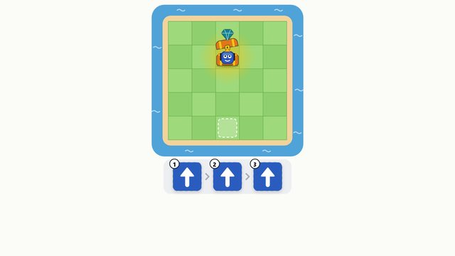
1º-2ºAlgoritmo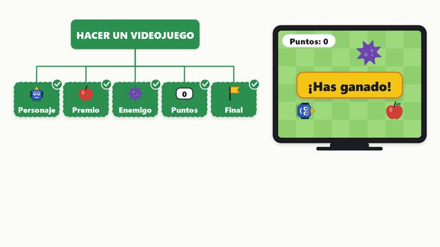
1º-4ºDescomponer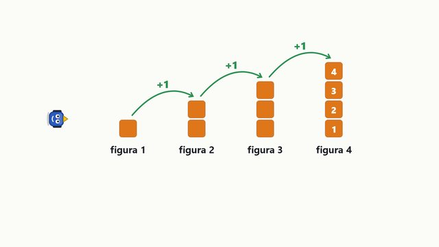
1º-3ºPatrón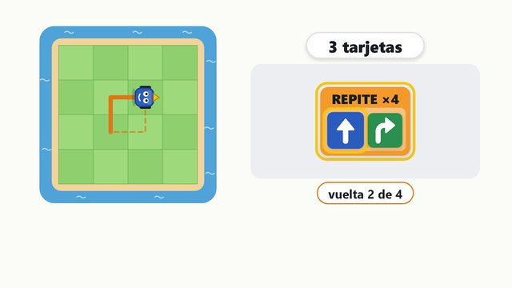
1º-4ºBucle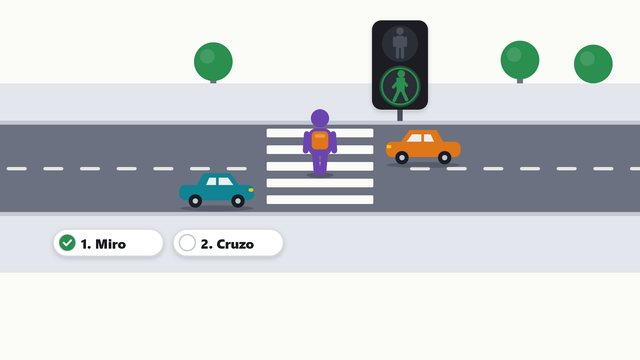
2º-4ºCondición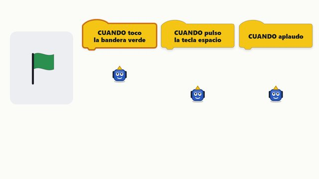
2ºEvento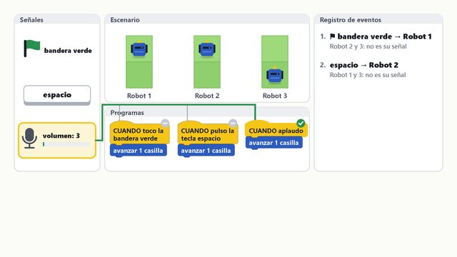
3º-6ºEvento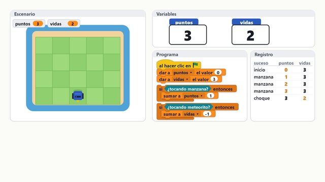
3º-6ºVariable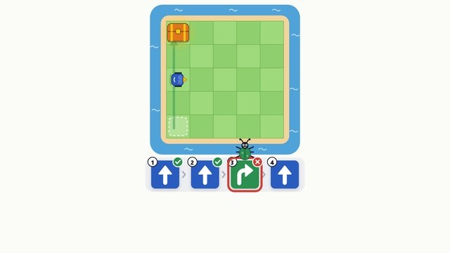
1º-3ºDepurar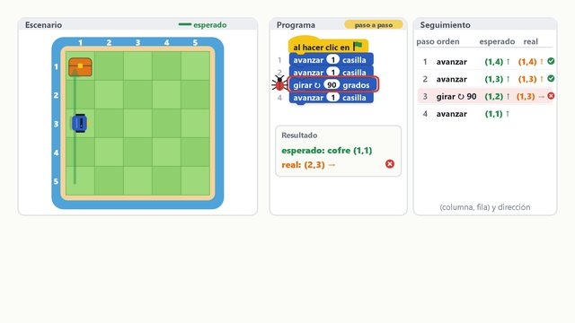
4º-6ºDepurar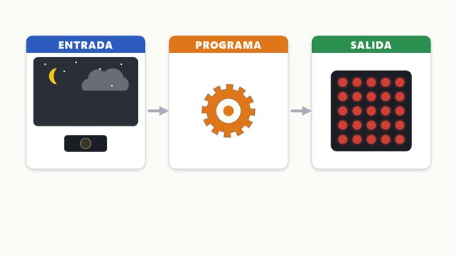
1º-2ºEntrada y salida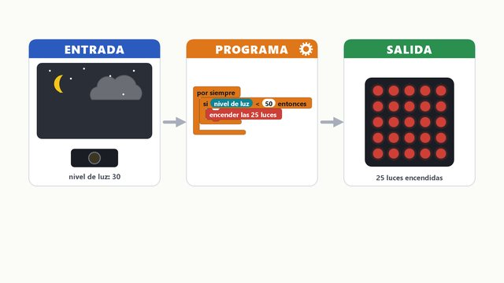
3º-6ºEntrada y salida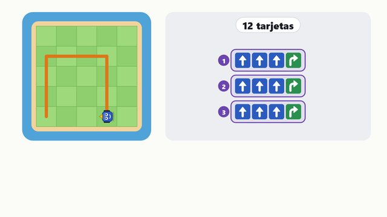
1º-2ºOptimizar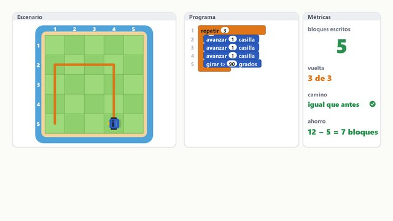
3º-6ºOptimizar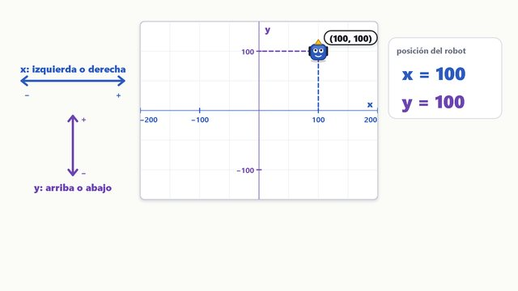
3º-4ºCoordenadas (x, y)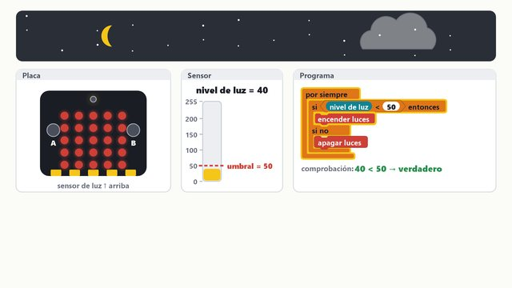
5º-6ºSensor y umbral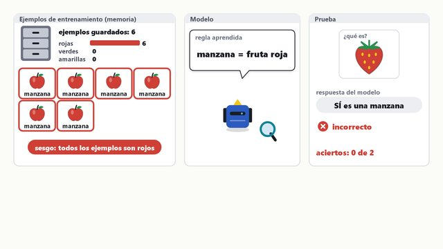
5º-6ºCómo aprende una máquina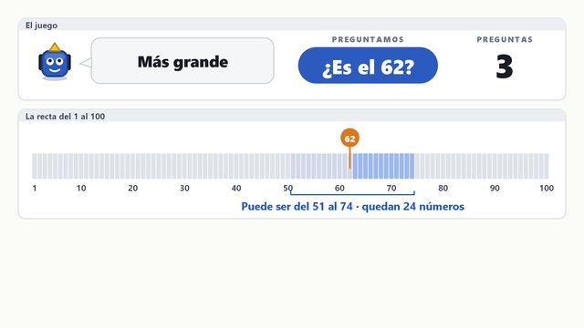
3º-6ºBuscar por la mitad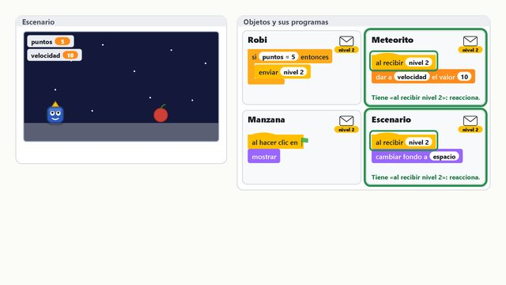
4º-6ºMensajesRetos para las tablets y los portátiles del alumnado
Retos para hacer en parejas. En las tablets se abren con el QR; en los portátiles, con el icono «Retos CE 4.0» o escribiendo oparadanoheda.github.io/guia-ce40/retos. Sin cuentas: nada sale del dispositivo. Cómo prepararlo en los portátiles.
Otras aplicaciones recomendadas
Se abren en otra pestaña. Gratuitas y sin cuentas de alumnado.
Para proyectar · 1º-3º · repaso 4º-6º
Robot en la cuadrícula
Guía para el docente: qué contar, preguntas y soluciones
Un robot en un tablero (5 × 5, 6 × 6 o 7 × 7) que se programa con tarjetas: avanza, gira a la derecha, gira a la izquierda y REPITE (×2, ×3, ×4). Hay mapas del tesoro, cazabichos (programas con errores), retos de figuras y un modo fácil con flechas de dirección en el que el robot no gira.
Qué contar a la clase
- Repaso 4º-6º: algoritmos en un tablero con coordenadas (x, y). En «¿Dónde acaba?» se predice la casilla final y hacia dónde mira el robot antes de ejecutar; en «Cazabichos» se toca la línea que falla y se comprueba.
- Antes de poner tarjetas, alguien señala el camino con el dedo sobre el tablero y la clase lo dice en voz alta.
- Ponerse en el lugar del robot: girar no le mueve de casilla, solo cambia hacia dónde mira. Ayuda que un alumno gire de pie mirando como el robot.
- Ejecutar y, si falla, usar Paso a paso: la pregunta es «¿en qué tarjeta empieza a fallar?».
- Contar las tarjetas y preguntar: «¿se puede hacer con menos?». Ahí entra REPITE.
Preguntas para pensar
- ¿Cuál es el programa más corto para cada mapa del tesoro?
- Pista Mira primero hacia dónde mira el robot al empezar (todos empiezan mirando hacia arriba).
- Pista Cuenta las casillas en línea recta antes de pensar en girar.
Ver la solución
- Mapa 1: avanza ×3 (3 tarjetas).
- Mapa 2: avanza ×3 (3).
- Mapa 3: avanza, avanza, gira a la derecha, avanza, avanza (5).
- Mapa 4: avanza, gira a la izquierda, avanza ×3, gira a la derecha, avanza ×2 (8).
- Mapa 5: avanza ×4, gira a la derecha, avanza ×4 (9).
- Mapa 6: avanza, gira a la derecha, avanza ×2, gira a la izquierda, avanza ×3, gira a la izquierda, avanza ×2 (11).
- Tablero 7 × 7: avanza ×5, gira a la derecha, avanza ×6, gira a la izquierda, avanza (14).
- Modo fácil: ↑ ×4 y → ×4 (8 flechas).
Hay otros caminos igual de cortos; cualquiera que llegue sin chocar está bien.
- Cazabichos: ¿qué tarjetas hay que cambiar?
- Pista Pulsa «Paso a paso» y para en cuanto el robot se aleje del tesoro o vaya a chocar.
- Pista El bicho está en esa tarjeta o en la de antes.
Ver la solución
- Cazabichos 1: la tarjeta 3 tiene que ser avanza.
- Cazabichos 2: la tarjeta 3 tiene que ser gira a la derecha.
- Cazabichos 3 (2 bichos): la 3 tiene que ser gira a la izquierda y la 6, gira a la derecha.
- Cazabichos 4 (2 bichos): la 5 tiene que ser avanza y la 7, gira a la izquierda.
- La escalera: ¿cómo se programa con REPITE?
- Pista ¿Qué trozo se repite en cada escalón?
- Pista Un escalón es: avanza, gira a la derecha, avanza, gira a la izquierda.
Ver la solución
REPITE ×3 (avanza, gira a la derecha, avanza, gira a la izquierda): 5 tarjetas en lugar de 11. Es la misma escalera de 3 escalones que la de «Bucles: largo o corto».
- El cuadrado de 3 casillas de lado: ¿cuántas veces se repite «avanza 3, gira»?
- Pista Un cuadrado tiene 4 lados iguales.
- Pista Cada lado: avanza, avanza, avanza y gira.
Ver la solución
REPITE ×4 (avanza, avanza, avanza, gira a la derecha): 5 tarjetas en lugar de 16. El robot vuelve a la casilla de salida.
Matemáticas
Orientación y giros de un cuarto de vuelta (90°), contar casillas, medir recorridos y la multiplicación como suma repetida (4 veces 4 tarjetas = 16).
Para saber más
Para proyectar · 1º-2º · repaso 4º-6º
Ordena la secuencia
Guía para el docente: qué contar, preguntas y soluciones
Viñetas con pictogramas de rutinas de cada día, desordenadas. Hay que ponerlas en orden: es la idea de algoritmo, una lista de pasos en orden. Se eligieron rutinas con un solo orden posible.
Qué contar a la clase
- Repaso 4º-6º: ordenar algoritmos de su día a día (pasar el programa a la micro:bit, sumar en columna, calcular la media, resolver un problema). En algunos vale más de un orden: la herramienta lo acepta y explica por qué.
- Leer las viñetas en voz alta, tal como salen, y preguntar: «¿tiene sentido así?».
- Buscar primero el paso que va el primero y el que va el último; los del medio salen después.
- Ordenar tocándolas y pulsar Comprobar.
- Cerrar con la idea: un robot no sabe qué paso va antes; si el orden está mal, el resultado sale mal.
Preguntas para pensar
- ¿Qué pasaría si cambiamos dos pasos de sitio? Por ejemplo, secarse antes de aclararse.
- Pista Imagínalo con gestos.
- Pista ¿Se quedaría el jabón en las manos?
Ver la solución
Saldría mal: el orden importa. En un programa pasa lo mismo: las mismas instrucciones en otro orden dan otro resultado.
- ¿Cuál es el orden de cada rutina?
- Pista Busca el primer paso: ¿qué hay que hacer antes que nada?
- Pista Luego pregunta: ¿qué puede ir justo después?
Ver la solución
- Lavarse las manos: abro el grifo → me froto con jabón → me aclaro → me seco con la toalla.
- Lavarse los dientes: cojo el cepillo → pongo la pasta → me cepillo los dientes → me enjuago la boca.
- Ponerse los zapatos: me pongo los calcetines → me pongo los zapatos → me ato los cordones → salgo a caminar.
- Hacer una tostada: cojo una rebanada de pan → la meto en la tostadora → unto la tostada → me la como.
- Plantar una semilla: siembro la semilla → la riego → sale un brote → crece la planta.
- Cruzar la calle: me paro en el bordillo → espero: el muñeco está en rojo → el muñeco se pone en verde → miro a los dos lados → cruzo por el paso de cebra.
- Lavarse las manos en 6 pasos: abro el grifo → me pongo jabón → me froto las manos → me aclaro → cierro el grifo → me seco.
Matemáticas
Ordinales (primero, segundo, último), antes y después, y orden temporal.
Para proyectar · 1º-3º · repaso 4º-6º
Patrones
Guía para el docente: qué contar, preguntas y soluciones
Patrones de figuras que se repiten (AB, AAB, ABB, AABB, ABC, ABCD), un patrón que crece (la figura 1 tiene 1 cuadrado, la 2 tiene 2…) y patrones con bicho, en los que una figura rompe la regla.
Qué contar a la clase
- Repaso 4º-6º: figuras que crecen (¿cuántos tendrá la figura 5? ¿y la 10?), series de números (sumar, restar, el doble, Fibonacci) y series con un número que las rompe.
- Decir el patrón en voz alta, con ritmo: «rojo, azul, rojo, azul…».
- Buscar la parte que se repite (el «trozo» del patrón) y rodearla con el dedo.
- Predecir lo que va en cada «?» y tocar para comprobar.
- Con bicho: decirlo en voz alta hasta que «suene mal».
Preguntas para pensar
- En el patrón AB, ¿qué figura va en el puesto 10? ¿Y en el 15?
- Pista Escribe los primeros puestos: 1 A, 2 B, 3 A, 4 B…
- Pista ¿Qué tienen en común los puestos de la B?
Ver la solución
En AB, los puestos impares son A y los pares, B: el 10 es B y el 15 es A.
- En el patrón ABC, ¿qué figura va en el puesto 12?
- Pista El trozo que se repite tiene 3 figuras.
- Pista Cuenta de 3 en 3: 3, 6, 9, 12.
Ver la solución
El 12 es múltiplo de 3, así que va la C, la última del trozo. En general, se mira el resto de dividir entre el tamaño del trozo.
- En el patrón que crece, ¿cuántos cuadrados tiene la figura 10? ¿Y cuántos hay en total en las 5 primeras figuras?
- Pista Cuenta los cuadrados de las figuras 1, 2 y 3.
- Pista Para el total, suma figura a figura.
Ver la solución
La figura 10 tiene 10 cuadrados (cada figura tiene tantos como su número). En las 5 primeras hay 15: 1 + 2 + 3 + 4 + 5.
Matemáticas
Series y regularidades, pares e impares, múltiplos, y el primer álgebra: describir una regla («la figura n tiene n cuadrados»).
Para proyectar · 1º-4º · repaso 4º-6º
Bucles: largo o corto
Guía para el docente: qué contar, preguntas y soluciones
Compara un programa largo con el mismo programa escrito con REPITE y cuenta las tarjetas que se ahorran. Con la barra se cambia el número de repeticiones.
Qué contar a la clase
- Repaso 4º-6º: con los bloques de Scratch, cuántas veces se ejecuta cada bloque, cuándo se cierra una figura (repeticiones × giro = 360), un bucle dentro de otro y «repetir hasta que» con su tabla de vueltas.
- Leer el programa largo en voz alta. «¿Qué se repite?»
- Ver el programa con bucle: el trozo que se repite va dentro de REPITE.
- Comprobar que los dos hacen exactamente lo mismo, y contar las tarjetas de cada uno.
- Mover la barra de repeticiones: ¿cuál crece y cuál se queda igual?
Preguntas para pensar
- ¿Cuántas tarjetas tiene cada programa?
- Pista Largo: tarjetas del trozo × veces que se repite.
- Pista Corto: las del trozo más la de REPITE.
Ver la solución
- Palmadas (REPITE 4): largo 4, corto 2.
- Baile (REPITE 3, 3 tarjetas dentro): largo 9, corto 4.
- Cuadrado (REPITE 4, 3 dentro): largo 12, corto 4.
- Escalera (REPITE 3, 4 dentro): largo 12, corto 5.
- ¿Cuándo se ahorran más tarjetas?
- Pista Sube las repeticiones con la barra y mira los dos números.
- Pista ¿Qué pasa con el largo? ¿Y con el corto?
Ver la solución
El largo crece con cada repetición y el corto no cambia. Cuantas más veces se repite algo, más se ahorra con un bucle.
- ¿Cuántas palmadas hay en «REPITE 3: palmada, palmada»?
- Pista ¿Cuántas palmadas hay en cada vuelta?
- Pista ¿Cuántas vueltas da?
Ver la solución
6 = 3 × 2.
Matemáticas
La multiplicación como suma repetida y la comparación de cantidades (¿cuántas menos?).
Para proyectar · 2º-4º · repaso 4º-6º
Semáforo de peatones: si… entonces
Guía para el docente: qué contar, preguntas y soluciones
El semáforo de peatones (el muñeco rojo y el verde) para trabajar reglas SI… ENTONCES y, en el otro modo, SI… SI NO.
Qué contar a la clase
- Repaso 4º-6º: la clase mueve el valor del sensor o de las variables, predice qué hará el programa y lo comprueba. Se ilumina la rama que se ejecuta. Cinco niveles: si… entonces, si no, tres caminos (si no, si), «y» y «o».
- Leer la regla en voz alta.
- Pulsar Luz al azar: la clase dice qué hace el peatón antes de pulsar Ver respuesta.
- En modo SI… SI NO: una sola pregunta y dos caminos.
Preguntas para pensar
- ¿Qué diferencia hay entre usar dos reglas SI y una SI… SI NO?
- Pista Escribe las dos reglas: «si rojo… », «si verde…».
- Pista ¿Hace falta preguntar dos veces?
Ver la solución
Con SI… SI NO basta una pregunta: «si el muñeco está en verde, cruzo; si no, espero». El SI NO recoge todos los demás casos.
- Si el muñeco está en verde, ¿cruzamos sin mirar?
- Pista ¿Puede pasar un coche aunque esté en verde para nosotros?
Ver la solución
No: primero se mira a los dos lados. La condición del semáforo no basta; la seguridad añade otra comprobación. En programación también se encadenan condiciones.
Matemáticas
Lógica de sí o no y clasificación de casos.
Para proyectar · 1º-3º · repaso 4º-6º
Clasificador y regla secreta
Guía para el docente: qué contar, preguntas y soluciones
Objetos con pictogramas para clasificar por tipo, por color o por tamaño, y una regla secreta: la máquina manda cada objeto a «SÍ cumple» o «NO cumple» y la clase tiene que adivinar la regla.
Qué contar a la clase
- Repaso 4º-6º: la regla secreta con números del 1 al 30 (par, múltiplos, mayor o menor que) y reglas con «y», «o» y «no»; y un árbol de decisión de dos preguntas que reparte los números en cuatro cajas, como clasifica una máquina.
- Clasificar: tocar un objeto y después la caja donde va.
- Cambiar de criterio arriba: el mismo objeto puede ir a otra caja según lo que miremos.
- Regla secreta: tocar objetos, ver adónde van y proponer la regla antes de Desvelar la regla.
- Cerrar con la idea: así aprende una máquina, mirando muchos ejemplos ya clasificados.
Preguntas para pensar
- ¿Un objeto puede ir en dos cajas a la vez?
- Pista Piensa en la manzana: ¿qué es por tipo? ¿y por color?
Ver la solución
Con un criterio, cada objeto va a una sola caja. Al cambiar de criterio puede cambiar de caja: la manzana es «fruta» por tipo y «rojo» por color.
- Regla secreta: ¿qué objetos conviene probar para descubrirla antes?
- Pista Prueba dos objetos que se parezcan en casi todo.
- Pista Si van a cajas distintas, la regla está en lo que los diferencia.
Ver la solución
Las reglas posibles son: es de color rojo, es de color verde, es un animal, es una fruta, es un vehículo y es más grande que una persona. Conviene probar objetos que descarten varias reglas a la vez y contar cuántos hacen falta.
Matemáticas
Clasificar según un criterio, atributos (color, forma, tamaño) y tablas de doble entrada.
Para proyectar · 1º-3º
¿Qué animal soy?
Guía para el docente: qué contar, preguntas y soluciones
El ordenador piensa uno de 8 animales y la clase lo descubre con preguntas de sí o no. Cada respuesta tacha a los animales que no la cumplen.
Qué contar a la clase
- Antes de preguntar: «¿qué pregunta tacha más animales?».
- Hacer la pregunta y contar cuántos quedan.
- Al final, contar cuántas preguntas han hecho falta e intentar mejorarlo con otro animal.
Preguntas para pensar
- ¿Cuál es la mejor primera pregunta?
- Pista Cuenta, para cada pregunta, cuántos animales dicen SÍ y cuántos NO.
- Pista La mejor es la que deja menos animales en el peor caso.
Ver la solución
«¿Es más grande que una persona?»: separa 3 (caballo, avestruz, ballena) de 5. Las demás preguntas separan 2 de 6.
- ¿Cuántas preguntas hacen falta como mucho si se eligen bien?
- Pista Si cada pregunta partiera el grupo justo por la mitad: 8 → 4 → 2 → 1.
- Pista ¿Alguna de estas preguntas parte el grupo por la mitad?
Ver la solución
Con preguntas que partieran justo por la mitad bastarían 3. Con estas 5 preguntas ninguna parte 4 y 4, así que hacen falta como mucho 4 si se eligen bien.
- Inventad una pregunta que parta los 8 animales justo por la mitad.
- Pista Necesitáis 4 animales en el SÍ y 4 en el NO.
Ver la solución
Por ejemplo, «¿vive en el agua o puede volar?»: SÍ al pez, la ballena, el pájaro y la mariposa; NO a los otros cuatro.
Matemáticas
Clasificar con atributos, mitades y dobles (8, 4, 2, 1) y la búsqueda eficiente.
Para proyectar · 1º-6º
Votaciones y gráfico
Guía para el docente: qué contar, preguntas y soluciones
Encuestas con gráfico de barras en directo y con escala, un dado para estudiar frecuencias y el dado de la clase, que compara las tiradas con dados de verdad con 1000 tiradas del ordenador. La pregunta se escribe arriba y en Mis opciones se ponen las opciones de cada clase.
Qué contar a la clase
- Escribir la pregunta (o dejarla en blanco) y votar con +1.
- Leer el gráfico: ¿qué barra es la más alta (la moda)? ¿Cuántos votos hay en total? ¿Cuántos más tiene la primera que la segunda?
- Dado: predecir antes de tirar y comparar 10 tiradas con 100.
- Dado de la clase: cada pareja dicta cuántas veces le ha salido cada número (o se escriben los totales de la pizarra) y se pulsa Añadir. Después, Comparar con 1000 tiradas del ordenador: ¿en cuál se acercan más las barras a la línea «Si salieran igual»?
Preguntas para pensar
- Si tiramos el dado 100 veces, ¿qué número saldrá más?
- Pista ¿Tiene algún número más posibilidades que otro?
- Pista Tirad 100 veces dos o tres veces y comparad.
Ver la solución
Cualquiera: los seis tienen la misma probabilidad (1 de cada 6). Con 100 tiradas cada número sale unas 17 veces, pero casi nunca quedan iguales.
- Si en 10 tiradas sale mucho el 6, ¿el dado está trucado?
- Pista Repite las 10 tiradas varias veces.
- Pista ¿Pasa lo mismo con 100?
Ver la solución
No necesariamente. Con pocas tiradas hay mucha casualidad; con muchas, las barras se parecen más entre sí.
- Con los dados de la clase, un número ha salido bastante más que otro. ¿Nuestros dados están trucados?
- Pista ¿Cuántas tiradas habéis hecho? ¿Y el ordenador?
- Pista En las 1000 del ordenador, ¿las barras se separan tanto de la línea?
Ver la solución
Seguramente no. Con unos cientos de tiradas es normal que un número salga bastante más que otro. Con 1000, cada número sale unas 167 veces y las barras quedan mucho más cerca de la línea. Para sospechar de un dado hacen falta muchas tiradas.
Matemáticas
Estadística: recogida de datos, gráfico de barras, escala, moda, total y diferencias. Probabilidad: suceso seguro, posible e imposible, y frecuencia.
Para proyectar · 3º-4º
Diagramas de flujo paso a paso
Guía para el docente: qué contar, preguntas y soluciones
Diagramas de flujo para recorrer paso a paso: óvalo para empezar y terminar, rectángulo para hacer algo y rombo para una pregunta de sí o no.
Qué contar a la clase
- Señalar las tres formas y qué significa cada una.
- Recorrer el diagrama con Siguiente paso; en cada rombo, la clase vota SÍ o NO.
- Probar el otro camino del rombo y ver adónde lleva.
Preguntas para pensar
- ¿Por qué el rombo tiene dos salidas y el rectángulo solo una?
- Pista ¿Qué hay dentro de cada forma?
Ver la solución
El rombo es una pregunta: tiene un camino para el SÍ y otro para el NO. El rectángulo es una acción: después de hacerla se sigue siempre por el mismo sitio.
- En «Par o impar», ¿se pueden decir «PAR» e «IMPAR» en el mismo recorrido?
- Pista Seguid las flechas desde el rombo.
- Pista ¿Por cuántos caminos sale del rombo cada vez?
Ver la solución
No: cada vez que se llega a un rombo se sigue un solo camino, el del SÍ o el del NO. Los dos caminos se juntan otra vez antes de TERMINA.
- En «Cruzar la calle», ¿qué pasa si el muñeco no está en verde?
- Pista Sigue la flecha del NO.
Ver la solución
Espero en el bordillo y vuelvo a mirar el semáforo: el diagrama vuelve atrás hasta que la respuesta es SÍ. Eso es un bucle.
- En «Adivina el número», del 1 al 100, ¿cuántos intentos hacen falta como mucho si te dicen «más grande» o «más pequeño»?
- Pista Empieza siempre por la mitad de lo que queda (50, luego 25 o 75…).
- Pista Cada intento parte lo que queda por la mitad.
Ver la solución
Con la estrategia de la mitad, 7 intentos como mucho, porque 2 × 2 × 2 × 2 × 2 × 2 × 2 = 128 es más que 100.
Matemáticas
Lógica, par e impar, y la estrategia de partir por la mitad.
Para proyectar · 3º-6º
Adivina el número
Guía para el docente: qué contar, preguntas y soluciones
El juego de adivinar un número con pistas («es más grande», «es más pequeño»), que es el programa de 4º S5. Tres modos: El ordenador piensa (la clase pregunta y la recta numérica tacha lo descartado), Piensa la clase (el ordenador adivina preguntando siempre por la mitad y enseña la cuenta) y ¿Cuántas preguntas? (del 1 al 100 bastan 7; del 1 al millón, 20).
Qué contar a la clase
- Primero se juega sin estrategia: cada uno dice un número. Después se mira la recta: ¿cuánto ha descartado cada pregunta?
- La estrategia es preguntar por la mitad de lo que queda: sea cual sea la respuesta, se descarta la mitad. El botón «Pista: la mitad» hace la cuenta.
- En «Piensa la clase», un alumno escribe el número en un papel y la clase responde. Si una respuesta está mal, el ordenador lo nota: no queda ningún número posible.
- En «¿Cuántas preguntas?», comparar de uno en uno con por la mitad. Al duplicar los números, solo hace falta una pregunta más.
Preguntas para pensar
- Quedan los números del 51 al 100. ¿Por qué número conviene preguntar?
- Pista Buscad el número que deja la misma cantidad a cada lado.
- Pista (51 + 100) : 2 = 75 y medio.
Ver la solución
Por el 75: sea más grande o más pequeño, quedan unos 25 números. Si se pregunta por el 99, lo normal es oír «más pequeño» y solo se descartan 2.
- Del 1 al 1000, ¿cuántas preguntas hacen falta como mucho, preguntando por la mitad?
- Pista Id partiendo: 1000, 500, 250…
- Pista Contad las veces que se parte hasta que queda 1 y sumad la pregunta en la que se acierta.
Ver la solución
10: 1000 → 500 → 250 → 125 → 62 → 31 → 15 → 7 → 3 → 1. Nueve preguntas parten y la décima acierta.
- En el programa de Scratch de 4º S5, ¿qué bloques dan la pista?
- Pista Mirad dentro del «si no» de «si respuesta = secreto».
Ver la solución
si (respuesta > secreto) entonces → decir Es más pequeño, y en su si no → decir Es más grande. Es un «si… si no» dentro de otro.
Matemáticas
Comparar y ordenar números, la recta numérica, la mitad de un número y el redondeo, dobles y mitades (potencias de 2), estimación.
Para saber más
Para proyectar · 3º-4º
Polígonos
Guía para el docente: qué contar, preguntas y soluciones
Una tortuga dibuja un polígono regular con «repetir n: mover, girar». Se cambian el número de lados y la longitud, y aparece el programa que lo dibuja. En Rosetón, el polígono se repite 12 veces girando 30°.
Qué contar a la clase
- Dibujar un cuadrado: 4 lados y giro de 90°. «¿Cuánto ha girado en total la tortuga?»
- Cambiar los lados y mirar el giro que calcula: 360 ÷ lados.
- Probar con muchos lados (12 o más) y ver qué forma sale.
Preguntas para pensar
- ¿Cuánto gira la tortuga en un triángulo? ¿Y en un hexágono?
- Pista Al terminar, la tortuga ha dado una vuelta completa: 360°.
- Pista Reparte 360 entre el número de lados.
Ver la solución
Triángulo: 120° (360 ÷ 3). Hexágono: 60° (360 ÷ 6). Ojo: en el triángulo el giro no es 60°; ese es el ángulo de dentro de la figura.
- ¿Qué pasa si ponemos muchísimos lados?
- Pista Prueba con 12 y luego con el máximo.
Ver la solución
La figura se parece cada vez más a una circunferencia: lados muy cortos y giros muy pequeños.
- ¿Por qué el rosetón gira 30° entre polígono y polígono?
- Pista ¿Cuántas veces se repite el polígono?
Ver la solución
Porque son 12 polígonos y 12 × 30° = 360°: una vuelta completa.
Matemáticas
Polígonos regulares, ángulos y giros, la vuelta completa (360°) y la división.
Para proyectar · 3º-6º
Variables
Guía para el docente: qué contar, preguntas y soluciones
Una variable es una caja con nombre: el nombre no cambia; lo que guarda, sí. Cuatro modos, con los bloques escritos como en Scratch o en MakeCode (botón de arriba): La caja (dar el valor frente a sumar), Juego de cálculo (puntos y vidas en un juego de verdad, con el programa iluminado), ¿Cuánto vale al final? (programas cortos paso a paso, con su tabla) y La mascota (la variable hambre de 6º S2).
Qué contar a la clase
- La caja: antes de ejecutar un bloque, la clase dice cuánto valdrá. «Dar el valor» borra lo que había; «sumar» parte de lo que había.
- Juego de cálculo: un alumno contesta y la clase mira qué bloque se ilumina. Con vidas = 0 se cumple la condición y el juego acaba.
- ¿Cuánto vale al final?: primero se escribe la predicción y después se ejecuta paso a paso. Los programas «Sin valor inicial» e «Intercambiar: con bicho» tienen un error para descubrir.
- La mascota: los botones hacen lo mismo que la placa. La variable guarda el estado: cuánta hambre tiene.
Preguntas para pensar
- Si puntos vale 3, sumo 1 dos veces y después pongo puntos a 0, ¿cuánto vale?
- Pista Hazlo paso a paso: 3 → … → …
- Pista ¿Qué hace «dar a puntos el valor 0»?
Ver la solución
0. «Dar el valor» borra lo que había y pone el número nuevo; «sumar» parte de lo que había.
- Empezamos con 3 vidas y chocamos 3 veces. ¿Qué tiene que pasar?
- Pista ¿Cuánto vale vidas tras cada choque?
Ver la solución
Vidas llega a 0 y el juego tiene que terminar: «si vidas = 0 entonces decir “Has perdido”». Es una condición que mira el valor de la variable.
Matemáticas
Suma y resta, valores que cambian y lectura de un registro paso a paso.
Para proyectar · 3º-6º
Coordenadas del escenario
Guía para el docente: qué contar, preguntas y soluciones
El escenario de Scratch con sus ejes: x de −240 a 240 (izquierda y derecha) e y de −180 a 180 (abajo y arriba). El centro es (0, 0). Cuatro modos: Explorar (al pasar el dedo se ve la x y la y de cada punto), Con bloques (ir a, sumar a x, dar a x el valor, con retos de predecir dónde acaba el gato), ¿Dónde está? (leer las coordenadas de una estrella o tocar un punto) y Dibujar con «ir a» (figuras uniendo puntos, con esquinas que faltan o que están mal).
Qué contar a la clase
- Explorar: llevar el dedo hacia la izquierda y ver cómo la x baja y pasa a negativa; igual con la y hacia abajo.
- Con bloques: antes de ejecutar, la clase dice dónde acabará el gato. «Sumar» parte de donde estaba; «ir a» no mira dónde estaba.
- ¿Dónde está?: primero la x (bajando hasta el eje x) y después la y. Se da por bueno a 15 pasos o menos.
- Dibujar: calcular las esquinas con el centro en el (0, 0): los mismos números con distinto signo.
Preguntas para pensar
- ¿En qué esquina está el punto (240, 180)? ¿Y (−240, −180)?
- Pista La x grande es la derecha; la y grande es arriba.
Ver la solución
(240, 180): arriba a la derecha. (−240, −180): abajo a la izquierda.
- El gato está en (−100, 50). ¿Dónde acaba si mueve x + 10 tres veces?
- Pista Suma 10 tres veces a la x; la y no cambia.
- Pista Cuidado con los negativos: −100 + 10 = −90.
Ver la solución
En (−70, 50).
Matemáticas
Ejes de coordenadas, números negativos, sumar y restar en la recta numérica.
Para proyectar · 4º-6º
Cubos y vistas
Guía para el docente: qué contar, preguntas y soluciones
Figuras hechas con cubos sobre una cuadrícula y sus tres vistas: de frente, desde arriba y de lado (desde la derecha). Tres modos: Construir (se ponen y se quitan cubos tocando la cuadrícula y las vistas cambian al momento), ¿Qué vista es? (elegir la vista correcta entre tres) y ¿Cuántos cubos? (contar también los que no se ven). Es lo mismo que enseña el cubo de vistas de Tinkercad.
Qué contar a la clase
- Las flechas del dibujo dicen desde dónde se mira cada vista. De frente se ve la fila de delante y lo que asoma por encima.
- Una vista solo enseña el contorno: una torre alta tapa a las bajas que tiene detrás.
- En «¿Qué vista es?» una de las opciones está al revés, como en un espejo: es la que se vería desde el otro lado.
- En «¿Cuántos cubos?» ningún cubo está en el aire. Se cuenta por pisos: el de abajo tiene una baldosa por cada torre.
Preguntas para pensar
- ¿Pueden dos figuras distintas tener la misma vista de frente?
- Pista Pensad en lo que hay detrás de la fila de delante.
Ver la solución
Sí: de frente no se ve lo que hay detrás si es igual de alto o más bajo. Por eso, para saber cómo es una figura, hacen falta al menos dos vistas.
- Desde arriba, una figura tiene 5 cuadrados, y cada torre tiene 2 cubos. ¿Cuántos cubos tiene?
- Pista Cada cuadrado de la vista desde arriba es una torre.
Ver la solución
10: 5 torres × 2 cubos. Es el volumen contado en cubos.
- ¿Qué vista desde arriba tiene una figura de 3 torres en fila, de 1, 2 y 3 cubos?
- Pista Desde arriba no se ve la altura, solo dónde hay torre.
Ver la solución
Tres cuadrados en fila, iguales. Las alturas solo se ven de frente o de lado (o escribiendo el número de cubos en cada cuadrado).
Matemáticas
Vistas de cuerpos geométricos, orientación en el espacio, volumen contando cubos, descomponer por pisos (sumas y multiplicaciones).
Para proyectar · 3º-4º
¿Conduce la electricidad?
Guía para el docente: qué contar, preguntas y soluciones
Un circuito con pila y bombilla y un hueco donde se pone un objeto. Si el objeto conduce la electricidad, el camino se cierra y la bombilla se enciende.
Qué contar a la clase
- Un circuito es un camino cerrado: si se abre en algún sitio, no pasa la electricidad.
- Elegir un objeto, votar si se encenderá y pulsar Probar el circuito.
- Rellenar la tabla de la derecha y buscar qué tienen en común los que conducen.
Preguntas para pensar
- ¿Qué tienen en común los objetos que encienden la bombilla?
- Pista Mira la tabla: cuchara, moneda, llave, aluminio…
Ver la solución
Casi todos son de metal. La mina del lápiz (grafito) también conduce. El papel, la madera, el plástico, la goma y la lana no conducen.
- El plátano y la mano no encienden la bombilla, pero sirven con Makey Makey. ¿Por qué?
- Pista ¿Conducen nada o conducen poco?
Ver la solución
Conducen muy poco: no lo bastante para una bombilla, pero Makey Makey nota corrientes muy pequeñas. Por eso sirven como teclas.
Matemáticas
Clasificar, tablas de registro y predecir y comprobar.
Para proyectar · 5º-6º
Matriz de LED de la micro:bit
Guía para el docente: qué contar, preguntas y soluciones
La pantalla de la micro:bit: 25 luces en una cuadrícula de 5 × 5. La x va de 0 a 4 hacia la derecha y la y de 0 a 4 hacia abajo. Se dibuja tocando las luces.
Qué contar a la clase
- Contar las luces: 5 filas de 5 = 25.
- Pasar el dedo por encima de una luz: aparecen su x y su y.
- Dibujar iconos arriba (corazón, sonrisa…) y contarlos con Contar luces encendidas.
Preguntas para pensar
- ¿Cuáles son las coordenadas de la luz del centro? ¿Y de la esquina de abajo a la derecha?
- Pista Las coordenadas empiezan en 0, no en 1.
Ver la solución
Centro: (2, 2). Abajo a la derecha: (4, 4). Arriba a la izquierda es (0, 0).
- ¿Cuántas luces encendidas tiene el corazón? ¿Y la sonrisa?
- Pista Cuenta fila a fila y suma.
Ver la solución
Corazón: 16 (2 + 5 + 5 + 3 + 1). Sonrisa: 7.
Matemáticas
Coordenadas, cuadrículas, multiplicación (5 × 5) y conteo por filas.
Para proyectar · 5º-6º
Sensor y umbral
Guía para el docente: qué contar, preguntas y soluciones
Un sensor mide algo (luz o temperatura) y el programa lo compara con un número límite, el umbral, para decidir. Con luz: si el nivel es menor que el umbral, es de noche y sale la luna. Con temperatura: si es mayor que el umbral, salta el aviso.
Qué contar a la clase
- Mover «lo que mide el sensor» y mirar qué hace el programa.
- Leer la frase de abajo: «120 no es menor que 50 → no se cumple».
- Mover el umbral: el mismo valor medido puede dar otra decisión.
Preguntas para pensar
- Con luz 120 y umbral 50, ¿sale la luna?
- Pista La regla es: si nivel de luz < umbral.
Ver la solución
No: 120 no es menor que 50. Sale la luna cuando el nivel baja de 50.
- ¿Qué pasa si ponemos el umbral de luz muy alto, por ejemplo 250?
- Pista ¿Qué valores de luz son menores que 250?
Ver la solución
Casi cualquier nivel de luz es menor, así que sale la luna aunque sea de día. Un umbral mal puesto hace que el programa decida mal: hay que medir y probar.
- ¿Cómo elegiríais el umbral para una luz que se enciende al anochecer?
- Pista Medid la luz de la clase con las luces encendidas y con la persiana bajada.
Ver la solución
Se mide en las dos situaciones y se elige un número entre los dos valores. Es lo que hacen los ingenieros: medir, probar y ajustar.
Matemáticas
Comparar números (mayor que, menor que), medir y elegir un valor límite.
Para proyectar · 4º-6º
Mensajes: enviar y recibir
Guía para el docente: qué contar, preguntas y soluciones
Un mensaje es un aviso que un programa envía a los demás. Dos modos: En Scratch (Robi envía «nivel 2» o «fin del juego»; el mensaje llega a todos los objetos, pero solo reaccionan los que tienen un «al recibir» con ese nombre) y Radio de la micro:bit (seis placas, cada una con su grupo: el número que envía una solo lo reciben las del mismo grupo).
Qué contar a la clase
- Antes de enviar, la clase marca los objetos que cree que reaccionarán. Después se comprueba.
- El mensaje llega a todos; la diferencia está en quién tiene el bloque «al recibir».
- Con la radio pasa algo parecido: llega a todas las placas del mismo grupo. Por eso cada equipo necesita su propio número de grupo.
- Los retos de la radio piden repartir los grupos: dos equipos que hablan a solas, dos redes de tres y que nadie oiga a nadie.
Preguntas para pensar
- ¿Qué pasa si Robi envía «nivel 2» y nadie tiene «al recibir nivel 2»?
- Pista El mensaje se envía igual.
Ver la solución
El mensaje llega a todos y nadie hace nada, sin dar error. Es un bicho frecuente: el mensaje de «enviar» y el de «al recibir» no son el mismo (por ejemplo, «nivel 2» y «nivel2»).
- En la radio, ¿por qué la placa que envía no enseña el número?
- Pista ¿Para quién es el mensaje?
Ver la solución
Porque la micro:bit no recibe sus propios mensajes de radio: el mensaje es para las demás placas del grupo.
- Hay 6 equipos. ¿Cuántos grupos distintos hacen falta para que formen 3 parejas que hablen cada una a solas?
- Pista Cada pareja necesita un grupo que no use nadie más.
Ver la solución
3: por ejemplo, los equipos 1 y 2 en el grupo 1, el 3 y el 4 en el 2, y el 5 y el 6 en el 3.
Matemáticas
Agrupar y clasificar, códigos numéricos y probabilidad sencilla (¿qué pasa si cada equipo elige su grupo al azar?).
Para proyectar · 5º-6º
Velocidad × tiempo
Guía para el docente: qué contar, preguntas y soluciones
Un robot que avanza a una velocidad durante un tiempo. Antes de arrancarlo, la clase predice la distancia: distancia = velocidad × tiempo.
Qué contar a la clase
- Elegir velocidad y tiempo, y que cada uno apunte su predicción.
- Arrancar y comparar con la regla.
- Probar otras parejas de valores y apuntarlas en la tabla.
Preguntas para pensar
- A 20 cm/s durante 2 s, ¿cuánto avanza?
- Pista Cada segundo avanza 20 cm.
Ver la solución
40 cm = 20 × 2.
- ¿Qué velocidad y qué tiempo hacen que recorra 100 cm?
- Pista Busca dos números que multiplicados den 100.
- Pista La velocidad va de 5 en 5 y el tiempo, de medio en medio segundo.
Ver la solución
Por ejemplo, 20 × 5, 25 × 4 o 40 × 2,5.
- Si doblamos la velocidad y mantenemos el tiempo, ¿qué pasa con la distancia?
- Pista Prueba 10 cm/s y 20 cm/s durante 3 s.
Ver la solución
Se dobla también (30 cm y 60 cm). Ojo: con el robot Nezha real hay que medir, porque el número de velocidad del programa no son centímetros por segundo exactos.
Matemáticas
Multiplicación y división, proporcionalidad, medidas de longitud y tiempo, y decimales (2,5 s).
Para proyectar · 5º-6º
Entrena a la máquina
Guía para el docente: qué contar, preguntas y soluciones
Una máquina aprende qué es una manzana a partir de ejemplos. Si todas las manzanas que ve son de un color, aprende «manzana = fruta de ese color» y se equivoca: eso es un sesgo. Con ejemplos variados acierta. No usa cámara.
Qué contar a la clase
- Entrenar con pocos ejemplos parecidos (solo manzanas rojas) y leer lo que ha aprendido.
- Probar con otras frutas y ver los errores.
- Entrenar con manzanas de varios colores y volver a probar.
- Idea final: la máquina aprende de los datos; si los datos fallan, la máquina falla.
Preguntas para pensar
- Si solo ha visto manzanas rojas, ¿qué dirá de una manzana verde? ¿Y de una fresa?
- Pista Lee la regla que ha aprendido.
Ver la solución
De la manzana verde dirá que no es manzana, y de la fresa (roja) que sí. Los dos errores vienen de lo mismo: ha aprendido el color, no la fruta.
- ¿Cómo se arregla?
- Pista ¿Qué ejemplos le faltaban?
Ver la solución
Con ejemplos variados: manzanas rojas, verdes y amarillas. Entonces aprende que lo que importa no es el color.
Matemáticas
Clasificar con datos, contar aciertos y errores, y sacar conclusiones de una muestra.
Para proyectar · 1º-2º (reserva) · 5º-6º
¿Puede pasar de verdad? · ¿Verdad, bulo o IA?
Guía para el docente: qué contar, preguntas y soluciones
Tarjetas para votar y comprobar. 1º-2º: ¿puede pasar de verdad o es inventado? 5º-6º: ¿es verdad, es un bulo o está hecho con IA? Cada respuesta trae su explicación.
Qué contar a la clase
- Leer la tarjeta y votar con la mano antes de tocar la respuesta.
- Pedir siempre el porqué: «¿en qué te has fijado?».
- Leer la explicación y apuntar las pistas en la pizarra.
Preguntas para pensar
- ¿Qué pistas tiene un bulo?
- Pista Mira los titulares y mensajes que eran bulos.
Ver la solución
Exageraciones y exclamaciones, cosas imposibles, prometer demasiado, pedir que lo reenvíes («¡Pásalo!») y no decir quién lo dice. Se comprueba en una fuente oficial o fiable.
- ¿Cómo se puede notar que una imagen está hecha con IA?
- Pista Fíjate en las manos y en las formas.
Ver la solución
Errores típicos: manos con dedos de más o de menos, formas imposibles o que se derriten, textos sin sentido. No siempre se nota: por eso se comprueba de dónde viene.
Matemáticas
Contar los votos de la clase y comparar.
Para proyectar · 3º-6º
Contraseñas seguras
Guía para el docente: qué contar, preguntas y soluciones
Un medidor de seguridad de contraseñas y el juego «¿cuál es más segura?». Se escriben solo contraseñas de ejemplo, nunca una real.
Qué contar a la clase
- Escribir un ejemplo y ver qué condiciones cumple: 12 caracteres o más, mayúsculas y minúsculas, números, símbolos y no ser una muy común.
- Jugar a los pares: la clase vota cuál es más segura y lo comprueba con el medidor.
- Consejo final: una frase larga fácil de recordar es mejor que una palabra corta con símbolos.
Preguntas para pensar
- En cada par, ¿cuál es más segura?
- Pista Comprueba la longitud primero.
- Pista Después mira si mezcla tipos de caracteres.
Ver la solución
- Par 1: «MiPerroSaltaAlas7!» (larga y con de todo) mejor que «pepe».
- Par 2: «Luna.Verde.2026» mejor que «12345678».
- Par 3: «ElSolDeMadrid» mejor que «sol»: es más larga y mezcla mayúsculas y minúsculas.
- ¿Por qué «12345678» es tan mala aunque tenga 8 caracteres?
- Pista ¿Cuánta gente la usará?
Ver la solución
Es de las más usadas: es lo primero que se prueba para entrar en una cuenta.
Matemáticas
Contar caracteres y combinar elementos.
Para proyectar · 1º-6º
Temporizador de sesión
Guía para el docente: qué contar, preguntas y soluciones
Cuenta atrás de 45 minutos con la fase de la sesión en grande. Semanal: arranque 5, misión 7, práctica 23, compartir 5 y cierre 5. Quincenal: tarjeta 3, misión 7, práctica 25, compartir 5 y guardar 5.
Qué contar a la clase
- Proyectarlo durante la práctica para que el grupo gestione su tiempo.
- Siguiente fase salta a la fase siguiente si se ha terminado antes.
Matemáticas
Lectura del tiempo, minutos y segundos, y restas de tiempo.
Para proyectar · 2º-6º
Código secreto
Guía para el docente: qué contar, preguntas y soluciones
Cifra mensajes cambiando cada letra por un número (A = 1, B = 2…) o por un símbolo. Debajo aparece la clave. El abecedario incluye la Ñ, así que N = 14, Ñ = 15 y O = 16.
Qué contar a la clase
- Escribir un mensaje corto y mirar cómo se cifra.
- Marcar Ocultar el mensaje original y que otro grupo lo descifre con la clave.
- Hablar de privacidad: por eso las aplicaciones cifran los mensajes.
Preguntas para pensar
- Descifrad: 8 · 16 · 12 · 1
- Pista Busca cada número en la clave.
- Pista Recuerda que la Ñ es el 15.
Ver la solución
HOLA.
- ¿Es un código seguro?
- Pista ¿Qué letras se repiten más en español?
Ver la solución
No: cada letra se cambia siempre por lo mismo, así que se puede romper contando qué número se repite más (en español, la E y la A son las letras más frecuentes). Los cifrados de verdad usan claves mucho más complejas.
Matemáticas
Correspondencias letra-número, ordinales y frecuencias.
Para proyectar · 1º-2º
Bee-Bot interactivo
Guía para el docente: qué contar, preguntas y soluciones
La abeja robot con su botonera real: avanza, retrocede, gira a la izquierda y a la derecha, pausa, X (borrar) y GO. Las órdenes se guardan en una memoria escondida y se ejecutan todas con GO. Funciona igual que Tale-Bot. Hay tapetes de números, abecedario, granja y cuadrícula.
Qué contar a la clase
- Antes de cada programa: X para borrar la memoria.
- Pulsar las órdenes en voz alta y contarlas con los dedos.
- GO y comprobar. Nuevo reto propone una casilla de destino.
Preguntas para pensar
- La abeja hace cosas raras que no habíamos programado. ¿Por qué?
- Pista ¿Qué había en la memoria antes?
Ver la solución
No se borró la memoria: las órdenes nuevas se añaden a las anteriores. Hay que pulsar X antes de cada programa.
- Al girar, ¿cambia de casilla?
- Pista Pulsa solo un giro y GO.
Ver la solución
No: gira sobre sí misma. Para avanzar después del giro hace falta otra orden de avanzar.
Matemáticas
Contar, sumar y restar en el camino numérico, orientación y giros.
Para saber más
Para proyectar · 1º-6º
Hundir la flota
Guía para el docente: qué contar, preguntas y soluciones
Hundir la flota con coordenadas: la clase contra el ordenador o dos equipos, cada uno con su propia flota en su tablero (si aciertas, vuelves a disparar; gana quien la hunda antes). Con letra y número (B3) se dispara a casillas. En el plano (x, y) se dispara a puntos, los cruces de las líneas, como en unos ejes de coordenadas: de 0 a 7, con el (0, 0) abajo a la izquierda, o el plano completo de −4 a 4, con el (0, 0) en el centro y números negativos.
Qué contar a la clase
- Antes de disparar, decir la coordenada completa en voz alta.
- Agua, tocado o hundido: tras un tocado, ¿dónde conviene disparar?
- En (x, y): primero la x (horizontal) y después la y (vertical). El barco está en el punto, no en el cuadrado.
- Con negativos: ¿hacia dónde está el −3 en el eje x? ¿Y en el eje y?
Preguntas para pensar
- ¿Cuántas casillas ocupan los barcos?
- Pista Suma los tamaños de todos los barcos.
Ver la solución
En 5 × 5: barcos de 3, 2, 1 y 1 = 7 casillas de 25. En 8 × 8 y en el plano de 0 a 7: 4, 3, 3, 2, 2 y 1 = 15 de 64. En el plano de −4 a 4 hay 9 × 9 = 81 puntos y los mismos 15 ocupados.
- ¿En qué parte del plano está el punto (−2, 3)?
- Pista El primer número es la x: ¿a la derecha o a la izquierda del 0?
- Pista El segundo es la y: ¿arriba o abajo del 0?
Ver la solución
Arriba a la izquierda: x negativa (2 a la izquierda del eje y) e y positiva (3 por encima del eje x).
- Después de un «tocado», ¿dónde disparamos?
- Pista Los barcos están en línea recta.
Ver la solución
En las casillas vecinas (arriba, abajo, izquierda, derecha). Cuando hay dos tocados seguidos, se sigue en esa misma línea.
Matemáticas
Coordenadas, cuadrículas, ejes y puntos del plano, números negativos, fracciones del total (7 de 25) y estrategia.
Para proyectar · 1º-4º
Píxel art con código
Guía para el docente: qué contar, preguntas y soluciones
Dibujos secretos descritos con números fila a fila, como guarda un ordenador una imagen: en cada fila se dice cuántas casillas seguidas hay de cada color. En Pintar y ver el código se dibuja libre y aparece su código.
Qué contar a la clase
- Leer la primera fila del código en voz alta: «3 blancas, 1 negra…».
- Pintar fila a fila, de izquierda a derecha.
- Pulsar Comprobar y, si hace falta, Ver solución.
Preguntas para pensar
- ¿Cuántos números hacen falta para una fila toda del mismo color?
- Pista Mira cómo se escribe una fila blanca entera.
Ver la solución
Uno: «10 blancas». Por eso las imágenes con muchas zonas iguales ocupan menos: es una forma de comprimir.
- ¿Cuántas casillas tiene el dibujo del corazón? ¿Y la flecha?
- Pista Multiplica filas por columnas.
Ver la solución
El corazón, la casa, el robot y el pez son de 10 × 10 = 100 casillas; la flecha, de 5 × 5 = 25.
Matemáticas
Cuadrículas, multiplicación, conteo y descomposición de un número (10 = 3 + 1 + 6).
Para saber más
Para proyectar · 2º-6º
Laberinto de bloques
Guía para el docente: qué contar, preguntas y soluciones
Seis niveles con bloques tipo Scratch para llevar al robot a la meta: avanzar, girar, «repetir hasta la meta» y bloques «si hay camino». Cada nivel tiene un máximo de bloques.
Qué contar a la clase
- Leer el consejo del nivel y el máximo de bloques.
- Señalar el camino con el dedo antes de programar.
- Para meter bloques dentro de un bloque naranja, se toca dentro de él.
Preguntas para pensar
- ¿Cuál es una solución de cada nivel?
- Pista Niveles 1 y 2: cuenta las casillas.
- Pista Del 3 en adelante: ¿qué trozo se repite hasta llegar?
Ver la solución
- Nivel 1: avanzar, avanzar (2 bloques).
- Nivel 2: avanzar, avanzar, girar derecha, avanzar, avanzar (5).
- Nivel 3: repetir hasta la meta (avanzar) (2).
- Nivel 4: repetir hasta la meta (avanzar, girar izquierda, avanzar, girar derecha) (5).
- Nivel 5: repetir hasta la meta (si hay camino a la izquierda → girar izquierda; avanzar) (4).
- Nivel 6: repetir hasta la meta (si hay camino delante → avanzar; si no → girar derecha) (4).
Todas están comprobadas en la herramienta.
- En el nivel 6, ¿por qué funciona «si hay camino delante, avanza; si no, gira»?
- Pista Sigue el camino con el dedo: ¿qué hace el robot en cada esquina?
Ver la solución
Porque en este laberinto, cada vez que el robot se encuentra una pared, el camino sigue a su derecha. El programa no sabe dónde está la meta: va decidiendo en cada casilla.
Matemáticas
Orientación, conteo y la idea de repetir hasta que se cumple una condición.
Para proyectar · 3º-6º
Cartas binarias
Guía para el docente: qué contar, preguntas y soluciones
Cinco cartas con 1, 2, 4, 8 y 16 puntos: cada una tiene el doble que la de su derecha. Cada carta solo puede estar visible (1) o tapada (0), y con esas dos posiciones se forma cualquier número del 0 al 31. Es el sistema binario, el que usan los ordenadores: por dentro solo tienen interruptores encendidos o apagados.
Qué contar a la clase
- Destapa las cartas una a una, de derecha a izquierda: 1, 2, 4… «¿Cuántos puntos tendrá la siguiente?». Que descubran que cada carta tiene el doble.
- Tapa todas y pide un número pequeño, por ejemplo el 5. «¿Qué cartas destapo?» → 4 + 1. Fíjate en la línea «En binario»: 00101.
- Explica la regla: carta visible = 1, carta tapada = 0. El 5 se escribe 00101, igual que nosotros escribimos 5 con una cifra.
- Une la idea con la tecnología: un ordenador o la micro:bit no tienen cartas, tienen millones de interruptores diminutos (encendido = 1, apagado = 0). Con ellos guardan números, letras, fotos y música.
- Pulsa Reto: forma un número y que la clase lo resuelva. Después, Contar +1 varias veces seguidas y que miren qué carta cambia más.
Preguntas para pensar
- ¿Cuál es el número más grande que se puede formar con las 5 cartas?
- Pista ¿Qué pasa si destapas todas?
- Pista Suma 16 + 8 + 4 + 2 + 1.
Ver la solución
31 (todas visibles: 11111). Con 3 cartas, 7; con 4, 15. El máximo es siempre la carta siguiente menos 1 (32 − 1 = 31).
- ¿Cómo se forma el 13? ¿Y el 21?
- Pista Empieza por la carta más grande que no se pase del número.
- Pista Para el 13: ¿cabe el 16? No. ¿El 8? Sí, y quedan 5. ¿El 4? Sí, y queda 1…
Ver la solución
13 = 8 + 4 + 1 → 01101. 21 = 16 + 4 + 1 → 10101. El método (coger siempre la carta más grande que quepa) sirve para cualquier número.
- ¿Se puede formar un mismo número de dos maneras distintas?
- Pista Prueba con el 6: ¿hay otra forma además de 4 + 2?
- Pista Cada carta solo se puede usar una vez.
Ver la solución
No: cada número tiene una sola forma de escribirse en binario. Por eso los ordenadores nunca se confunden al leerlo.
- Pulsa «Contar +1» muchas veces. ¿Qué carta cambia más? ¿Cada cuánto cambia la del 2?
- Pista Mira solo la carta del 1 mientras cuentas.
- Pista Apunta en la pizarra cuándo se gira la del 2.
Ver la solución
La del 1 cambia siempre (visible, tapada, visible…); la del 2, cada 2; la del 4, cada 4… Como un cuentakilómetros, pero en base 2.
- ¿Qué tienen en común los números que llevan la carta del 1 visible?
- Pista Escribe los primeros: 1, 3, 5, 7…
- Pista ¿Qué pasa si sumas solo cartas de 2, 4, 8 y 16?
Ver la solución
Son los impares. Las demás cartas son pares, así que sin la del 1 la suma siempre es par.
- Si añadiéramos una sexta carta a la izquierda, ¿cuántos puntos tendría? ¿Hasta qué número llegaríamos?
- Pista Sigue el patrón: cada carta tiene el doble que la de su derecha.
- Pista Después suma todas.
Ver la solución
32 puntos. Con 6 cartas se llega al 63 (64 − 1). Cada carta nueva duplica la cantidad de números que se pueden escribir.
Matemáticas
Potencias de 2 (1, 2, 4, 8, 16…), dobles, descomposición aditiva de un número, pares e impares, y el valor posicional: en nuestro sistema cada posición vale 10 veces más (unidades, decenas, centenas); en binario, 2 veces más.
Para saber más
Para proyectar · 1º-3º
Simón: secuencias
Guía para el docente: qué contar, preguntas y soluciones
Secuencias de colores, flechas y sonidos que crecen un paso en cada ronda. Salen alumnos a repetirla. Una secuencia es un programa: el orden importa.
Qué contar a la clase
- Mirar y escuchar la secuencia entera antes de tocar.
- Decirla en voz alta («arriba, derecha, arriba») ayuda a recordarla.
- Marcar Ver la secuencia escrita para verla como un programa.
Preguntas para pensar
- ¿Qué trucos ayudan a recordar secuencias largas?
- Pista ¿Es más fácil recordar 6 cosas sueltas o 2 grupos de 3?
Ver la solución
Decirla en voz alta, agruparla en trozos de 2 o 3 y buscar si se repite algo. Los programadores también agrupan pasos.
- Con 4 flechas, ¿cuántas secuencias distintas de 3 pasos hay?
- Pista Para el primer paso hay 4 opciones; para el segundo, otras 4…
Ver la solución
64 = 4 × 4 × 4.
Matemáticas
Secuencias, memoria de trabajo y, en los cursos altos, combinaciones (4 × 4 × 4).
Para proyectar · 3º-6º
Ordenar con la balanza
Guía para el docente: qué contar, preguntas y soluciones
Cajas con pesos ocultos que hay que ordenar de la más ligera a la más pesada comparándolas de dos en dos en una balanza. Es un algoritmo de ordenación, como los que usan los ordenadores para ordenar listas.
Qué contar a la clase
- Elegir dos cajas y Comparar en la balanza; si están mal colocadas, Cambiar de sitio.
- Apuntar el número de comparaciones: el reto es usar las menos posibles.
- Al final, Comprobar el orden.
Preguntas para pensar
- ¿Cuántas comparaciones hacen falta para encontrar la caja más pesada?
- Pista Compara la ganadora con la siguiente, como en un torneo.
Ver la solución
Una menos que el número de cajas: 3 con 4 cajas, 5 con 6 y 7 con 8.
- Si comparamos todas las parejas posibles, ¿cuántas comparaciones son? ¿Se puede con menos?
- Pista Con 4 cajas: A con B, C y D; B con C y D…
Ver la solución
Todas las parejas: 6 con 4 cajas, 15 con 6 y 28 con 8. Con un buen método bastan menos: como mucho 5 con 4 cajas, 10 con 6 y 16 con 8. Eso es optimizar un algoritmo.
Matemáticas
Comparar y ordenar, más pesado y más ligero, y contar parejas.
Para saber más
Para proyectar · 4º-6º
Magia de la paridad
Guía para el docente: qué contar, preguntas y soluciones
Un truco de magia: se añaden una fila y una columna de cartas para que cada fila y cada columna tengan un número par de cartas azules. Si alguien da la vuelta a una carta, el mago la encuentra. Así detectan los ordenadores los errores al guardar o enviar datos.
Qué contar a la clase
- Paso 1: la cuadrícula de 5 × 5 al azar.
- Paso 2: el «mago» añade la fila y la columna de paridad.
- Paso 3: el mago no mira y un alumno da la vuelta a una carta.
- Paso 4: el mago busca la fila y la columna con un número impar de azules: la carta está en el cruce.
Preguntas para pensar
- ¿Por qué funciona el truco?
- Pista Antes del cambio, ¿cómo era el número de azules de cada fila y columna?
Ver la solución
Todas las filas y columnas tenían un número par de azules. Al girar una carta, su fila y su columna pasan a impar: el cruce señala la carta.
- ¿Y si dan la vuelta a dos cartas?
- Pista Prueba con dos cartas de la misma fila.
Ver la solución
Puede que el mago vea que hay un error pero no sepa dónde: si están en la misma fila, esa fila vuelve a ser par y solo cambian dos columnas. Por eso los ordenadores usan códigos más completos.
Matemáticas
Pares e impares y razonamiento lógico.
Para saber más
Para proyectar · 1º-6º
¿Quién sale? y marcador
Guía para el docente: qué contar, preguntas y soluciones
Elige al azar quién sale a la pizarra sin repetir hasta que hayan salido todos, y lleva el marcador de hasta 4 equipos. Se puede usar con números de lista o con nombres de equipo.
Qué contar a la clase
- Poner el número de alumnos (o pegar la lista de equipos) y pulsar Usar esta lista.
- ¿Quién sale? elige a alguien que todavía no ha salido.
- El marcador se pone a cero con su botón.
Matemáticas
Azar, conteo y registro de puntos.
Vídeo · 1º-2º
Algoritmo
Un algoritmo es una lista de pasos en orden.
- Pausas para pensar: actívalas en la barra del vídeo y se detiene en dos preguntas para la clase.
- Velocidad 0,75× para los más pequeños. Teclado: espacio, ← → (5 s).
- Sonido: efectos suaves (pasos del robot, aciertos, el timbre…), sin voz ni música. Se activa en la barra del vídeo y el navegador lo recuerda. La narración son los subtítulos.
Se usa en
Vídeo · 1º-4º
Descomponer
Descomponer es partir un problema grande en partes pequeñas.
- Pausas para pensar: actívalas en la barra del vídeo y se detiene en dos preguntas para la clase.
- Velocidad 0,75× para los más pequeños. Teclado: espacio, ← → (5 s).
- Sonido: efectos suaves (pasos del robot, aciertos, el timbre…), sin voz ni música. Se activa en la barra del vídeo y el navegador lo recuerda. La narración son los subtítulos.
Se usa en
Vídeo · 1º-3º
Patrón
Un patrón es algo que se repite siguiendo una regla.
- Pausas para pensar: actívalas en la barra del vídeo y se detiene en dos preguntas para la clase.
- Velocidad 0,75× para los más pequeños. Teclado: espacio, ← → (5 s).
- Sonido: efectos suaves (pasos del robot, aciertos, el timbre…), sin voz ni música. Se activa en la barra del vídeo y el navegador lo recuerda. La narración son los subtítulos.
Se usa en
Vídeo · 1º-4º
Bucle
Un bucle repite varias veces lo mismo.
- Pausas para pensar: actívalas en la barra del vídeo y se detiene en dos preguntas para la clase.
- Velocidad 0,75× para los más pequeños. Teclado: espacio, ← → (5 s).
- Sonido: efectos suaves (pasos del robot, aciertos, el timbre…), sin voz ni música. Se activa en la barra del vídeo y el navegador lo recuerda. La narración son los subtítulos.
Se usa en
Vídeo · 2º-4º
Condición
Una condición es una pregunta que decide qué hacer.
- Pausas para pensar: actívalas en la barra del vídeo y se detiene en dos preguntas para la clase.
- Velocidad 0,75× para los más pequeños. Teclado: espacio, ← → (5 s).
- Sonido: efectos suaves (pasos del robot, aciertos, el timbre…), sin voz ni música. Se activa en la barra del vídeo y el navegador lo recuerda. La narración son los subtítulos.
Se usa en
Vídeo · 2º
Evento
Un evento es la señal que hace empezar un programa.
- Pausas para pensar: actívalas en la barra del vídeo y se detiene en dos preguntas para la clase.
- Velocidad 0,75× para los más pequeños. Teclado: espacio, ← → (5 s).
- Sonido: efectos suaves (pasos del robot, aciertos, el timbre…), sin voz ni música. Se activa en la barra del vídeo y el navegador lo recuerda. La narración son los subtítulos.
Se usa en
Vídeo · 3º-6º
Evento
Un evento es la señal que hace empezar un programa.
- Pausas para pensar: actívalas en la barra del vídeo y se detiene en dos preguntas para la clase.
- Velocidad 0,75× para los más pequeños. Teclado: espacio, ← → (5 s).
- Sonido: efectos suaves (pasos del robot, aciertos, el timbre…), sin voz ni música. Se activa en la barra del vídeo y el navegador lo recuerda. La narración son los subtítulos.
Se usa en
Vídeo · 3º-6º
Variable
Una variable guarda un número que puede cambiar.
- Pausas para pensar: actívalas en la barra del vídeo y se detiene en dos preguntas para la clase.
- Velocidad 0,75× para los más pequeños. Teclado: espacio, ← → (5 s).
- Sonido: efectos suaves (pasos del robot, aciertos, el timbre…), sin voz ni música. Se activa en la barra del vídeo y el navegador lo recuerda. La narración son los subtítulos.
Se usa en
Vídeo · 1º-3º
Depurar
Depurar es encontrar el error y arreglarlo.
- Pausas para pensar: actívalas en la barra del vídeo y se detiene en dos preguntas para la clase.
- Velocidad 0,75× para los más pequeños. Teclado: espacio, ← → (5 s).
- Sonido: efectos suaves (pasos del robot, aciertos, el timbre…), sin voz ni música. Se activa en la barra del vídeo y el navegador lo recuerda. La narración son los subtítulos.
Se usa en
Vídeo · 4º-6º
Depurar
Depurar es encontrar el error y arreglarlo.
- Pausas para pensar: actívalas en la barra del vídeo y se detiene en dos preguntas para la clase.
- Velocidad 0,75× para los más pequeños. Teclado: espacio, ← → (5 s).
- Sonido: efectos suaves (pasos del robot, aciertos, el timbre…), sin voz ni música. Se activa en la barra del vídeo y el navegador lo recuerda. La narración son los subtítulos.
Se usa en
Vídeo · 1º-2º
Entrada y salida
Entrada → programa → salida.
- Pausas para pensar: actívalas en la barra del vídeo y se detiene en dos preguntas para la clase.
- Velocidad 0,75× para los más pequeños. Teclado: espacio, ← → (5 s).
- Sonido: efectos suaves (pasos del robot, aciertos, el timbre…), sin voz ni música. Se activa en la barra del vídeo y el navegador lo recuerda. La narración son los subtítulos.
Se usa en
Vídeo · 3º-6º
Entrada y salida
Entrada → programa → salida.
- Pausas para pensar: actívalas en la barra del vídeo y se detiene en dos preguntas para la clase.
- Velocidad 0,75× para los más pequeños. Teclado: espacio, ← → (5 s).
- Sonido: efectos suaves (pasos del robot, aciertos, el timbre…), sin voz ni música. Se activa en la barra del vídeo y el navegador lo recuerda. La narración son los subtítulos.
Se usa en
Vídeo · 1º-2º
Optimizar
Optimizar es conseguir lo mismo con menos pasos.
- Pausas para pensar: actívalas en la barra del vídeo y se detiene en dos preguntas para la clase.
- Velocidad 0,75× para los más pequeños. Teclado: espacio, ← → (5 s).
- Sonido: efectos suaves (pasos del robot, aciertos, el timbre…), sin voz ni música. Se activa en la barra del vídeo y el navegador lo recuerda. La narración son los subtítulos.
Se usa en
Vídeo · 3º-6º
Optimizar
Optimizar es conseguir lo mismo con menos pasos.
- Pausas para pensar: actívalas en la barra del vídeo y se detiene en dos preguntas para la clase.
- Velocidad 0,75× para los más pequeños. Teclado: espacio, ← → (5 s).
- Sonido: efectos suaves (pasos del robot, aciertos, el timbre…), sin voz ni música. Se activa en la barra del vídeo y el navegador lo recuerda. La narración son los subtítulos.
Se usa en
Vídeo · 3º-4º
Coordenadas (x, y)
Dos números, x e y, dicen dónde está algo.
- Pausas para pensar: actívalas en la barra del vídeo y se detiene en dos preguntas para la clase.
- Velocidad 0,75× para los más pequeños. Teclado: espacio, ← → (5 s).
- Sonido: efectos suaves (pasos del robot, aciertos, el timbre…), sin voz ni música. Se activa en la barra del vídeo y el navegador lo recuerda. La narración son los subtítulos.
Se usa en
Vídeo · 5º-6º
Sensor y umbral
El umbral es el número a partir del cual el programa decide.
- Pausas para pensar: actívalas en la barra del vídeo y se detiene en dos preguntas para la clase.
- Velocidad 0,75× para los más pequeños. Teclado: espacio, ← → (5 s).
- Sonido: efectos suaves (pasos del robot, aciertos, el timbre…), sin voz ni música. Se activa en la barra del vídeo y el navegador lo recuerda. La narración son los subtítulos.
Se usa en
Vídeo · 5º-6º
Cómo aprende una máquina
Una máquina aprende de los ejemplos que le damos.
- Pausas para pensar: actívalas en la barra del vídeo y se detiene en dos preguntas para la clase.
- Velocidad 0,75× para los más pequeños. Teclado: espacio, ← → (5 s).
- Sonido: efectos suaves (pasos del robot, aciertos, el timbre…), sin voz ni música. Se activa en la barra del vídeo y el navegador lo recuerda. La narración son los subtítulos.
Se usa en
Vídeo · 3º-6º
Buscar por la mitad
Cada pregunta buena descarta la mitad.
- Pausas para pensar: actívalas en la barra del vídeo y se detiene en dos preguntas para la clase.
- Velocidad 0,75× para los más pequeños. Teclado: espacio, ← → (5 s).
- Sonido: efectos suaves (pasos del robot, aciertos, el timbre…), sin voz ni música. Se activa en la barra del vídeo y el navegador lo recuerda. La narración son los subtítulos.
Se usa en
Vídeo · 4º-6º
Mensajes
Un mensaje es un evento que se envía.
- Pausas para pensar: actívalas en la barra del vídeo y se detiene en dos preguntas para la clase.
- Velocidad 0,75× para los más pequeños. Teclado: espacio, ← → (5 s).
- Sonido: efectos suaves (pasos del robot, aciertos, el timbre…), sin voz ni música. Se activa en la barra del vídeo y el navegador lo recuerda. La narración son los subtítulos.
Se usa en
En tablets o portátiles · 3º-4º
Programa al robot
Programa al robot
Escanead el código con la cámara de la tablet
https://oparadanoheda.github.io/guia-ce40/tablet/#robot
Llevar al robot a la estrella con avanzar, girar y repetir. Con menos bloques, más estrellas.
Niveles
- Niveles 1 a 3: secuencias y giros.
- Niveles 4 a 10: repetir. Para las 3 estrellas hay que usarlo.
Cómo se usa
- Tablets: proyecta el QR en grande. Cada pareja lo escanea con la cámara y pulsa «Empezar a pantalla completa». El botón «Pantalla completa» se queda arriba.
- Portátiles: abren el icono «Retos CE 4.0» (o escriben oparadanoheda.github.io/guia-ce40/retos) y tocan «Programa al robot». Cómo dejar el icono preparado.
- Diles qué nivel hacer. Cada nivel da hasta 3 estrellas.
- Al terminar, enseñan sus estrellas o explican un reto a otra pareja.
Con teclado se juega igual: números y Enter; en el robot, las flechas. Sin cuentas ni datos: las estrellas se guardan solo en ese dispositivo y se borran desde su pantalla de inicio. Necesita internet para abrirse, porque la página está en la web de la guía. En un iPad o un iPhone que no deje poner la pantalla completa: «Compartir» › «Añadir a pantalla de inicio», y se abre desde ese icono.
Se usa en
En tablets o portátiles · 3º-6º
Coordenadas
Coordenadas
Escanead el código con la cámara de la tablet
https://oparadanoheda.github.io/guia-ce40/tablet/#coordenadas
Tocar el punto que se pide o escribir dónde está la estrella.
Niveles
- Niveles 1 y 2: cuadrícula del 0 al 6 (3º y 4º).
- Niveles 3 y 4: con negativos, del −5 al 5 (5º y 6º).
- Nivel 5: el escenario de Scratch, con 15 pasos de margen.
Cómo se usa
- Tablets: proyecta el QR en grande. Cada pareja lo escanea con la cámara y pulsa «Empezar a pantalla completa». El botón «Pantalla completa» se queda arriba.
- Portátiles: abren el icono «Retos CE 4.0» (o escriben oparadanoheda.github.io/guia-ce40/retos) y tocan «Coordenadas». Cómo dejar el icono preparado.
- Diles qué nivel hacer. Cada nivel da hasta 3 estrellas.
- Al terminar, enseñan sus estrellas o explican un reto a otra pareja.
Con teclado se juega igual: números y Enter; en el robot, las flechas. Sin cuentas ni datos: las estrellas se guardan solo en ese dispositivo y se borran desde su pantalla de inicio. Necesita internet para abrirse, porque la página está en la web de la guía. En un iPad o un iPhone que no deje poner la pantalla completa: «Compartir» › «Añadir a pantalla de inicio», y se abre desde ese icono.
Se usa en
En tablets o portátiles · 4º-6º
¿Cuánto vale?
¿Cuánto vale?
Escanead el código con la cámara de la tablet
https://oparadanoheda.github.io/guia-ce40/tablet/#variables
Leer un programa corto, con bloques de Scratch o de MakeCode, y decir cuánto vale la variable al final. Si se fallan, ven la tabla paso a paso.
Niveles
- Nivel 1: dar el valor y sumar.
- Nivel 2: «dar el valor» borra lo que había.
- Nivel 3: con repetir (sumar varias veces es multiplicar).
- Nivel 4: dos variables.
Cómo se usa
- Tablets: proyecta el QR en grande. Cada pareja lo escanea con la cámara y pulsa «Empezar a pantalla completa». El botón «Pantalla completa» se queda arriba.
- Portátiles: abren el icono «Retos CE 4.0» (o escriben oparadanoheda.github.io/guia-ce40/retos) y tocan «¿Cuánto vale?». Cómo dejar el icono preparado.
- Diles qué nivel hacer. Cada nivel da hasta 3 estrellas.
- Al terminar, enseñan sus estrellas o explican un reto a otra pareja.
Con teclado se juega igual: números y Enter; en el robot, las flechas. Sin cuentas ni datos: las estrellas se guardan solo en ese dispositivo y se borran desde su pantalla de inicio. Necesita internet para abrirse, porque la página está en la web de la guía. En un iPad o un iPhone que no deje poner la pantalla completa: «Compartir» › «Añadir a pantalla de inicio», y se abre desde ese icono.
Se usa en
En tablets o portátiles · 4º-6º
Cubos y vistas
Cubos y vistas
Escanead el código con la cámara de la tablet
https://oparadanoheda.github.io/guia-ce40/tablet/#cubos
Contar los cubos de una figura, también los que no se ven, y elegir su vista de frente, desde arriba o de lado.
Niveles
- Nivel 1: figuras pequeñas (3 × 3, dos pisos).
- Nivel 2: figuras de hasta cuatro pisos.
- Nivel 3: ¿qué vista es?
Cómo se usa
- Tablets: proyecta el QR en grande. Cada pareja lo escanea con la cámara y pulsa «Empezar a pantalla completa». El botón «Pantalla completa» se queda arriba.
- Portátiles: abren el icono «Retos CE 4.0» (o escriben oparadanoheda.github.io/guia-ce40/retos) y tocan «Cubos y vistas». Cómo dejar el icono preparado.
- Diles qué nivel hacer. Cada nivel da hasta 3 estrellas.
- Al terminar, enseñan sus estrellas o explican un reto a otra pareja.
Con teclado se juega igual: números y Enter; en el robot, las flechas. Sin cuentas ni datos: las estrellas se guardan solo en ese dispositivo y se borran desde su pantalla de inicio. Necesita internet para abrirse, porque la página está en la web de la guía. En un iPad o un iPhone que no deje poner la pantalla completa: «Compartir» › «Añadir a pantalla de inicio», y se abre desde ese icono.
Se usa en
En tablets o portátiles · 3º-6º
Adivina el número
Adivina el número
Escanead el código con la cámara de la tablet
https://oparadanoheda.github.io/guia-ce40/tablet/#adivina
Encontrar el número con las pistas «más grande» y «más pequeño». La recta enseña dónde puede estar todavía.
Niveles
- Nivel 1: del 1 al 20 (3 estrellas con 5 intentos o menos).
- Nivel 2: del 1 al 100 (con 7 o menos).
- Nivel 3: del 1 al 1000 (con 10 o menos).
Cómo se usa
- Tablets: proyecta el QR en grande. Cada pareja lo escanea con la cámara y pulsa «Empezar a pantalla completa». El botón «Pantalla completa» se queda arriba.
- Portátiles: abren el icono «Retos CE 4.0» (o escriben oparadanoheda.github.io/guia-ce40/retos) y tocan «Adivina el número». Cómo dejar el icono preparado.
- Diles qué nivel hacer. Cada nivel da hasta 3 estrellas.
- Al terminar, enseñan sus estrellas o explican un reto a otra pareja.
Con teclado se juega igual: números y Enter; en el robot, las flechas. Sin cuentas ni datos: las estrellas se guardan solo en ese dispositivo y se borran desde su pantalla de inicio. Necesita internet para abrirse, porque la página está en la web de la guía. En un iPad o un iPhone que no deje poner la pantalla completa: «Compartir» › «Añadir a pantalla de inicio», y se abre desde ese icono.
Se usa en
Retos para el alumnado
Los retos en los portátiles
Los portátiles no suelen leer QR, así que lo más rápido es dejar en cada uno un icono que abre los retos. Se prepara una sola vez; después, el alumnado abre el icono y toca el reto que digas.
1. Instalarlo como aplicación (lo más cómodo)
- En cada portátil, abre oparadanoheda.github.io/guia-ce40/retos con Chrome o Edge.
- Pulsa el botón blanco Instalar de arriba (o el icono de instalar de la barra de direcciones).
- Aparece el icono «Retos CE 4.0» en el escritorio y en el menú de inicio. Se abre sin las barras del navegador y, una vez abierto, funciona también sin conexión.
2. Copiar un acceso directo al escritorio
Si no deja instalar: descarga el acceso directo y cópialo en el escritorio de cada portátil (con un pendrive o desde la carpeta compartida).
En Linux, la primera vez hay que pulsar con el botón derecho sobre el icono y elegir «Permitir lanzar».
3. Sin preparar nada
Proyecta la dirección corta para que la escriban: oparadanoheda.github.io/guia-ce40/retos. Desde la segunda vez, el navegador la completa sola. También se puede guardar en favoritos (Ctrl + D).
Con el teclado
Los números se escriben con el teclado y Enter comprueba (y, después, pasa al siguiente reto). En «Programa al robot»: ↑ avanzar, ← y → girar, R repetir, Enter ejecutar y la tecla de borrar quita el último bloque.
Buscador